“사람을 죽인 자는 즉시 죽인다”
생명·노동력·사유 재산을 중시한 8조법의 일부다.
함정: 부여의 1책 12법과 구별단군의 첫 나라에서 오늘의 대한민국까지,
한 줄기로 꿰어 읽는 우리 역사
역사는 지나간 사건들의 목록이 아니다. 그것은 남겨진 흔적을 근거로, 오늘의 우리가 과거와 나누는 대화다.
우리가 다루는 재료는 두 종류다. 하나는 사실(史實), 곧 실제로 일어난 일과 그것을 전하는 사료(史料)다. 광개토대왕릉비의 글자, 『조선왕조실록』의 기록, 개항기의 조약문, 1987년의 신문 기사가 모두 사실의 층위에 속한다. 다른 하나는 해석(史觀), 곧 그 사실들을 어떻게 꿰어 의미를 부여하느냐다. 같은 갑신정변을 두고 “근대를 앞당긴 개혁”으로도, “민중과 유리된 위로부터의 실패”로도 읽을 수 있는 까닭이 여기에 있다.
역사란 현재와 과거의 끊임없는 대화다.
E. H. 카, 『역사란 무엇인가』
그래서 역사 공부에는 두 개의 근육이 함께 필요하다. 사건·인물·연대를 정확히 아는 힘과, 그것들을 인과로 엮어 왜 그렇게 되었는지 설명하는 힘이다. 이 책은 연대표를 외우게 하는 데서 멈추지 않고, 하나의 사건이 다음 사건을 어떻게 불러왔는지 그 흐름을 보이는 데 무게를 둔다. 시험의 문제도 결국 이 흐름을 이해했는지를 묻기 때문이다.
세부로 들어가기 전에 전체 지도를 먼저 손에 쥐어야 한다. 우리 역사는 대략 아홉 마디로 나눌 수 있으며, 이 뼈대에 낱낱의 사건을 걸어 두면 길을 잃지 않는다.
구석기·신석기·청동기·철기. 도구와 농경, 그리고 계급의 탄생.
최초의 국가 고조선, 그리고 부여·고구려·옥저·동예·삼한.
고구려·백제·신라의 각축과 가야 연맹, 그리고 통일 전쟁.
통일 신라와 발해가 남북으로 병립한 시기.
문벌·무신·원 간섭기를 지나며 세워진 하나의 왕조.
성리학의 나라. 전기의 정비와 후기의 변동, 두 얼굴.
근대의 문턱에서 벌어진 자주와 침탈의 각축.
국권 상실과, 그에 맞선 끈질긴 독립 운동.
분단과 전쟁, 산업화와 민주화, 그리고 오늘의 대한민국.
한국사능력검정시험(한능검)은 국사편찬위원회가 주관하며, 난이도에 따라 심화와 기본으로 나뉜다. 흔히 말하는 “1급”은 심화 시험에서 얻는 등급이다. 심화는 50문항·5지 선다이며, 원점수에 따라 아래처럼 등급이 갈린다.
| 시대 | 비중 | 문항 |
|---|---|---|
| 선사 ~ 고조선 | 약 3문항 | |
| 삼국 ~ 남북국 | 약 8문항 | |
| 고려 | 약 7문항 | |
| 조선 전기 | 약 6문항 | |
| 조선 후기 | 약 6문항 | |
| 근대 (개항기) | 약 7문항 | |
| 일제강점기 | 약 6문항 | |
| 현대 | 약 5문항 |
※ 비중은 회차마다 달라지며 위 수치는 대체적인 경향을 나타낸 추정치다. 문화사·통합형 문제가 여기에 더해진다. 눈여겨볼 점은 근현대(개항기~현대)가 전체의 절반 가까이를 차지한다는 것 — 시대순 학습을 하되 근현대에 더 많은 시간을 배분하는 편이 유리하다.
모든 장은 같은 짜임을 따른다. 흐름을 먼저 이해하고, 원사료로 확인하고, 시험 포인트로 조이고, 연표로 정리한다. 네 겹을 차례로 지나면 한 시대가 손에 잡힌다.
사건을 인과로 엮어 “왜 그렇게 되었는가”를 이야기한다.
실록·조약·선언문 등 핵심 사료를 풀어 읽으며 근거를 확인한다.
한능검이 반복해 묻는 키워드와 함정을 콕 집어 정리한다.
그 시대의 사건을 연대순으로 압축해 복습의 뼈대로 삼는다.
문자로 기록되기 이전의 시간을 선사(先史) 시대라 부른다. 우리는 이 시기를 유물과 유적, 곧 도구를 기준으로 구석기·신석기·청동기·철기로 나눈다. 돌을 깨서 쓰던 손이 돌을 갈고, 흙을 구워 그릇을 빚고, 마침내 청동과 철을 다루게 되기까지 — 도구의 변화는 곧 생활과 사회의 변화였다.
그리고 청동기 문화를 바탕으로 계급과 지배자가 생겨나면서, 이 땅에 처음으로 국가가 섰다. 최초의 나라 고조선, 그리고 그 뒤를 이은 부여·고구려·옥저·동예·삼한. 1부는 “도구에서 국가로” 나아가는 우리 역사의 첫 장이다.
뗀석기·이동생활. 인류가 이 땅에 등장하다.
간석기·빗살무늬토기. 농경과 정착이 시작되다.
비파형동검·고인돌. 계급과 군장이 나타나다.
철제 농기구·무기. 여러 나라가 일어서다.
청동기를 바탕으로 세워진 최초의 국가.
부여·고구려·옥저·동예·삼한의 성장.
한반도에 사람이 살기 시작한 것은 약 70만 년 전부터다. 이들은 돌을 깨뜨려 만든 뗀석기(타제석기)를 들고, 사냥과 채집을 좇아 끊임없이 옮겨 다녔다.
구석기인의 도구는 하나의 돌을 여러 용도로 쓰다가 점차 쓰임새가 갈라졌다. 사냥에는 주먹도끼·찍개를, 가죽을 다루는 데는 긁개·밀개를 썼고, 후기에는 작고 정교한 슴베찌르개와 여러 도구를 자루에 끼운 이음도구가 나타났다. 특히 경기 연천 전곡리에서 나온 아슐리안형 주먹도끼는, “동아시아에는 정교한 주먹도끼가 없다”던 서구 학계의 통설을 뒤집은 세계적 발견이었다.
먹을거리를 찾아 이동했으므로 이들은 동굴이나 강가의 막집에 잠시 머물렀고, 불을 피워 추위와 맹수를 막고 음식을 익혔다. 무리를 지어 함께 사냥하고 나누었으며, 가진 자와 못 가진 자의 구분이 아직 없는 평등한 무리 사회였다. 후기에는 충북 청원 두루봉 동굴에서 어린아이의 뼈(‘흥수아이’)가, 공주 석장리·단양 수양개에서는 고래와 물고기를 새긴 조각이 나와 정신세계의 흔적을 전한다.
선사 시대는 도구의 재료만 외우는 단원이 아니다. 기후와 생계 방식의 변화가 이동 생활에서 정착 생활로, 평등한 공동체에서 계급 사회로 이어지는 과정을 함께 보아야 한다. 유물은 생활상을 복원하는 증거이므로 토기·석기·주거·무덤을 한 묶음으로 판별한다. 이 변화가 다음 단원인 1.2 신석기 시대에서 어떻게 이어지는지도 함께 확인한다.
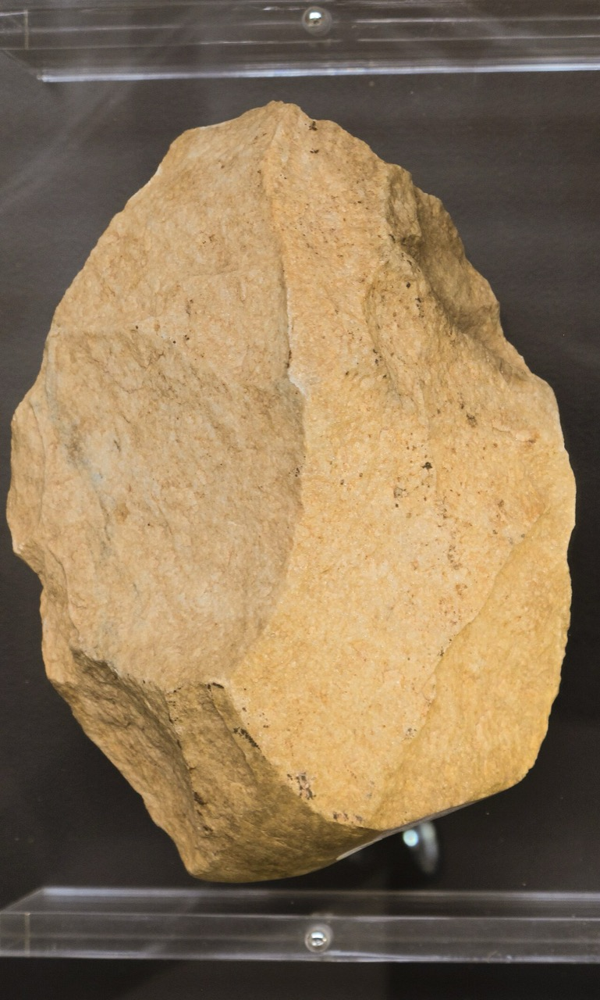
약 1만 년 전(기원전 8000년경), 빙하기가 끝나고 기후가 따뜻해지자 사람들의 삶이 근본부터 바뀌었다. 사냥감을 좇아 떠돌던 이들이 마침내 한곳에 정착하기 시작한 것이다.
가장 큰 변화는 농경과 목축의 시작이다. 조·피·수수 같은 잡곡을 심어 거두면서, 인류는 자연에서 먹을 것을 ‘얻는’ 단계에서 스스로 ‘생산’하는 단계로 올라섰다 — 이를 신석기 혁명이라 부른다. 도구도 돌을 갈아 날을 세운 간석기(마제석기)로 정교해졌고, 곡식을 갈아 먹기 위한 갈돌과 갈판이 등장했다. 흙을 빚어 구운 토기로 음식을 저장하고 조리했는데, 이 시대를 대표하는 것이 겉면에 빗살 무늬를 새긴 빗살무늬 토기다.
사람들은 강가나 바닷가에 움집을 짓고 모여 살았다. 바닥을 둥글게 파고 가운데 화덕을 둔 이 집에서, 혈연으로 묶인 씨족들이 다른 씨족과 혼인(족외혼)하며 부족을 이루었다. 여전히 계급 없는 평등 사회였다. 한편 가락바퀴(방추차)와 뼈바늘로 실을 잣고 옷을 지었으며, 자연과 영혼에 대한 원시 신앙—만물에 정령이 있다는 애니미즘, 특정 동식물을 숭배하는 토테미즘, 무당을 통한 샤머니즘—이 싹텄다.
앞의 1.1 구석기 시대에서 시작한 변화는 이 절을 거친다. 다음 단원인 1.3 청동기 시대에서 그 흐름이 계속된다.
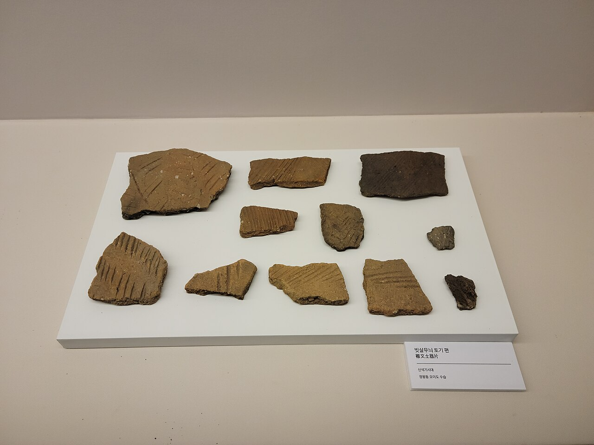
약 기원전 2000년에서 1500년 사이, 금속을 다루는 기술이 들어왔다. 청동은 귀하고 다루기 어려웠기에 아무나 가질 수 없었고 — 바로 그 점이 사회를 뿌리째 바꾸었다.
청동은 비파형 동검과 거친무늬 거울처럼 지배층의 무기와 제사 도구(의기)로 쓰였다. 반면 농사에는 여전히 돌과 나무 연장을 썼는데, 곡식의 이삭을 따는 반달 돌칼이 대표적이다. 이 무렵 일부 지역에서 벼농사가 시작되었고, 생산이 늘어 남는 것이 생기자 사유 재산과 빈부의 차이가 나타났다. 힘과 부를 가진 이가 군장(족장)이 되어 사람들을 다스렸으니, 이로써 계급 사회가 열렸다.
계급의 발생을 가장 뚜렷이 보여 주는 것이 고인돌(지석묘)이다. 거대한 돌을 옮겨 무덤을 만들려면 수많은 사람을 동원할 힘이 있어야 했으니, 고인돌은 곧 지배자의 권력을 증언한다. 사람들은 방어를 위해 마을 둘레에 도랑(환호)과 나무 울타리(목책)를 두르기도 했다. 울산 울주 반구대 바위그림에는 고래와 짐승이 새겨져 사냥과 풍요를 빌던 마음을 전한다.
앞의 1.2 신석기 시대에서 시작한 변화는 이 절을 거친다. 다음 단원인 1.4 철기 시대에서 그 흐름이 계속된다.
약 기원전 5세기 무렵부터 철기가 쓰이기 시작했다. 청동보다 흔하고 단단한 철은 농기구와 무기로 널리 만들어졌고, 그 결과는 생산력의 도약과 정복 전쟁의 확산이었다.
철제 농기구로 더 넓은 땅을 갈아 수확이 크게 늘었고, 철제 무기를 앞세운 세력들이 주변을 정복하며 커졌다 — 이것이 여러 나라가 일어서는 바탕이 된다. 한편 청동기는 실용성을 잃고 의식용으로 남았는데, 이 시기 한반도에서는 중국식과 구별되는 세형 동검(한국식 동검)과 잔무늬 거울, 그리고 청동기를 찍어 내던 거푸집(거푸집·용범)이 나온다. 거푸집의 존재는 우리 땅에서 독자적으로 청동기를 만들었음을 말해 준다.
철기 시대는 중국과의 활발한 교류로도 특징지어진다. 중국 화폐인 명도전·반량전·오수전이 한반도에서 출토되어 교역의 증거가 되고, 경남 창원 다호리에서 나온 붓은 이미 한자를 써서 기록했음을 보여 준다. 죽은 이는 널무덤(움무덤)이나 항아리를 관으로 쓴 독무덤(옹관묘)에 묻었다.
앞의 1.3 청동기 시대에서 시작한 변화는 이 절을 거친다. 다음 단원인 2.1 고조선의 건국과 발전에서 그 흐름이 계속된다.
청동기 문화를 바탕으로, 이 땅에 처음으로 국가가 섰다. 『삼국유사』는 기원전 2333년에 단군왕검이 고조선을 세웠다고 전한다.
단군 신화는 단순한 옛이야기가 아니라 당대의 사회상을 담은 기록이다. 하늘의 아들 환웅이 ‘널리 인간을 이롭게 한다(홍익인간)’는 뜻으로 내려오며 바람·비·구름을 다스리는 신하를 거느렸다는 대목은 농경 사회를, 곰이 사람이 되어 환웅과 혼인했다는 대목은 토테미즘과 부족의 결합을 보여 준다. 특히 지배자의 이름 단군왕검은 제사장(단군)과 정치적 군장(왕검)을 겸했다는 뜻으로, 고조선이 제정일치 사회였음을 알려 준다.
고조선의 세력 범위는 비파형 동검, 탁자식(북방식) 고인돌, 미송리식 토기의 분포가 겹치는 요령 지방에서 한반도 서북부에 이른다. 기원전 3세기경에는 부왕·준왕 같은 강력한 왕이 나와 왕위를 세습하고, 상·대부·장군 등의 관직을 두었으며, 중국의 연나라와 맞설 만큼 성장했다. 사회 질서는 8조법(범금 8조)으로 다스렸다.
고조선과 여러 나라는 청동기·철기 문화가 정치 조직으로 발전하는 과정에 놓인다. 건국 이야기, 법 조항, 제천 행사와 혼인 풍속은 각각 국가의 성격과 사회 구조를 보여 주는 자료다. 위치·경제·풍속을 함께 묶으면 부여·고구려·옥저·동예·삼한을 안정적으로 구분할 수 있다. 앞의 1.4 철기 시대에서 시작한 변화는 이 절을 거친다. 다음 단원인 2.2 위만 조선과 한의 침입에서 그 흐름이 계속된다.
사람을 죽인 자는 즉시 죽이고, 남을 다치게 한 자는 곡식으로 갚는다. 도둑질한 자는 노비로 삼으며, 용서받으려면 한 사람당 50만 전을 내야 한다.
『한서』 지리지 (현재 3개 조항만 전함)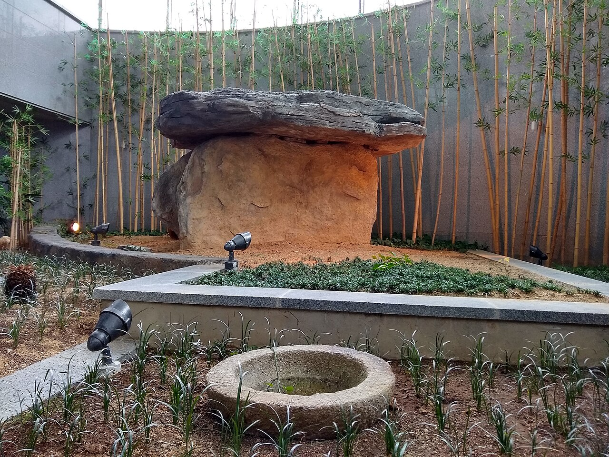
중국이 진(秦)에서 한(漢)으로 바뀌던 혼란기에 무리를 이끌고 넘어온 위만이, 기원전 194년 준왕을 몰아내고 왕이 되었다.
위만은 상투를 틀고 조선인의 옷을 입었으며 나라 이름을 그대로 ‘조선’이라 하였으니, 그의 정권은 이주민이 세웠어도 고조선을 계승한 성격을 지녔다. 위만 조선은 발달한 철기 문화를 본격 받아들여 세력을 크게 넓혔다. 특히 남쪽의 진(辰) 등이 중국 한나라와 직접 교역하는 것을 막고 그 사이에서 이익을 챙기는 중계 무역으로 번성했다 — 그리고 바로 이 점이 한나라와의 충돌을 불렀다.
한 무제는 대군을 보내 고조선을 쳤다. 우거왕(위만의 손자)이 이끄는 고조선은 1년 넘게 완강히 맞섰으나, 지배층의 분열 속에 수도 왕검성이 함락되면서 기원전 108년 끝내 멸망했다. 한은 그 자리에 낙랑·진번·임둔·현도의 4개 군현(한 군현)을 두었으나, 토착민의 끈질긴 저항으로 세력이 위축되었고, 마지막까지 남았던 낙랑군도 훗날(313년) 고구려 미천왕에게 축출된다.
앞의 2.1 고조선의 건국과 발전에서 시작한 변화는 이 절을 거친다. 다음 단원인 2.3 부여와 고구려에서 그 흐름이 계속된다.
고조선이 무너질 무렵, 철기 문화를 바탕으로 만주와 한반도 곳곳에서 여러 나라가 일어섰다. 그 북방의 두 축이 부여와 고구려다.
넓은 평야에 자리해 농사와 목축을 함께 한 나라다. 왕 아래 마가·우가·저가·구가—가축 이름을 딴 네 부족장—가 각자 사출도(四出道)를 다스리는 연맹 왕국이었으나, 왕권은 아직 약해 흉년이 들면 그 책임을 왕에게 묻기도 했다. 12월에는 하늘에 제사하고 죄수를 풀어 주는 영고라는 제천 행사를 열었으며, 남을 죽이면 죽이고 그 집안 사람을 노비로 삼는 1책 12법, 왕이 죽으면 사람을 함께 묻는 순장, 형이 죽으면 동생이 형수를 아내로 삼는 형사취수제의 풍속이 있었다.
주몽이 졸본에 세운 뒤 국내성으로 옮겼다. 산악 지대라 농토가 부족해 일찍부터 정복과 약탈 경제에 기댔고, 집집마다 부경이라는 창고를 두었다. 왕 아래 상가·고추가 등 대가(大加)들이 있었고, 국가의 중대사는 이들이 모인 제가 회의에서 결정했다. 10월에는 동맹이라는 제천 행사를 국동대혈에서 열었으며, 혼인하면 신랑이 신부 집에 지은 집(서옥)에 들어가 사는 서옥제(데릴사위제)의 풍속이 있었다.
앞의 2.2 위만 조선과 한의 침입에서 시작한 변화는 이 절을 거친다. 다음 단원인 2.4 옥저·동예·삼한에서 그 흐름이 계속된다.
(부여는) 은력 정월에 하늘에 제사 지내는데 … 온 나라 사람이 크게 모여 며칠을 두고 먹고 마시며 노래하고 춤추니, 이를 영고라 한다.
(고구려는) 10월에 하늘에 제사 지내는 큰 모임을 여니, 이를 동맹이라 한다.
『삼국지』 위서 동이전북방에 부여·고구려가 있었다면, 동해안에는 옥저와 동예가, 한반도 남부에는 삼한이 있었다. 앞의 둘은 왕이 없이 읍군·삼로라 불린 군장이 다스린 작은 나라였다.
옥저는 함경도 해안에 자리해 해산물과 소금이 풍부했다. 어린 여자아이를 신랑 집에서 길러 며느리로 삼는 민며느리제, 가족이 죽으면 뼈를 추려 한 목곽에 함께 넣는 가족 공동 무덤(골장제)의 풍속이 있었다. 동예는 강원 북부 동해안에 있었고, 특산물로 작은 말 과하마, 활 단궁, 바다표범 가죽 반어피가 유명했다. 10월에 무천이라는 제천 행사를 열었으며, 같은 씨족끼리 혼인하지 않는 족외혼과, 다른 부족의 경계를 침범하면 노비·소·말로 배상하는 책화의 풍속이 있었다.
남부에는 마한·진한·변한의 삼한이 있었고, 그중 마한의 목지국 지배자가 삼한 전체를 대표했다. 정치적 군장인 신지·읍차 외에, 하늘에 제사 지내는 천군이 소도라는 신성 지역을 따로 다스렸다 — 소도에는 군장의 힘도 미치지 못해 죄인이 숨어도 잡지 못했으니, 이는 제정 분리를 뜻한다. 벼농사가 발달해 저수지를 만들었고, 특히 변한은 질 좋은 철을 대량 생산해 덩이쇠를 낙랑·왜에 수출하고 화폐처럼 썼다. 5월 수릿날과 10월 계절제에 제천 행사를 열었다. 뒷날 마한은 백제로, 진한은 신라로, 변한은 가야로 이어진다.
앞의 2.3 부여와 고구려에서 시작한 변화는 이 절을 거친다. 다음 단원인 3.1 고구려의 성립과 발전에서 그 흐름이 계속된다.
기원 전후 만주와 한반도 곳곳에 흩어져 있던 연맹체들은 정복 전쟁과 제도 정비를 거치며 중앙집권적 고대 국가로 자라났다. 고구려·백제·신라는 왕위 세습을 확립하고 율령을 반포했으며 불교를 받아들여 사상을 하나로 묶었다. 낙동강 하류의 가야는 철과 해상 교역으로 번성했으나 끝내 통일 왕국으로 나아가지 못한 채 신라에 흡수되었다.
4~6세기 세 나라는 한강 유역을 차지한 나라가 전성기를 누리는 각축을 벌였다. 고구려·백제·신라가 차례로 주도권을 쥐었고, 7세기에는 수·당과 돌궐, 왜까지 얽힌 동아시아 국제전이 벌어졌다. 그 끝에서 신라가 당과 손잡아 백제와 고구려를 무너뜨리고, 다시 당을 몰아내며 불완전하나마 삼국 통일을 이룬다.
광개토대왕·장수왕이 요동과 한강 이북을 아우르다.
근초고왕이 마한을 통합하고 평양성을 공격하다.
진흥왕이 한강 유역을 장악하고 순수비를 세우다.
금관가야에 이어 대가야가 신라에 흡수되다.
백제·고구려가 멸망하고 나·당 전쟁으로 통일이 완성되다.
압록강 중류 졸본에서 일어난 고구려는 산악의 척박한 땅을 딛고 정복 국가로 성장하여, 삼국 가운데 가장 먼저 중앙집권 체제를 갖추었다.
1세기 후반 태조왕 때 옥저를 정복하고 동해안으로 뻗어 나가며 활발한 정복 활동을 벌였고, 이 무렵 계루부 고씨의 왕위 세습이 확립되었다. 2세기 고국천왕은 부족적 5부를 행정적 성격으로 재편하고 왕위를 부자 상속으로 바꾸어 왕권을 다졌다. 그러나 4세기 초 미천왕이 낙랑군을 몰아낸(313) 뒤 전연·백제와 충돌하며 국가적 위기를 겪기도 했다.
위기를 넘어선 소수림왕은 체제 정비에 힘써 율령을 반포하고 전진에서 불교를 수용했으며 태학을 세워 인재를 길렀다. 이로써 고구려는 도약의 발판을 마련했다. 이어 광개토대왕은 영락이라는 독자 연호를 쓰며 요동과 만주 일대를 장악하고, 신라에 침입한 왜를 격퇴하여 한반도 남부에까지 영향력을 미쳤다.
장수왕은 국내성에서 평양으로 천도(427)하여 남진 정책을 본격화했다. 백제의 수도 한성을 함락시켜 한강 유역을 차지했고, 이를 기념한 충주 고구려비를 남겼다. 아버지의 업적을 새긴 광개토대왕릉비와 함께 이 시기 고구려는 동북아시아의 강국으로 우뚝 섰다.
삼국의 성장은 왕권 강화, 율령 반포, 불교 수용, 영토 확장의 순서로 읽는다. 한강 유역을 차지한 나라가 교통과 농업·교역의 이점을 바탕으로 전성기를 맞았다는 공통 구조가 있다. 왕의 업적은 앞뒤 왕과 수도 이동, 가야 병합까지 연결해야 선택지를 가를 수 있다. 앞의 2.4 옥저·동예·삼한에서 시작한 변화는 이 절을 거친다. 다음 단원인 3.2 백제의 성립과 발전에서 그 흐름이 계속된다.
영락 5년, 왕은 비려가 백성을 돌려보내지 않으므로 몸소 군사를 이끌고 토벌하였다. … 백잔(백제)과 신라는 예로부터 우리의 속민이었으므로 조공을 바쳐 왔다.
『광개토대왕릉비문』한강 하류의 비옥한 평야와 뱃길을 발판으로 일어선 백제는 4세기에 삼국 가운데 가장 먼저 전성기를 맞았다.
고구려에서 내려온 온조 집단이 위례성에 세운 백제는 3세기 고이왕 때 국가의 틀을 갖추었다. 6좌평과 16관등을 정비하고 율령을 반포했으며 관리의 공복 색을 정하여 지배 질서를 세웠다. 이어 4세기 근초고왕은 남으로 마한을 통합하고, 북으로 고구려의 평양성을 공격하여 고국원왕을 전사시켰다. 왕위의 부자 상속을 확립했고, 중국 요서 진출설과 규슈·가야에 미친 영향, 왜에 하사한 칠지도가 이 시기 백제의 위세를 보여 준다.
그러나 5세기 장수왕의 남진으로 개로왕이 전사하고 한성이 함락되자, 백제는 웅진(공주)으로 천도(475)하며 위축되었다. 동성왕은 신라와 결혼 동맹을 맺어 고구려에 맞섰고, 무령왕은 지방에 22담로를 두어 왕족을 파견함으로써 지방 통제를 강화하고 중흥의 기틀을 닦았다.
성왕은 넓은 사비(부여)로 천도(538)하고 국호를 남부여로 고쳤다. 중앙에 22부의 관청과 5부·5방을 정비했으며, 신라 진흥왕과 연합하여 한강 유역을 일시 회복했다. 그러나 진흥왕의 배신으로 한강을 빼앗기고, 이를 되찾으려다 관산성 전투에서 전사하며(554) 백제의 중흥은 좌절되었다.
앞의 3.1 고구려의 성립과 발전에서 시작한 변화는 이 절을 거친다. 다음 단원인 3.3 신라의 성립과 발전에서 그 흐름이 계속된다.
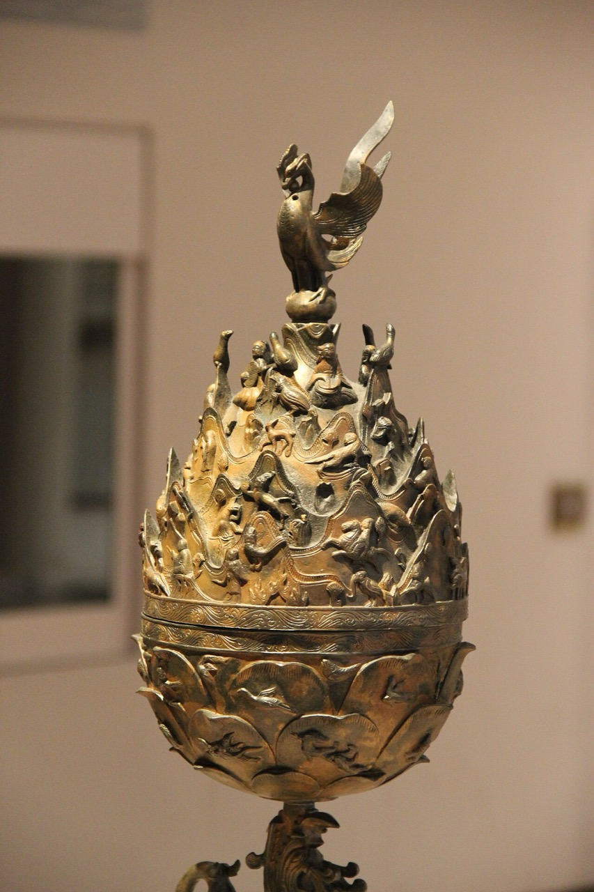
한반도 동남쪽에 치우친 신라는 발전이 가장 더뎠으나, 6세기에 이르러 한강 유역을 차지하며 통일의 주역으로 떠올랐다.
진한의 사로국에서 출발한 신라는 박·석·김 3성이 번갈아 왕위를 이었다. 4세기 후반 내물왕 때 김씨의 왕위 세습이 확립되고 대군장을 뜻하는 마립간 칭호를 사용하면서 중앙집권의 기반이 마련되었다. 이 무렵 왜의 침입을 광개토대왕의 도움으로 물리치면서 한동안 고구려의 영향 아래 놓이기도 했다.
6세기 지증왕은 국호를 신라로, 왕호를 중국식 왕으로 정하고, 우경을 장려했으며 이사부를 보내 우산국(울릉도)을 복속시켰다. 뒤이은 법흥왕은 율령을 반포하고 병부를 설치했으며, 이차돈의 순교를 계기로 불교를 공인했다. 또 금관가야를 병합(532)하고 독자 연호 건원을 사용하여 왕권을 크게 높였다.
전성기를 연 진흥왕은 백제와 연합해 한강 상류를 차지한 뒤 곧 하류까지 독차지하여 서해 교통로를 확보했고, 대가야를 정복(562)하고 함경도까지 진출했다. 정복지마다 순수비와 단양 적성비를 세웠으며, 화랑도를 국가 조직으로 정비하여 인재를 길렀다.
앞의 3.2 백제의 성립과 발전에서 시작한 변화는 이 절을 거친다. 다음 단원인 3.4 가야 연맹에서 그 흐름이 계속된다.
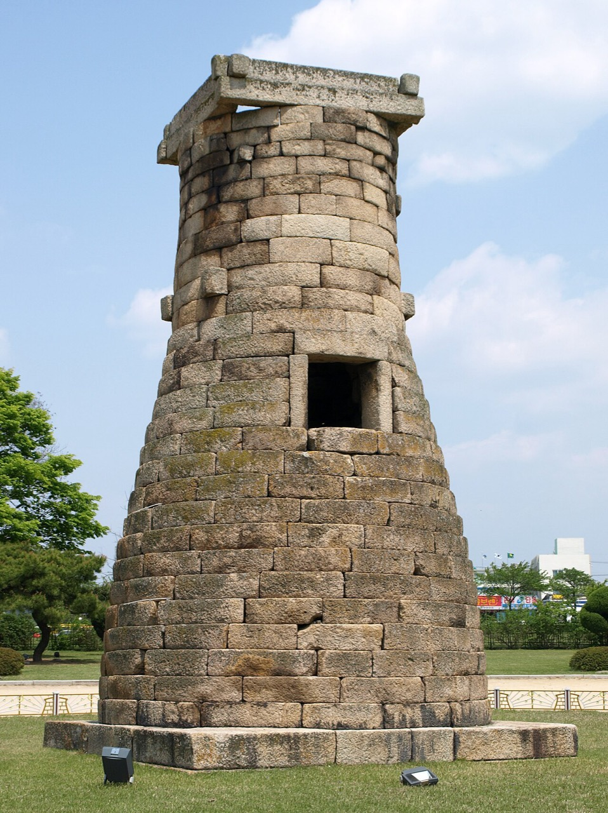
낙동강 하류의 변한 땅에서 일어난 가야는 철과 바닷길로 번영했으나, 끝내 하나의 왕국으로 통합되지 못한 채 신라에 흡수되었다.
전기 가야 연맹은 김해의 금관가야가 주도했다. 시조 김수로왕 설화가 전하는 이 나라는 질 좋은 철을 생산하여 덩이쇠를 화폐처럼 썼고, 낙랑과 왜를 잇는 중계 무역으로 크게 번성했다. 그러나 4세기 말~5세기 초 광개토대왕이 신라를 도와 왜를 격퇴하는 과정에서 큰 타격을 입어 연맹의 주도권을 잃었다.
이후 후기 가야 연맹은 고령의 대가야를 중심으로 재편되었다. 대가야는 5~6세기 소백산맥 서쪽까지 세력을 넓혔고 중국 남조·신라·백제와 교류했으나, 백제와 신라의 압박 속에서 안정된 통합을 이루지 못했다.
결국 금관가야는 법흥왕에게 병합(532)되고, 대가야는 진흥왕에게 정복(562)되면서 가야 연맹은 역사에서 사라졌다. 여러 소국이 연맹 단계에 머문 채 중앙집권 국가로 발전하지 못한 것이 멸망의 근본 원인이었다. 다만 우수한 철기와 토기 문화는 신라와 일본에 깊은 영향을 남겼다.
앞의 3.3 신라의 성립과 발전에서 시작한 변화는 이 절을 거친다. 다음 단원인 4.1 삼국의 신분제와 통치 조직에서 그 흐름이 계속된다.
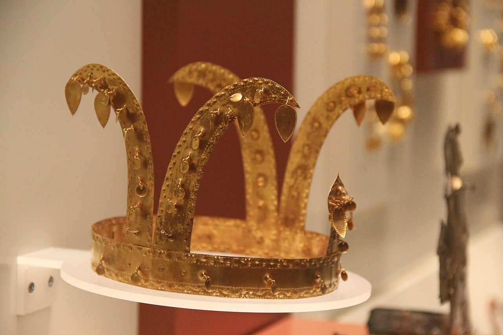
고대 국가는 엄격한 신분제 위에 세워졌고, 왕권과 귀족 세력의 관계는 귀족 회의체를 통해 조율되었다.
삼국은 정복 과정에서 통합한 부족장들을 서열화하여 관등제로 편성했다. 고구려는 대대로 이하 10여 관등을, 백제는 좌평 이하 16관등을, 신라는 이벌찬 이하 17관등을 두었다. 관등은 곧 신분의 표현이었고, 옷 색깔로 등급을 구별하는 공복제가 이를 뒷받침했다.
신라의 신분제인 골품제는 가장 폐쇄적이었다. 왕족인 성골·진골과 6~1두품으로 나뉘어, 개인이 오를 수 있는 관등의 상한은 물론 집·수레·의복까지 골품에 따라 규제되었다. 특히 6두품은 능력이 뛰어나도 아찬 이상 오를 수 없어 큰 불만을 품었다.
중대사는 귀족 회의에서 만장일치로 결정되었다. 고구려의 제가회의, 백제의 정사암회의, 신라의 화백회의가 그것이다. 특히 화백회의는 상대등이 주재하며 국왕 선출·폐위까지 관여하여, 귀족 세력이 왕권을 견제하는 장치로 기능했다.
삼국의 제도와 문화는 각 나라의 자연환경과 정치 발전을 반영한다. 신분제·관등제·지방 조직은 중앙 집권의 정도를, 고분과 불교 미술은 국가별 문화 성격을 보여 준다. 일본에 전해진 인물과 기술은 어느 나라에서 무엇을 전했는지를 짝으로 익힌다. 앞의 3.4 가야 연맹에서 시작한 변화는 이 절을 거친다. 다음 단원인 4.2 삼국의 경제에서 그 흐름이 계속된다.
삼국의 경제는 농업을 근간으로 삼았고, 국가는 백성에게서 조세를 거두어 지배층을 부양했다.
지배층은 국가로부터 토지의 조세를 받는 녹읍과 공을 세운 대가로 받는 식읍을 지급받았다. 특히 녹읍은 토지의 조세뿐 아니라 그 지역 백성의 노동력까지 징발할 수 있어 귀족의 강력한 경제 기반이 되었다. 농민에게는 조(租)·용(庸)·조(調), 곧 곡물과 노동력, 특산물을 거두는 수취 체제가 적용되었다.
농업 생산력은 점차 높아졌다. 철제 농기구가 보급되고 우경이 장려되었으며, 지증왕 때에는 이를 국가 차원에서 권장하여 깊이갈이가 확산되었다. 저수지를 쌓고 황무지를 개간하면서 농업 생산이 늘었다.
한편 국가는 재해와 춘궁기에 농민의 몰락을 막고자 진휼 정책을 폈다. 대표적으로 고구려 고국천왕은 재상 을파소의 건의를 받아들여 봄에 곡식을 빌려 주고 가을에 갚게 하는 진대법을 실시했다(194). 이는 자영농을 보호하여 국가의 조세 기반을 지키려는 조치였다.
앞의 4.1 삼국의 신분제와 통치 조직에서 시작한 변화는 이 절을 거친다. 다음 단원인 4.3 불교·도교·유학의 수용에서 그 흐름이 계속된다.
삼국은 중앙집권을 다지는 과정에서 불교를 받아들여 사상을 통합하고, 도교와 유학까지 아울러 고대 문화를 살찌웠다.
불교는 왕실이 앞장서 수용했다. 고구려는 소수림왕이 전진에서(372), 백제는 침류왕이 동진에서(384) 받아들였다. 신라는 전래가 늦고 귀족의 반발이 커, 법흥왕 때 이차돈의 순교를 계기로 비로소 공인되었다(527). 불교는 왕즉불(王卽佛) 사상으로 왕권을 뒷받침하고 백성의 정신을 하나로 묶었다.
도교는 산천 숭배와 신선 사상이 결합한 것으로, 귀족 사회에서 유행했다. 백제의 산수무늬 벽돌(산수문전)과 금동대향로, 고구려 고분 벽화의 사신도에 그 세계관이 잘 드러난다.
유학은 통치 이념과 학문으로 수용되었다. 고구려는 태학과 지방의 경당에서 유학과 무예를 가르쳤고, 백제는 오경박사를 두었다. 신라에서는 두 청년이 유교 경전 학습과 실천을 맹세한 임신서기석이 유학 수용의 실상을 보여 준다.
앞의 4.2 삼국의 경제에서 시작한 변화는 이 절을 거친다. 다음 단원인 4.4 고분과 예술에서 그 흐름이 계속된다.
삼국의 무덤 양식은 시대와 나라에 따라 뚜렷이 달라, 문화와 대외 교류의 흐름을 읽는 열쇠가 된다.
고구려 초기에는 돌을 쌓아 올린 돌무지무덤이 만들어졌는데, 장군총이 대표적이다. 백제도 한성 시기에는 고구려의 영향을 받아 서울 석촌동에 돌무지무덤을 남겨, 백제 건국 세력이 고구려 계통임을 뒷받침한다. 이후 삼국은 굴을 파 널방을 만든 굴식 돌방무덤으로 옮겨 갔는데, 벽에 그림을 그릴 수 있어 고구려 강서대묘의 사신도, 무용총 등 벽화가 전한다.
신라는 독특하게 돌무지덧널무덤을 오래 썼다. 나무 덧널 위에 돌을 쌓고 흙을 덮은 구조로 도굴이 어려워 껴묻거리가 잘 보존되었으나, 벽이 없어 벽화는 남기지 못했다. 천마총·황남대총이 대표적이며, 금관 등 화려한 유물이 쏟아졌다.
백제 웅진 시기의 무령왕릉은 중국 남조의 영향을 받은 벽돌무덤(전축분)으로, 묘지석이 나와 무덤의 주인과 연대가 확인된 귀중한 예다. 이 밖에 백제의 금동대향로, 신라의 첨성대(천문 관측)와 배리 석불 입상 등이 삼국 예술의 정수를 보여 준다.
앞의 4.3 불교·도교·유학의 수용에서 시작한 변화는 이 절을 거친다. 다음 단원인 4.5 삼국 문화의 일본 전파에서 그 흐름이 계속된다.
삼국은 선진 문물을 바다 건너 왜에 전하여, 일본 고대 아스카 문화가 꽃피는 밑거름이 되었다.
전파를 주도한 것은 백제였다. 근초고왕 무렵 아직기가 왜의 태자에게 한자를 가르쳤고, 뒤이어 왕인이 『천자문』과 『논어』를 전하여 유학과 한문학의 기초를 놓았다. 성왕 때에는 노리사치계가 불경과 불상을 전하여 왜에 불교를 처음 전파했다.
고구려의 승려 담징은 종이와 먹의 제조법을 전하고 호류사 금당 벽화를 그린 것으로 전한다. 또 혜자는 쇼토쿠 태자의 스승이 되어 불법을 가르쳤다. 신라는 배 만드는 기술과 축제술(제방 쌓기)을 전하여 '한인의 연못'이라는 이름을 남겼다.
이렇게 전해진 문물은 7세기 아스카 문화로 결실을 맺었다. 일본 최초의 절과 불상, 목조 건축과 학문이 삼국의 영향 아래 성립했으며, 이는 한반도와 일본이 긴밀히 교류한 고대 문화 공동체였음을 보여 준다.
앞의 4.4 고분과 예술에서 시작한 변화는 이 절을 거친다. 다음 단원인 5.1 6~7세기 동아시아 국제 정세에서 그 흐름이 계속된다.
6세기 진흥왕의 한강 장악은 삼국의 외교 지형을 뒤흔들어, 7세기 동아시아를 남북 진영의 대결로 몰아갔다.
한강을 빼앗긴 백제는 신라에 원한을 품고 고구려·왜와 손잡았다. 이에 돌궐-고구려-백제-왜를 잇는 남북 세력과, 이에 맞선 신라-당의 동서 세력이 대립하는 십자형 외교 구도가 형성되었다. 고립된 신라는 마침내 당과의 연합에 활로를 찾게 된다.
한편 중국을 통일한 수는 고구려를 압박했다. 고구려가 요서를 선제공격하자 수 양제는 113만 대군으로 침공했으나(612), 을지문덕이 유인 전술로 후퇴하는 적을 살수에서 크게 무찔렀다. 이 살수대첩으로 30만 별동대가 궤멸했고, 거듭된 원정 실패로 수는 멸망했다.
뒤이은 당도 처음에는 화친했으나 태종이 즉위한 뒤 팽창에 나섰다. 고구려가 천리장성을 쌓고 연개소문이 정변으로 실권을 잡아 강경책을 펴자, 당 태종은 이를 구실로 침공했다. 그러나 고구려군과 백성은 안시성에서 60여 일을 버텨 당군을 물리쳤다(645).
7세기 통일 전쟁은 신라만의 국내사가 아니라 수·당, 돌궐, 왜가 얽힌 동아시아 국제전이다. 동맹의 결성과 해체, 백제·고구려 부흥 운동, 나당 전쟁의 전장을 시간순으로 이어야 한다. 통일의 의의와 한계는 발해의 성립까지 함께 보아야 균형 있게 이해된다. 앞의 4.5 삼국 문화의 일본 전파에서 시작한 변화는 이 절을 거친다. 다음 단원인 5.2 백제와 고구려의 멸망에서 그 흐름이 계속된다.
신묘한 계책은 하늘의 이치를 다했고 / 기묘한 꾀는 땅의 이치를 통달했도다 / 싸움마다 이겨 공이 이미 높으니 / 만족함을 알거든 그만두기를 바라노라.
을지문덕, 『삼국사기』고립을 벗어나려는 신라와 고구려를 노리는 당의 이해가 맞아떨어지면서, 백제와 고구려는 차례로 무너졌다.
김춘추의 외교로 신라와 당은 나·당 동맹을 맺었다(648). 지배층의 분열로 흔들리던 백제가 먼저 표적이 되었다. 계백의 결사대가 황산벌에서 김유신의 신라군에 맞섰으나 패했고, 사비성이 함락되며 백제는 멸망했다(660). 이어 당군과 신라군은 북으로 향해, 연개소문 사후 아들들의 권력 다툼으로 분열된 고구려마저 평양성이 함락되어 멸망했다(668).
그러나 두 나라의 유민은 곧 부흥 운동을 일으켰다. 백제에서는 복신·도침이 왕자 부여풍을 왕으로 받들어 주류성에서, 흑치상지가 임존성에서 항쟁했다. 왜의 수군이 백제를 도우러 왔으나 백강 전투에서 나·당 연합군에 대패하며(663) 백제 부흥 운동은 좌절되었다.
고구려에서도 검모잠이 안승을 왕으로 세워 한성(황해도)에서 부흥을 꾀했다. 신라는 이들을 지원하여 당을 견제했으며, 뒤에 안승을 보덕국 왕으로 삼아 금마저(익산)에 두었다. 이처럼 유민의 저항은 이어졌으나, 지도부의 분열로 나라를 되살리지는 못했다.
앞의 5.1 6~7세기 동아시아 국제 정세에서 시작한 변화는 이 절을 거친다. 다음 단원인 5.3 나·당 전쟁과 통일의 완성에서 그 흐름이 계속된다.
백제·고구려의 옛 땅을 통째로 차지하려는 당의 야심에 맞서, 신라는 당과의 전쟁을 감행하여 통일을 완성했다.
당은 백제 땅에 웅진도독부, 고구려 땅에 안동도호부, 심지어 신라에까지 계림도독부를 두어 한반도 전체를 지배하려 했다. 이에 문무왕의 신라는 고구려 부흥 세력을 지원하고 백제 옛 땅을 공략하며 당과 정면으로 충돌했다.
신라는 매소성 전투에서 당의 20만 육군을 격파하고(675), 이듬해 금강 하구의 기벌포 전투에서 당의 수군마저 무찔렀다(676). 이로써 당의 세력을 대동강 이북으로 몰아내고, 마침내 삼국 통일을 완성했다.
신라의 통일은 외세인 당을 끌어들였고 영토가 대동강 이남에 그친 한계가 뚜렷하다. 그러나 당을 무력으로 몰아낸 자주적 성격을 지녔고, 삼국의 백성과 문화를 하나로 아울러 민족 문화 발전의 토대를 마련했다는 점에서 큰 의의가 있다.
앞의 5.2 백제와 고구려의 멸망에서 시작한 변화는 이 절을 거친다. 다음 단원인 6.1 통일 신라의 전제 왕권에서 그 흐름이 계속된다.
676년 신라가 삼국을 통일하고, 698년 대조영이 발해를 세우면서 한반도와 만주에는 남쪽의 통일 신라와 북쪽의 발해가 나란히 서는 남북국 시대가 열렸다. 통일 신라는 넓어진 영토와 늘어난 인구를 바탕으로 왕권을 강화하고 유교 정치 이념을 받아들여 전제 왕권의 전성기를 이루었으며, 발해는 고구려 계승 의식을 내걸고 만주 일대를 아울러 해동성국이라 불렸다.
그러나 8세기 후반 혜공왕 피살을 계기로 신라는 진골 귀족의 왕위 쟁탈전과 지방 반란으로 흔들렸고, 6두품과 호족이 새 시대의 주역으로 떠올랐다. 마침내 견훤과 궁예가 후백제·후고구려를 세우면서 후삼국의 분열이 시작되고, 그 혼란을 수습할 인물로 왕건이 등장한다. 이 부는 통일에서 재분열에 이르는 남북국 300여 년의 흥망을 따라간다.
무열왕 직계 왕위 계승, 신문왕이 김흠돌의 난을 진압하고 관료전·국학으로 왕권 강화.
대조영이 고구려 유민과 말갈을 이끌고 동모산에 나라를 세워 남북국의 형세를 이룸.
선왕 때 발해가 최대 영역을 확보하고 5경 15부 62주를 정비, 당이 해동성국이라 부름.
혜공왕 피살 이후 진골의 왕위 쟁탈, 김헌창의 난·원종과 애노의 난, 6두품과 호족 성장.
견훤의 후백제와 궁예의 후고구려가 서고, 왕건이 고려를 세우며 통일을 준비.
삼국 통일 직후 신라는 무열왕계 직계가 왕위를 이어 가며 전제 왕권의 전성기를 열었고, 신문왕 대에 그 절정에 이르렀다.
최초의 진골 출신 왕인 무열왕(김춘추)은 백제를 무너뜨리며 통일의 기틀을 다졌고, 이때부터 무열왕 직계가 왕위를 독점하였다. 뒤를 이은 문무왕은 고구려를 멸망시키고 당군을 몰아내는 나·당 전쟁에서 승리하여 676년 삼국 통일을 완성하였다. 통일로 영토와 인구가 크게 늘고 왕실의 권위가 높아지면서, 왕권을 뒷받침하는 새로운 정치 질서가 요구되었다.
신문왕은 즉위 직후 장인 김흠돌의 난을 진압하면서 이에 연루된 진골 귀족을 대거 숙청하여 왕권을 크게 강화하였다. 이어 관리에게 관료전을 지급하고 조세만 거둘 수 있게 한 뒤, 노동력까지 징발하던 녹읍을 폐지하여 귀족의 경제 기반을 약화시켰다. 또 유학 교육 기관인 국학을 세워 왕에게 충성하는 인재를 길렀다.
지방 제도도 9주 5소경으로 정비하고 군사 조직을 갖추었으며, 진골 귀족의 근거지인 경주를 벗어나려 달구벌(대구) 천도를 시도하였다. 천도는 귀족의 반대로 무산되었으나, 이러한 일련의 정책은 신라 중대 전제 왕권의 성격을 뚜렷이 보여 준다.
통일 신라는 넓어진 영토를 다스리기 위해 왕권과 행정 체제를 정비했지만, 골품제와 진골 귀족의 특권이라는 한계를 안고 있었다. 신문왕의 개혁과 신라 하대의 동요를 대비하고, 장보고의 해상 활동·원성왕의 독서삼품과·선종과 풍수지리의 확산을 변화의 신호로 연결한다. 앞의 5.3 나·당 전쟁과 통일의 완성에서 시작한 변화는 이 절을 거친다. 다음 단원인 6.2 통치 체제의 정비에서 그 흐름이 계속된다.
신문왕 7년(687) 5월에 문무 관료에게 토지를 차등 있게 주었다. 9년 정월에는 내외 관료의 녹읍을 폐지하고, 해마다 조를 차등 있게 주는 것을 법으로 삼았다.
『삼국사기』 신라본기넓어진 영토를 다스리기 위해 신라는 중앙 관제를 왕 중심으로 재편하고, 전국을 9주 5소경으로 나누어 통치하였다.
중앙에서는 왕명을 받들어 국정을 총괄하는 집사부가 핵심 기구가 되었고, 그 장관인 시중(중시)의 권한이 강화되었다. 반대로 귀족 회의체인 화백 회의와 그 의장인 상대등의 위상은 크게 약해졌다. 집사부 아래 위화부 등 13부가 행정을 나누어 맡아 관료 조직이 정비되었다.
지방은 전국을 9주로 나누고, 옛 고구려·백제 지역까지 고르게 배분하였다. 수도가 동남쪽에 치우친 약점을 보완하려 군사·행정의 요지에 5소경을 두어 지방 세력을 견제하고 균형을 꾀하였다. 군사 조직은 중앙군인 9서당과 지방군인 10정으로 편성하였는데, 9서당에는 신라인뿐 아니라 고구려·백제·말갈인까지 포함하여 민족 융합을 꾀하였다.
지방관을 감찰하기 위해 외사정을 파견하였고, 지방 세력을 통제하는 장치로 지방 향리의 자제를 수도에 머물게 하는 상수리 제도를 두었다. 이는 후대 고려의 기인 제도로 이어지는 인질 성격의 견제책이었다.
앞의 6.1 통일 신라의 전제 왕권에서 시작한 변화는 이 절을 거친다. 다음 단원인 6.3 경제와 대외 교류에서 그 흐름이 계속된다.
국가는 토지와 백성을 문서로 파악해 세금을 거두었고, 바다로는 당·일본을 잇는 국제 무역이 활발하였다.
서원경 부근 촌락의 상황을 기록한 민정 문서(신라 촌락 문서)는 촌주가 3년마다 조사하여 작성한 것으로, 인구를 남녀·연령별로 나누고 토지·소·말·나무 수까지 상세히 적었다. 이는 국가가 노동력과 생산 자원을 철저히 파악해 조세·공물·부역을 거두었음을 보여 준다. 토지 제도에서는 신문왕이 관료전을 지급하고 녹읍을 폐지했으나, 경덕왕 때 녹읍이 부활하여 귀족 세력이 다시 강해지는 조짐을 보였다.
대외 교류의 중심에는 장보고가 있었다. 그는 완도에 청해진을 세워 해적을 소탕하고 당·신라·일본을 잇는 해상 무역을 장악하였다. 수도로 통하는 관문인 울산항에는 아라비아 상인까지 드나들었고, 당의 동해안 일대에는 신라인 거주지인 신라방과 감독 관청 신라소, 사원 신라원이 들어섰다.
북쪽의 발해와도 교류가 이어져, 신라는 상경에서 동경을 거쳐 신라에 이르는 신라도라는 교통로를 통해 발해와 오갔다. 남북국이 대립만 한 것이 아니라 사신과 교역으로 이어져 있었음을 보여 준다.
앞의 6.2 통치 체제의 정비에서 시작한 변화는 이 절을 거친다. 다음 단원인 6.4 신라 하대의 동요에서 그 흐름이 계속된다.
8세기 후반 혜공왕이 피살되면서 무열왕 직계가 끊기고, 진골 귀족의 끝없는 왕위 쟁탈전 속에 신라 하대의 혼란이 시작되었다.
혜공왕 이후 150여 년 동안 20명의 왕이 바뀔 만큼 왕위 쟁탈전이 격심하였다. 웅천주 도독 김헌창은 아버지가 왕이 되지 못한 데 불만을 품고 김헌창의 난을 일으켰고, 해상 세력으로 성장한 장보고도 왕위 계승 다툼에 끼어들었다가 장보고의 난 끝에 암살되었다. 중앙의 통제력이 약해지자 지방에서는 독자적 세력이 커 갔다.
이 시기 신분의 벽에 막혀 있던 6두품은 골품제의 모순을 비판하며 개혁을 요구하였고, 지방에서는 스스로 성주·장군을 칭하는 호족이 군사력과 경제력을 갖추고 반독립적 세력으로 성장하였다. 이들은 뒷날 후삼국과 고려 건국의 주역이 된다.
거듭된 수탈과 자연재해로 농민의 삶이 무너지자, 진성 여왕 때 상주에서 원종과 애노의 난을 시작으로 전국에서 농민 봉기가 잇따랐다. 당에서 유학하고 돌아온 6두품 학자 최치원은 시무 10여 조를 올려 개혁을 건의하였으나 받아들여지지 않았고, 신라는 끝내 쇠퇴의 길로 접어들었다.
앞의 6.3 경제와 대외 교류에서 시작한 변화는 이 절을 거친다. 다음 단원인 6.5 사상과 문화에서 그 흐름이 계속된다.
통일 신라의 불교는 대중 속으로 파고들며 사상적으로 원숙해졌고, 하대에는 선종과 풍수지리설이 새 시대의 흐름을 열었다.
원효는 여러 종파의 대립을 하나로 아우르는 화쟁 사상과 일심 사상을 주장하고, ‘나무아미타불’만 외면 누구나 극락에 갈 수 있다는 아미타 신앙을 퍼뜨려 불교를 대중화하였다. 의상은 모든 존재가 서로 조화를 이룬다는 화엄 사상을 정립하고 부석사를 세웠으며, 현세의 고난을 구제하는 관음 신앙을 널리 알렸다. 혜초는 인도와 중앙아시아를 순례하고 『왕오천축국전』을 남겼다.
신라 하대에는 경전 대신 참선과 개인의 깨달음을 강조하는 선종이 유행하여 9산 선문을 이루었다. 선종은 기존 교단 질서에 얽매이지 않아 지방 호족의 후원을 받으며 성장하였다. 도선이 들여온 풍수지리설도 경주 중심의 지리 인식을 무너뜨려 지방의 중요성을 부각시키며 호족의 사상적 기반이 되었다.
조형 예술도 절정에 이르렀다. 김대성이 세운 것으로 전하는 불국사와 인공 석굴 사원 석굴암은 신라 불교 예술의 정수로 꼽힌다. 탑에서는 이중 기단 위의 3층 석탑이 전형을 이루어, 불국사의 석가탑(무영탑)과 화려한 다보탑이 대표적이다. 석가탑에서는 현존 세계 최고(最古)의 목판 인쇄물인 무구정광대다라니경이 발견되었다.
앞의 6.4 신라 하대의 동요에서 시작한 변화는 이 절을 거친다. 다음 단원인 7.1 발해의 건국과 발전에서 그 흐름이 계속된다.
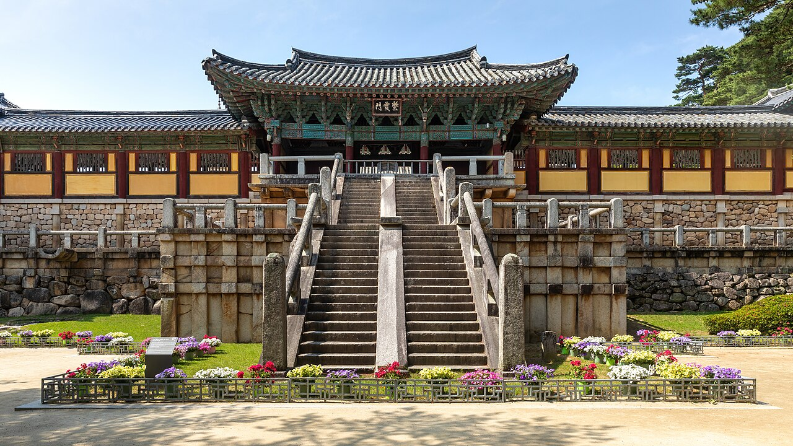
고구려 멸망 30년 뒤, 대조영이 만주에 발해를 세우면서 남쪽의 신라와 더불어 남북국의 형세가 갖추어졌다.
대조영은 고구려 유민과 말갈 집단을 이끌고 당의 지배에서 벗어나, 698년 동모산에 나라를 세웠다(처음 국호는 진국, 뒤에 발해). 지배층의 중심은 고구려 유민이었고, 발해는 스스로 고구려 계승을 표방하였다. 이로써 한반도와 만주에 남북 두 나라가 병립하는 시대가 열렸다.
무왕은 독자 연호 인안을 쓰며 영토를 넓히고 당·신라와 맞섰다. 그는 장수 장문휴를 보내 당의 산둥(등주)를 공격하여 발해의 위세를 떨쳤다. 뒤를 이은 문왕은 연호 대흥을 쓰고 당과 친선을 맺어 문물을 받아들였으며, 중앙 관제를 3성 6부로 정비하고 수도를 상경으로 옮겼다. 또 신라와 통하는 신라도를 열어 교류하였다.
9세기 전반 선왕 때 발해는 대부분의 말갈 부족을 아우르고 요동까지 진출하여 최대 영역을 확보하였다. 이때 지방 제도를 5경 15부 62주로 완비하였으며, 전성기의 발해를 당은 ‘바다 동쪽의 융성한 나라’라는 뜻의 해동성국(海東盛國)이라 불렀다.
발해는 고구려 계승 의식과 당 제도의 수용이 함께 나타난 국가다. 왕별 영토 확대와 수도 이동, 3성 6부와 5경 체제, 대외 교통로를 묶어 이해한다. 신라 하대의 호족·6두품 성장과 후삼국 성립은 고려 건국으로 이어지는 정치·사상적 전환이다. 앞의 6.5 사상과 문화에서 시작한 변화는 이 절을 거친다. 다음 단원인 7.2 발해의 통치 체제와 대외 관계에서 그 흐름이 계속된다.
발해는 당의 3성 6부를 받아들이되 이름과 운영을 독자적으로 바꾸어, 당의 제도를 그대로 따르지 않았다.
중앙 관제는 3성 6부로 짜였으나, 정책을 총괄하는 정당성이 국정의 중심이 되고 그 장관인 대내상이 국정을 총괄하여 당과 구조가 달랐다. 6부의 이름도 충·인·의·지·예·신이라는 유교식 명칭을 붙이고, 이를 둘씩 묶어 좌사정·우사정이 관할하는 이원적 운영을 하였다. 이는 발해가 당 제도를 빌리면서도 자기 방식으로 독자적으로 운영했음을 보여 준다.
교육 기관으로는 유학을 가르치는 주자감을 두었고, 관리를 감찰하는 기구로 중정대를 설치하였다. 이러한 관제는 발해가 유교 정치 이념을 바탕으로 정비된 관료 국가였음을 알려 준다.
대외 관계에서 발해는 당과는 처음에 대립하였으나 문왕 이후 친선을 맺어 문물을 받아들였고, 유학생과 상인이 오가며 산둥에 발해관이 설치되었다. 신라와는 신라도를 통해 교류하되 때로 경쟁하였고, 일본과는 사신을 자주 주고받으며 우호 관계를 유지하였다.
앞의 7.1 발해의 건국과 발전에서 시작한 변화는 이 절을 거친다. 다음 단원인 7.3 발해의 문화에서 그 흐름이 계속된다.
발해 문화는 고구려를 계승한 바탕 위에 당의 문화를 받아들여, 웅장하면서도 세련된 국제적 성격을 띠었다.
발해는 스스로 고구려를 잇는 나라임을 뚜렷이 밝혔다. 일본에 보낸 국서에서 발해 왕을 ‘고려 국왕’이라 칭하고 고구려의 옛 땅을 되찾았다고 하여 고구려 계승 의식을 드러냈다. 문화 유물에서도 이러한 계승성이 확인되는데, 고구려의 온돌 구조가 이어졌고 이불병좌상(두 부처가 나란히 앉은 불상)과 힘찬 석등 양식이 고구려의 영향을 보여 준다.
수도 상경성은 당의 장안성을 본떠 외성을 두르고 남북으로 주작대로를 낸 계획도시로, 당 문화를 적극 수용한 면모를 보여 준다. 이렇듯 발해 문화는 고구려의 전통과 당의 세련미가 어우러진 것이었다.
고분에서도 두 계통이 함께 나타난다. 정혜 공주 묘는 고구려식 굴식 돌방무덤에 모줄임 천장 구조를 갖추었고, 정효 공주 묘는 당의 영향을 받은 벽돌무덤으로 벽화가 남아 있다. 벽돌탑인 영광탑 역시 당 문화의 수용을 보여 주는 대표적 유물이다.
앞의 7.2 발해의 통치 체제와 대외 관계에서 시작한 변화는 이 절을 거친다. 다음 단원인 7.4 후삼국의 성립에서 그 흐름이 계속된다.
“고려 국왕 대흠무가 삼가 말씀드립니다. …… 열국을 주관하고 여러 번(藩)을 아우르니, 고려의 옛 땅을 회복하고 부여의 풍속을 이어받았습니다.”
『속일본기』에 실린 발해 국서신라 하대의 혼란 속에 지방 호족 견훤과 궁예가 각각 나라를 세우면서, 신라·후백제·후고구려가 다투는 후삼국 시대가 열렸다.
상주 출신 군인 견훤은 세력을 키워 900년 완산주(전주)에 도읍하고 후백제를 세웠다. 그는 우세한 군사력을 바탕으로 중국(오월 등)과 교류하며 국제적 지위를 다졌으나, 뒤에 신라의 수도 경주를 습격하여 경애왕을 죽게 함으로써 민심을 잃는 무리수를 두었다.
신라 왕족 출신으로 알려진 궁예는 901년 송악(개성)을 근거로 후고구려를 세웠다. 이후 국호를 마진으로, 다시 태봉으로 바꾸고 철원으로 천도하였으며, 광평성을 비롯한 관제를 정비하였다. 그러나 스스로 미륵불을 자처하는 미륵 신앙을 내세워 폭정을 일삼다가 신하와 백성의 신망을 잃었다.
이 무렵 송악의 호족 출신 왕건이 궁예 아래에서 나주 공략 등 여러 전공을 세우며 신망을 얻었다. 마침내 궁예가 축출되고 왕건이 추대되면서, 후삼국의 판도는 새로운 국면으로 접어든다.
앞의 7.3 발해의 문화에서 시작한 변화는 이 절을 거친다. 다음 단원인 8.1 태조 왕건의 정책에서 그 흐름이 계속된다.
고려는 후삼국의 분열을 936년에 통일하며 다시 하나의 나라를 세웠다. 태조 왕건은 지방 호족을 아우르고 북진을 내세웠으며, 광종과 성종을 거치며 과거제와 유교 정치 이념에 바탕한 중앙집권 체제를 갖추었다. 문벌 귀족이 사회를 이끌었으나 그 특권은 곧 이자겸의 난과 묘청의 서경 천도 운동으로 흔들렸다.
1170년 무신정변으로 문벌 사회가 무너지고 최씨 정권이 들어섰으며, 밖으로는 거란·여진·몽골의 압박이 잇따랐다. 대몽 항쟁 끝에 고려는 원 간섭기에 들어섰고, 공민왕의 반원 개혁과 신진 사대부의 성장 속에서 새 시대의 씨앗이 자랐다. 이 부는 고려 500년의 정치·대외 관계와 함께 그 경제·사회·문화의 성취를 살핀다.
왕건의 통일과 광종·성종의 집권 체제 확립.
문벌 귀족의 전성과 이자겸·묘청의 동요.
무신정변과 최씨 정권, 하층민의 봉기.
강화 천도와 삼별초 항쟁.
부마국 체제와 권문세족의 대두.
반원 자주 개혁과 신진 사대부의 성장.
궁예를 몰아내고 즉위한 왕건은 918년 고려를 세우고, 936년 후백제의 신검을 격파하여 후삼국을 통일하였다.
태조의 최우선 과제는 지방 호족을 하나로 묶는 일이었다. 그는 유력 호족의 딸과 혼인하는 혼인 정책, 공을 세운 이에게 왕씨 성을 내리는 사성 정책으로 이들을 포섭하는 한편, 출신 지역을 관리하게 한 사심관 제도와 호족의 자제를 개경에 머물게 한 기인 제도로 이들을 견제하였다. 백성에게는 세율을 낮추는 취민유도를 내세우고 흑창을 두어 빈민을 구제하였다.
대외적으로는 고구려 계승을 표방하여 서경(평양)을 중시하는 북진 정책을 폈으며, 발해를 멸망시킨 거란을 배척하여 거란이 보낸 낙타를 만부교 아래에서 굶겨 죽였다(만부교 사건). 태조는 후대 왕이 지킬 지침으로 훈요 10조를 남겼고, 「정계」·「계백료서」를 지어 신하의 도리를 밝혔다.
고려 초기의 핵심은 호족 연합 질서를 중앙 집권 국가로 바꾸는 과정이다. 태조는 포섭과 견제를 병행했고, 광종은 왕권 강화, 성종은 유교 정치 체제 정비에 집중했다. 중앙·지방 조직, 과거·음서, 교육 기관은 어느 왕 때 어떤 목적에서 정비되었는지를 연결한다. 앞의 7.4 후삼국의 성립에서 시작한 변화는 이 절을 거친다. 다음 단원인 8.2 광종과 성종의 체제 정비에서 그 흐름이 계속된다.
불교의 힘으로 나라를 세웠으니 사원을 함부로 세우지 말라. 서경은 수덕이 순조로우니 100일 이상 머물러 왕업을 굳게 하라. 거란은 짐승과 같은 나라이니 그 제도와 풍속을 본받지 말라.
『고려사』 태조 세가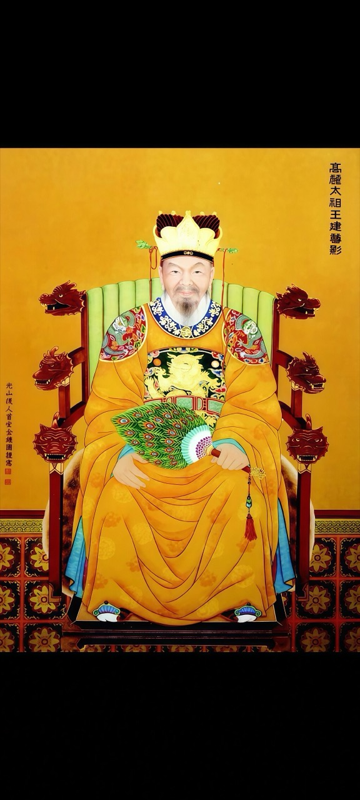
태조 사후의 왕위 다툼을 수습한 광종과 성종은 호족을 누르고 중앙집권 체제를 완성하였다.
광종은 불법으로 노비가 된 자를 조사해 양인으로 되돌리는 노비안검법으로 호족의 경제·군사 기반을 약화시켰다. 이어 후주에서 귀화한 쌍기의 건의로 과거제를 시행하여 새로운 관료를 등용하고, 관리의 공복을 제정해 위계를 세웠다. 나아가 스스로 황제라 칭하고 광덕·준풍이라는 독자 연호를 사용하는 칭제건원으로 왕권을 과시하였다.
경종 때 관리에게 토지 수조권을 준 (시정) 전시과가 마련되었다. 성종은 유학자 최승로의 시무 28조를 받아들여 유교 정치를 국정의 이념으로 삼았다. 그는 전국 주요 지역에 12목을 두어 지방관을 파견하고, 최고 교육 기관인 국자감을 정비하였으며, 호족을 향리로 편제하고 의창·상평창을 두었다.
앞의 8.1 태조 왕건의 정책에서 시작한 변화는 이 절을 거친다. 다음 단원인 8.3 중앙·지방 통치 조직에서 그 흐름이 계속된다.
불교를 행하는 것은 수신의 근본이요, 유교를 행하는 것은 나라를 다스리는 근원입니다. 수신은 내생의 자산이며, 치국은 오늘의 급무입니다. … 청컨대 외관(지방관)을 두소서.
최승로, 『고려사』 열전고려는 당·송의 제도를 받아들이되 이를 독자적으로 운영하여 2성 6부를 근간으로 하는 통치 조직을 갖추었다.
최고 관부인 중서문하성은 국정을 총괄하였고 그 장관인 문하시중이 수상이었으며, 상서성 아래 6부가 실무를 맡았다. 중추원은 군사 기밀과 왕명 출납을 담당하였다. 특히 중서문하성의 재신과 중추원의 추밀이 함께 모이는 도병마사(국방)와 식목도감(법제)은 재추 합좌 기구로, 고려 귀족 정치의 특징을 잘 보여 준다. 회계를 맡은 삼사, 감찰을 맡은 어사대도 두었다. 어사대 관원과 중서문하성 낭사는 대간을 이루어 서경·간쟁·봉박의 권한으로 왕권을 견제하였다.
지방은 일반 행정 구역인 5도에 안찰사를 보내고, 국경 지대인 양계(북계·동계)에는 병마사를 두었으며, 수도 주변의 경기가 있었다. 실제 행정은 지방관이 파견되지 않은 속현이 많아 향리가 담당하였다. 한편 향·부곡·소는 세금과 역이 무거운 특수 행정 구역으로, 그 주민은 차별을 받았다.
앞의 8.2 광종과 성종의 체제 정비에서 시작한 변화는 이 절을 거친다. 다음 단원인 8.4 관리 등용과 교육에서 그 흐름이 계속된다.
고려의 관리는 능력을 시험하는 과거와 가문을 배경으로 하는 음서를 통해 선발되었다.
과거는 광종 때 시작되어, 문학적 재능을 보는 제술과, 유교 경전을 보는 명경과, 기술관을 뽑는 잡과, 승려를 대상으로 한 승과로 나뉘었다. 이 가운데 제술과를 가장 중시하였고, 무과는 거의 시행되지 않았다. 한편 음서는 5품 이상 관리의 자손이 시험 없이 관직에 나아가는 제도로, 문벌 귀족의 지위를 세습하는 통로가 되었다.
교육 기관으로는 개경의 국자감과 지방의 향교가 관학을 이루었다. 그러나 문종 때 최충이 세운 문헌공도(9재 학당)를 비롯한 사학 12도가 융성하면서 관학이 위축되었다. 이에 예종은 국자감에 전문 강좌인 7재와 장학 재단인 양현고를 두고, 인종은 경사 6학을 정비하는 등 관학 진흥책을 폈다.
앞의 8.3 중앙·지방 통치 조직에서 시작한 변화는 이 절을 거친다. 다음 단원인 9.1 문벌 사회와 이자겸의 난에서 그 흐름이 계속된다.
여러 대에 걸쳐 고위 관직을 독점한 문벌이 사회를 이끌었으나, 그 특권 다툼 속에서 균열이 드러났다.
문벌은 과거와 음서로 관직을 세습하고, 세습이 가능한 공음전으로 경제 기반을 다졌으며, 왕실 및 유력 가문과의 통혼으로 지위를 굳혔다. 대표적인 문벌인 경원(인주) 이씨는 여러 왕에게 딸을 시집보내 외척으로서 권력을 키웠다.
인종 때 이자겸은 자신의 두 딸을 왕비로 들여 최고 권력을 쥐었고, 무신 척준경과 손잡고 반란을 일으켰다(1126). "이씨가 왕이 된다"는 도참을 믿었던 그는 왕위를 넘보았으나, 인종이 척준경을 회유하여 이자겸을 제거하면서 난은 진압되었다. 이 사건은 문벌 사회의 모순을 드러내며 정치적 동요의 시작을 알렸다.
문벌 귀족 사회는 과거·음서·공음전·혼인으로 유지되었지만 내부 특권 다툼과 무신 차별로 흔들렸다. 이자겸의 난, 묘청의 서경 천도 운동, 무신 정변은 원인과 지향이 서로 다르다. 무신 집권기의 권력 기구와 농민·천민 봉기는 지배 질서의 변화를 함께 보여 준다. 앞의 8.4 관리 등용과 교육에서 시작한 변화는 이 절을 거친다. 다음 단원인 9.2 묘청의 서경 천도 운동에서 그 흐름이 계속된다.
이자겸의 난으로 실추된 왕권을 회복하려는 인종은 개경 문벌을 견제할 새 세력을 찾았고, 여기서 서경 천도 운동이 일어났다.
승려 묘청과 정지상을 중심으로 한 서경파는 풍수지리설을 내세워 서경으로 도읍을 옮기면 왕업이 흥한다고 주장하며, 칭제건원과 금국 정벌을 통한 자주 외교를 요구하였다. 이에 맞선 개경파는 김부식을 중심으로 사대와 유교 질서를 지키려 하였다. 인종은 서경에 대화궁을 세우는 등 한때 천도에 마음을 두었으나 결국 뜻을 접었다.
천도가 좌절되자 묘청은 1135년 서경에서 반란을 일으켜 국호를 대위, 연호를 천개라 하였으나, 김부식이 이끄는 관군에게 약 1년 만에 진압되었다. 훗날 신채호는 이 사건을 자주와 사대의 대결로 보아 "조선역사상 일천년래 제일대사건"이라 평하였다.
앞의 9.1 문벌 사회와 이자겸의 난에서 시작한 변화는 이 절을 거친다. 다음 단원인 9.3 무신 정변과 무신 정권에서 그 흐름이 계속된다.
문신 위주의 정치와 무신에 대한 차별이 쌓인 끝에, 1170년 무신들이 정변을 일으켜 권력을 장악하였다.
의종이 보현원에 행차한 틈을 타 정중부·이의방 등은 문신을 제거하고 정권을 잡았다(무신정변). 초기에는 무신들의 회의 기구인 중방이 권력의 중심이었고, 이의방·정중부·경대승·이의민으로 집권자가 바뀌며 혼란이 이어졌다.
이 혼란을 수습한 최충헌은 봉사 10조로 개혁을 표방하고, 최고 권력 기구인 교정도감과 사병 집단 도방을 통해 권력을 다졌다. 그의 아들 최우는 인사 행정을 담당하는 정방과 문신들의 숙위 기구인 서방을 자기 집에 두었으며, 삼별초를 조직해 군사 기반으로 삼았다. 최씨 정권은 4대 60여 년간 이어졌고, 이규보 같은 문신을 등용해 통치에 활용하였다.
앞의 9.2 묘청의 서경 천도 운동에서 시작한 변화는 이 절을 거친다. 다음 단원인 9.4 하층민의 봉기에서 그 흐름이 계속된다.
무신 집권으로 통치 질서가 흔들리고 지배층의 수탈이 심해지자, 각지에서 하층민의 봉기가 잇따랐다.
천대받던 특수 행정 구역에서는 망이·망소이가 공주 명학소에서 봉기하여(1176) 소민에 대한 차별에 항거하였다. 농민 봉기로는 운문의 김사미와 초전의 효심이 연합해 경상도 일대를 휩쓸었다(1193). 옛 왕조의 부흥을 내건 움직임도 일어나 경주에서는 신라 부흥을 외치는 반란이 있었다.
가장 상징적인 사건은 1198년 최충헌의 사노비 만적이 개경에서 일으키려 한 봉기였다. 그는 노비들을 불러 모아 신분 해방을 부르짖으며 "왕후장상의 씨가 어찌 따로 있겠는가"라고 외쳤으나, 거사가 사전에 발각되어 실패하였다. 이러한 봉기들은 신분제의 동요를 뚜렷이 보여 준다.
앞의 9.3 무신 정변과 무신 정권에서 시작한 변화는 이 절을 거친다. 다음 단원인 10.1 거란과의 전쟁에서 그 흐름이 계속된다.
무신정변 이래 높은 벼슬이 천예에서도 많이 나왔다. 왕후장상이 어찌 씨가 따로 있으랴. 때가 오면 누구나 할 수 있는 것이다. 우리라고 어찌 뼈 빠지게 일하며 매질만 당하겠는가.
『고려사』 최충헌 열전10~11세기 동아시아의 강자로 떠오른 거란(요)은 세 차례 고려를 침입하였으나, 고려는 이를 모두 막아 냈다.
1차 침입(993) 때 서희는 거란 장수 소손녕과 외교 담판을 벌여 고려가 고구려를 계승하였음을 내세우고 송과 관계를 끊는 조건으로 물러가게 하였다. 이때 압록강 동쪽의 강동 6주를 확보하여 영토를 넓혔다. 2차 침입(1010)은 강조의 정변을 구실로 삼았는데, 개경이 함락되는 위기 속에서도 양규가 흥화진 등지에서 거란군을 크게 괴롭혔다.
3차 침입(1018) 때 소배압이 이끄는 거란군을 강감찬이 귀주에서 크게 무찔렀다(귀주대첩, 1019). 거듭된 전쟁 이후 고려는 국방을 강화하여 개경에 나성을 쌓고, 압록강 어귀에서 동해안 도련포에 이르는 천리장성을 축조하였다. 이로써 고려·송·거란 사이에 세력 균형이 이루어졌다.
고려의 대외 관계는 침입을 막는 데서 끝나지 않고 국경과 정치 구조를 바꾸었다. 거란과의 외교·전쟁, 윤관의 여진 정벌, 몽골 항쟁과 원 간섭기를 순서대로 놓고 결과를 비교한다. 공민왕의 반원 개혁과 신진 사대부의 분화는 조선 건국의 직접적 배경이 된다. 앞의 9.4 하층민의 봉기에서 시작한 변화는 이 절을 거친다. 다음 단원인 10.2 여진 정벌과 금에서 그 흐름이 계속된다.
우리나라는 곧 고구려의 옛 땅이다. 그러므로 나라 이름을 고려라 하고 평양에 도읍하였다. 만일 국경을 논한다면 그대 나라의 동경도 모두 우리 땅에 있거늘 어찌 침식이라 하는가.
서희, 『고려사』 열전12세기 들어 세력을 키운 여진이 고려의 국경을 위협하자, 고려는 정벌에 나섰다가 곧 새로운 외교 질서에 부딪혔다.
기병 중심의 여진에게 패한 뒤, 윤관은 숙종에게 건의하여 기병 부대인 신기군, 보병인 신보군, 승병인 항마군으로 이루어진 특수 부대 별무반을 조직하였다. 예종 때인 1107년 윤관은 여진을 정벌하고 동북 9성을 쌓았으나, 방어의 어려움과 여진의 간청으로 이듬해 이를 돌려주었다.
그 뒤 여진은 급속히 성장하여 금을 건국하고(1115) 거란(요)을 멸망시킨 뒤, 고려에 군신 관계를 요구하였다. 당시 최고 권력자였던 이자겸은 자신의 정권을 유지하기 위해 이를 수용하였다(1126). 이는 북진 정책의 좌절이자, 이후 서경 천도 운동에서 금국 정벌론이 제기되는 배경이 되었다.
앞의 10.1 거란과의 전쟁에서 시작한 변화는 이 절을 거친다. 다음 단원인 10.3 몽골과의 전쟁에서 그 흐름이 계속된다.
13세기 세계를 휩쓴 몽골이 고려를 침입하자, 최씨 정권은 강화도로 도읍을 옮기며 장기 항쟁에 들어갔다.
몽골 사신 저고여가 귀국길에 피살된 사건을 구실로 몽골은 1231년 고려를 침입하였다. 이듬해 최우는 수도를 강화도로 옮겨(1232) 항전을 이어 갔다. 2차 침입 때 처인성에서 승려 김윤후가 적장 살리타를 사살하였고, 뒤에 충주성 전투에서는 노비와 백성을 이끌고 몽골군을 물리쳤다. 전란 속에 대구 부인사의 초조대장경과 경주 황룡사 9층 목탑이 불타 없어졌으며, 고려는 부처의 힘으로 몽골을 물리치고자 팔만대장경(재조대장경)을 새로 조판하였다.
오랜 항쟁 끝에 무신 정권이 무너지고 고려가 몽골과 강화하자, 이에 반발한 삼별초는 배중손·김통정의 지도 아래 항쟁을 이어 갔다. 이들은 강화도에서 진도 용장성으로, 다시 제주 항파두리로 근거지를 옮기며 싸웠으나 여몽 연합군에게 진압되었다(1273).
앞의 10.2 여진 정벌과 금에서 시작한 변화는 이 절을 거친다. 다음 단원인 10.4 원 간섭기에서 그 흐름이 계속된다.
몽골(원)과 강화한 뒤 고려는 국가의 틀은 유지하였으나, 원의 부마국으로서 오랜 간섭을 받았다.
고려 왕은 원 공주와 혼인하는 부마가 되었고, 관제도 격하되어 2성은 첨의부로, 중추원은 밀직사로 통합·강등되었다. 왕의 시호에는 원에 충성한다는 뜻의 '충'자가 붙었다. 원은 일본 원정을 위해 설치한 정동행성을 이후 내정 간섭 기구로 삼았고, 그 부속 기구인 이문소가 위세를 부렸다. 또한 쌍성총관부(화주)·동녕부(서경)·탐라총관부(제주)를 두어 고려의 영토 일부를 직접 지배하였다.
원은 응방을 통해 매를 거두고, 결혼도감을 두어 공녀를 뽑아 갔으며 금·인삼 등 각종 공물을 요구하였다. 이 시기 원의 세력을 배경으로 성장한 권문세족이 새로운 지배층으로 등장하여 대농장을 소유하였다. 사회에는 변발·호복 같은 몽골풍이 유행하였고, 반대로 고려의 풍습이 원에 전해진 고려양도 나타났다.
앞의 10.3 몽골과의 전쟁에서 시작한 변화는 이 절을 거친다. 다음 단원인 10.5 공민왕의 개혁에서 그 흐름이 계속된다.
원·명 교체의 격동기를 맞아 즉위한 공민왕은 반원 자주와 왕권 강화를 두 축으로 개혁을 추진하였다.
대외적으로 그는 정동행성 이문소를 폐지하고 격하된 관제를 되돌렸으며, 원의 연호와 몽골풍을 금지하였다. 나아가 친원파의 우두머리인 기철 일파를 숙청하고, 유인우를 보내 쌍성총관부를 무력으로 수복하여(1356) 철령 이북의 땅을 되찾았다. 내정에서는 인사권을 장악한 정방을 폐지하여 왕권을 강화하였다.
권문세족의 경제 기반을 무너뜨리기 위해 공민왕은 승려 신돈을 등용하고 전민변정도감을 두어, 불법으로 빼앗은 토지를 본래 주인에게 돌려주고 억울하게 노비가 된 이들을 양민으로 되돌렸다. 또한 성균관을 순수 유학 교육 기관으로 개편하여 신진 사대부를 양성하였다. 그러나 신돈이 제거되고 공민왕마저 시해되면서(1374) 개혁은 끝내 좌절되었다.
앞의 10.4 원 간섭기에서 시작한 변화는 이 절을 거친다. 다음 단원인 10.6 고려 말의 혼란에서 그 흐름이 계속된다.
공민왕 개혁이 좌절된 뒤, 고려는 밖으로는 홍건적과 왜구의 침입에, 안으로는 지배층의 분열에 시달렸다.
북쪽에서는 홍건적이 두 차례 침입하여 한때 공민왕이 안동까지 피난하였고, 남쪽 해안에는 왜구가 창궐하였다. 이를 격퇴하는 과정에서 신흥 무장들이 성장하였다. 최영은 홍산에서, 이성계는 황산에서 왜구를 크게 무찔렀고, 최무선은 화통도감을 세워 화약을 만들고 진포에서 왜구의 배를 불살랐다. 박위는 왜구의 소굴인 쓰시마섬을 정벌하였다.
한편 개혁 방향을 두고 신진 사대부가 온건파(이색·정몽주)와 급진파(정도전·조준)로 분화하였다. 명이 철령 이북 땅을 요구하자 우왕과 최영은 요동 정벌을 추진하였으나, 이에 반대한 이성계가 위화도에서 회군하여(1388) 정권을 잡았다. 이어 급진파와 손잡고 과전법을 실시하여(1391) 새 왕조 개창의 기반을 마련하였다.
앞의 10.5 공민왕의 개혁에서 시작한 변화는 이 절을 거친다. 다음 단원인 11.1 토지 제도와 경제에서 그 흐름이 계속된다.
고려의 토지 제도는 관리에게 수조권을 나누어 주는 전시과를 근간으로 하였다.
전시과는 관품과 인품을 함께 고려한 경종의 시정 전시과(976)에서, 관직만을 기준으로 한 목종의 개정 전시과(998)를 거쳐, 현직 관리 중심으로 정비된 문종의 경정 전시과(1076)로 발전하였다. 수조권자에게는 곡물을 거두는 전지와 땔감을 얻는 시지가 주어졌다. 이 밖에 5품 이상에게 세습을 허용한 공음전, 하급 관리 자제를 위한 한인전, 군인에게 준 군인전, 향리의 외역전 등이 있었으며, 백성이 조상 대대로 소유·경작한 민전도 널리 분포하였다.
상업은 개경의 시전과 지방의 시장을 중심으로 이루어졌다. 예성강 하구의 벽란도는 국제 무역항으로 번성하여 송·거란·여진은 물론 아라비아 상인까지 드나들었고, 이때 고려의 이름이 '코리아'로 서방에 전해졌다. 화폐로는 건원중보(성종)에 이어 숙종 때 삼한통보·해동통보와 은병(활구)이 발행되었으나, 자급자족적 경제 탓에 화폐 유통은 부진하였다.
고려의 경제·사회·문화는 귀족 사회라는 성격과 불교 국가라는 특징을 함께 반영한다. 전시과의 수조권, 여성의 비교적 높은 지위, 의천과 지눌의 불교 통합 운동, 역사서와 인쇄술을 정치 시기와 연결한다. 문화유산은 제작 목적과 침입 상황까지 묻는 경우가 많다. 앞의 10.6 고려 말의 혼란에서 시작한 변화는 이 절을 거친다. 다음 단원인 11.2 신분 구조와 사회 시책에서 그 흐름이 계속된다.
고려 사회는 문벌 귀족을 정점으로 귀족·중류·양민·천민으로 나뉘었으나, 신분 이동의 여지도 있었다.
지배층인 귀족 아래에는 향리·서리·남반 등 중류층이 행정 실무를 맡았다. 인구의 대다수인 양민은 농민층인 백정이 중심이었고, 천민에는 재산으로 취급된 노비와 향·부곡·소의 주민이 속하였다. 한편 고려의 여성 지위는 비교적 높아서, 호적에 남녀를 태어난 순서대로 기재하고 자녀에게 재산을 고르게 상속하였으며, 여성이 호주가 되거나 사위·외손이 음서 혜택을 받기도 하였다. 여성의 재가에도 제약이 크지 않았다.
국가는 백성의 삶을 돌보는 사회 시책을 폈다. 빈민에게 곡식을 꾸어 주는 의창과 물가를 조절하는 상평창을 두었고, 환자를 치료하는 동서 대비원과 의약을 담당하는 혜민국을 운영하였다. 민간에서는 불교 신앙을 매개로 한 조직인 향도가 매향 활동과 마을 공동체의 구심 역할을 하였다.
앞의 11.1 토지 제도와 경제에서 시작한 변화는 이 절을 거친다. 다음 단원인 11.3 불교와 사상에서 그 흐름이 계속된다.
불교는 고려의 국교로서 사상과 문화를 이끌었고, 시대에 따라 교종과 선종의 통합이 거듭 시도되었다.
문벌 사회기에 의천(대각국사)은 교종을 중심으로 선종을 아우르는 천태종을 열고, 이론과 실천의 겸비를 강조하는 교관겸수를 내세웠다. 무신 집권기에는 지눌(보조국사)이 수선사 결사를 이끌며 선종을 중심으로 교종을 포용하는 조계종을 확립하였다. 그는 선정과 지혜를 함께 닦는 정혜쌍수와 단번에 깨친 뒤 꾸준히 수행하는 돈오점수를 주장하였다. 그의 제자 혜심은 유불 일치설을 펴 성리학 수용의 토대를 마련하였고, 요세는 백련결사를 일으켜 참회와 염불을 강조하였다.
불교 행사인 팔관회와 연등회는 국가적 규모로 성대하게 치러졌다. 또한 부처의 힘으로 국난을 이겨 내려는 염원에서 대규모 대장경이 조판되었다. 이 밖에 도교와 풍수지리설도 성행하여 서경 천도론이나 남경 길지설 같은 도참사상의 근거가 되었다.
앞의 11.2 신분 구조와 사회 시책에서 시작한 변화는 이 절을 거친다. 다음 단원인 11.4 유학과 역사서에서 그 흐름이 계속된다.
유학은 정치 이념으로 기능하였고, 시대 상황에 따라 다양한 성격의 역사서가 편찬되었다.
초기에는 자주적 기풍 속에서 「7대 실록」이 쓰였으나 전하지 않는다. 문벌 사회기인 인종 때 김부식은 삼국사기(1145)를 편찬하였다. 이는 기전체로 서술된 현존 최고(最古)의 역사서로, 유교적·합리적 사관에 서 있으며 신라 계승 의식이 두드러진다. 무신 집권기에는 자주 의식이 되살아나 이규보가 고구려 계승을 표방한 영웅 서사시 동명왕편을 짓고, 각훈이 삼국 시대 승려들의 전기인 해동고승전을 남겼다.
원 간섭기에는 민족적 자주 의식이 더욱 뚜렷해졌다. 승려 일연은 삼국유사를 지어 불교사와 설화를 담고 단군 신화를 처음으로 기록하였으며, 이승휴는 제왕운기에서 우리 역사를 단군에서부터 서술하며 중국과 대등하게 보았다. 한편 안향이 소개한 성리학이 신진 사대부 사이에 퍼지면서, 이제현은 성리학적 사관에 입각한 「사략」을 저술하였다.
앞의 11.3 불교와 사상에서 시작한 변화는 이 절을 거친다. 다음 단원인 11.5 인쇄술과 예술에서 그 흐름이 계속된다.
고려는 세계에 앞선 인쇄술과 빼어난 공예·미술로 독자적인 문화를 꽃피웠다.
목판 인쇄의 정수인 팔만대장경과 더불어, 고려는 금속활자 인쇄를 발전시켰다. 「상정고금예문」(1234)을 금속활자로 찍었다는 기록은 서양보다 앞선 것으로 전하나 실물은 남아 있지 않으며, 청주 흥덕사에서 간행한 직지심체요절(1377)은 현존하는 세계에서 가장 오래된 금속활자본으로 현재 프랑스 국립도서관에 있다. 공예에서는 고려청자가 대표적이어서, 순청자에서 나아가 무늬를 파고 다른 흙을 메워 넣는 상감 기법의 상감청자가 절정을 이루었다. 이 밖에 청동 표면에 은실을 넣는 은입사와 나전 칠기도 뛰어났다.
건축에서는 기둥 위에만 공포를 얹는 주심포 양식이 유행하여 부석사 무량수전과 수덕사 대웅전이 대표한다. 불상으로는 거대한 논산 관촉사 석조 미륵보살 입상이 지방 문화의 개성을 보여 준다. 회화에서는 섬세하고 화려한 불화가 그려져, 혜허의 수월관음도가 특히 이름 높다.
앞의 11.4 유학과 역사서에서 시작한 변화는 이 절을 거친다. 다음 단원인 12.1 조선의 건국과 국가 기틀에서 그 흐름이 계속된다.
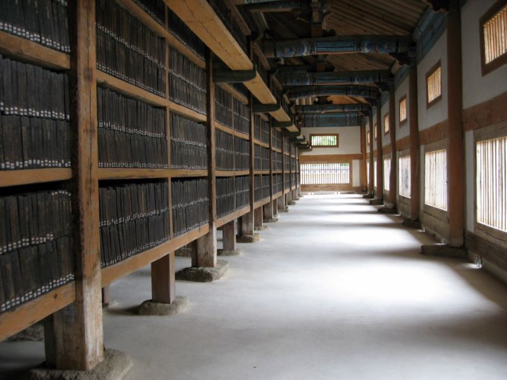
1392년 이성계와 신진 사대부는 고려를 무너뜨리고 조선을 세웠다. 새 왕조는 성리학을 국가 이념으로 삼아 재상과 국왕이 조화를 이루는 통치 체제를 다듬었고, 태종·세종·세조·성종을 거치며 6조와 3사, 8도 체제가 자리를 잡았다. 마침내 『경국대전』으로 통치 규범이 완성되어, 유교적 문치(文治) 국가의 틀이 세워졌다.
15세기 후반부터 향촌의 사림이 중앙에 진출하며 훈구와 부딪쳤고, 네 차례의 사화와 붕당의 형성으로 정치는 새 국면에 들어섰다. 16세기 말~17세기 전반, 왜란과 호란이라는 두 차례 큰 전쟁이 조선 사회를 뒤흔들며 전기와 후기를 가르는 분수령이 되었다.
이성계·신진 사대부가 새 왕조를 열고 한양으로 천도한다.
훈민정음 창제, 4군 6진 개척, 과학·문화가 절정에 이른다.
성종 대에 통치 규범이 집대성되어 유교적 문치의 틀이 완성된다.
사림이 성장하며 네 차례 사화를 겪고, 마침내 붕당이 형성된다.
일본의 침략에 맞서 수군·의병·명군이 싸워 나라를 지킨다.
청의 침입으로 삼전도에서 굴복하고 군신 관계를 맺는다.
위화도 회군으로 실권을 잡은 이성계는 급진파 신진 사대부와 손잡고 1392년 새 왕조를 열었다. 성리학을 이념으로 삼은 조선은 이후 재상과 국왕이 함께 만들어 갈 통치 체제의 방향을 두고 첫 실험을 시작했다.
건국의 설계자는 정도전이었다. 그는 『조선경국전』·『경제문감』을 지어 재상이 정치를 주도하는 재상 중심의 통치를 이상으로 삼았고, 『불씨잡변』을 써서 불교를 비판하고 성리학의 우위를 확립했다. 태조는 1394년 한양 천도를 단행해 경복궁과 종묘·사직을 세우고 새 도읍의 틀을 갖추었다.
왕자의 난으로 정도전을 제거하고 즉위한 태종은 왕권 강화에 힘썼다. 6조 직계제를 실시해 6조가 국왕에게 직접 보고하게 했고, 사병을 혁파해 군사권을 국왕에게 집중시켰다. 또한 호패법을 시행해 인구를 파악하고, 신문고를 설치했으며, 전국을 8도로 나누어 지방 통치의 기틀을 다졌다.
조선 전기의 국가 체제는 성리학적 통치 원리를 법과 제도로 구현한 결과다. 태조부터 성종까지 왕권과 재상권의 관계, 6조 운영 방식, 집현전·경연·3사의 기능을 왕별로 비교한다. 세종의 과학·문자·영토 정책과 경국대전의 완성 시점을 묶으면 초기 왕의 업적 혼동을 줄일 수 있다. 앞의 11.5 인쇄술과 예술에서 시작한 변화는 이 절을 거친다. 다음 단원인 12.2 세종의 문화 정치에서 그 흐름이 계속된다.
임금의 자질에는 어리석음도 있고 현명함도 있어 한결같지 않으니, 마땅히 재상은 임금의 좋은 점은 따르고 나쁜 점은 바로잡아, 옳은 데로 이끌어야 한다. 그러므로 정치를 통괄하는 자는 재상이다.
정도전, 『조선경국전』세종은 국왕과 신하의 조화를 추구하며 조선 전기 문화의 절정을 이끌었다. 학문 연구 기관을 키우고 백성을 위한 제도를 정비해, 정치·문화·과학이 함께 꽃핀 시대를 열었다.
세종은 집현전을 확대해 학문과 정책 연구의 중심으로 삼고, 태종의 6조 직계제를 의정부 서사제로 바꾸어 재상들의 합의를 존중했다. 1443년 백성을 위한 문자 훈민정음을 창제하고 1446년 반포했으며, 활자 갑인자를 만들어 인쇄술을 발전시켰다.
대외적으로는 북방의 여진을 몰아내고 최윤덕이 4군을, 김종서가 6진을 개척해 압록강·두만강을 국경으로 확정했으며, 남쪽 백성을 옮겨 채우는 사민정책을 폈다. 남으로는 이종무를 보내 대마도(쓰시마)를 정벌했다. 조세 제도로는 토지의 비옥도를 6등급으로 나눈 전분 6등법과 풍흉을 9등급으로 나눈 연분 9등법의 공법을 마련했다.
앞의 12.1 조선의 건국과 국가 기틀에서 시작한 변화는 이 절을 거친다. 다음 단원인 12.3 세조와 성종에서 그 흐름이 계속된다.
나라의 말이 중국과 달라 문자와 서로 통하지 아니하므로, 어리석은 백성이 이르고자 할 바가 있어도 마침내 제 뜻을 능히 펴지 못하는 사람이 많다. 내가 이를 딱하게 여겨 새로 스물여덟 글자를 만드니, 사람마다 쉽게 익혀 날마다 씀에 편안케 하고자 할 따름이다.
『훈민정음』 언해본 어제 서문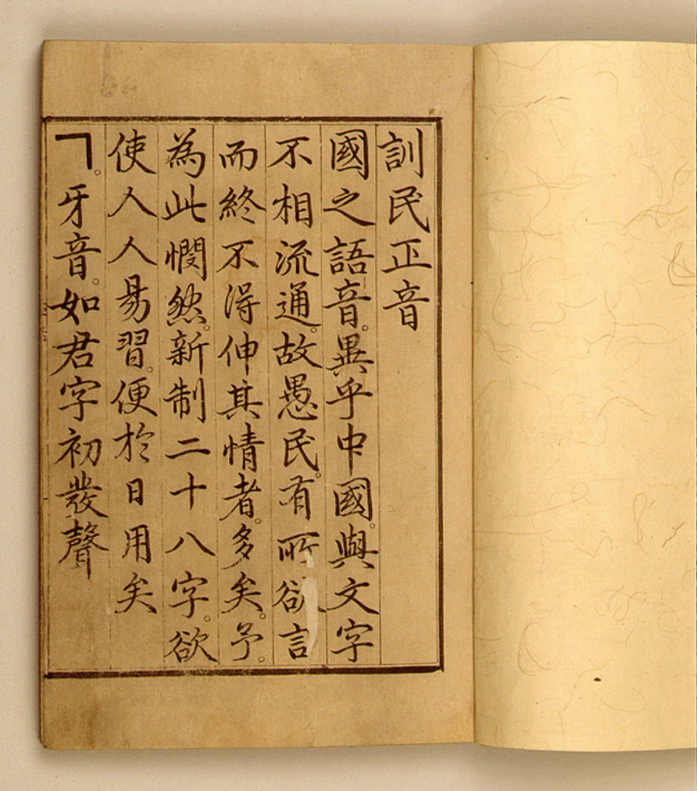
세종 이후 왕권과 신권의 균형이 흔들리는 가운데, 세조는 강력한 왕권으로, 성종은 유교적 제도의 완비로 각기 통치 체제를 다졌다. 두 왕을 거치며 조선의 국가 틀이 마무리되었다.
수양대군은 1453년 계유정난을 일으켜 김종서 등을 제거하고 권력을 잡은 뒤 세조로 즉위했다. 그는 왕권 강화를 위해 6조 직계제를 부활시키고, 신권의 기반이던 집현전과 경연을 폐지했다. 경제적으로는 현직 관리에게만 수조권을 주는 직전법을 실시했고, 함경도에서 일어난 이시애의 난을 진압했다. 또 통치 규범을 담을 『경국대전』의 편찬을 시작했다.
성종은 세조가 폐지한 기구를 되살려 균형을 회복했다. 집현전을 계승한 홍문관을 두고 경연을 부활시켜 학문 정치를 폈으며, 세조 대에 시작된 『경국대전』을 완성·반포해 통치의 기본 법전을 갖추었다. 토지 제도에서는 국가가 세금을 거두어 관리에게 나누어 주는 관수관급제를 실시해 수조권 지배를 약화시켰다.
앞의 12.2 세종의 문화 정치에서 시작한 변화는 이 절을 거친다. 다음 단원인 12.4 중앙·지방 행정에서 그 흐름이 계속된다.
조선은 국왕을 정점으로 의정부와 6조가 정책을 총괄하고, 언론 기구가 이를 견제하는 짜임새 있는 관제를 갖추었다. 지방은 모든 군현에 수령을 파견해 중앙 집권을 강화했다.
최고 기관인 의정부는 재상들의 합의로 정책을 심의하고, 그 아래 6조가 행정을 나누어 맡았다. 이를 견제하는 3사는 감찰을 맡은 사헌부, 간쟁을 맡은 사간원, 학문·자문의 홍문관으로, 사헌부·사간원의 관원을 대간이라 하여 관리 임명에 동의하는 서경과 간쟁·봉박의 권한을 행사했다. 왕명 출납의 승정원과 큰 죄를 다스리는 의금부는 왕권을 뒷받침한 국왕 직속 기구였다.
지방은 전국을 8도로 나누고 그 아래 부·목·군·현을 두어 모든 군현에 수령을 파견했다. 이로써 고려와 달리 속현이 사라졌고, 지방 행정 실무를 맡던 향리는 수령의 보좌역으로 격하되었다. 수령을 보좌·견제하는 유향소는 지방 사족의 자치 기구였고, 중앙에서는 경재소가 이를 통제했다. 수령은 농업 장려·교육·소송 등 수령 7사의 임무를 수행했다.
앞의 12.3 세조와 성종에서 시작한 변화는 이 절을 거친다. 다음 단원인 12.5 관리 등용과 교육에서 그 흐름이 계속된다.
조선은 능력에 따라 관리를 뽑는 과거를 중시하고, 이를 뒷받침할 교육 기관을 정비했다. 문치주의 이념 아래 학문과 관직이 하나로 이어지는 구조가 자리를 잡았다.
관리 등용의 중심은 과거였다. 문관을 뽑는 문과, 무관을 뽑는 무과, 기술관을 뽑는 잡과로 나뉘었으며, 원칙적으로 양인 이상이면 응시할 수 있었다. 고려에 견주어 음서의 범위는 크게 축소되어 고관의 자제라도 과거를 거쳐야 요직에 올랐고, 학식과 덕행이 뛰어난 이를 추천하는 천거도 병행되었다. 인사의 공정을 위해 가까운 친족이 같은 관청에 있지 못하게 하는 상피제와, 임명에 대간의 동의를 받는 서경 제도가 운영되었다.
교육 기관으로는 최고 학부인 성균관이 서울에 있었고, 지방의 부·목·군·현에는 관립 학교인 향교를 두어 교수·훈도를 파견해 유학을 가르쳤다. 16세기에는 사림이 세운 사립 교육 기관인 서원이 등장했는데, 1543년 주세붕이 세운 백운동 서원이 그 시작이었다.
앞의 12.4 중앙·지방 행정에서 시작한 변화는 이 절을 거친다. 다음 단원인 13.1 훈구와 사림에서 그 흐름이 계속된다.
15세기 후반, 세조의 집권을 도우며 권력과 부를 쥔 훈구와, 향촌에서 성리학을 갈고닦으며 새로 중앙에 진출한 사림이 마주 섰다. 두 세력의 대립은 이후 사화와 붕당으로 이어지는 정치 변동의 출발점이었다.
훈구는 조선 건국과 여러 정변에서 공을 세운 공신 세력으로, 넓은 토지를 소유한 대지주이자 중앙 정치를 장악한 집권층이었다. 이들은 실용적·사장적(詞章的) 학풍을 지녔고, 관학과 유착해 특권을 누렸다.
반면 사림은 고려 말 온건파 사대부의 학맥을 잇는 이들로, 김종직을 필두로 한 영남 지방의 성리학자들이 중심이었다. 이들은 향촌에서 중소 지주로 지내며 성리학의 명분과 의리를 중시했다. 성종은 훈구를 견제하기 위해 사림을 3사의 언관직에 대거 등용했고, 이로써 사림은 훈구의 비리를 비판하는 언론 활동을 펼치며 중앙 정계에 자리 잡기 시작했다.
사림은 향촌의 서원·향약을 기반으로 성장해 중앙의 훈구 세력과 충돌했다. 네 차례 사화는 원인 인물과 왕대를 구분하고, 동인·서인의 분화는 이조 전랑 문제와 학문적 계보를 함께 본다. 붕당은 처음부터 단순한 권력 다툼이 아니라 공론과 학연을 바탕으로 형성되었다. 앞의 12.5 관리 등용과 교육에서 시작한 변화는 이 절을 거친다. 다음 단원인 13.2 4대 사화에서 그 흐름이 계속된다.
15세기 말부터 16세기 중엽까지, 사림은 네 차례의 사화(士禍)로 큰 피해를 입었다. 훈구와의 대립, 국왕의 정치 상황, 외척의 다툼이 얽히며 화를 불렀지만, 사림은 향촌을 기반으로 끝내 정계를 주도하게 되었다.
연산군 때 일어난 무오사화(1498)는 김종직의 「조의제문」을 사관 김일손이 사초에 실은 것이 빌미가 되어 사림이 화를 입은 사건이다. 이어 갑자사화(1504)는 연산군의 생모 폐비 윤씨 사건이 발단이 되어 훈구·사림이 함께 큰 피해를 보았다.
중종 때 기묘사화(1519)는 급진 개혁을 편 조광조가 화를 입은 사건이다. 그는 현량과로 사림을 등용하고, 공신의 거짓 공훈을 삭제하는 위훈 삭제와 소격서 폐지를 추진했는데, 훈구의 반발과 주초위왕(走肖爲王) 모함으로 제거되었다. 마지막으로 명종 때 을사사화(1545)는 외척인 대윤(윤임)과 소윤(윤원형)의 권력 다툼으로 일어나 사림이 다시 화를 입었다.
앞의 13.1 훈구와 사림에서 시작한 변화는 이 절을 거친다. 다음 단원인 13.3 서원과 향약에서 그 흐름이 계속된다.
지금 공신을 정한 것이 너무 지나칩니다. 신하로서 공 없이 기록된 자가 많으니, 마땅히 그 거짓된 공훈을 삭제하여 인심을 바로잡고 국시(國是)를 정하여야 합니다.
『중종실록』, 조광조의 위훈 삭제 상소사화로 중앙에서 밀려난 사림은 향촌으로 돌아가 서원과 향약을 기반으로 세력을 다졌다. 이 두 기구를 통해 사림은 향촌 사회의 지배권을 장악하고, 마침내 정계 주도권을 되찾았다.
서원은 선현에 대한 제사와 후진 교육을 겸한 사립 기관이었다. 1543년 주세붕이 안향을 기려 세운 백운동 서원이 시초이며, 이후 이황의 건의로 국왕이 편액과 토지·서적을 내리는 사액 서원이 되어 소수 서원으로 이름을 바꾸었다. 서원은 사림의 학문적 기반이자 여론 형성의 근거지가 되었다.
향약은 향촌의 자치 규약으로, 중국 여씨향약을 본떠 이황(예안 향약)과 이이(해주 향약)가 우리 실정에 맞게 보급했다. 덕업상권·과실상규·예속상교·환난상휼의 4대 덕목을 바탕으로 미풍양속을 권장하고 규율을 세웠다. 사림은 향약의 지도자인 약정 등을 맡아 농민을 교화하고 통제함으로써 향촌 지배를 강화했다.
앞의 13.2 4대 사화에서 시작한 변화는 이 절을 거친다. 다음 단원인 13.4 붕당의 형성에서 그 흐름이 계속된다.
선조 대에 정계를 장악한 사림은 학문과 정치의 견해 차이로 갈라져 붕당을 이루었다. 이는 학맥과 정치적 입장을 함께하는 무리들의 결집으로, 이후 조선 정치의 기본 틀이 되었다.
분열의 직접 계기는 이조 전랑 자리를 둘러싼 대립이었다. 이조 전랑은 3사 관리의 추천권과 후임자 지명권을 쥔 요직이었는데, 이 자리를 놓고 신진 사림 김효원과 외척 계열 심의겸이 맞섰다. 1575년 김효원 지지 세력은 서울 동쪽에 산다 하여 동인, 심의겸 지지 세력은 서쪽에 산다 하여 서인으로 갈렸다.
두 붕당은 학맥으로도 구분되었다. 동인은 이황과 조식의 학문을 이은 이들이 중심이었고, 서인은 이이와 성혼의 문인이 주축이었다. 이후 정여립 모반 사건 등을 거치며 동인은 온건한 남인과 강경한 북인으로 다시 갈라져, 붕당의 분화가 계속되었다.
앞의 13.3 서원과 향약에서 시작한 변화는 이 절을 거친다. 다음 단원인 14.1 조선 전기의 경제에서 그 흐름이 계속된다.
조선은 농업을 근본으로 삼는 중농 정책 아래 토지 제도와 수취 체제를 정비했다. 관리에게 준 수조권은 점차 축소되었고, 조세는 국가 재정의 근간이 되었다.
토지 제도는 고려 말 과전법에서 출발했다. 이후 현직 관리에게만 수조권을 주는 직전법(세조), 국가가 조세를 거두어 지급하는 관수관급제(성종)로 바뀌었고, 16세기 중엽 직전법 자체가 폐지되어 관리는 오직 녹봉만 받게 되었다. 이로써 수조권에 바탕을 둔 토지 지배가 사실상 사라졌다.
수취 체제는 전세·공납·역의 셋으로 이루어졌다. 전세는 세종의 공법으로 정비되었으나, 특산물을 바치는 공납은 대신 납부해 주고 이득을 챙기는 방납의 폐단이 심했다. 역은 군역과 요역으로 나뉘었다. 거둔 세곡은 조운으로 서울에 운반했다. 상업은 국가의 통제를 받아, 서울의 시전이 특정 물품 독점권인 금난전권을 지녔고, 지방에는 장시가 열렸으나 화폐 유통은 부진했다.
조선 전기 경제와 사회는 토지·수취 제도, 양반 중심 신분 질서, 국가 주도의 문화 사업으로 정리된다. 과전법의 변화와 농업서, 상업 통제, 교육·가족 제도를 함께 보고, 훈민정음·역사서·지도·과학 기구는 편찬 목적과 담당 기관을 연결해 판별한다. 앞의 13.4 붕당의 형성에서 시작한 변화는 이 절을 거친다. 다음 단원인 14.2 신분 질서와 사회에서 그 흐름이 계속된다.
조선은 법제적으로 양인과 천인을 나누는 양천제를 원칙으로 삼았으나, 실제로는 양반·중인·상민·천민의 반상제로 운영되었다. 유교적 신분 질서 아래 사회는 촘촘히 조직되었다.
법적으로는 자유민인 양인과 비자유민인 천인으로 나뉘었지만, 현실에서는 지배층인 양반, 기술관·서리 등의 중인, 농민·수공업자·상인인 상민, 노비를 비롯한 천민으로 세분되었다. 천민의 대다수인 노비는 재산으로 취급되어 매매·상속되었으며, 부모 중 한쪽이 노비이면 자식도 노비가 되는 일천즉천의 원칙이 적용되었다.
양반 사회는 부계 중심의 종법 질서가 자리 잡아 족보를 만들어 가문의 결속을 다졌다. 향촌을 통제하기 위해 다섯 집을 한 통으로 묶어 서로 감시·연대 책임을 지운 오가작통법이 시행되었고, 흉년에 대비해 곡식을 빌려주는 환곡과 민간이 운영하는 사창 제도가 사회 안정을 뒷받침했다.
앞의 14.1 조선 전기의 경제에서 시작한 변화는 이 절을 거친다. 다음 단원인 14.3 민족 문화의 발달에서 그 흐름이 계속된다.
조선 전기에는 국가 주도로 역사·지리·의례 서적이 활발히 편찬되었다. 훈민정음 창제와 함께, 우리 실정에 맞는 민족 문화가 두루 발달했다.
역사서로는 국왕 사후에 사초와 각종 기록을 사관이 춘추관에서 편찬한 『조선왕조실록』이 대표적이다. 고려의 역사를 정리한 『고려사』, 서거정 등이 고조선부터 고려까지를 편년체로 서술한 『동국통감』이 편찬되었다. 국가 의례를 정비한 『국조오례의』도 성종 대에 완성되었다.
지리서와 지도의 편찬도 활발했다. 태종 대에는 현존 동양 최고(最古)의 세계 지도인 혼일강리역대국도지도가 제작되었고, 전국을 그린 팔도도, 각 지방의 연혁·인물·풍속을 담은 『동국여지승람』이 편찬되었다. 한편 훈민정음으로는 조선 왕조 창업을 노래한 『용비어천가』가 지어져, 새 문자의 실용성을 널리 보였다.
앞의 14.2 신분 질서와 사회에서 시작한 변화는 이 절을 거친다. 다음 단원인 14.4 과학 기술과 예술에서 그 흐름이 계속된다.
부국강병과 민생 안정을 위해 조선은 과학 기술을 크게 장려했다. 특히 세종 대에 천문·역법·의학·인쇄 분야에서 뛰어난 성과가 잇달았고, 예술에서도 격조 있는 작품이 나왔다.
천문·과학에서는 강우량을 재는 측우기, 물시계인 자격루, 해시계인 앙부일구, 천체를 관측하는 혼천의와 간의가 제작되었다. 우리 실정에 맞게 한양을 기준으로 천체 운행을 계산한 역법 『칠정산』도 편찬되었다. 의학에서는 우리 약재로 병을 치료하는 『향약집성방』과 의학 백과사전인 『의방유취』가 나왔으며, 인쇄에서는 계미자·갑인자 등 금속 활자가 개량되었다.
예술에서는 소박한 분청사기가 유행하다가 점차 깨끗한 백자로 옮겨 갔다. 그림에서는 안평대군의 꿈을 그린 안견의 「몽유도원도」가 대표작으로 꼽히고, 선비 화가 강희안의 「고사관수도」도 이름이 높다.
앞의 14.3 민족 문화의 발달에서 시작한 변화는 이 절을 거친다. 다음 단원인 15.1 임진왜란에서 그 흐름이 계속된다.
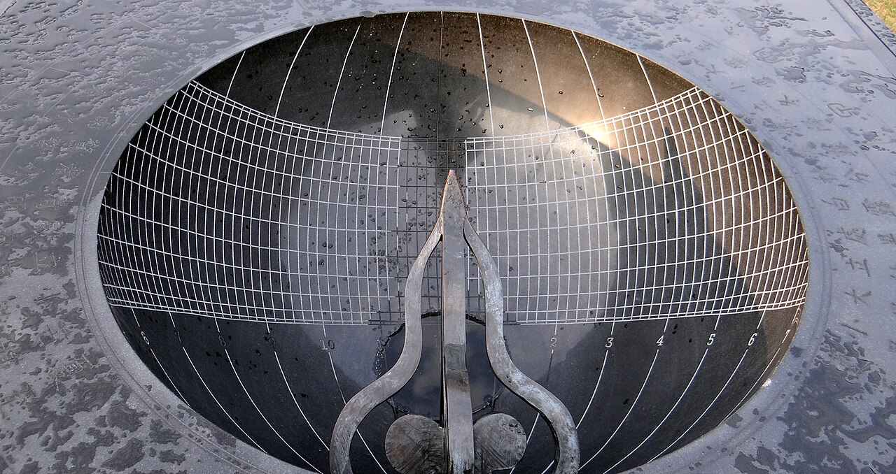
1592년, 전국을 통일한 일본의 도요토미 히데요시가 대군을 이끌고 조선을 침략하며 임진왜란이 일어났다. 초기의 패전을 딛고 수군·의병·명군이 힘을 합쳐 마침내 왜군을 물리쳤다.
전쟁 초기 조선은 부산진과 동래성(송상현 순절)이 함락되고, 신립이 충주 탄금대에서 패하면서 선조가 의주로 피란하고 한양·평양이 함락되는 위기를 맞았다. 그러나 바다에서는 이순신이 이끄는 수군이 옥포 해전을 시작으로 연전연승했고, 한산도 대첩에서 학익진으로 왜 수군을 크게 무찔러 남해의 제해권을 지켰다.
육지에서는 각지에서 의병이 일어나 곽재우(홍의장군)·조헌·고경명과 승병장 휴정(서산대사)·유정(사명대사)이 활약했다. 관군과 명군은 평양성을 수복했고, 김시민의 진주 대첩과 권율의 행주 대첩은 3대 대첩으로 꼽힌다. 강화 회담 결렬 뒤 1597년 정유재란이 일어났으나, 이순신이 명량 해전에서 대승하고 노량 해전에서 전사하며 전쟁이 끝났다.
임진왜란과 호란은 전투명만 나열하기보다 국제 관계와 전후 제도 변화를 함께 읽어야 한다. 수군·의병·명군의 역할, 광해군의 중립 외교, 인조반정 뒤 친명배금 정책이 정묘·병자호란으로 이어진 인과가 핵심이다. 전쟁 뒤 비변사와 군사 제도의 변화가 조선 후기의 출발점이 된다. 앞의 14.4 과학 기술과 예술에서 시작한 변화는 이 절을 거친다. 다음 단원인 15.2 왜란의 영향과 광해군에서 그 흐름이 계속된다.
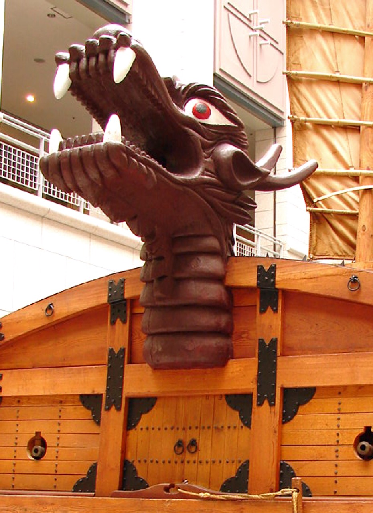
7년에 걸친 전쟁은 동아시아 삼국에 큰 변화를 남겼다. 전후 복구를 떠맡은 광해군은 실리적인 외교와 내정 개혁으로 위기를 수습하려 했다.
왜란으로 조선은 인구와 토지가 크게 줄고 국가 재정이 파탄에 이르렀다. 부족한 재정을 메우려 관직·신분을 파는 공명첩이 발행되어 신분제가 동요했고, 임시 군사 기구였던 비변사가 국정 전반을 총괄하는 최고 기구로 강화되었다. 한편 일본은 조선의 인쇄술·도자기 기술과 성리학을 약탈해 문화를 발전시켰고, 이후 조선 통신사 파견과 기유약조(1609)로 국교가 재개되었다.
광해군은 명과 후금 사이에서 어느 한쪽에 치우치지 않는 중립 외교를 펴 전쟁의 화를 피하려 했다. 안으로는 대동법을 경기도에 시험 실시하는 등 전후 복구에 힘썼고, 허준이 『동의보감』을 완성했으며, 전란으로 소실된 사고를 정비해 5대 사고 체제를 갖추어 실록을 보관했다.
앞의 15.1 임진왜란에서 시작한 변화는 이 절을 거친다. 다음 단원인 15.3 인조반정과 호란에서 그 흐름이 계속된다.
광해군의 중립 외교와 폐모살제를 명분으로, 서인은 인조반정을 일으켰다. 이후 조선은 친명배금 정책을 펴다 두 차례 호란을 겪으며 청에 굴복했다.
1623년 서인은 광해군을 몰아내고 인조를 세우는 인조반정을 단행하고 친명배금 정책을 내걸었다. 반정 직후 논공행상에 불만을 품은 이괄의 난이 일어나 한때 한양이 점령되기도 했다. 이후 후금이 침입한 정묘호란(1627)에서는 정봉수·이립 등이 의병으로 맞섰고, 후금과 형제 관계를 맺는 것으로 강화했다.
국호를 청으로 바꾼 뒤 군신 관계를 요구하자 조선이 거부하면서 병자호란(1636)이 일어났다. 인조는 남한산성에서 항전했으나 끝내 삼전도에서 항복하고 청과 군신 관계를 맺었으며, 소현세자와 봉림대군이 볼모로 끌려갔다. 훗날 봉림대군이 효종으로 즉위해 송시열·이완과 함께 북벌론을 추진했고, 청의 요청으로 나선 정벌에 나서기도 했다. 한편으로는 청의 발전된 문물을 배우자는 북학론도 싹텄다.
앞의 15.2 왜란의 영향과 광해군에서 시작한 변화는 이 절을 거친다. 다음 단원인 16.1 통치 체제의 변화에서 그 흐름이 계속된다.
임진왜란과 병자호란의 두 전란은 조선 사회의 뿌리를 뒤흔들었다. 국가 재정은 파탄에 이르렀고 토지와 인구 대장은 흐트러졌으며, 전쟁을 계기로 비변사가 최고 기구로 떠오르고 5군영 체제가 갖추어졌다. 지배층은 성리학적 명분과 붕당 정치로 위기에 대응했으나, 예송과 환국을 거치며 붕당은 상호 견제의 균형을 잃고 일당 전제의 길로 치달았다.
18세기 영조와 정조는 탕평으로 왕권을 회복하고 민생을 다독였으나, 이들이 세상을 떠난 뒤에는 몇몇 외척 가문이 권력을 독점한 세도 정치가 이어졌다. 그 사이 아래로부터는 큰 변화가 일어났다. 이앙법의 확산과 대동법·상품 화폐 경제의 발달로 부농과 사상(私商)이 성장하고 신분제가 흔들렸으며, 실학과 서민 문화가 꽃피고 천주교와 동학이 새 세상을 향한 열망을 담았다. 낡은 질서와 새 기운이 부딪치는 격동의 시기였다.
비변사가 최고 기구로 부상하고 5군영·속오군 체제가 갖추어진다.
두 차례 예송과 세 차례 환국을 거치며 붕당이 일당 전제화한다.
탕평책으로 왕권을 강화하고 균역법·규장각·장용영으로 개혁을 편다.
외척이 권력을 독점하고 삼정 문란으로 농민 봉기가 잇따른다.
영정법·대동법·균역법과 이앙법·상품 화폐 경제가 사회를 바꾼다.
실학과 국학이 발달하고 판소리·풍속화 등 서민 문화가 융성한다.
양난은 조선의 정치·군사 제도를 근본에서 바꾸었다. 임시 회의 기구였던 비변사가 국정을 총괄하는 최고 기구로 자리 잡았다.
비변사는 본래 중종 때 삼포왜란을 계기로 여진과 왜의 침입에 대비하려고 설치한 임시 회의 기구였고, 명종 때 을묘왜변을 겪으며 상설 기구가 되었다. 임진왜란을 거치면서 그 기능이 크게 확대되어, 3정승을 비롯한 고위 관원이 모여 군사뿐 아니라 외교·재정·인사 등 국정 전반을 논의하는 최고 기구로 성장하였다. 그 결과 의정부와 6조 중심의 행정 체계는 유명무실해졌고, 왕권 또한 상대적으로 약화되었다. 뒷날 흥선대원군은 비변사를 축소·폐지하고 의정부와 삼군부의 기능을 부활시켜 이를 바로잡으려 하였다.
군사 제도도 크게 개편되었다. 중앙군은 5군영 체제로 정비되었는데, 임진왜란 중 유성룡의 건의로 설치된 훈련도감이 그 시작이었다. 훈련도감은 포수·사수·살수의 삼수병으로 편성되고 급료를 받는 직업 군인으로 이루어져, 이전의 의무병 중심 군제와 성격이 달랐다. 이후 후금과의 대립 속에 어영청·총융청·수어청이 설치되고, 숙종 때 금위영이 더해져 5군영이 완성되었다.
지방군은 진관 체제를 보완한 속오군으로 재편되었다. 속오군은 양반부터 노비까지 아우르는 양천 혼성 부대로, 평상시에는 생업에 종사하다가 유사시에 동원되는 예비군의 성격을 띠었다. 그러나 시간이 지나며 양반이 군역에서 빠져나가 결국 상민과 천민만 남게 되어 실질적인 방위력이 약화되었다.
조선 후기 정치는 비변사 중심 체제와 붕당 정치의 변질, 탕평 정치, 세도 정치로 이어진다. 예송은 왕통 인식, 환국은 왕의 정국 주도 방식과 관련되며 영조와 정조의 탕평 방식도 다르다. 개혁 제도는 시행 목적과 담당 기구, 편찬 사업을 왕별로 구분한다. 앞의 15.3 인조반정과 호란에서 시작한 변화는 이 절을 거친다. 다음 단원인 16.2 붕당 정치의 전개와 변질에서 그 흐름이 계속된다.
선조 때 사림이 동인과 서인으로 나뉜 이래, 붕당은 학문과 정치적 견해를 함께하는 세력으로 상호 비판하며 공존하였다. 그러나 현종·숙종 대를 거치며 그 균형이 무너졌다.
현종 때 두 차례의 예송 논쟁이 일어났다. 효종과 효종 비가 잇따라 세상을 떠나자, 인조의 계비인 자의대비가 상복을 얼마 동안 입어야 하는지를 두고 서인과 남인이 맞섰다. 기해예송에서는 신권을 중시한 서인의 기년설(1년설)이 채택되었고, 갑인예송에서는 왕권을 중시한 남인의 주장이 받아들여졌다. 이는 단순한 예법 다툼이 아니라, 효종의 왕통과 왕권의 위상을 어떻게 볼 것인가를 둘러싼 정치적 대립이었다.
숙종 대에는 정국을 뒤엎는 환국이 거듭되었다. 왕이 특정 붕당에 힘을 실어 주었다가 거두어들이며 정권을 통째로 교체한 것이다. 경신환국으로 남인이 대거 축출되고 서인이 집권하였으며, 장희빈 소생의 원자 책봉 문제로 일어난 기사환국으로 남인이 다시 집권하고 서인의 송시열이 사사되었다. 이어 갑술환국으로 서인이 재집권하면서 남인은 정치적으로 몰락하였다.
환국은 붕당 간의 견제와 공존을 무너뜨리고 특정 붕당이 권력을 독점하는 일당 전제화를 불러왔다. 이 과정에서 서인은 남인 처벌 강도를 두고 강경한 노론과 온건한 소론으로 갈라졌다. 붕당 정치는 상대 세력을 인정하는 원리를 잃고 극단적인 대립으로 치달아, 뒤이은 탕평 정치의 배경이 되었다.
앞의 16.1 통치 체제의 변화에서 시작한 변화는 이 절을 거친다. 다음 단원인 16.3 영조의 탕평 정치에서 그 흐름이 계속된다.
붕당 간 극심한 대립이 왕권을 위협하는 지경에 이르자, 영조는 탕평책을 내세워 정국을 안정시키고 왕권을 강화하고자 하였다.
즉위 초 소론과 남인 일부가 일으킨 이인좌의 난을 겪은 영조는, 붕당의 폐해를 극복하는 것을 최우선 과제로 삼았다. 그는 온건하고 타협적인 인물을 고루 등용하는 완론 탕평을 폈고, 성균관 앞에 탕평비를 세워 붕당을 초월한 인재 등용의 뜻을 밝혔다. 나아가 붕당의 근거지가 된 서원을 대폭 정리하고, 붕당의 다툼이 집중되던 이조 전랑의 권한—후임자 천거권과 3사 관원 선발권—을 축소하여 대립의 뿌리를 제거하려 하였다.
민생 안정에도 힘을 기울였다. 백성의 군역 부담을 덜기 위해 군포를 2필에서 1필로 줄인 균역법을 시행하였고, 백성의 억울함을 풀어 주는 신문고를 부활시켰다. 또한 홍수 피해를 막기 위해 한양의 청계천을 준설하여 도성민의 생활을 돌보았다.
문물 정비에도 성과가 컸다. 경국대전 이후의 법령을 모아 속대전을 편찬하여 통치 규범을 다시 세웠고, 우리나라의 문물과 제도를 정리한 백과사전식 서적인 동국문헌비고를 간행하였다. 다만 영조의 탕평은 왕이 정국 주도권을 쥐고 강력한 왕권으로 붕당을 억누른 것이어서, 붕당 대립의 근본 원인을 완전히 해소하지는 못하였다.
앞의 16.2 붕당 정치의 전개와 변질에서 시작한 변화는 이 절을 거친다. 다음 단원인 16.4 정조의 개혁 정치에서 그 흐름이 계속된다.
사도세자의 아들로 즉위한 정조는 영조의 탕평을 이어받되, 옳고 그름을 분명히 가리는 준론 탕평으로 적극적인 개혁을 추진하였다.
정조는 왕권을 뒷받침할 인재와 학문의 기반을 마련하였다. 왕실 도서관이자 학술·정책 연구 기관인 규장각을 설치하고, 젊고 유능한 관리를 재교육하는 초계문신제를 시행하여 개혁을 이끌 친위 세력을 길렀다. 또한 국왕 직속 군영인 장용영을 두어 군사적 기반을 강화하였다. 이와 함께 서얼과 중인을 규장각 검서관 등으로 등용하여 신분의 벽을 낮추었는데, 박제가·유득공·이덕무 등이 그 대표적 인물이다.
정조는 아버지 사도세자의 묘인 현륭원을 수원으로 옮기고, 그 인근에 수원 화성을 건설하여 정치·군사·상업의 새 중심지로 삼고자 하였다. 화성 축조에는 정약용이 고안한 거중기가 활용되어 공사 기간과 비용을 크게 줄였다. 상업 분야에서는 육의전을 제외한 시전 상인의 금난전권을 폐지한 신해통공을 단행하여, 자유로운 상업 활동을 보장하고 사상(私商)의 성장을 뒷받침하였다.
제도 정비 면에서는 속대전 이후의 법령을 종합한 대전통편을 편찬하였다. 또한 지방 사족의 세력을 억누르고 수령의 권한을 강화하여 향촌에 대한 국가의 통제력을 높였다. 이러한 정조의 개혁은 왕권을 크게 신장시켰으나, 그의 갑작스러운 죽음과 함께 상당 부분 좌절되고 세도 정치의 시대로 이어졌다.
앞의 16.3 영조의 탕평 정치에서 시작한 변화는 이 절을 거친다. 다음 단원인 16.5 세도 정치에서 그 흐름이 계속된다.
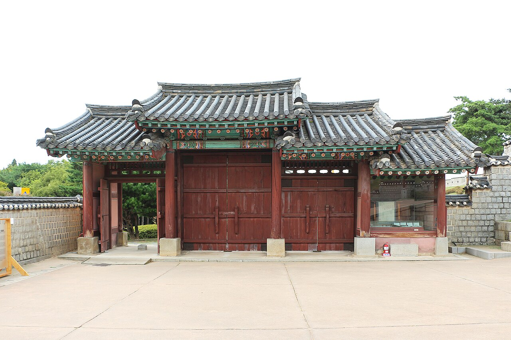
정조가 세상을 떠나고 어린 순조가 즉위하면서, 몇몇 외척 가문이 권력을 독점하는 세도 정치가 시작되었다.
순조·헌종·철종의 3대 60여 년 동안 안동 김씨와 풍양 조씨 등 왕실의 외척 가문이 비변사와 주요 관직을 장악하였다. 소수 가문이 권력을 독차지하자 정치 기강이 무너지고 매관매직이 성행하였으며, 왕권은 유명무실해졌다. 관직을 돈으로 산 관리들은 그 대가를 백성에게서 거두어들여, 부정과 수탈이 지방 곳곳으로 퍼졌다.
수탈은 국가 재정의 근간인 삼정의 문란으로 나타났다. 토지에 매기는 전정에서는 각종 부가세가 덧붙었고, 군포를 걷는 군정에서는 죽은 사람에게 물리는 백골징포와 어린아이에게 물리는 황구첨정이 횡행하였다. 특히 빈민 구제 제도였던 환곡이 고리대로 변질되어 백성을 가장 심하게 괴롭혔다. 삼정의 문란은 농민의 생존을 위협하며 저항을 불러왔다.
홍경래의 난(1811)은 평안도 지역에 대한 오랜 차별과 지배층의 수탈에 맞서 몰락 양반 홍경래를 중심으로 영세농·광부·상인 등이 합세하여 일어났다. 이어 임술 농민 봉기(1862)는 진주에서 시작되어 삼남을 비롯한 전국으로 번졌다. 정부는 삼정이정청을 설치하여 문제를 수습하려 하였으나 근본적인 개혁에는 이르지 못하였다.
앞의 16.4 정조의 개혁 정치에서 시작한 변화는 이 절을 거친다. 다음 단원인 17.1 수취 체제의 개편에서 그 흐름이 계속된다.
양난으로 백성의 삶이 무너지고 국가 재정이 파탄하자, 정부는 전세·공납·군역의 세 부담을 차례로 개편하였다.
먼저 전세에서는 인조 때 영정법을 시행하여, 풍흉에 관계없이 토지 1결당 미곡 4두로 전세를 고정하였다. 세율 자체는 낮아졌으나 각종 부가세가 오히려 늘어, 소작농에게 돌아가는 실질적 혜택은 크지 않았다.
가장 큰 변화는 공납의 개혁인 대동법이었다. 방납의 폐단으로 백성의 고통이 극심하자, 광해군 때 이원익의 건의로 경기도에서 처음 시행되었고, 이후 양반 지주의 반대로 확대가 더뎌 약 100년에 걸쳐 숙종 때 전국으로 퍼졌다. 대동법은 집집마다 부과하던 공물을 토지 결수를 기준으로 토지 1결당 미곡 12두(또는 베·동전)로 바꾼 것이다. 이로써 토지가 적은 농민의 부담이 크게 줄었다. 관청에 필요한 물품을 조달하는 공인이 등장하여 시장에서 물품을 대량으로 사들이면서 상품 화폐 경제가 발달하였고, 대동법의 관리와 세곡 운영을 위해 선혜청이 설치되었다.
군역에서는 영조 때 균역법이 시행되어, 농민이 지던 군포를 1년에 2필에서 1필로 줄였다. 이에 따른 재정 부족은 지주에게 토지 1결당 미곡 2두를 걷는 결작, 일부 부유한 양민에게 지운 선무군관포, 그리고 어염세·선박세 등으로 보충하였다.
조선 후기 사회 변화의 바탕에는 수취 제도의 개편과 생산력·상품 유통의 성장이 있었다. 영정법·대동법·균역법은 대상 세금과 보완 재원을 구분하고, 이앙법·광작·도고·사상의 성장은 신분제 동요와 연결한다. 천주교·동학은 등장 배경과 교리, 탄압 사건을 따로 정리한다. 앞의 16.5 세도 정치에서 시작한 변화는 이 절을 거친다. 다음 단원인 17.2 농업과 상공업의 발달에서 그 흐름이 계속된다.
“백성이 내는 것은 토지의 결수에 따르고, 관에서 쓰는 것은 방납의 값에 따르니, 이것이 이른바 대동법입니다. 토지가 없는 자는 내지 않고 토지가 많은 자는 많이 내니, 백성의 힘이 조금 펴질 것입니다.”
『만기요람』수취 체제의 변화와 맞물려 농업·상공업 전반에서 생산과 유통이 크게 늘었다. 그 출발점은 농업 기술의 변화였다.
모내기법인 이앙법이 전국으로 퍼지면서 김매기 노동력이 줄고 벼와 보리의 이모작이 가능해져 단위 면적당 생산량이 크게 늘었다. 절약된 노동력으로 한 농가가 넓은 땅을 경작하는 광작이 나타나 부농이 성장하였고, 시장에 내다 팔 목적으로 담배·인삼·목화 등 상품 작물을 재배하였다. 또한 흉년에 대비한 구황 작물로 고구마와 감자가 들어와 보급되었다. 그러나 광작으로 지주가 직접 경영을 확대하면서 토지에서 밀려난 임노동자도 늘어났다.
상업에서는 관허 상인의 틀을 벗어난 사상(私商)이 크게 성장하였다. 개성의 송상은 인삼을 재배·판매하고 전국에 송방이라는 지점을 두었으며, 의주의 만상은 청과, 동래의 내상은 일본과의 무역을 주도하였다. 한강을 무대로 활동한 경강상인은 세곡 운송과 미곡 유통으로 부를 쌓았다. 이들 가운데 일부는 물품을 매점매석하여 이윤을 독점하는 도고로 성장하였다. 지방에서는 장시가 전국으로 확산되어 보부상이 이를 연결하였고, 대동법으로 등장한 공인이 관수품 조달을 맡아 상업 발달을 이끌었다.
상공업 발달로 화폐 사용이 늘어, 숙종 때 주조된 상평통보가 전국적으로 유통되었다. 한편 지주와 대상인이 화폐를 재산 축적 수단으로 감추어 두면서 시중에 돈이 부족해지는 전황이 나타나기도 하였다. 광업에서는 정부가 세금을 받고 민간의 광산 채굴을 허용한 설점수세제가 시행되어, 전문 경영인인 덕대가 상인의 자본을 받아 광산을 운영하였다.
앞의 17.1 수취 체제의 개편에서 시작한 변화는 이 절을 거친다. 다음 단원인 17.3 신분제의 동요에서 그 흐름이 계속된다.
경제 변화는 조선 사회의 신분 질서를 뿌리부터 흔들었다. 엄격했던 양반 중심의 신분 구조가 아래로부터 무너지기 시작하였다.
부를 축적한 상민들은 여러 방법으로 양반 신분을 얻고자 하였다. 곡식이나 돈을 바치고 신분을 사는 납속, 부유한 상민에게 관직을 주는 형식적 임명장인 공명첩, 그리고 족보를 위조하거나 사들이는 방식으로 양반이 늘어났다. 그 결과 양반의 수는 크게 증가한 반면 상민과 노비는 줄어들어, 신분 구조가 위쪽이 넓어지는 방향으로 바뀌었다. 한편 같은 양반이라도 권력에서 밀려나 몰락한 잔반이 생겨나, 양반층 내부의 분화도 진행되었다.
노비 제도 역시 크게 흔들렸다. 어머니가 양인이면 자식도 양인이 되게 한 노비종모법이 시행되어 양인 인구가 늘었고, 도망·군공·납속 등으로 신분을 벗어나는 노비도 많았다. 마침내 순조 때인 1801년에는 중앙 관청에 소속된 공노비 약 6만 6천여 명을 해방하였다. 이는 국가가 노비제의 실효성이 떨어졌음을 인정한 조치였다.
중인층도 신분 상승을 꾀하였다. 서얼은 여러 차례 집단 상소를 올려 관직 진출의 제한을 풀어 달라고 요구하였고, 이러한 움직임에 자극받은 기술직 중인들도 통청 운동을 벌여 청요직 진출을 시도하였다. 향촌에서는 새로 성장한 부농층인 신향이 기존 사족인 구향에 맞서 향촌의 주도권을 다투는 향전이 곳곳에서 벌어졌다.
앞의 17.2 농업과 상공업의 발달에서 시작한 변화는 이 절을 거친다. 다음 단원인 17.4 새로운 사상과 종교에서 그 흐름이 계속된다.
사회가 흔들리고 백성의 삶이 고달파지자, 기존 질서를 넘어서는 새로운 사상과 종교가 사람들의 마음을 파고들었다.
먼저 하층민 사이에서는 예언 사상과 신앙이 널리 퍼졌다. 이씨 왕조의 멸망과 새 왕조의 등장을 예언한 정감록이 유행하였고, 미래에 미륵불이 나타나 백성을 구원한다는 미륵 신앙도 널리 퍼졌다. 이러한 예언 사상은 현실에 대한 불만과 새 세상에 대한 열망을 담고 있었다.
천주교는 처음에 청을 오가던 사신들에 의해 서학이라는 학문으로 소개되었다가, 점차 신앙으로 받아들여졌다. 신분을 넘어선 평등과 내세의 구원을 내세운 교리는 중인과 상민, 부녀자 사이로 퍼졌다. 그러나 제사를 거부하는 교리가 유교적 질서와 충돌하면서 정부는 이를 탄압하였다. 정조 때 신해박해, 순조 즉위 직후인 1801년의 신유박해, 헌종 때의 기해박해, 그리고 흥선대원군 집권기의 대규모 병인박해(1866)가 이어졌다. 신유박해 때 신자 황사영이 외국 군대의 개입을 청하는 백서를 보내려다 발각되어 탄압이 더욱 거세졌다.
서학에 맞서 우리 고유의 사상을 바탕으로 동학이 창시되었다. 1860년 경주의 몰락 양반 최제우가 유·불·선을 융합하고 민간 신앙을 받아들여 창시하였다. 동학은 사람이 곧 하늘이라는 인내천과 마음속에 한울님을 모신다는 시천주를 내세워 인간 평등을 강조하였다. 경전으로 한문체의 동경대전과 한글 가사체의 용담유사가 있다. 정부는 세상을 어지럽힌다는 이유로 최제우를 처형하였고, 이후 교도들은 억울함을 풀어 달라는 교조 신원 운동을 벌였다.
앞의 17.3 신분제의 동요에서 시작한 변화는 이 절을 거친다. 다음 단원인 18.1 성리학의 변화와 양명학에서 그 흐름이 계속된다.
“사람이 곧 하늘이니, 사람 섬기기를 하늘같이 하라. 내 마음이 곧 네 마음이니라(吾心卽汝心). 사람의 마음속에 한울님을 모시지 않은 이가 없다.”
『동경대전』양난 이후 성리학은 사회 변화에 대응하지 못하는 한계를 드러냈다. 이에 성리학을 절대화하려는 흐름과 그것을 비판·극복하려는 흐름이 함께 나타났다.
한편에서는 성리학을 절대화하는 경향이 강해졌다. 노론의 영수 송시열은 주자의 학설을 정통으로 삼아 이를 벗어나는 견해를 배격하였다. 이에 맞서 윤휴는 유교 경전을 주자와 달리 독자적으로 해석하였고, 박세당은 사변록에서 주자의 학설을 비판하였다. 그러나 이들은 주자와 다른 견해를 폈다는 이유로 사문난적(斯文亂賊), 곧 유교의 질서를 어지럽히는 자로 몰려 배척당하였다.
성리학 내부에서는 이론 논쟁도 활발하였다. 노론을 중심으로 호락논쟁이 벌어졌는데, 이는 사람과 사물의 본성이 같은가 다른가를 둘러싼 인물성 동이론이 핵심이었다. 충청도의 학자들(호론)은 사람과 사물의 본성이 다르다고 본 반면, 서울·경기의 학자들(낙론)은 본성이 같다고 보았다. 이 논쟁은 뒷날 화이관과 북학사상 등에 영향을 주었다.
성리학의 관념적 태도를 비판하며 실천을 강조한 양명학도 수용되었다. 양명학은 앎과 행함이 하나라는 지행합일을 강조하였다. 18세기 초 정제두가 이를 체계적으로 연구하고 강화도에서 후학을 길러 강화학파를 이루었다. 다만 양명학은 소론 계열의 일부 가문을 중심으로 이어져, 학문적 영향력은 제한적이었다.
조선 후기 사상과 문화는 성리학 내부의 변화와 현실 개혁 요구가 만난 결과다. 호락논쟁과 양명학, 중농학파와 북학파, 국학 연구를 인물·저서·개혁안으로 연결한다. 진경 산수화·풍속화·민화·판소리·한글 소설은 향유 계층의 확대라는 공통 흐름 안에서 구분한다. 앞의 17.4 새로운 사상과 종교에서 시작한 변화는 이 절을 거친다. 다음 단원인 18.2 실학의 발달에서 그 흐름이 계속된다.
현실 문제를 외면한 성리학을 비판하며, 실제 사회에 도움이 되는 학문을 추구한 실학이 발달하였다. 개혁의 방향에 따라 크게 두 흐름으로 나뉜다.
농업을 근본으로 삼아 토지 제도의 개혁을 통해 농민 생활의 안정을 꾀한 학파이다. 유형원은 반계수록에서 신분에 따라 토지를 차등 분배하자는 균전론을 주장하였다. 이익은 성호사설에서 한 가정의 생계에 필요한 최소한의 토지를 영업전으로 보장해 매매를 금하자는 한전론을 폈고, 나라를 좀먹는 여섯 가지 폐단인 6좀을 지적하였다. 실학을 집대성한 정약용은 마을 단위로 토지를 공동 소유·경작해 노동량에 따라 분배하자는 여전론을, 뒤에는 현실을 고려한 정전론을 제시하였다. 그는 목민심서·경세유표 등 방대한 저술을 남겼고 수원 화성 축조 때 거중기를 고안하였다.
상공업의 진흥과 기술 혁신을 통해 부국을 이루자고 주장하였으며, 청의 문물을 배우자고 하여 북학파라 불렸다. 유수원은 우서에서 사·농·공·상의 직업적 평등과 전문화를 주장하였다. 홍대용은 의산문답에서 지구가 돈다는 지전설을 펴 중국 중심의 세계관을 비판하였다. 박지원은 열하일기에서 청의 문물을 소개하고 양반전 등으로 양반의 무능을 풍자하였으며 수레와 선박의 이용을 강조하였다. 박제가는 북학의에서 소비를 우물에 비유하며, 절약보다 적절한 소비가 생산을 자극한다고 주장하였다.
실학은 민생 안정과 부국강병을 지향한 개혁론이자, 우리 사회를 실증적·주체적으로 바라본 새로운 학풍이었다. 그러나 대체로 정치에서 소외된 남인·소론 계열이 주도하여 국가 정책에 온전히 반영되지는 못하였다.
앞의 18.1 성리학의 변화와 양명학에서 시작한 변화는 이 절을 거친다. 다음 단원인 18.3 국학 연구에서 그 흐름이 계속된다.
“이제 농사짓는 사람은 토지를 갖게 하고, 농사짓지 않는 사람은 토지를 갖지 못하게 하려면 여전제를 실시해야 한다. … 산골짜기와 하천의 형세를 경계로 삼아 그 안을 여(閭)로 하고, 여에서 함께 농사지어 노동량에 따라 분배한다.”
정약용, 「전론」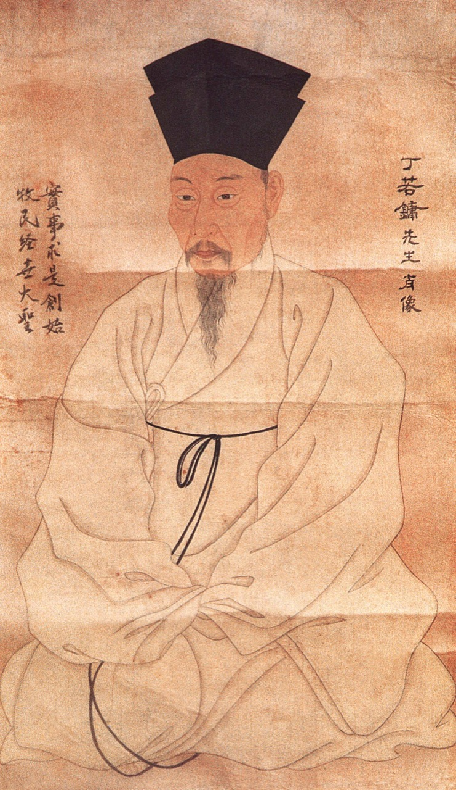
실학의 영향으로 우리의 역사·지리·언어를 실증적이고 주체적으로 연구하는 국학이 발달하였다. 중국 중심의 시각에서 벗어나 우리 것을 새롭게 바라보려는 움직임이었다.
역사학에서는 우리 역사를 체계적으로 정리하려는 저술이 이어졌다. 안정복은 동사강목에서 고조선부터 고려까지의 역사를 강목체로 정리하고 독자적 정통론을 세웠다. 유득공은 발해고에서 발해를 우리 역사로 분명히 하며 신라와 발해가 병존한 남북국이라는 인식을 처음으로 제시하였다. 이 밖에 이긍익은 조선의 정치사를 실증적으로 서술한 연려실기술을, 이종휘는 고구려사를 중심에 둔 동사를 지었다.
지리학에서도 성과가 두드러졌다. 이중환은 택리지에서 각 지역의 자연환경과 인심, 생활 조건을 서술하여 인문지리서의 새 지평을 열었다. 정상기는 일정한 거리를 축척으로 삼은 동국지도를 제작하였고, 김정호는 청구도에 이어 목판으로 인쇄해 대량 보급이 가능한 대동여지도를 완성하였다.
국어 연구도 활발하였다. 신경준은 훈민정음운해에서 한글의 원리를 분석하였고, 유희는 언문지에서 우리말 음운을 체계적으로 정리하였다. 한편 백과사전식 저술도 나와, 앞서 광해군 때 이수광이 지봉유설에서 우리 문화와 서양·천주교 등 폭넓은 지식을 정리하여 국학 연구의 밑거름이 되었다.
앞의 18.2 실학의 발달에서 시작한 변화는 이 절을 거친다. 다음 단원인 18.4 서민 문화에서 그 흐름이 계속된다.
상공업의 발달과 서당 교육의 확대로 서민의 경제력과 의식이 높아지면서, 양반 중심의 문화와 구별되는 서민 문화가 활짝 피어났다.
문학과 공연 예술에서 서민의 정서가 두드러졌다. 판소리는 소리꾼이 이야기를 노래로 풀어내어 서민의 큰 사랑을 받았고, 가면을 쓰고 벌이는 탈춤(산대놀이)은 양반과 사회 모순을 통렬하게 풍자하였다. 시조에서는 형식에 얽매이지 않고 감정을 자유롭게 표현한 사설시조가 유행하였다. 한글 소설도 널리 읽혔는데, 서얼 차별과 부패한 사회를 비판한 허균의 홍길동전, 신분을 뛰어넘은 사랑을 그린 춘향전이 대표적이다.
회화에서는 조선 고유의 화풍이 발전하였다. 우리 산천을 직접 보고 그린 진경산수화가 등장하여, 정선이 인왕제색도와 금강전도 같은 걸작을 남겼다. 당대 사람들의 생활상을 생생하게 담은 풍속화도 유행하여, 김홍도는 서민의 일상과 노동을, 신윤복은 양반과 여인의 풍류·애정을 해학적으로 그렸다. 이 밖에 서민의 소망과 미의식을 담아 이름 없는 화가들이 그린 민화도 널리 그려졌다.
서예와 공예에서도 새로운 경지가 열렸다. 김정희는 고금의 서체를 연구하여 독창적인 추사체를 이루었고, 제자에게 그려 준 세한도는 문인화의 정신을 담은 명작으로 꼽힌다. 도자기에서는 흰 바탕에 푸른 그림을 그린 청화백자가 유행하여 문방구와 생활용품으로 널리 쓰였다.
앞의 18.3 국학 연구에서 시작한 변화는 이 절을 거친다. 다음 단원인 19.1 흥선 대원군의 정책에서 그 흐름이 계속된다.
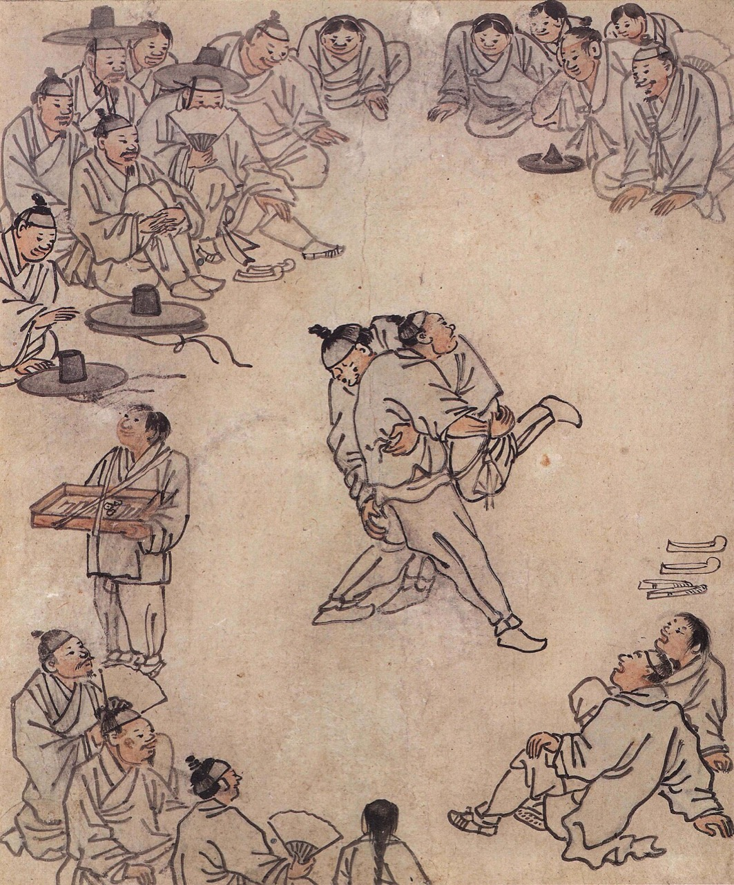
19세기 후반, 밖으로는 서양 열강과 일본이 문을 두드리고 안으로는 세도 정치의 폐단이 쌓여 조선은 안팎으로 위기에 몰렸다. 흥선 대원군이 왕권을 다시 세우고 통상 수교를 거부하며 버텼으나, 마침내 1876년 강화도 조약으로 나라의 문이 열렸다. 개항 이후 조선은 개화와 척사, 자주와 예속 사이에서 격렬하게 흔들렸다. 임오군란과 갑신정변, 동학 농민 운동이 잇따랐고, 갑오·을미개혁으로 근대적 제도가 도입되었다.
1897년 조선은 대한 제국을 선포하고 자주 독립과 근대화를 함께 꾀하였으나, 러·일 전쟁에서 이긴 일본은 을사늑약·정미7조약을 강요하며 국권을 차례로 빼앗았다. 이에 맞서 항일 의병과 애국 계몽 운동, 국채 보상 운동 같은 국권 수호 운동이 불타올랐다. 이 부는 개항에서 1910년 국권 피탈에 이르는, 저항과 근대화가 뒤엉킨 반세기를 따라간다.
왕권 강화와 민생 안정을 꾀하고 통상 수교를 거부, 양요를 겪으며 척화비를 세움.
운요호 사건을 빌미로 맺은 최초의 근대적·불평등 조약으로 나라의 문이 열림.
갑신정변의 좌절, 동학 농민 운동의 봉기, 그리고 갑오·을미개혁으로 이어진 격동.
고종이 황제로 즉위하고 광무개혁으로 자주 독립과 근대 국가 수립을 꾀함.
을사늑약에 맞선 의병 전쟁과 애국 계몽 운동, 국채 보상 운동이 전국에서 일어남.
정미7조약과 군대 해산을 거쳐 한·일 병합 조약으로 국권을 강탈당함.
어린 고종을 대신해 정권을 잡은 흥선 대원군은 세도 정치의 폐단을 뜯어고쳐 실추된 왕권을 다시 세우고자 안팎으로 강력한 개혁을 밀어붙였다.
대원군은 먼저 세도 정치를 타파하여 안동 김씨 등 특정 가문의 권력 독점을 끊었다. 세도 가문의 근거지였던 비변사를 축소·폐지하고, 유명무실했던 의정부와 삼군부를 부활시켜 행정과 군사를 나누어 맡겼다. 인재는 가문을 가리지 않고 고루 등용하였다. 법전으로는 『대전회통』과 『육전조례』를 편찬하여 통치 체제를 정비하였다.
왕실의 위엄을 세우기 위해 임진왜란 때 불탄 경복궁을 중건하였는데, 막대한 공사비를 마련하려 고액 화폐인 당백전을 발행하고 기부금 형식의 원납전을 강제로 거두었으며, 백성을 토목 공사에 동원하고 양반의 묘지림인 묘지림(벌목)까지 베어 원성을 샀다. 당백전 남발은 극심한 물가 폭등을 불러 경제를 혼란에 빠뜨렸다.
민생 안정을 위해 삼정의 문란도 손보았다. 군정에서는 양반에게도 군포를 물리는 호포제를 실시해 조세 부담의 형평을 꾀하였고, 환곡의 폐단을 없애려 마을이 자율로 곡식을 운영하는 사창제를 시행하였다. 또 붕당의 근거지이자 면세·면역의 특권을 누리던 서원을 47개소만 남기고 대거 철폐하여 국가 재정을 늘리고 민폐를 줄였다.
흥선 대원군의 정책은 왕권 강화와 민생 안정, 통상 수교 거부라는 두 축으로 정리한다. 서원 철폐·호포제·사창제와 경복궁 중건의 재원 문제를 함께 보고, 병인양요·신미양요의 원인과 전개·결과를 구분한다. 강화도 조약은 개항의 계기이자 불평등 조항의 출발점이다. 앞의 18.4 서민 문화에서 시작한 변화는 이 절을 거친다. 다음 단원인 19.2 통상 수교 거부와 양요에서 그 흐름이 계속된다.
서양 세력의 통상 요구가 거세지자 대원군은 이를 단호히 물리쳤고, 두 차례의 양요를 겪은 끝에 척화비를 세워 통상 수교 거부 의지를 못 박았다.
1866년 대원군은 프랑스 선교사와 천주교도 수천 명을 처형하는 병인박해를 일으켰다. 이를 구실로 프랑스 함대가 강화도를 침략한 것이 병인양요(1866)이다. 조선군은 정족산성에서 양헌수가, 문수산성에서 한성근이 프랑스군을 격퇴하였으나, 이때 프랑스군은 외규장각의 의궤 등 귀중한 도서와 문화재를 약탈해 갔다.
같은 해, 대동강을 거슬러 올라와 통상을 요구하며 행패를 부리던 미국 상선을 평양 관민이 불태운 제너럴 셔먼호 사건이 일어났다. 1868년에는 독일 상인 오페르트가 통상을 압박하려 대원군 아버지 남연군의 묘를 도굴하려다 실패한 사건이 벌어져, 서양에 대한 반감이 더욱 깊어졌다.
미국은 제너럴 셔먼호 사건을 빌미로 1871년 강화도를 침략하였으니 이것이 신미양요(1871)이다. 어재연이 이끄는 조선군은 광성보에서 결사 항전하였고, 이때 미군이 빼앗아 간 장수 깃발이 수자기(帥字旗)이다. 두 양요를 겪은 뒤 대원군은 전국에 척화비를 세워 서양과 화친하지 않겠다는 뜻을 온 나라에 밝혔다.
앞의 19.1 흥선 대원군의 정책에서 시작한 변화는 이 절을 거친다. 다음 단원인 19.3 강화도 조약과 개항에서 그 흐름이 계속된다.
“서양 오랑캐가 침범하는데 싸우지 않으면 화친하는 것이요, 화친을 주장하는 것은 나라를 파는 것이다(洋夷侵犯 非戰則和 主和賣國).”
척화비 비문 (1871)대원군이 물러나고 고종이 친정에 나서자 조선은 1876년 강화도 조약을 맺어 문을 열었으니, 이는 우리 역사상 최초의 근대적 조약이자 불평등 조약이었다.
일본은 1875년 군함 운요호를 강화도 앞바다에 보내 무력시위를 벌인 운요호 사건을 일으키고, 이를 구실로 개항을 강요하였다. 그 결과 맺어진 강화도 조약(조·일 수호 조규)에서 일본은 청의 간섭을 배제하려 “조선은 자주국”임을 명시하고, 부산·원산·인천 세 항구를 개항하도록 하였다.
강화도 조약에는 조선에 불리한 조항이 담겼다. 일본이 조선 연안을 마음대로 측량할 수 있게 한 해안 측량권과, 일본인 범죄를 일본 법으로 재판하는 치외법권(영사 재판권)이 대표적인 불평등 조항이다. 이어 부속 조약으로 일본 화폐 유통과 무관세·양곡 유출을 허용하는 조·일 수호 조규 부록과 통상 장정이 맺어져 경제 침투의 길이 열렸다.
개항 이후 미국과도 조약을 맺었다. 러시아·일본을 견제하려는 청의 알선으로 1882년 체결한 조·미 수호 통상 조약은 서양과 맺은 최초의 조약으로, 제3국이 개입하면 서로 돕는다는 거중조정 조항과 함께 최혜국 대우와 관세 규정을 처음으로 담았다. 다만 최혜국 대우 역시 불평등한 요소였다.
앞의 19.2 통상 수교 거부와 양요에서 시작한 변화는 이 절을 거친다. 다음 단원인 20.1 개화 정책의 추진에서 그 흐름이 계속된다.
개항 이후 조선 정부는 근대 문물을 받아들이기 위해 통리기무아문을 세우고 여러 나라에 사절단을 보내 개화 정책을 추진하였다.
정부는 개화 정책을 총괄할 기구로 통리기무아문을 설치하고, 그 아래 실무를 나누어 맡는 12사를 두었다. 군사 제도도 개편하여 신식 군대인 별기군을 창설하고 일본인 교관에게 훈련을 맡겼으며, 구식 군영을 무위영·장어영의 2영으로 통합하였다.
일본에는 수신사를 파견하였다. 1차 수신사 김기수에 이어, 1880년 2차 수신사로 간 김홍집은 청의 외교관 황준헌이 지은 『조선책략』을 들여왔다. 이 책은 러시아를 막기 위해 “친중국·결일본·연미국”을 주장하여, 미국과의 수교 여론을 일으키는 한편 위정척사파의 거센 반발을 불렀다.
청에는 영선사 김윤식을 보내 근대 무기 제조 기술을 배우게 하였고, 그 성과로 무기 제조 공장인 기기창이 설립되었다. 일본에는 국정 시찰을 위해 비밀리에 조사 시찰단(신사 유람단)을 파견하였고, 조·미 수호 통상 조약 체결 후에는 미국에 최초의 사절단인 보빙사를 보내 서양 문물을 직접 접하게 하였다.
개항 뒤 조선은 청·일·러의 경쟁 속에서 개화와 척사의 노선 갈등을 겪었다. 통리기무아문·별기군 같은 개화 정책, 영남 만인소와 위정척사, 임오군란과 갑신정변을 시간순으로 잇는다. 각 사건 뒤 체결된 조약과 청·일의 영향력 변화가 자주 출제된다. 앞의 19.3 강화도 조약과 개항에서 시작한 변화는 이 절을 거친다. 다음 단원인 20.2 위정척사 운동에서 그 흐름이 계속된다.
성리학적 질서를 지키고 서양·일본을 배척하려는 위정척사 운동은 개화의 물결에 맞서며, 시기마다 구체적 대상을 달리하며 전개되었다.
1860년대에는 서양의 통상 요구가 거세지자 이항로·기정진 등이 통상 반대 운동을 펼치며 척화주전론을 주장하였다. 이들은 서양과의 교역이 경제를 무너뜨리고 성리학적 질서를 위협한다고 보아, 대원군의 통상 수교 거부 정책을 뒷받침하였다.
1870년대 강화도 조약을 앞두고는 최익현이 개항 반대 운동에 나섰다. 그는 일본이 서양과 다를 바 없다는 왜양일체론을 내세우며, 도끼를 지고 궐 앞에서 상소하는 지부복궐 상소로 개항의 부당함을 격렬히 호소하였다.
1880년대에는 『조선책략』 유포에 반발하여 개화 반대 운동이 일어났다. 이만손을 중심으로 한 영남 유생들이 영남 만인소를 올려 미국과의 수교와 개화 정책을 강력히 비판하였다. 이후 1890년대에 이르면 위정척사 사상은 일본의 침략에 맞서 무장 투쟁에 나서는 항일 의병 운동으로 계승되어 국권 수호 운동의 밑바탕이 되었다.
앞의 20.1 개화 정책의 추진에서 시작한 변화는 이 절을 거친다. 다음 단원인 20.3 임오군란에서 그 흐름이 계속된다.
1882년, 신식 군대 별기군에 밀려 차별받던 구식 군인들이 봉기한 임오군란은, 결국 청의 내정 간섭을 불러들이는 계기가 되었다.
구식 군인들은 별기군에 비해 급료가 밀리고 차별받는 데 불만이 컸다. 밀린 급료로 받은 쌀에 겨와 모래가 섞여 있자 분노가 폭발하여, 군인들은 민씨 정권의 고관들을 습격하고 일본 공사관을 불태웠으며 별기군 교관을 살해하였다. 도시 하층민까지 가세하면서 봉기는 크게 확산되었다.
사태를 수습하기 위해 흥선 대원군이 다시 정권을 잡고 별기군과 통리기무아문을 폐지하는 등 개화 정책을 되돌렸다. 그러나 민씨 정권의 요청으로 청군이 개입하여 군란을 진압하고, 재집권한 대원군을 청으로 납치해 감으로써 3년간 유폐시켰다.
군란의 뒤처리로 여러 조약이 맺어졌다. 일본과는 배상금과 공사관 경비병 주둔을 인정한 제물포 조약을 체결하였고, 청과는 청 상인의 내지 통상을 허용한 조·청 상민 수륙 무역 장정을 맺어 청 상인의 특권을 인정하였다. 이후 청은 마젠창·묄렌도르프 등 고문을 파견하며 조선의 내정과 외교에 깊이 간섭하였다.
앞의 20.2 위정척사 운동에서 시작한 변화는 이 절을 거친다. 다음 단원인 20.4 갑신정변에서 그 흐름이 계속된다.
1884년 급진 개화파가 일으킨 갑신정변은 근대 국가를 세우려는 최초의 정치 개혁 시도였으나, ‘3일 천하’로 끝나고 말았다.
임오군란 이후 청의 간섭이 심해지자, 김옥균·박영효·홍영식·서광범 등 급진 개화파는 청과의 사대 관계를 끊고 일본의 힘을 빌려 개혁을 이루려 하였다. 이들은 우정총국 개국 축하연을 틈타 정변을 일으켜 정권을 장악하고 새 정부를 구성하였다.
이들이 발표한 14개조 정강에는 청에 대한 사대 폐지, 문벌 폐지와 인민 평등권 확립, 능력에 따른 관리 임용, 조세 제도를 개혁하는 지조법 개정, 재정의 호조 일원화 등이 담겼다. 이는 근대적 정치·사회 개혁을 지향한 것이었다.
그러나 청군이 개입하면서 정변은 3일 만에 무너졌고, 지원을 약속한 일본이 발을 빼면서 개화파는 일본으로 망명하였다. 뒤처리로 일본과는 한성 조약을, 청과 일본은 조선에서 군대를 함께 철수하고 파병 시 서로 알리기로 한 톈진 조약을 맺었다. 이후 조선을 둘러싼 국제 정세 속에 영국이 러시아를 견제하려 거문도를 불법 점령한 거문도 사건이 일어났고, 조선 중립화론이 부들러와 유길준에 의해 제기되었다.
앞의 20.3 임오군란에서 시작한 변화는 이 절을 거친다. 다음 단원인 21.1 동학 농민 운동에서 그 흐름이 계속된다.
1894년 반봉건·반외세의 기치를 든 동학 농민 운동은, 부패한 지배 체제와 외세의 침투에 맞선 아래로부터의 대규모 항쟁이었다.
발단은 고부 군수 조병갑의 학정이었다. 만석보를 쌓아 세금을 강제로 거두자 전봉준이 농민을 이끌고 고부 봉기를 일으켰다. 사태 수습을 맡은 안핵사가 봉기 참여자를 탄압하자, 농민들은 1차 봉기(반봉건)에 나서 백산에 모여 봉기하고 황토현·황룡촌 전투에서 관군을 격파한 뒤 전주성을 점령하였다.
다급해진 정부가 청에 원병을 청하자 청군이 들어오고, 톈진 조약을 구실로 일본군까지 들어왔다. 외국 군대의 개입을 막으려 농민군은 정부와 전주 화약을 맺고 해산하였다. 이후 농민군은 각 고을에 자치 개혁 기구인 집강소를 설치하고, 신분제 철폐·토지 균분 등을 담은 폐정 개혁 12조를 실천에 옮기려 하였다.
그러나 일본군이 경복궁을 점령하고 청·일 전쟁을 일으키며 내정을 간섭하자, 농민군은 외세를 몰아내려 2차 봉기(반외세)에 나섰다. 전봉준의 남접과 손병희의 북접이 논산에 집결(남·북접 연합)하여 서울로 북상하였으나, 우금치 전투에서 우세한 화력의 일본군·관군에게 크게 패하여 운동은 좌절되었다.
동학 농민 운동과 갑오·을미개혁은 1894년 청일 전쟁을 사이에 두고 맞물려 전개되었다. 농민군의 폐정 개혁 요구, 정부·일본의 개혁 내용, 을미사변과 단발령을 순서대로 놓아야 한다. 개혁안은 신분제·재정·행정·군사 영역으로 나누어 비교하면 혼동이 줄어든다. 앞의 20.4 갑신정변에서 시작한 변화는 이 절을 거친다. 다음 단원인 21.2 갑오·을미개혁에서 그 흐름이 계속된다.
청·일 전쟁을 전후하여 조선은 갑오·을미개혁이라는 근대적 제도 개혁을 단행하였으나, 그 과정에는 일본의 간섭이 짙게 드리워 있었다.
1차 갑오개혁은 초정부적 개혁 기구인 군국기무처를 중심으로 김홍집 내각이 추진하였다. 개국 기년을 사용해 청의 종주권을 부정하고, 왕실과 정부 사무를 분리하였다. 사회 면에서는 신분제(공사 노비제)를 폐지하고 과거제를 폐지하였으며, 조혼 금지와 과부의 재가 허용, 도량형 통일 등 봉건적 악습을 없앴다.
2차 갑오개혁에서는 군국기무처를 없애고 고종이 개혁의 방향을 담은 홍범 14조를 반포하였다. 중앙 관제를 의정부·8아문에서 내각·7부로 개편하고 지방을 8도에서 23부로 나누었으며, 재판소를 설치해 사법권을 분리하였다. 또 교육입국조서를 반포하여 근대 교육 제도의 기틀을 마련하였다.
청·일 전쟁에서 이긴 일본이 삼국 간섭으로 주춤한 사이 을미사변을 일으킨 뒤, 김홍집 내각은 을미개혁(제3차 개혁)을 단행하였다. ‘건양’ 연호를 제정하고 태양력을 채택하였으며, 단발령을 시행하고 종두법과 근대적 우편 제도를 도입하였다. 그러나 단발령은 유생과 백성의 거센 반발을 사 을미의병을 불러왔다.
앞의 21.1 동학 농민 운동에서 시작한 변화는 이 절을 거친다. 다음 단원인 21.3 을미사변과 아관 파천에서 그 흐름이 계속된다.
청·일 전쟁 이후 조선을 둘러싼 열강의 각축 속에, 을미사변과 아관 파천은 조선의 자주권이 크게 흔들리는 장면을 보여 준다.
청·일 전쟁에서 이긴 일본이 랴오둥반도를 차지하려 하자, 러시아·프랑스·독일이 이를 되돌리게 한 삼국 간섭이 일어났다. 일본의 힘이 꺾이는 것을 본 조선 왕실은 러시아를 끌어들여 일본을 견제하는 친러 정책으로 기울었다.
이에 위기를 느낀 일본은 1895년 경복궁에 난입하여 명성황후를 시해하는 을미사변을 저질렀다. 이 만행과 뒤이은 단발령에 분노한 유생들이 전국에서 을미의병을 일으켰다. 유인석·이소응 등 위정척사 계열 유생이 의병장으로 나섰으며, 이들은 아관 파천 이후 고종의 해산 권고로 대부분 자진 해산하였다.
신변에 위협을 느낀 고종은 1896년 러시아 공사관으로 거처를 옮기는 아관 파천을 단행하였다. 왕이 외국 공사관에 머무는 동안 러시아를 비롯한 열강은 광산·삼림·철도 등에서 이권을 앞다투어 침탈하였다. 한편 이 시기 서재필 등이 독립신문을 창간하여 자주 독립과 민권 의식을 일깨웠다.
앞의 21.2 갑오·을미개혁에서 시작한 변화는 이 절을 거친다. 다음 단원인 22.1 독립 협회에서 그 흐름이 계속된다.
아관 파천으로 국가의 위신이 땅에 떨어지자, 서재필을 중심으로 결성된 독립 협회는 자주 국권·자유 민권·자강 개혁 운동을 이끌었다.
1896년 서재필 등은 독립신문을 창간한 뒤 독립 협회를 세우고, 청 사신을 맞던 영은문 자리에 자주 독립의 상징인 독립문을 세웠다. 처음에는 계몽 활동에 힘썼으나, 점차 열강의 이권 침탈에 맞서는 자주 국권 운동으로 나아갔다.
독립 협회는 대중 집회인 만민 공동회를 열어 여론을 모았다. 만민 공동회는 러시아의 이권 침탈을 저지하는 데 앞장서, 러시아의 군사 교관과 재정 고문 철수, 절영도 조차 요구 저지 등의 성과를 거두었다. 이는 민중이 국권 수호의 주체로 나선 최초의 근대적 정치 운동이었다.
나아가 정부 대신들까지 참여한 관민 공동회를 열어 국정 개혁 원칙을 담은 헌의 6조를 결의하고, 중추원을 개편하여 의회를 설립하려는 운동까지 벌였다. 그러나 이를 위협으로 느낀 보수 세력이 독립 협회가 공화정을 꾀한다고 모함하고 황국 협회의 보부상을 동원해 탄압하면서, 협회는 1898년 해산되고 말았다.
대한 제국 전후의 국권 수호 운동은 정치·군사·교육·경제 영역에서 동시에 전개되었다. 독립 협회의 의회 설립 운동과 광무개혁의 황제권 강화는 지향이 다르며, 국권 피탈 조약은 러일 전쟁 이후 단계적으로 강요되었다. 의병과 애국 계몽 운동은 주도층·방법·단체를 구분한다. 앞의 21.3 을미사변과 아관 파천에서 시작한 변화는 이 절을 거친다. 다음 단원인 22.2 대한 제국과 광무개혁에서 그 흐름이 계속된다.
“1. 외국인에게 의지하지 말고 관민이 힘을 합해 전제 황권을 공고히 할 것. 2. 광산·철도·석탄·삼림 및 차관·차병과 모든 정부와 외국인의 조약은 각 대신과 중추원 의장이 함께 서명하지 않으면 시행하지 못할 것. …… 4. 중대 범죄는 공개 재판하고 피고가 승복한 뒤에 형을 집행할 것.”
관민 공동회 헌의 6조 (1898)러시아 공사관에서 돌아온 고종은 1897년 대한 제국을 선포하고 황제로 즉위하여, 자주 독립과 근대화를 함께 이루려는 광무개혁을 추진하였다.
고종은 경운궁(덕수궁)으로 환궁한 뒤 환구단에서 황제로 즉위하고, 국호를 대한 제국, 연호를 광무로 정하였다. 이는 자주 독립 국가임을 대내외에 선포한 것이었다. 개혁의 원칙은 ‘옛것을 근본으로 새것을 참작한다’는 구본신참(舊本新參)으로, 점진적 개혁을 지향하였다.
정치 면에서는 1899년 대한국 국제를 반포하여 황제가 군사·입법·행정·사법의 모든 권한을 갖는 전제 황권을 명문화하였다. 또 황제 직속의 군 통수 기구인 원수부를 설치하여 군권을 장악하고 국방력 강화를 꾀하였다.
경제 면에서는 근대적 토지 제도를 마련하기 위해 양전 사업을 벌이고, 토지 소유권을 증명하는 지계(地契)를 발급하여 재정을 확충하고자 하였다. 아울러 상공업을 장려하여 근대적 회사와 공장을 세우고, 기술 인력을 기르기 위해 유학생을 파견하고 실업·기술 학교를 세웠다.
앞의 22.1 독립 협회에서 시작한 변화는 이 절을 거친다. 다음 단원인 22.3 국권 피탈 과정에서 그 흐름이 계속된다.
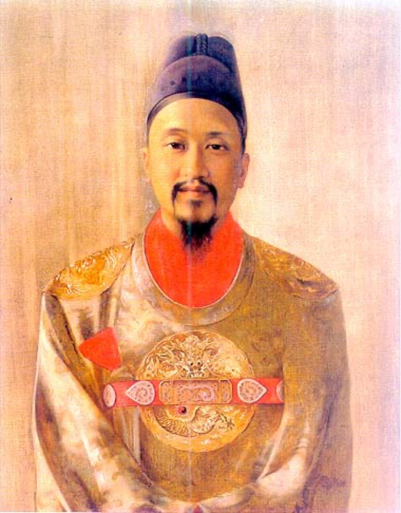
러·일 전쟁을 도발한 일본은 여러 조약을 차례로 강요하며 대한 제국의 국권을 단계적으로 빼앗아, 마침내 1910년 국권을 강탈하였다.
1904년 러·일 전쟁을 일으킨 일본은 군사 기지 사용을 강요한 한·일 의정서를 맺고, 이어 제1차 한·일 협약으로 외교·재정에 일본이 추천한 고문을 두게 하였다(스티븐스·메가타). 이 무렵 일본은 미국과 가쓰라·태프트 밀약, 영국과 제2차 영·일 동맹, 러시아와 포츠머스 조약을 잇달아 맺어 한국 지배를 국제적으로 인정받았다.
1905년 일본은 을사늑약(제2차 한·일 협약)을 강요하여 대한 제국의 외교권을 박탈하고 통감부를 설치하였다(초대 통감 이토 히로부미). 고종은 이 조약이 무효임을 알리기 위해 1907년 헤이그 만국 평화 회의에 특사(이준·이상설·이위종)를 파견하였으나, 일본은 이를 구실로 고종을 강제 퇴위시켰다.
이어 정미 7조약(한·일 신협약)을 맺어 각 부에 일본인 차관을 두는 차관 정치를 실시하고, 부속 각서로 대한 제국의 군대를 해산하였다. 1909년에는 기유각서로 사법권을 빼앗고 이듬해 경찰권까지 넘긴 뒤, 마침내 1910년 한·일 병합 조약으로 국권을 완전히 강탈하였다.
앞의 22.2 대한 제국과 광무개혁에서 시작한 변화는 이 절을 거친다. 다음 단원인 22.4 항일 의병 전쟁에서 그 흐름이 계속된다.
“…… 저 개돼지만도 못한 소위 우리 정부 대신이라는 자들이 …… 사천 년 강토와 오백 년 종사를 남에게 바치고 이천만 생령을 남의 노예가 되게 하였으니 …… 아, 원통하고 아, 분하도다. 우리 이천만 동포여, 살았는가, 죽었는가.”
장지연, 「시일야방성대곡」 (『황성신문』, 1905)국권이 빼앗기는 매 단계마다 무장 투쟁으로 맞선 항일 의병은, 유생에서 평민·해산 군인으로 주체를 넓히며 전국으로 확산되었다.
의병의 첫 물결은 을미사변과 단발령에 맞선 을미의병(1895)으로, 유인석·이소응 등 유생 의병장이 주도하였다. 을사늑약에 맞선 을사의병(1905)에서는 민종식·최익현 같은 유생과 함께 평민 출신 의병장 신돌석이 등장하여 태백산 일대를 누볐다. 최익현은 체포되어 쓰시마섬에서 순국하였다.
고종 퇴위와 군대 해산으로 촉발된 정미의병(1907)에서는 해산 군인이 대거 참여하여 의병의 전투력과 조직력이 크게 강화되었다. 여러 의병 부대가 연합한 13도 창의군은 이인영을 총대장, 허위를 군사장으로 삼아 서울 진공 작전을 펼쳤으나 화력의 열세로 실패하였다.
일본이 ‘남한 대토벌’ 작전으로 호남 일대 의병을 무자비하게 진압하자, 많은 의병이 서간도·연해주 등 국외로 이동하여 독립군의 뿌리가 되었다. 한편 안중근은 1909년 하얼빈에서 침략의 원흉 이토 히로부미를 처단하여 항일 의지를 세계에 떨쳤다.
앞의 22.3 국권 피탈 과정에서 시작한 변화는 이 절을 거친다. 다음 단원인 22.5 애국 계몽 운동에서 그 흐름이 계속된다.
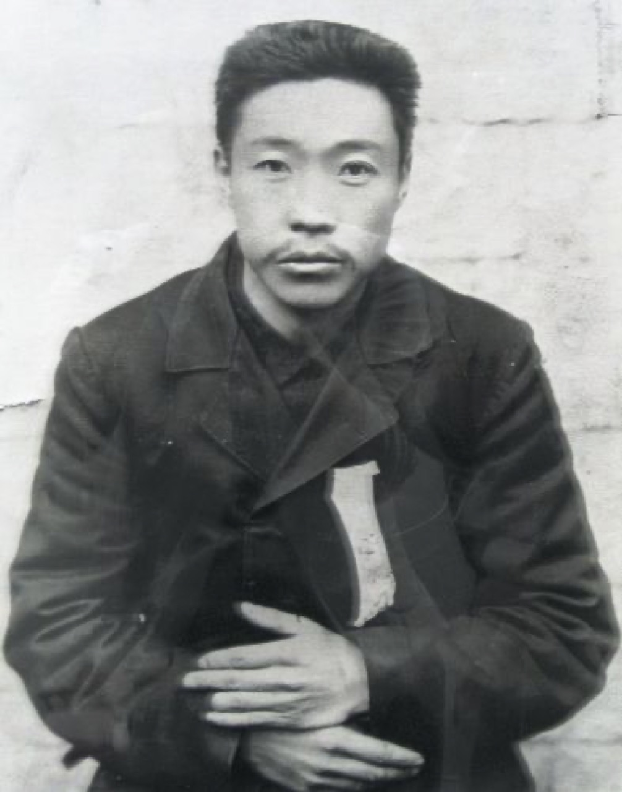
무장 투쟁과 나란히, 교육과 산업을 일으켜 실력을 길러 국권을 지키자는 애국 계몽 운동이 지식인과 관료를 중심으로 전개되었다.
초기에는 일본의 황무지 개간권 요구를 저지한 보안회, 입헌 군주제를 지향한 헌정 연구회가 활동하였다. 이를 이은 대한 자강회는 전국에 지회를 두고 교육·산업 진흥을 꾀하였으나, 고종 강제 퇴위에 반대하는 운동을 벌이다가 통감부에 의해 해산되었다.
애국 계몽 운동의 정점은 1907년 결성된 비밀 결사 신민회였다. 안창호·양기탁 등이 중심이 되어 공화정체의 근대 국민 국가 수립을 목표로 삼았다. 교육을 위해 대성 학교(평양)와 오산 학교(정주)를 세우고, 민족 산업을 위해 태극 서관과 자기 회사를 운영하였다.
신민회는 국내 활동의 한계를 느끼고 국외 독립운동 기지 건설에 나서, 서간도 삼원보에 신흥 강습소(뒷날 신흥 무관 학교)를 세우는 등 무장 독립 투쟁을 준비하였다. 그러나 일제가 조작한 105인 사건(1911)으로 조직이 드러나 해체되고 말았다.
앞의 22.4 항일 의병 전쟁에서 시작한 변화는 이 절을 거친다. 다음 단원인 22.6 경제적 구국 운동에서 그 흐름이 계속된다.
열강의 경제 침탈이 노골화되자, 상인·지식인·민중은 경제적 이권을 지키고 국가 재정을 되살리려는 구국 운동에 나섰다.
개항 이후 일본으로 곡물이 대량 유출되어 곡가가 치솟자, 함경도·황해도 등지의 지방관은 곡물 수출을 금지하는 방곡령(1889)을 내렸다. 그러나 일본은 조·일 통상 장정의 1개월 전 통고 규정을 어겼다며 배상을 요구하였고, 조선은 도리어 배상금을 물어야 했다.
청·일 상인의 상권 침탈에 맞서 서울의 시전 상인들은 황국 중앙 총상회를 조직하여 상권 수호 운동을 벌였다. 또 독립 협회는 만민 공동회를 통해 러시아의 이권 침탈에 맞서는 이권 수호 운동을 전개하였고, 일본의 황무지 개간권 요구는 보안회 등의 반대로 좌절되었다.
가장 널리 퍼진 것은 국채 보상 운동(1907)이었다. 일본이 강제로 떠안긴 차관 1,300만 원을 국민의 힘으로 갚자는 이 운동은 대구에서 서상돈의 제안으로 시작되어, 『대한매일신보』 등 언론의 후원 속에 전국으로 번졌다. 남자는 담배를 끊고 여자는 비녀·가락지를 내놓으며 성금을 모았으나, 통감부의 방해로 끝내 좌절되었다.
앞의 22.5 애국 계몽 운동에서 시작한 변화는 이 절을 거친다. 다음 단원인 22.7 근대 문물의 수용에서 그 흐름이 계속된다.
개항 이후 철도·전신에서 학교·신문·의료에 이르기까지 근대 문물이 밀려들어, 사람들의 생활과 의식을 바꾸어 놓았다.
교통·통신에서는 근대적 시설이 잇달아 들어섰다. 전신·전화가 놓이고, 1899년 서울에 전차가 개통되었다. 철도는 경인선(1899)이 최초로 부설되고 이어 경부선(1905)·경의선이 놓였는데, 이는 일본의 대륙 침략과 자원 수탈에 이용되는 이중성을 지녔다.
의료·교육 시설도 세워졌다. 알렌의 건의로 세운 최초의 근대식 병원 광혜원(곧 제중원으로 개칭), 정부의 광제원, 뒤이어 세브란스 병원이 문을 열었다. 교육에서는 최초의 근대적 사립 학교 원산 학사, 정부가 세운 육영 공원(헐버트 등 초빙), 선교사가 세운 이화 학당 등이 신교육을 이끌었다.
언론도 크게 발달하였다. 최초의 근대 신문인 한성순보(순 한문), 최초의 민간·한글 신문 독립신문, 국한문 혼용의 황성신문(장지연의 시일야방성대곡 게재), 영국인 베델과 양기탁이 발행하여 항일 논조를 폈던 대한매일신보 등이 국민 계몽에 앞장섰다. 건축에서는 고딕 양식의 명동 성당과 르네상스풍의 덕수궁 석조전이 근대 서양 건축을 대표한다.
앞의 22.6 경제적 구국 운동에서 시작한 변화는 이 절을 거친다. 다음 단원인 23.1 무단 통치(1910년대)에서 그 흐름이 계속된다.
1910년 국권을 강탈한 일제는 조선총독부를 정점으로 한 무단 통치로 식민 지배를 시작하였다. 헌병경찰과 태형, 토지조사사업과 회사령으로 우리 민족을 억압하고 경제를 수탈하는 한편, 통치 방식은 무단 통치 → 이른바 문화 통치 → 민족 말살 통치로 바뀌어 갔다. 그러나 지배가 가혹해질수록 독립을 향한 저항도 더욱 조직적이고 다양해졌다.
국내에서는 비밀결사와 실력 양성, 학생·농민·노동 운동이 이어졌고, 국외에서는 독립군 기지 건설과 무장 투쟁, 의열 투쟁, 대한민국 임시 정부의 활동이 전개되었다. 특히 3·1 운동은 온 민족이 하나 되어 독립 의지를 세계에 알린 사건으로, 대한민국 임시 정부 수립의 계기가 되었다. 이 부는 국권 피탈에서 광복 직전까지, 수탈에 맞선 36년의 독립운동을 따라간다.
조선총독부 설치, 헌병경찰·태형, 토지조사사업·회사령으로 억압과 수탈을 자행.
전 민족적 만세 운동으로 독립 의지를 표출, 대한민국 임시 정부 수립의 계기가 됨.
기만적 유화 정책과 민족 분열책, 치안유지법·산미증식계획, 무장 독립 전쟁의 활성화.
봉오동·청산리 대첩, 의열단·한인애국단, 한·중 연합 작전으로 무장 저항이 이어짐.
병참기지화·황국신민화, 국가총동원법(1938)으로 인적·물적 자원을 총동원.
한국광복군 창설과 대일 선전 포고, 조선독립동맹·조선건국동맹의 광복 준비.
국권을 강탈한 일제는 조선총독부를 세우고 헌병경찰을 앞세운 무단 통치로 우리 민족을 힘으로 억눌렀다.
일제는 식민 통치의 최고 기구로 조선총독부를 설치하고, 육·해군 대장 출신을 총독으로 임명해 입법·행정·사법과 군 통수권까지 장악하게 하였다. 총독의 자문 기구로 중추원을 두었으나 친일파로 채워진 허수아비 기구에 지나지 않았다. 통치의 핵심 수단은 헌병경찰제로, 헌병이 일반 경찰 업무까지 맡아 재판 없이 처벌하는 즉결 처분권을 행사하였고, 한국인에게만 태형을 가하는 조선태형령을 시행하였다. 관리와 교원까지 제복을 입고 칼을 차게 하여 위협적 분위기를 조성하였다.
정치적 자유는 철저히 박탈되었다. 언론·출판·집회·결사의 자유를 빼앗고, 안악 사건·105인 사건을 조작해 신민회 등 민족 운동 세력을 탄압하였다. 교육에서는 제1차 조선교육령을 공포해 보통 교육과 실업 교육 중심의 낮은 수준 교육만 허용하고, 한국인의 고등 교육 기회를 막아 우민화를 꾀하였다.
경제 수탈의 토대는 토지조사사업(1910~1918)이었다. 일제는 근대적 토지 소유권 확립을 내세웠으나, 정해진 기간 안에 신고해야만 소유권을 인정하는 기한부 신고주의를 채택하여 절차가 복잡한 신고제를 악용하였다. 그 결과 미신고 토지와 공공·왕실 토지를 총독부가 차지해 총독부 소유지가 크게 늘었고, 이는 일본인에게 헐값으로 넘어갔다. 농민은 경작권을 잃고 기한부 소작농으로 전락하였다.
산업 침탈도 함께 진행되었다. 회사령(1910)은 회사 설립을 총독의 허가제로 묶어 한국인의 기업 활동을 억제하고 민족 자본의 성장을 막았다. 또 삼림령·어업령·광업령 등을 잇달아 제정해 산림·수산·지하자원을 일제와 일본인이 독점하도록 하였다.
일제의 식민 통치는 1910년대 무단 통치, 1920년대 이른바 문화 통치, 1930년대 이후 민족 말살 통치로 변했지만 수탈과 억압이라는 본질은 이어졌다. 경찰 제도·언론 정책·경제 수탈·동화 정책을 시기별로 묶고 토지 조사 사업과 산미 증식 계획의 목적과 결과를 비교한다. 앞의 22.7 근대 문물의 수용에서 시작한 변화는 이 절을 거친다. 다음 단원인 23.2 이른바 '문화 통치'(1920년대)에서 그 흐름이 계속된다.
3·1 운동에 놀란 일제는 통치 방식을 바꾸었으나, 그 실상은 민족을 분열시키려는 기만적 유화 정책이었다.
3·1 운동으로 무단 통치의 한계를 절감한 일제는 새 총독 사이토 마코토를 앞세워 이른바 문화 통치를 표방하였다. 그러나 겉으로 내건 완화책은 실속이 없었다. 문관 총독 임명을 허용한다고 했으나 광복 때까지 단 한 명의 문관 총독도 임명되지 않았다. 헌병경찰제를 보통경찰제로 바꾸었으나 오히려 경찰 관서·경찰관 수와 예산은 크게 늘어 감시가 강화되었다.
언론·출판에서도 조선일보·동아일보 등 한국어 신문 발행을 허용하였으나, 검열·삭제·정간·폐간을 일삼아 실제로는 자유를 억압하였다. 나아가 사회주의 운동과 독립운동을 탄압할 법적 근거로 치안유지법(1925)을 제정하였다. 지방 자치를 명분으로 도·부·면 협의회를 두었으나 자문 기구에 불과하였고, 이러한 정책의 본질은 친일파를 키워 민족을 분열시키려는 것이었다.
경제적으로는 산미증식계획(1920~1934)이 추진되었다. 일본 내 식량 부족을 한국에서 메우려는 정책으로, 관개 시설과 품종 개량으로 쌀 생산을 늘리려 하였다. 그러나 증산량보다 많은 양의 쌀이 일본으로 반출되어 국내 1인당 쌀 소비량은 오히려 줄었고, 부족한 식량은 만주에서 들여온 잡곡으로 메웠다. 게다가 수리 조합비·비료 대금 등 증산 비용이 농민에게 전가되어 많은 농민이 몰락하고 화전민이나 국외 이주민으로 내몰렸다.
앞의 23.1 무단 통치(1910년대)에서 시작한 변화는 이 절을 거친다. 다음 단원인 23.3 민족 말살 통치(1930~40년대)에서 그 흐름이 계속된다.
대륙 침략을 본격화한 일제는 한국을 전쟁 물자 공급지로 삼고, 민족성 자체를 지우려는 민족 말살 통치를 펼쳤다.
일제는 만주 사변과 중·일 전쟁으로 침략 전쟁을 확대하면서 한국을 병참 기지로 삼았다. 공업 원료를 얻으려 남부에는 면화 재배를, 북부에는 양 사육을 강요하는 남면북양 정책을 실시하고, 군수 공업을 북부 지방에 집중 육성하였다. 이는 한국 경제의 자립적 발전이 아니라 전쟁 수행을 위한 기형적 공업화였다.
정신적 지배는 황국신민화 정책으로 나타났다. 일제는 한국인을 일왕의 신민으로 동화시키려 내선일체·일선동조론을 내세우고, 신사 참배와 궁성을 향해 절하는 궁성 요배, 황국신민서사 암송을 강요하였다. 나아가 우리 성과 이름을 일본식으로 바꾸게 하는 창씨개명을 강제하고, 학교와 관공서에서 조선어 사용을 금지하였으며, 우리말 신문인 조선일보·동아일보를 폐간(1940)하였다.
전쟁이 확대되자 인적·물적 수탈이 극에 달하였다. 국가총동원법(1938)을 근거로 국민 징용으로 노동력을, 지원병·학도병·징병으로 병력을 강제 동원하였다. 식량과 금속을 강제로 거두어 가는 공출제를 실시하고 미곡 배급제를 시행하였으며, 여성을 여자 정신 근로대로 끌고 가거나 일본군 ‘위안부’로 삼는 반인륜적 범죄를 저질렀다.
앞의 23.2 이른바 '문화 통치'(1920년대)에서 시작한 변화는 이 절을 거친다. 다음 단원인 24.1 1910년대 국내외 민족 운동에서 그 흐름이 계속된다.
가혹한 무단 통치 아래 국내에서는 비밀결사가, 국외에서는 독립운동 기지가 건설되어 무장 투쟁을 준비하였다.
국내에서는 감시를 피해 비밀결사 형태의 저항이 이어졌다. 독립의군부(1912)는 고종의 밀명을 받은 임병찬이 조직한 단체로, 옛 왕조를 되살리려는 복벽주의를 표방하고 조선 총독에게 국권 반환을 요구하는 활동을 계획하였다. 이와 달리 대한광복회(1915)는 박상진을 총사령으로 한 단체로, 군대식 조직을 갖추어 군자금을 모으고 친일파를 처단하였으며 공화정 수립을 지향하였다.
국외에서는 만주와 연해주에 독립운동 기지가 세워졌다. 남만주(서간도) 삼원보에서는 신민회 인사들이 자치 기구 경학사와 군사 학교인 신흥강습소(뒷날 신흥무관학교)를 세워 독립군을 길렀다. 북간도에서는 명동학교가 민족 교육의 중심이 되고, 대종교 인사들이 항일 무장 단체 중광단(뒷날 북로군정서)을 조직하였다.
연해주 신한촌에서는 자치 단체 권업회가 활동하고, 이를 바탕으로 대한광복군정부(1914)가 세워져 무장 투쟁을 준비하였다. 태평양 건너 미주에서는 대한인국민회가 외교·계몽 활동을 벌였고, 하와이에서는 박용만이 군사 조직인 대조선국민군단을 세워 무장 투쟁을 대비하였다.
1910년대 비밀 결사와 국외 독립운동 기지 건설은 3·1 운동과 대한민국 임시 정부 수립의 기반이 되었다. 3·1 운동의 배경·확산·의의, 임시 정부의 통합 과정과 조직 개편을 연결한다. 국내 단체와 국외 지역은 인물·활동·기지 위치를 세트로 익힌다. 앞의 23.3 민족 말살 통치(1930~40년대)에서 시작한 변화는 이 절을 거친다. 다음 단원인 24.2 3·1 운동에서 그 흐름이 계속된다.
1919년 봄, 온 민족이 신분과 지역을 넘어 하나 되어 독립 만세를 외친 3·1 운동은 우리 독립운동사의 큰 분수령이었다.
제1차 세계 대전 종전 후 미국 대통령 윌슨의 민족 자결주의가 제창되면서 약소민족의 독립 열망이 높아졌다. 상하이의 신한청년당은 파리 강화 회의에 김규식을 대표로 파견하였고, 일본 도쿄 유학생들은 2·8 독립 선언(1919)을 발표하였다. 여기에 고종의 서거와 독살설이 겹쳐 민족의 분노가 폭발 직전에 이르렀다.
이러한 흐름 속에 종교계와 학생들이 민족 대표 33인을 구성하고 독립 선언서를 준비하였다. 1919년 3월 1일, 민족 대표는 태화관에서 선언서를 낭독하고, 학생과 시민은 탑골 공원에 모여 만세 시위를 벌였다. 시위는 삽시간에 전국 도시로, 다시 농촌으로 퍼졌고 만주·연해주·미주 등 국외로까지 확산되었다. 이 과정에서 이화학당 학생 유관순을 비롯한 수많은 이들이 앞장섰다.
일제는 군대와 경찰을 동원해 무자비하게 탄압하였다. 경기도 화성에서 주민을 교회에 몰아넣고 학살한 제암리 학살 사건이 그 참상을 대표한다. 3·1 운동은 비록 즉각적인 독립으로 이어지지는 못했으나, 대한민국 임시 정부 수립의 계기가 되었고, 일제가 통치 방식을 이른바 문화 통치로 바꾸게 하였으며, 중국의 5·4 운동 등 세계 약소민족 운동에도 영향을 주었다.
앞의 24.1 1910년대 국내외 민족 운동에서 시작한 변화는 이 절을 거친다. 다음 단원인 24.3 대한민국 임시 정부에서 그 흐름이 계속된다.
“우리는 이에 우리 조선이 독립한 나라임과 조선 사람이 자주적인 백성임을 선언하노라. …… 오늘 우리의 이 거사는 정의·인도·생존·존영을 위하는 민족적 요구이니, 오직 자유의 정신을 발휘할 것이요, 결코 배타적 감정으로 함부로 행동하지 말라.”
기미 독립 선언서(1919)3·1 운동의 열기 속에 여러 임시 정부가 세워지고, 이들이 통합하여 대한민국 임시 정부가 출범하였다.
3·1 운동 직후 연해주의 대한 국민 의회, 상하이의 임시 정부, 국내의 한성 정부 등 여러 정부가 세워졌다. 이들은 통합 논의를 거쳐 1919년 한성 정부의 법통을 잇고 외교에 유리한 상하이에 통합 임시 정부를 세웠다. 임시 정부는 우리 역사상 최초로 삼권 분립에 입각한 민주 공화제를 채택하고, 대통령에 이승만, 국무총리에 이동휘를 선출하였다.
임시 정부는 국내와 연결된 비밀 행정·통신 조직을 운영하였다. 전국에 비밀 연락망인 연통제를 두고, 통신 기관인 교통국을 통해 정보를 주고받고 군자금을 모았다. 만주 단둥의 이륭양행과 부산의 백산상회 등이 자금 전달의 거점이 되었다. 또 독립 공채를 발행하고, 기관지 『독립신문』을 펴냈으며, 사료 편찬소를 두어 독립운동사를 정리하였다.
그러나 국내 조직이 일제에 발각되고 외교 노선의 성과가 부진하자 활동이 침체되었다. 이를 타개하려 국민대표회의(1923)가 열렸으나, 임정을 해체하고 새로 세우자는 창조파와 조직을 유지·개혁하자는 개조파가 대립하다 결렬되었다. 이후 침체를 겪던 임정은 1930년대 후반 중국 내륙으로 이동하여 충칭에 정착하고, 1940년 한국광복군을 창설하여 항일 투쟁의 구심점 역할을 이어 갔다.
앞의 24.2 3·1 운동에서 시작한 변화는 이 절을 거친다. 다음 단원인 25.1 봉오동·청산리 대첩에서 그 흐름이 계속된다.
“제1조 대한민국은 민주 공화제로 함. 제2조 대한민국은 임시 정부가 임시 의정원의 결의에 의하여 이를 통치함. 제3조 대한민국의 인민은 남녀·귀천 및 빈부의 계급이 없고 일체 평등함.”
대한민국 임시 헌장(1919)1920년, 만주의 독립군은 일본군을 상대로 봉오동·청산리에서 잇달아 큰 승리를 거두며 무장 독립 전쟁의 절정을 이루었다.
3·1 운동 이후 만주 일대에서 독립군 부대가 크게 늘고 국내 진공 작전이 활발해졌다. 1920년 6월, 홍범도가 이끄는 대한독립군은 여러 독립군 부대와 연합하여, 추격해 온 일본군을 봉오동 골짜기로 유인해 크게 무찔렀다(봉오동 전투).
패배에 자극받은 일제는 훈춘 사건을 조작해 대규모 병력을 만주로 보냈다. 이에 맞서 1920년 10월, 김좌진의 북로군정서와 홍범도의 대한독립군 등 연합 부대는 백운평·어랑촌 일대에서 6일간 10여 차례 전투를 벌여 일본군에 큰 타격을 입혔다(청산리 대첩). 이는 독립 전쟁사에서 가장 빛나는 승리로 꼽힌다.
그러나 승리의 대가는 혹독하였다. 일제는 그 보복으로 간도의 한인 마을을 습격해 수많은 동포를 학살하는 간도 참변(1920)을 저질렀다. 독립군은 근거지를 잃고 러시아령 자유시로 이동하였으나, 지휘권을 둘러싼 갈등 끝에 러시아 적군에게 무장 해제를 당하며 큰 희생을 치른 자유시 참변(1921)을 겪어 세력이 크게 위축되었다.
무장 독립 전쟁은 봉오동·청산리 승리 뒤 일본의 보복과 독립군 이동, 3부 성립과 통합 운동으로 이어졌다. 의열단·한인 애국단의 개인 의거, 1930년대 한중 연합 작전, 한국광복군의 활동은 단체·지도자·작전 지역을 구분해야 한다. 앞의 24.3 대한민국 임시 정부에서 시작한 변화는 이 절을 거친다. 다음 단원인 25.2 3부의 성립과 통합 운동에서 그 흐름이 계속된다.
자유시 참변 이후 만주로 돌아온 독립군은 조직을 재정비하여 참의부·정의부·신민부의 3부를 세웠다.
흩어졌던 독립군은 1920년대 중반 만주에서 세력을 다시 결집하였다. 압록강 건너편을 근거로 한 참의부, 남만주 일대의 정의부, 북만주 일대의 신민부가 그것이다. 이 3부는 단순한 군사 조직이 아니라, 동포 사회를 다스리는 민정 조직과 독립군을 운영하는 군정 조직을 함께 갖춘 자치 정부의 성격을 띠었다.
독립군의 활동이 활발해지자 일제는 이를 뿌리 뽑으려 하였다. 1925년 일제는 만주 군벌 장쭤린과 미쓰야 협정을 맺어, 만주의 한국인 독립운동가를 체포해 일제에 넘기면 그 대가를 지급하도록 하였다. 이로 인해 독립군의 활동 기반이 크게 위축되었다.
어려운 상황을 타개하고 역량을 하나로 모으기 위해 3부 통합 운동이 일어났다. 그 결과 완전한 하나의 조직으로 합쳐지지는 못하였으나, 북만주에서는 혁신의회로, 남만주에서는 국민부로 크게 두 세력으로 재편되었다. 이후 이들은 각각 한국독립군과 조선혁명군으로 이어져 1930년대 한·중 연합 작전의 주체가 된다.
앞의 25.1 봉오동·청산리 대첩에서 시작한 변화는 이 절을 거친다. 다음 단원인 25.3 의열단과 한인 애국단에서 그 흐름이 계속된다.
의로운 개인의 의거로 일제의 간담을 서늘하게 한 의열단과 한인 애국단은 침체된 독립운동에 활기를 불어넣었다.
의열단은 1919년 김원봉을 중심으로 만주에서 조직되었다. 이들은 신채호가 지은 「조선혁명선언」을 활동 지침으로 삼아, 민중의 직접 혁명으로 독립을 이루고자 일제 요인 암살과 식민 통치 기관 파괴에 나섰다. 김익상(조선총독부)·김상옥(종로 경찰서)·나석주(동양 척식 주식회사) 등의 의거가 대표적이다. 이후 김원봉은 개별 투쟁의 한계를 느껴 단원들을 황푸군관학교에 보내 군사 훈련을 받게 하고, 조직적 무장 투쟁으로 방향을 바꾸어 뒷날 민족혁명당 결성을 주도하였다.
한인 애국단은 침체에 빠진 임시 정부에 활력을 불어넣고자 1931년 김구가 상하이에서 조직하였다. 단원 이봉창은 도쿄에서 일왕의 행렬에 폭탄을 던졌고, 윤봉길은 1932년 상하이 훙커우 공원에서 열린 일왕 생일 기념식에 폭탄을 투척하여 일본군 수뇌부에 큰 타격을 입혔다.
특히 윤봉길 의거는 국제 사회에 우리 민족의 독립 의지를 알린 사건으로, 중국 국민당 정부가 대한민국 임시 정부를 적극 지원하는 계기가 되었다. 이는 뒷날 한·중 연합 작전과 한국광복군 창설의 밑거름이 되었다.
앞의 25.2 3부의 성립과 통합 운동에서 시작한 변화는 이 절을 거친다. 다음 단원인 25.4 1930년대 한·중 연합 작전에서 그 흐름이 계속된다.
“민중은 우리 혁명의 대본영이다. 폭력은 우리 혁명의 유일한 무기이다. 우리는 민중 속으로 가서 …… 강도 일본의 통치를 타도하고, 우리 생활에 불합리한 일체 제도를 개조하여 인류로써 인류를 압박하지 못하며, 사회로써 사회를 수탈하지 못하는 이상적 조선을 건설할지니라.”
신채호, 「조선혁명선언」(1923)일제가 만주를 침략하자 한국 독립군과 중국군은 공동의 적에 맞서 손을 잡고 연합 작전을 펼쳤다.
만주 사변(1931)으로 일제가 만주를 장악하자, 한국인과 중국인은 반일 감정을 공유하며 연합 전선을 이루었다. 남만주에서는 국민부 계열의 조선혁명군이 양세봉의 지휘 아래 중국 의용군과 연합하여 영릉가 전투·흥경성 전투에서 일본군을 물리쳤다.
북만주에서는 혁신의회 계열의 한국독립군이 지청천의 지휘로 중국 호로군과 연합하여 쌍성보 전투·대전자령 전투에서 큰 승리를 거두었다. 그러나 일본군의 대공세와 중국군과의 갈등, 그리고 임시 정부의 이동 방침에 따라 한국독립군 주력은 점차 중국 관내로 이동하였다.
한편 중국 관내에서는 김원봉이 1938년 조선의용대를 창설하였다. 이는 중국 관내에서 결성된 최초의 한인 무장 부대로, 중국 국민당의 지원을 받아 정보 수집·후방 교란 등의 활동을 벌였다. 이후 조선의용대의 일부는 화북으로 이동해 조선의용군으로 이어지고, 나머지 세력은 한국광복군에 합류하게 된다.
앞의 25.3 의열단과 한인 애국단에서 시작한 변화는 이 절을 거친다. 다음 단원인 25.5 1940년대 건국 준비에서 그 흐름이 계속된다.
광복이 다가오자 국내외 독립운동 세력은 저마다 군대를 갖추고 건국 강령을 마련하며 새 나라를 준비하였다.
충칭에 정착한 대한민국 임시 정부는 1940년 한국광복군을 창설하고 지청천을 총사령으로 삼았다. 광복군은 태평양 전쟁이 일어나자 대일 선전 포고(1941)를 발표하고, 연합군의 일원으로 인도·미얀마 전선에 파견되어 영국군과 함께 활동하였다. 또 미국 전략 정보국(OSS)과 협력하여 국내 진공 작전을 준비하였으나, 일제의 갑작스러운 항복으로 실행에 옮기지 못하였다. 1942년에는 조선의용대 일부 병력이 광복군에 합류하여 전력이 강화되었다.
중국 화북 지방에서는 사회주의 계열의 조선독립동맹이 결성되고, 그 산하에 무장 부대인 조선의용군이 편성되어 중국 공산당의 팔로군과 함께 항일전을 벌였다. 이들은 광복 후 북한 지역으로 이동하였다.
국내에서는 여운형을 중심으로 조선건국동맹(1944)이 비밀리에 조직되어 광복에 대비하였다. 한편 임시 정부는 조소앙의 삼균주의(정치·경제·교육의 균등)를 바탕으로 대한민국 건국 강령(1941)을 발표하여, 광복 후 세울 나라의 청사진을 제시하였다.
앞의 25.4 1930년대 한·중 연합 작전에서 시작한 변화는 이 절을 거친다. 다음 단원인 26.1 실력 양성 운동에서 그 흐름이 계속된다.
‘아는 것이 힘, 기르는 것이 실력’이라는 믿음 아래, 민족의 실력을 키워 독립을 준비하려는 실력 양성 운동이 전개되었다.
먼저 우리 경제를 지키려는 물산 장려 운동이 일어났다. 회사령 폐지와 관세 철폐로 일본 상품이 밀려들자, 1920년 평양에서 조만식 등이 이를 시작하였다. ‘내 살림 내 것으로’, ‘조선 사람 조선 것’을 구호로 국산품 애용·근검저축을 호소하였고, 자작회 등 단체가 이를 뒷받침하였다. 그러나 상품 가격이 오르고 자본가만 이롭게 한다는 비판을 받으며 한계를 드러냈다.
교육에서는 고등 교육 기관을 우리 손으로 세우려는 민립 대학 설립 운동이 일어났다. 이상재 등이 조선 민립 대학 기성회를 조직하고 ‘한민족 1천만이 한 사람 1원씩’을 내걸어 모금 운동을 벌였다. 그러나 일제의 방해와 자연재해로 성과를 거두지 못하였고, 일제는 무마책으로 경성 제국 대학을 세웠다.
문맹을 없애려는 운동도 활발하였다. 조선일보는 ‘아는 것이 힘’을 내세운 문자 보급 운동을, 동아일보는 학생들이 농촌으로 들어가 계몽에 나선 브나로드 운동을 전개하였다. 이러한 언론사의 문맹 퇴치 운동은 야학 설립과 함께 민중 계몽에 이바지하였다.
일제강점기 국내 운동은 교육·경제의 실력 양성, 민족 협동 전선, 학생·농민·노동 운동, 문화 수호로 다양하게 전개되었다. 물산 장려 운동과 민립 대학 설립 운동의 한계, 신간회의 민족 유일당 성격, 조선어 학회의 활동을 시기와 탄압 사건까지 연결한다. 앞의 25.5 1940년대 건국 준비에서 시작한 변화는 이 절을 거친다. 다음 단원인 26.2 민족 협동 전선에서 그 흐름이 계속된다.
1920년대 후반, 민족주의와 사회주의 세력이 이념을 넘어 손을 잡고 신간회라는 민족 협동 전선을 이루었다.
협동 전선의 흐름은 학생 운동에서 싹텄다. 1926년 순종의 인산일을 계기로 학생들이 만세 시위를 벌인 6·10 만세 운동이 일어났는데, 이 준비 과정에서 민족주의와 사회주의 세력이 함께 움직여 연대의 가능성을 확인하였다. 여기에 사회주의 단체가 발표한 정우회 선언이 민족주의 세력과의 제휴를 제창하면서 협동 전선의 기운이 무르익었다.
마침내 1927년, 비타협적 민족주의 세력과 사회주의 세력이 결합하여 신간회가 창립되었다. 신간회는 일제강점기 최대 규모의 합법적 민족 운동 단체로, 전국에 지회를 두고 강연회를 열어 민족의식을 일깨웠다. 특히 광주 학생 항일 운동(1929)이 일어나자 진상 조사단을 파견하고 대규모 민중 대회를 계획하는 등 이를 적극 지원하였다.
그러나 민중 대회가 무산되고 지도부가 교체되면서 내부의 이념 대립이 커졌고, 결국 1931년 해소되고 말았다. 한편 신간회의 자매단체로 근우회가 조직되어 여성의 지위 향상과 계몽에 힘쓰며 민족 운동에 이바지하였다.
앞의 26.1 실력 양성 운동에서 시작한 변화는 이 절을 거친다. 다음 단원인 26.3 농민·노동 운동에서 그 흐름이 계속된다.
일제의 경제 수탈이 심해지자 농민과 노동자는 생존권 투쟁을 벌였고, 이는 점차 항일 운동으로 발전하였다.
토지조사사업과 산미증식계획으로 소작농이 늘고 고율의 소작료에 시달리자, 농민들은 소작료 인하와 소작권 보장을 요구하는 소작 쟁의를 벌였다. 그 대표적인 사례가 1923년 전라남도 암태도 소작 쟁의로, 농민들이 지주와 이를 비호하는 일제에 맞서 1년 넘게 싸운 끝에 소작료 인하를 이끌어 냈다.
노동자들은 낮은 임금과 열악한 노동 조건, 일본인 감독의 민족 차별에 맞서 노동 쟁의를 일으켰다. 1929년 원산 총파업은 일제강점기 최대의 노동 쟁의로, 원산 지역 노동자들이 수개월간 파업을 이어 가며 국내외 노동 단체의 지지를 받았다. 이는 노동 운동이 반일 민족 운동의 성격을 띠고 있음을 뚜렷이 보여 주었다.
1930년대에 들어 일제의 탄압이 강화되고 사회주의가 확산되면서, 농민·노동 운동은 합법의 틀을 벗어난 혁명적(비합법) 조합 운동으로 바뀌었다. 이 시기의 운동은 단순한 생존권 요구를 넘어 일제 타도와 사회 변혁을 내건 비합법 항일 투쟁으로 격화되었다.
앞의 26.2 민족 협동 전선에서 시작한 변화는 이 절을 거친다. 다음 단원인 26.4 대중 운동에서 그 흐름이 계속된다.
사회 각 계층은 차별과 억압에서 벗어나기 위해 저마다 대중 운동을 일으켜 인간다운 삶과 평등을 외쳤다.
어린이를 하나의 인격체로 존중하려는 소년 운동이 일어났다. 방정환을 중심으로 한 천도교 소년회는 ‘어린이’라는 말을 널리 쓰고 어린이날을 제정하였으며, 잡지 『어린이』를 펴내 아동의 인권과 교육에 힘썼다.
가장 낮은 신분으로 차별받던 백정들은 형평 운동을 벌였다. 1923년 경상남도 진주에서 조선 형평사가 조직되어, 백정에 대한 사회적 차별 철폐와 평등한 대우를 요구하였다. 이 운동은 저울처럼 공평한 사회를 지향한다는 뜻을 담아 전국으로 퍼지며 신분 차별에 맞선 인권 운동으로 발전하였다.
이 밖에도 여성의 지위 향상을 꾀한 여성 운동과 청년의 계몽·수양을 내건 청년 운동이 전개되었다. 여성계에서는 근우회가, 청년계에서는 조선 청년 총동맹 등이 활동하며 대중을 조직하고 민족의식을 일깨웠다. 이처럼 다양한 대중 운동은 사회 각 부문에서 민족 운동의 저변을 넓혔다.
앞의 26.3 농민·노동 운동에서 시작한 변화는 이 절을 거친다. 다음 단원인 26.5 민족 문화 수호에서 그 흐름이 계속된다.
일제가 우리말과 역사를 지우려 하자, 학자들은 국어와 국사를 지키는 일을 곧 독립운동으로 삼아 싸웠다.
국어를 지키려는 노력은 학회를 중심으로 이어졌다. 조선어 연구회는 뒤에 조선어 학회로 발전하여, 한글 맞춤법 통일안과 표준어를 제정하고 『우리말 큰사전』 편찬에 나섰다. 그러나 일제가 학회를 독립운동 단체로 몰아 회원들을 검거한 조선어 학회 사건(1942)으로 활동이 강제로 중단되었다.
국사 연구도 활발하였다. 박은식은 나라의 혼(魂)을 강조하며 『한국통사』와 『한국독립운동지혈사』를 저술하였다. 신채호는 민족정신인 낭가 사상을 내세워 고대사를 새롭게 밝힌 『조선상고사』와 『조선사연구초』를 남겼다. 이들의 연구는 민족의식을 일깨우는 민족주의 사학의 바탕이 되었다.
한편 백남운은 유물 사관을 바탕으로 한 사회 경제 사학을 통해, 한국사도 세계사와 마찬가지로 보편적 발전 단계를 거쳤음을 논증하여 일제의 식민 사관(정체성론)을 반박하였다. 또 이병도·손진태 등은 진단 학회를 세워 실증적 방법으로 한국사를 연구하는 실증 사학의 기반을 마련하였다.
앞의 26.4 대중 운동에서 시작한 변화는 이 절을 거친다. 다음 단원인 26.6 문학·예술·종교에서 그 흐름이 계속된다.
문학과 예술, 종교의 영역에서도 민족혼을 지키려는 저항과 일제에 협력한 친일의 갈림길이 뚜렷이 나타났다.
문학에서는 암울한 현실 속에서도 저항 문학이 꽃피었다. 승려이자 시인인 한용운은 『님의 침묵』으로 독립에의 의지를 노래하였고, 이육사는 「광야」·「절정」에서, 윤동주는 『하늘과 바람과 별과 시』에서 저항과 성찰의 시 세계를 펼쳤다. 반면 일제 말기에는 침략 전쟁을 미화하고 지원병을 권유하는 친일 문학도 나타났다. 계급 의식을 앞세운 카프(KAPF) 같은 신경향파 문학도 이 시기에 활동하였다.
예술 분야에서는 나운규가 우리 민족의 애환과 저항 의식을 담은 영화 「아리랑」(1926)을 만들어 큰 반향을 일으켰다. 연극·음악·미술 등에서도 민족의 정서를 담으려는 노력이 이어졌다.
종교계도 저마다 민족 운동에 참여하였다. 천도교는 3·1 운동을 주도하고 소년 운동을 이끌었으며, 대종교는 중광단을 조직해 무장 투쟁에 앞장섰다. 개신교는 교육·의료와 신사 참배 거부 운동을, 불교는 한용운을 중심으로 불교 개혁과 항일 운동을 벌였다. 박중빈이 창시한 원불교는 개간·저축 등 새생활 운동을 펼쳤고, 천주교는 사회 사업과 항일 운동에 힘썼다.
앞의 26.5 민족 문화 수호에서 시작한 변화는 이 절을 거친다. 다음 단원인 27.1 해방 전후 국제 논의에서 그 흐름이 계속된다.
1945년 8월 15일, 35년의 식민 지배가 끝나고 광복이 찾아왔다. 그러나 해방의 기쁨은 곧 38선을 경계로 한 미·소의 분할 점령과 좌우 대립이라는 냉엄한 현실과 마주하였다. 신탁 통치를 둘러싼 갈등, 통일 정부 수립을 위한 노력이 좌절되는 가운데, 1948년 남과 북에 서로 다른 정부가 들어서면서 분단이 고착되었고, 2년 뒤 6·25 전쟁이라는 민족의 비극이 이어졌다.
전쟁의 폐허 위에서 한국 현대사는 두 개의 큰 흐름으로 전개되었다. 하나는 산업화로, 세계 최빈국 가운데 하나였던 한국이 급속한 경제 성장을 이루는 과정이다. 다른 하나는 민주화로, 이승만 독재와 4·19 혁명, 박정희의 유신 체제, 신군부의 등장과 5·18 민주화 운동, 그리고 1987년 6월 민주 항쟁에 이르기까지 시민이 권력에 맞서 민주주의를 되찾아 온 길이다. 이 부는 해방에서 민주화에 이르는 40여 년의 격동을 따라간다.
일제로부터 해방되었으나 38선을 경계로 미·소가 남북을 나누어 점령.
5·10 총선거로 제헌 국회 구성, 8월 15일 대한민국 정부 수립·남북 분단 확정.
북한의 남침으로 발발, 인천 상륙·중국군 개입을 거쳐 1953년 정전 협정으로 분단 고착.
3·15 부정선거에 맞선 시민·학생의 저항으로 이승만 정권 붕괴.
박정희의 10월 유신, 10·26 이후 신군부 등장과 5·18 광주 민주화 운동.
전국적 시민 항쟁으로 6·29 선언과 대통령 직선제 개헌을 이끌어 냄.
제2차 세계 대전의 전개 속에서 연합국은 여러 회담을 통해 한국의 독립을 논의하였고, 마침내 1945년 8월 15일 광복을 맞이하였다.
한국의 독립이 국제적으로 처음 약속된 것은 1943년 카이로 회담이었다. 미국·영국·중국의 정상은 ‘적당한 시기에’ 한국을 독립시킨다는 조항을 선언에 담았는데, 이는 한국 독립을 명문화한 최초의 국제 합의였다. 그러나 ‘적당한 시기’라는 단서는 뒷날 신탁 통치 구상의 씨앗이 되었다. 이어 얄타 회담(1945.2)에서는 소련의 대일전 참전이 합의되었고, 포츠담 회담(1945.7)에서 한국의 독립이 다시 확인되었다.
1945년 8월 일본이 무조건 항복하면서 8·15 광복이 이루어졌다. 그러나 광복은 우리 힘만으로 얻은 것이 아니라 연합국 승리의 결과이기도 하여, 이후의 진로가 강대국의 이해에 좌우되는 한계를 안고 있었다.
일본군의 항복을 받는다는 명분으로 미국과 소련은 38도선을 경계로 한반도를 분할 점령하였다. 남쪽에는 미군이, 북쪽에는 소련군이 들어와 군정을 실시하면서, 광복의 기쁨은 곧 분단이라는 새로운 위기로 이어졌다.
광복 직후사는 국제 회담의 결정이 국내 정치 세력의 선택과 충돌하며 분단으로 이어지는 과정이다. 모스크바 3국 외상 회의, 미소 공동 위원회, 좌우 합작 운동, 남북 협상, 5·10 총선거를 순서대로 놓는다. 친일파 청산과 농지 개혁은 법률과 실행 결과를 구분한다. 앞의 26.6 문학·예술·종교에서 시작한 변화는 이 절을 거친다. 다음 단원인 27.2 해방 정국과 신탁 통치에서 그 흐름이 계속된다.
“위의 세 강대국은 한국인의 노예 상태에 유의하여, 적당한 시기에(in due course) 한국을 자유롭고 독립된 국가로 할 것을 결의한다.”
카이로 선언(1943)광복 직후 국내에서는 자주적 국가 건설의 움직임이 일었으나, 모스크바 3상 회의의 신탁 통치 결정을 둘러싸고 좌우가 격렬히 대립하였다.
광복과 동시에 여운형은 조선 건국 준비 위원회(건준)를 조직하여 치안과 행정을 담당하고, 미군 진주에 앞서 조선 인민 공화국 수립을 선포하였다. 그러나 남쪽에 들어온 미군정은 인민 공화국과 대한민국 임시 정부를 모두 인정하지 않고, 자신들만이 유일한 합법 정부임을 내세워 직접 통치하였다.
1945년 12월 모스크바 3상 회의에서 미·영·소 외상은 한국에 관해 임시 민주 정부 수립, 미·소 공동 위원회 설치, 최고 5년간의 신탁 통치를 결정하였다. 이 소식이 전해지자 국내 여론은 크게 갈렸다. 김구·이승만 등 우익은 신탁 통치를 새로운 식민 지배로 여겨 반탁 운동을 벌였고, 좌익은 처음의 반대에서 돌아서 회의 결정을 총체적으로 지지하는 쪽으로 입장을 바꾸었다.
임시 정부 수립을 협의하기 위해 열린 제1차 미·소 공동 위원회(1946)는 협의 대상 단체의 범위를 두고 미·소가 맞서다 결렬되었고, 제2차 미·소 공동 위원회(1947) 역시 성과 없이 끝났다. 미국은 결국 한국 문제를 유엔으로 넘겼다.
앞의 27.1 해방 전후 국제 논의에서 시작한 변화는 이 절을 거친다. 다음 단원인 27.3 통일 정부 수립 노력에서 그 흐름이 계속된다.
단독 정부 수립의 움직임이 일자, 이에 맞서 좌우 합작과 남북 협상 등 통일 정부를 세우려는 노력이 이어졌으나 끝내 결실을 맺지 못하였다.
제1차 미·소 공동 위원회가 결렬된 뒤, 이승만은 정읍 발언(1946.6)에서 남한만이라도 단독 정부를 세우자고 주장하였다. 이는 분단을 감수하는 노선으로, 통일 정부를 바라는 세력에게 큰 충격을 주었다.
이에 여운형과 김규식 등 중도 세력은 좌우의 대립을 넘어서려는 좌우 합작 운동을 벌였다. 이들은 미군정의 지원 속에 좌우 합작 위원회를 구성하고, 토지 개혁과 친일파 처리 등에 관한 좌우 합작 7원칙을 발표하였다. 그러나 좌우 양극단의 반대와 여운형의 암살, 미국의 지원 철회로 운동은 좌절되었다.
한국 문제를 넘겨받은 유엔 총회는 인구 비례에 따른 남북한 총선거를 결의하고 유엔 한국 임시 위원단을 파견하였으나, 소련이 위원단의 북한 입국을 거부하였다. 유엔 소총회가 접근 가능한 지역, 곧 남한만의 단독 선거를 결정하자, 김구와 김규식은 분단을 막고자 1948년 남북 협상에 나서 평양을 방문해 김일성 등과 회담하였으나 성과 없이 끝났다.
앞의 27.2 해방 정국과 신탁 통치에서 시작한 변화는 이 절을 거친다. 다음 단원인 27.4 대한민국 정부 수립에서 그 흐름이 계속된다.
5·10 총선거를 통해 제헌 국회가 구성되고, 1948년 8월 15일 대한민국 정부가 수립되면서 남북에 서로 다른 정부가 들어섰다.
유엔 결정에 따라 1948년 5월 10일 남한에서 5·10 총선거가 실시되었다. 이는 우리 역사상 최초의 보통 선거로, 21세 이상 모든 국민에게 평등한 선거권이 주어졌다. 다만 김구·김규식 등 남북 협상파와 좌익은 단독 선거에 불참하였다. 이 선거로 임기 2년의 제헌 국회가 구성되었다.
제헌 국회는 국호를 대한민국으로 정하고 제헌 헌법을 제정하였다. 제헌 헌법은 삼권 분립과 대통령 중심제를 채택하되 대통령을 국회에서 뽑는 간접 선거 방식을 두었으며, 초대 대통령으로 이승만을 선출하였다. 마침내 1948년 8월 15일 대한민국 정부 수립이 선포되었고, 그해 12월 유엔 총회는 대한민국을 한반도의 유일한 합법 정부로 승인하였다.
한편 북한에서도 정권 수립이 진행되어, 김일성을 중심으로 1948년 9월 9일 조선 민주주의 인민 공화국이 수립되었다. 이로써 하나의 민족이 두 개의 정부로 갈라지는 분단이 현실이 되었다.
앞의 27.3 통일 정부 수립 노력에서 시작한 변화는 이 절을 거친다. 다음 단원인 27.5 제주 4·3과 여수·순천 10·19에서 그 흐름이 계속된다.
단독 선거를 둘러싼 갈등은 제주 4·3 사건과 여수·순천 사건이라는 비극으로 이어졌고, 그 과정에서 많은 민간인이 희생되었다.
제주 4·3 사건은 1948년 4월 3일 제주도에서 단독 선거에 반대하는 무장 봉기가 일어나면서 시작되었다. 정부는 이를 진압하는 과정에서 대규모 군경 작전을 벌였고, 그 와중에 봉기 세력뿐 아니라 수많은 무고한 양민이 희생되었다. 사건의 여파로 제주도 일부 지역에서는 5·10 총선거가 제대로 치러지지 못하였다.
제주 진압을 위해 여수에 주둔한 부대에 출동 명령이 내려지자, 이에 반발한 일부 군인이 1948년 10월 19일 여수·순천 사건을 일으켰다. 진압 부대 내의 좌익 세력이 제주 출동을 거부하고 봉기하여 여수·순천 일대를 장악하였으나, 정부군에 의해 진압되었다. 이 과정에서도 많은 민간인 피해가 발생하였다.
이러한 사건들을 계기로 정부는 국가 보안법(1948)을 제정하여 반정부·좌익 활동을 강력히 통제하였다. 국가 보안법은 이후 반공 체제를 뒷받침하는 법적 장치가 되었으나, 동시에 정권 유지에 악용되기도 하였다. 제주 4·3 사건은 오랜 세월이 지난 뒤에야 진상 규명과 명예 회복이 이루어졌다.
앞의 27.4 대한민국 정부 수립에서 시작한 변화는 이 절을 거친다. 다음 단원인 27.6 친일파 청산과 농지 개혁에서 그 흐름이 계속된다.
새 정부가 풀어야 할 두 과제는 친일파 청산과 농지 개혁이었다. 앞의 것은 좌절되었고, 뒤의 것은 제한적이나마 이루어졌다.
제헌 국회는 민족 정기를 세우고자 반민족 행위 처벌법을 제정하고, 이를 집행할 반민족 행위 특별 조사 위원회(반민특위)를 구성하였다(1948~49). 반민특위는 친일 혐의자들을 조사·체포하기 시작하였으나, 반공을 앞세운 이승만 정부는 친일 관료·경찰을 그대로 기용하며 이에 소극적이었다.
결국 정부는 반민특위 소속 국회의원을 간첩으로 몰아 체포한 국회 프락치 사건과, 경찰이 반민특위 사무실을 습격한 6·6 습격 사건 등으로 반민특위의 활동을 무력화하였다. 반민특위는 성과를 거의 내지 못한 채 해체되었고, 친일파 청산은 사실상 좌절되었다.
한편 농지 개혁은 1949년 농지 개혁법이 제정되고 1950년부터 시행되었다. 그 방식은 지주에게서 땅을 사들여 농민에게 나누어 주는 유상 매수·유상 분배였으며, 1가구당 3정보(약 3㏊)를 소유 한도로 하였다. 무상 몰수·무상 분배를 택한 북한과 달랐으나, 이 개혁으로 지주제가 해체되고 자영농이 늘어나 근대적 토지 소유 관계의 기틀이 마련되었다.
앞의 27.5 제주 4·3과 여수·순천 10·19에서 시작한 변화는 이 절을 거친다. 다음 단원인 28.1 6·25 전쟁의 배경과 발발에서 그 흐름이 계속된다.
분단과 냉전이 깊어지는 가운데, 1950년 6월 25일 북한의 전면 남침으로 6·25 전쟁이 시작되었다.
정부 수립 이후 남북은 38선 부근에서 크고 작은 충돌을 거듭하며 대립하였다. 국제적으로는 중국이 공산화되고, 미군이 남한에서 철수하는 등 힘의 균형이 변하고 있었다. 특히 1950년 1월 애치슨 선언에서 미국이 극동 방위선을 발표하며 한반도를 그 방위선 밖에 두자, 북한은 이를 미국이 개입하지 않으리라는 신호로 받아들였다.
소련과 중국의 지원을 확보한 북한은 1950년 6월 25일 새벽 38선 전역에서 남침을 감행하였다. 기습을 당한 국군은 제대로 대응하지 못하고 밀렸고, 북한군은 사흘 만에 서울을 점령하였다. 정부는 남쪽으로 후퇴하였다.
국군은 계속 밀려 낙동강 방어선까지 후퇴하였다. 한편 유엔은 안전 보장 이사회를 열어 북한을 침략자로 규정하고 유엔군 파병을 결정하였다. 미국을 중심으로 한 유엔군이 참전하면서 전쟁은 국제전의 성격을 띠게 되었다.
6·25 전쟁은 북한의 남침, 유엔군 참전, 인천 상륙 작전, 중국군 개입, 휴전 회담과 정전 협정의 흐름으로 정리한다. 전선 이동만이 아니라 전쟁 중 정치 상황, 민간인 피해, 한미 상호 방위 조약과 분단 고착이라는 결과까지 함께 이해한다. 앞의 27.6 친일파 청산과 농지 개혁에서 시작한 변화는 이 절을 거친다. 다음 단원인 28.2 6·25 전쟁의 전개에서 그 흐름이 계속된다.
전세는 인천 상륙 작전으로 역전되었으나, 중국군의 개입으로 다시 밀리며 38선 부근에서 오랜 교착 상태에 빠졌다.
낙동강 전선에서 버티던 국군·유엔군은 맥아더 장군의 지휘 아래 인천 상륙 작전(1950.9)을 성공시켜 전세를 단숨에 뒤집었다. 곧이어 서울을 되찾고 38선을 넘어 북진하여 압록강 부근까지 진격하였다.
그러나 통일을 눈앞에 둔 시점에 중국군(중공군)이 대규모로 개입하면서 전세가 다시 역전되었다. 국군·유엔군은 후퇴를 거듭한 끝에 1951년 1·4 후퇴로 서울을 다시 빼앗겼다. 이후 전선을 재정비한 유엔군이 서울을 재수복하면서, 전쟁은 38선 부근에서 교착 상태에 빠져 밀고 밀리는 소모전이 이어졌다.
전선이 고착되자 소련의 제안으로 정전 회담이 시작되었으나, 군사 분계선 설정과 포로 송환 문제를 둘러싸고 오래 지연되었다. 회담이 막바지에 이른 1953년, 이승만 대통령은 정전에 반대하며 반공 포로를 일방적으로 석방하여 협상에 큰 파란을 일으켰다.
앞의 28.1 6·25 전쟁의 배경과 발발에서 시작한 변화는 이 절을 거친다. 다음 단원인 28.3 6·25 전쟁의 결과와 영향에서 그 흐름이 계속된다.
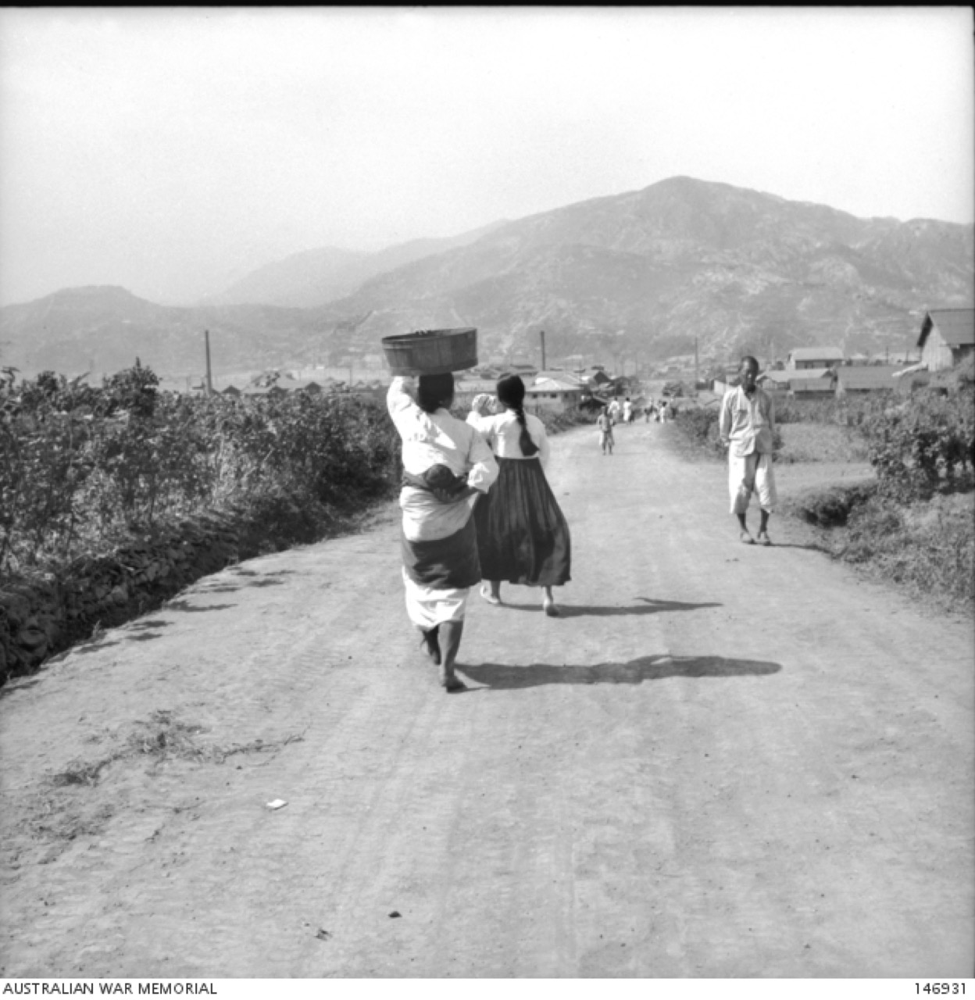
1953년 7월 정전 협정으로 포성은 멎었으나, 전쟁은 막대한 피해와 분단의 고착이라는 깊은 상처를 남겼다.
1953년 7월 27일 정전 협정이 체결되면서 3년여의 전쟁이 멈추었다. 그러나 이는 전쟁을 끝내는 평화 협정이 아니라 싸움을 잠시 멈추는 정전이었으므로, 한반도는 오늘날까지 정전 상태로 남아 있다. 군사 분계선을 따라 남북 각각 2㎞씩 물러난 비무장 지대(DMZ)가 설정되었다.
정전 직후 한·미 상호 방위 조약(1953)이 체결되어 미군이 한국에 주둔하게 되었다. 이 조약은 이후 한·미 동맹의 법적 토대가 되었으며, 안보를 미국에 크게 의존하는 구조를 낳았다.
전쟁의 피해는 참혹하였다. 수백만 명에 이르는 군인·민간인의 인적 피해와 이산가족이 생겼고, 산업 시설과 국토가 폐허가 되는 물적 피해를 입었다. 정치적으로는 남북 모두에서 분단이 고착되고 상대에 대한 적대감이 굳어졌으며, 이승만과 김일성은 각각 전쟁을 명분 삼아 독재 체제를 강화하였다.
앞의 28.2 6·25 전쟁의 전개에서 시작한 변화는 이 절을 거친다. 다음 단원인 29.1 이승만 정부의 장기 집권에서 그 흐름이 계속된다.
이승만 정부는 발췌 개헌과 사사오입 개헌으로 헌법을 고쳐 장기 집권을 꾀하였고, 반대 세력을 억누르며 독재를 강화하였다.
제헌 헌법의 간선제로는 재선이 어렵다고 판단한 이승만은, 6·25 전쟁 중이던 1952년 임시 수도 부산에서 계엄을 선포하고 야당 의원을 위협하는 부산 정치 파동을 일으켰다. 그 속에서 대통령 직선제를 핵심으로 한 발췌 개헌을 통과시켜 재선에 성공하였다.
이어 1954년에는 초대 대통령에 한해 중임 제한을 없애는 개헌안을 냈다. 표결에서 개헌 정족수에 한 표가 모자랐으나, 정부·여당은 반올림하면 정족수가 된다는 억지 논리로 통과를 선언한 사사오입 개헌을 강행하였다. 이로써 이승만의 3선 길이 열렸다.
독재가 심해지면서 탄압도 거세졌다. 대통령 후보로 위협적이던 조봉암을 간첩 혐의로 처형한 진보당 사건, 정권에 비판적인 경향신문 폐간, 국가 보안법 개정 등이 이어졌다. 그리고 1960년 3·15 부정선거가 자행되면서, 축적된 국민의 분노가 마침내 폭발하게 된다.
이승만 정부에서 장면 내각까지는 헌법 개정과 민주주의 위기가 반복된 시기다. 발췌 개헌·사사오입 개헌, 진보당 사건, 3·15 부정선거와 4·19 혁명을 인과로 잇고, 제2공화국의 내각 책임제와 양원제, 경제 개발 계획을 구분한다. 앞의 28.3 6·25 전쟁의 결과와 영향에서 시작한 변화는 이 절을 거친다. 다음 단원인 29.2 4·19 혁명에서 그 흐름이 계속된다.
3·15 부정선거에 맞선 시민과 학생의 저항은 1960년 4·19 혁명으로 번져, 마침내 이승만 정권을 무너뜨렸다.
1960년 3월 15일 정·부통령 선거에서 이승만 정부는 조직적인 3·15 부정선거를 저질렀다. 이에 항의하는 시위가 전국에서 일어났는데, 특히 마산에서는 시위 도중 실종되었던 학생 김주열의 시신이 최루탄에 맞은 참혹한 모습으로 바다에서 발견되면서 국민의 분노가 폭발하였다.
1960년 4월 19일 학생과 시민이 대규모로 거리에 나서 부정선거 규탄과 독재 타도를 외쳤다. 정부가 계엄을 선포하고 무력으로 진압에 나서 많은 사상자가 발생하였으나, 시위는 더욱 확산되었다. 4월 25일에는 대학교수단까지 “학생의 피에 보답하라”며 시국 선언 시위에 나서 이승만의 퇴진을 요구하였다.
거센 저항 앞에서 이승만은 대통령직에서 물러났다(하야). 이후 허정을 수반으로 한 과도 정부가 들어서 혼란을 수습하고, 내각 책임제와 양원제를 뼈대로 한 개헌을 단행하였다. 4·19 혁명은 학생과 시민의 힘으로 독재 정권을 무너뜨린, 우리 민주주의 발전의 중요한 이정표가 되었다.
앞의 29.1 이승만 정부의 장기 집권에서 시작한 변화는 이 절을 거친다. 다음 단원인 29.3 장면 내각에서 그 흐름이 계속된다.
개헌을 통해 내각 책임제의 제2공화국이 출범하였으나, 장면 내각은 개혁을 채 펼치기도 전에 5·16 군사 정변으로 붕괴하였다.
개정된 헌법에 따라 치러진 총선거로 제2공화국이 출범하였다. 새 정부는 내각 책임제와 양원제(민의원·참의원)를 채택하였으며, 실권을 쥔 국무총리에 장면, 상징적 국가 원수인 대통령에 윤보선이 선출되었다.
장면 내각은 독재의 잔재를 청산하고 경제를 발전시키고자 하였다. 경제 개발 5개년 계획을 준비하는 등 성장 정책을 구상하였으나, 정권 기반이 약하고 준비 기간이 짧아 실행에 옮기지는 못하였다.
4·19 혁명으로 열린 자유의 공간에서 통일 운동과 각종 시위가 활발히 일어났다. 학생과 혁신 세력은 남북 학생 회담을 제안하는 등 통일 논의를 이끌었으나, 사회는 다소 혼란한 양상을 보였다. 이러한 상황을 명분 삼아 1961년 5·16 군사 정변이 일어나면서, 장면 내각은 9개월 만에 무너지고 말았다.
앞의 29.2 4·19 혁명에서 시작한 변화는 이 절을 거친다. 다음 단원인 30.1 5·16과 제3공화국에서 그 흐름이 계속된다.
5·16 군사 정변으로 정권을 잡은 박정희 세력은 군정을 거쳐 제3공화국을 세우고 권력을 장악하였다.
1961년 5월 16일 박정희를 중심으로 한 일부 군인들이 5·16 군사 정변을 일으켜 장면 내각을 무너뜨리고 정권을 장악하였다. 이들은 국가 재건 최고 회의를 만들어 군정을 실시하고, 정보·수사 기관인 중앙정보부를 창설하여 권력의 기반으로 삼았다.
군정 세력은 반공을 국시로 내걸고 부정 축재 처리, 농어촌 고리채 정리 등 개혁을 표방하였다. 그러나 실질적으로는 정권을 이어 가려는 준비를 진행하여, 대통령제를 뼈대로 한 개헌을 단행하고 정당을 조직하였다.
1963년 군정을 끝내고 민정 이양을 하는 형식으로 대통령 선거가 치러졌다. 이 선거에서 박정희가 당선되어 제3공화국이 출범하였다. 제3공화국은 대통령 중심제를 채택하였으며, 이후 박정희 정부는 경제 개발과 한·일 국교 정상화 등 굵직한 정책을 추진하게 된다.
박정희 정부 시기는 권위주의 정치와 국가 주도 경제 개발이 병행되었다. 5·16 뒤 헌정 변화, 한일 국교 정상화·베트남 파병, 경제 개발 5개년 계획, 3선 개헌과 유신 헌법을 시간순으로 놓는다. 성장의 성과와 노동·농촌 문제, 민주화 운동을 함께 보아야 한다. 앞의 29.3 장면 내각에서 시작한 변화는 이 절을 거친다. 다음 단원인 30.2 한·일 국교 정상화와 베트남 파병에서 그 흐름이 계속된다.
박정희 정부는 경제 개발 자금을 마련하기 위해 한·일 국교 정상화와 베트남 파병을 추진하였으나, 그 과정에서 굴욕 외교 논란과 큰 반발을 불러왔다.
정부는 경제 개발에 필요한 자금과 미국의 요구를 배경으로 한·일 회담을 서둘렀다. 그러나 식민 지배에 대한 사과와 배상이 충분하지 않은 채 협상이 진행되자, 1964년 6·3 시위가 일어나 “굴욕 외교 반대”를 외치며 회담 중단을 요구하였다. 정부는 계엄을 선포해 시위를 진압하고, 이듬해 1965년 한·일 협정을 체결하였다. 협정에는 청구권 자금, 어업, 재일 교포의 법적 지위 등에 관한 내용이 담겼다.
또한 정부는 미국의 요청에 따라 베트남 전쟁에 국군을 파병하였다. 파병의 대가로 미국은 한국에 경제·군사 원조를 약속하는 브라운 각서를 제시하였다. 이를 통해 한국은 차관과 기술 도입, 미군의 군수 물자 조달 등 이른바 ‘베트남 특수’를 누리며 경제 개발의 자금을 확보하였다.
한·일 국교 정상화와 베트남 파병은 경제 개발의 밑천을 마련하는 데 기여하였다. 그러나 식민 지배 청산이 미흡한 협정과 젊은이들의 희생이라는 대가를 치렀다는 비판도 함께 남겼다.
앞의 30.1 5·16과 제3공화국에서 시작한 변화는 이 절을 거친다. 다음 단원인 30.3 경제 개발에서 그 흐름이 계속된다.
박정희 정부는 경제 개발 5개년 계획을 잇달아 추진하여 급속한 산업화를 이루었으나, 그 성장의 이면에는 노동자와 농촌의 희생이 있었다.
정부는 경제 개발 5개년 계획을 수출 주도 방식으로 추진하였다. 1960년대에는 값싼 노동력을 바탕으로 한 경공업(섬유·가발 등)을 육성하였고, 1970년대에는 중화학 공업(철강·조선·석유화학 등)으로 무게 중심을 옮겼다. 이 과정에서 경부 고속 국도(1970)가 개통되어 물류의 대동맥이 되었고, 외화를 벌기 위해 광부와 간호사가 서독으로 파견(파독)되기도 하였다.
농촌을 근대화하려는 새마을 운동(1970)도 시작되어 ‘근면·자조·협동’을 내걸고 농촌 환경 개선과 소득 증대를 꾀하였다. 그러나 도시와 공업 위주의 개발 속에 농민들은 이농하여 도시로 몰려드는 이촌향도 현상이 심화되었다.
고도성장은 노동자의 저임금·장시간 노동이라는 희생 위에서 이루어졌다. 1970년 평화시장의 재단사 전태일은 “근로 기준법을 준수하라”고 외치며 분신하여, 열악한 노동 현실을 세상에 알렸다. 또 1972년에는 기업의 사채 상환을 동결해 준 8·3 조치가 취해지는 등, 정부 주도 성장은 여러 부작용을 안고 있었다.
앞의 30.2 한·일 국교 정상화와 베트남 파병에서 시작한 변화는 이 절을 거친다. 다음 단원인 30.4 유신 체제에서 그 흐름이 계속된다.
박정희는 1972년 10월 유신을 선포하고 유신 헌법을 만들어, 영구 집권이 가능한 강력한 독재 체제를 구축하였다.
3선 개헌으로 이미 장기 집권의 길을 연 박정희는, 1972년 10월 유신을 선포하여 국회를 해산하고 정치 활동을 금지한 뒤 유신 헌법을 제정하였다. 명분으로는 냉전 완화와 남북 대화라는 상황 변화, 그리고 능률적 국정 운영이 내세워졌다.
유신 헌법은 대통령에게 거의 무제한의 권력을 부여하였다. 대통령은 통일 주체 국민 회의에서 간접 선거로 선출되어 사실상 종신 집권이 가능하였고, 국회의원 3분의 1을 대통령이 임명할 수 있었다. 또 대통령은 국민의 기본권을 정지시킬 수 있는 긴급 조치권과 국회 해산권까지 쥐어, 삼권 분립이 사실상 무너졌다.
유신 선포에 앞서 발표된 7·4 남북 공동 성명(1972)은 자주·평화·민족 대단결의 통일 원칙을 담아 남북 대화의 물꼬를 텄으나, 남북 모두 이를 독재 체제 강화의 명분으로 이용한 측면이 있었다. 유신 체제 아래에서 정부는 긴급 조치를 잇달아 발동하여 반대 운동을 강력히 탄압하였다.
앞의 30.3 경제 개발에서 시작한 변화는 이 절을 거친다. 다음 단원인 30.5 유신 반대 운동과 붕괴에서 그 흐름이 계속된다.
유신 체제에 맞선 저항이 이어지는 가운데, 부·마 항쟁과 10·26 사태를 거치며 유신 체제는 막을 내렸다.
유신에 대한 저항은 여러 방면에서 일어났다. 재야 인사와 종교계는 1976년 3·1 민주 구국 선언을 발표하여 유신 철폐와 민주 회복을 요구하였다. 정권은 이러한 저항을 긴급 조치로 억눌렀으며, 유력 야당 정치인 김대중이 일본에서 납치되는 사건(1973)도 발생하였다.
1970년대 말 경제가 어려워지고 사회 불만이 쌓이는 가운데, YH 무역 사건이 일어났다. 폐업에 항의하던 YH 무역 여성 노동자들이 야당인 신민당사에서 농성하다 강제 진압되면서, 노동 문제가 정치 문제로 번졌다.
이어 1979년 부산과 마산에서 부·마 항쟁이 일어나 유신 반대 시위가 격화되었다. 이를 진압하는 방법을 둘러싸고 정권 내부에서 갈등이 빚어졌고, 마침내 1979년 10월 26일 중앙정보부장 김재규가 박정희를 저격하는 10·26 사태가 일어났다. 박정희의 죽음으로 18년에 걸친 통치와 유신 체제가 끝났다.
앞의 30.4 유신 체제에서 시작한 변화는 이 절을 거친다. 다음 단원인 31.1 12·12와 서울의 봄에서 그 흐름이 계속된다.
10·26 이후 민주화의 기대가 부풀던 서울의 봄은, 신군부의 등장과 계엄 확대로 짓밟혔다.
박정희 사후 최규하가 대통령이 되고 유신 헌법의 개정 논의가 시작되면서, 국민은 민주 정부의 수립을 기대하였다. 그러나 전두환·노태우 등 군부 내 사조직 하나회를 중심으로 한 신군부가 권력을 노리고 있었다.
신군부는 1979년 12월 12일 12·12 군사 반란을 일으켜 군의 지휘권을 장악하였다. 이들은 계엄 사령관을 체포하고 군부를 자기편으로 재편하여, 사실상 실권을 손에 넣었다.
1980년 봄, 학생과 시민은 유신 헌법 폐지, 신군부 퇴진, 계엄 해제 등을 요구하며 대규모 시위를 벌였는데, 이 시기를 ‘서울의 봄’이라 부른다. 그러나 신군부는 이에 맞서 1980년 5월 17일 비상계엄을 전국으로 확대하고 정치 활동을 금지하며 주요 인사들을 체포하였다. 민주화의 열망은 다시 꺾이고, 이는 곧 광주에서의 저항으로 이어진다.
1979년 10·26 이후 민주화 기대는 12·12 군사 반란과 5·17 비상계엄 확대로 좌절되었고, 5·18 민주화 운동으로 이어졌다. 전두환 정부의 헌법·통치 방식과 6월 민주 항쟁의 배경, 6·29 선언, 직선제 개헌을 순서와 주체 중심으로 정리한다. 앞의 30.5 유신 반대 운동과 붕괴에서 시작한 변화는 이 절을 거친다. 다음 단원인 31.2 5·18 민주화 운동에서 그 흐름이 계속된다.
비상계엄 확대에 맞서 1980년 5월 광주에서 일어난 민주화 운동은, 신군부의 무력 진압으로 큰 희생을 치렀으나 이후 민주화 운동의 밑거름이 되었다.
1980년 5월 18일, 광주에서 비상계엄 확대와 신군부에 반대하는 학생·시민의 시위가 시작되었다. 신군부는 계엄군(공수 부대)을 투입하여 시위대를 무자비하게 진압하였고, 이 과정에서 많은 사상자가 발생하였다.
계엄군의 폭력에 맞서 광주 시민들은 스스로 무장한 시민군을 조직하여 저항하였다. 시민들은 자치적으로 질서를 유지하며 계엄군에 맞섰으나, 광주는 외부와 고립되었고 신군부는 끝내 계엄군을 다시 투입하여 무력으로 진압하였다.
5·18 민주화 운동은 신군부의 폭력적 권력 장악에 정면으로 맞선 저항으로, 1980년대 민주화 운동의 정신적 토대가 되었다. 그 진실을 담은 기록물은 유네스코 세계 기록 유산으로 등재되어, 민주주의와 인권의 소중함을 세계에 전하는 자료로 인정받고 있다.
앞의 31.1 12·12와 서울의 봄에서 시작한 변화는 이 절을 거친다. 다음 단원인 31.3 전두환 정부에서 그 흐름이 계속된다.
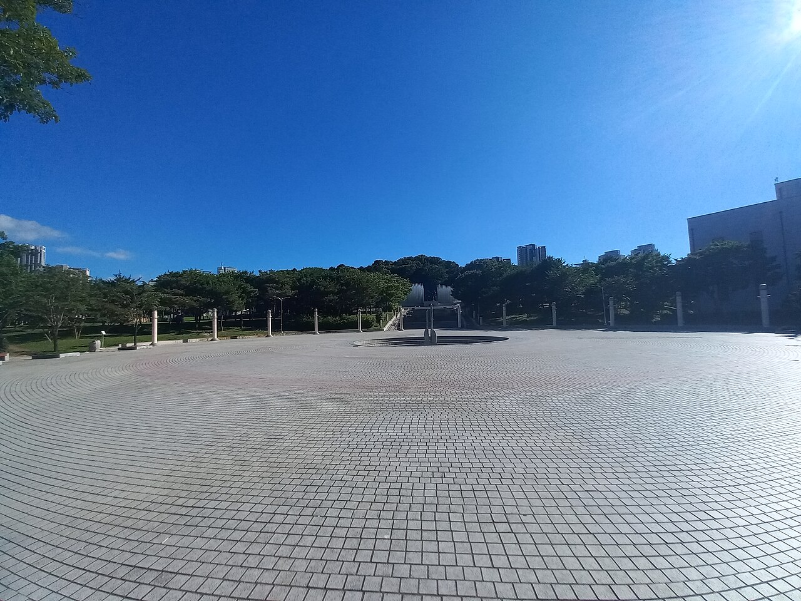
신군부는 5·18을 진압한 뒤 권력을 완전히 장악하여 제5공화국을 세웠고, 강압 통치와 유화 정책을 함께 펴며 정권을 유지하였다.
신군부는 국가 보위 비상 대책 위원회(국보위)를 만들어 정치·사회 전반을 장악하였다. 전두환은 통일 주체 국민 회의에서 대통령에 선출된 뒤, 헌법을 고쳐 대통령 7년 단임·간접 선거를 뼈대로 한 제5공화국을 출범시켰다.
전두환 정부는 강압 통치로 사회를 통제하였다. 사회 정화를 명분으로 삼청 교육대를 운영하였고, 언론을 강제로 통합하는 언론 통폐합과 기사 내용을 통제하는 보도 지침으로 여론을 억눌렀다.
한편으로는 국민의 불만을 무마하기 위한 유화 정책도 폈다. 야간 통행금지 해제, 중·고등학생 교복 자율화, 프로 야구 출범 등이 그것이다. 이 시기 경제는 저달러·저유가·저금리의 3저 호황에 힘입어 성장하였다. 그러나 1987년 4·13 호헌 조치로 대통령 직선제 개헌 요구를 거부하면서, 정권은 거센 저항에 부딪히게 된다.
앞의 31.2 5·18 민주화 운동에서 시작한 변화는 이 절을 거친다. 다음 단원인 31.4 6월 민주 항쟁에서 그 흐름이 계속된다.
1987년 6월 민주 항쟁은 전국적 시민 항쟁으로 번져, 마침내 대통령 직선제 개헌을 이끌어 낸 우리 민주화의 결정적 전환점이 되었다.
항쟁의 불씨는 박종철 고문치사 사건이었다. 대학생 박종철이 경찰의 물고문으로 사망하였는데, 정부가 이를 은폐·축소하려 한 사실이 드러나 국민의 분노가 커졌다. 여기에 전두환 정부가 직선제 개헌 요구를 거부하는 4·13 호헌 조치를 발표하자, 저항은 폭발 직전에 이르렀다.
1987년 6월 10일, 시민과 학생은 “호헌 철폐, 독재 타도”를 외치며 6·10 국민 대회를 열었다. 이 무렵 시위 도중 대학생 이한열이 최루탄에 맞아 쓰러진 사실이 알려지면서 항쟁은 더욱 거세졌고, 넥타이 부대라 불린 직장인까지 가세하여 전국적인 시민 항쟁으로 확대되었다.
거센 저항 앞에서 결국 여당 대표 노태우가 6·29 선언을 발표하여 대통령 직선제 수용 등 국민의 요구를 받아들였다. 이에 따라 대통령을 국민이 직접 뽑는 5년 단임제를 핵심으로 한 제9차 개헌(현행 헌법)이 이루어졌다. 6월 민주 항쟁은 시민의 힘으로 절차적 민주주의를 확립한 역사적 사건이었다.
앞의 31.3 전두환 정부에서 시작한 변화는 이 절을 거친다. 다음 단원인 32.1 노태우 정부에서 그 흐름이 계속된다.
“여야 합의하에 조속히 대통령 직선제로 개헌하고, 새 헌법에 의한 대통령 선거를 통해 1988년 2월 평화적으로 정부를 이양한다.”
6·29 선언(1987)1987년 6월 민주항쟁과 6·29 선언으로 대통령 직선제가 회복되면서 대한민국은 절차적 민주주의의 틀을 갖추었다. 이후 평화적 정권 교체가 거듭 이루어졌고, 지방자치가 부활했으며, 국회 의결과 헌법재판소 결정이라는 헌법 절차가 정치 갈등을 매듭짓는 통로로 자리 잡았다. 이 부는 노태우 정부에서 이재명 정부에 이르는 아홉 정부의 전개를 사실과 날짜 중심으로 살핀다.
같은 시기 한국은 외환위기라는 경제적 시련을 겪고 이를 극복했으며, 세 차례의 남북정상회담을 통해 화해와 긴장이 교차하는 남북 관계를 이어 갔다. 2000년대 이후에는 촛불집회와 두 차례의 대통령 파면이라는 헌정사의 국면을 지나면서도 제도의 연속성이 유지되었다. 저출생·고령화와 양극화의 과제 속에서 K-컬처가 세계로 확산되는 오늘에 이른다.
직선제 개헌과 평화적 정권 교체, 지방자치 부활.
IMF 구제금융을 받고 구조조정으로 조기 상환하다.
6·15, 10·4, 판문점 선언으로 남북 대화가 이어지다.
국회 탄핵소추와 헌재 파면 결정으로 정권이 교체되다.
팬데믹 대응과 사회·경제 구조의 변화를 겪다.
비상계엄과 두 번째 대통령 파면, 조기 대선을 지나다.
1987년 개정된 제9차 헌법에 따른 직선제로 출범한 노태우 정부는, 냉전이 저물던 국제 정세 속에서 북방외교를 펼치며 사회주의권과 관계를 텄다.
1987년 12월 대통령 직접선거로 선출된 노태우 대통령은 이듬해 2월 취임했다. 1988년 서울에서 제24회 하계 올림픽이 개최되어 동·서 진영이 함께 참가했다. 정부는 사회주의 국가와의 관계 개선을 목표로 북방외교를 추진하여 소련(1990)과 중국(1992) 등과 잇달아 국교를 수립했다.
남북 관계에서도 진전이 있었다. 1991년 남과 북은 유엔에 동시 가입했고, 같은 해 말 상호 체제 인정과 불가침을 담은 남북기본합의서를 채택했다. 이어 1992년에는 한반도 비핵화 공동선언이 발효되었다. 대내적으로는 1991년 지방의회 선거를 실시하여 지방자치가 부분적으로 부활했다.
정치적으로는 1988년 총선에서 여소야대 국면이 형성되자, 1990년 여당인 민주정의당이 통일민주당·신민주공화당과 합쳐 거대 여당인 민주자유당을 만드는 3당 합당이 이루어졌다. 이로써 국회의 세력 구도가 재편되었다.
1987년 이후 민주화는 직선제 정착, 지방 자치 부활, 문민 통제 강화와 평화적 정권 교체로 제도화되었다. 노태우 정부의 북방 외교, 김영삼 정부의 개혁, 김대중 정부의 외환 위기 극복과 대북 정책을 국내 정치·경제·남북 관계로 나누어 비교한다. 앞의 31.4 6월 민주 항쟁에서 시작한 변화는 이 절을 거친다. 다음 단원인 32.2 김영삼 정부에서 그 흐름이 계속된다.
1993년 출범한 김영삼 정부는 오랜 군 출신 대통령 시대를 마감하며 문민정부를 표방했고, 여러 개혁 조치를 추진했으나 임기 말 외환위기를 맞았다.
정부는 1993년 대통령 긴급명령으로 금융실명제를 전격 실시하여 금융 거래에 실명 사용을 의무화했다. 1994년에는 부동산실명제를 도입했으며, 1995년 지방자치단체장 선거까지 치러 지방자치를 전면 실시했다.
역사바로세우기를 내세워 1995년 옛 조선총독부 건물을 철거했고, 12·12와 5·18 관련 특별법을 제정하여 전두환·노태우 두 전직 대통령을 기소·재판에 회부했다. 1996년에는 선진국 협의체인 경제협력개발기구(OECD)에 가입했다.
그러나 1997년 대기업의 연쇄 부도와 외화 부족이 겹치면서 외환위기가 발생했다. 정부는 그해 12월 국제통화기금(IMF)에 구제금융을 요청했고, 강도 높은 구조조정을 조건으로 자금을 지원받았다. 위기 극복의 과제는 다음 정부로 넘어갔다.
앞의 32.1 노태우 정부에서 시작한 변화는 이 절을 거친다. 다음 단원인 32.3 김대중 정부에서 그 흐름이 계속된다.
1998년 출범한 김대중 정부는 선거를 통한 첫 여야 정권 교체로 성립했으며, 외환위기 극복과 남북 화해를 두 축으로 삼았다.
정부는 외환위기 극복에 힘을 쏟아 기업·금융·공공·노동 부문의 구조조정을 추진했고, 국민들의 금 모으기 운동이 전개되었다. 그 결과 2001년 IMF 지원금을 예정보다 앞당겨 상환했다. 한편 국민기초생활보장제도를 도입하고 국가인권위원회를 설립하는 등 사회 안전망과 인권 제도를 정비했다.
대북 정책으로는 화해와 협력을 앞세운 햇볕정책을 폈다. 2000년 6월 평양에서 제1차 남북정상회담이 열려 6·15 남북공동선언이 발표되었고, 이후 이산가족 상봉과 개성공단 사업 등이 추진되었다. 이러한 남북 화해와 민주화·인권에 대한 기여로 김대중 대통령은 노벨평화상을 받았다(2000).
2002년에는 한국과 일본이 한·일 월드컵을 공동 개최하여 한국 대표팀이 4강에 올랐다. 이 대회는 위기를 넘어선 한국 사회의 활력을 보여 준 계기가 되었다.
앞의 32.2 김영삼 정부에서 시작한 변화는 이 절을 거친다. 다음 단원인 33.1 노무현 정부에서 그 흐름이 계속된다.
남과 북은 나라의 통일 문제를 그 주인인 우리 민족끼리 서로 힘을 합쳐 자주적으로 해결해 나가기로 하였다. 남측의 연합제 안과 북측의 낮은 단계의 연방제 안이 서로 공통성이 있다고 인정하고, 앞으로 이 방향에서 통일을 지향시켜 나가기로 하였다.
「6·15 남북공동선언」(2000)2003년 출범한 노무현 정부는 참여정부를 표방하며 권위주의 청산과 지방 균형 발전, 과거사 정리 등을 추진했다.
정부는 수도권 집중을 완화하기 위해 행정중심복합도시(세종) 건설을 추진했다. 2004년 신행정수도 이전을 규정한 법률에 대해 헌법재판소가 위헌 결정을 내리자, 정부는 관련 부처를 옮기는 방식으로 계획을 이어 갔다. 대외적으로는 2007년 한·미 자유무역협정(FTA)을 체결했다(발효는 2012년).
남북 관계에서는 2007년 10월 평양에서 제2차 남북정상회담이 열려 10·4 남북공동선언이 발표되었다. 이 선언은 6·15 선언의 이행과 서해 평화협력 등을 담았다. 또 진실·화해를 위한 과거사정리위원회 등을 통해 근현대사의 인권 침해와 의문 사건을 조사하는 과거사 정리가 이루어졌다.
2004년 3월 국회는 대통령에 대한 탄핵소추안을 의결했다. 그러나 같은 해 5월 헌법재판소가 이를 기각하여 대통령은 직무에 복귀했다. 이 사안은 헌법상 탄핵 절차가 작동한 사례로 기록된다.
2000년대 정부사는 정치 사건만이 아니라 경제·사회 정책과 남북 관계의 변화를 함께 본다. 노무현 정부의 지방 분권과 남북 정상 회담, 이명박 정부의 경제 정책, 박근혜 정부의 탄핵 과정을 헌법 절차와 주요 사건 중심으로 객관적으로 정리한다. 앞의 32.3 김대중 정부에서 시작한 변화는 이 절을 거친다. 다음 단원인 33.2 이명박 정부에서 그 흐름이 계속된다.
2008년 출범한 이명박 정부는 실용과 경제 성장을 강조했으며, 세계금융위기 대응과 대규모 국책 사업, 남북 관계의 경색이 겹친 시기였다.
출범 직후인 2008년 세계금융위기가 닥치자 정부는 재정 확대와 통화 정책으로 대응했다. 2010년에는 주요 20개국 정상들이 모이는 G20 서울 정상회의가 열려 한국이 국제 경제 논의의 무대를 마련했다.
대표적 국책 사업으로 한강·낙동강·금강·영산강을 정비하는 4대강 사업이 추진되었다. 이 사업은 홍수 예방과 수자원 확보를 목표로 내세웠으나, 환경 영향과 사업 성격을 둘러싸고 논의가 이어졌다.
남북 관계는 경색되었다. 2008년 금강산 관광객 피격 사건으로 금강산 관광이 중단되었고, 2010년에는 서해에서 천안함 사건과 연평도 포격 사건이 잇달아 발생하면서 긴장이 높아졌다.
앞의 33.1 노무현 정부에서 시작한 변화는 이 절을 거친다. 다음 단원인 33.3 박근혜 정부에서 그 흐름이 계속된다.
2013년 출범한 박근혜 정부는 대한민국 최초의 여성 대통령 정부였으며, 임기 중 국회 탄핵소추와 헌법재판소 파면 결정이라는 헌정사의 국면을 맞았다.
2014년 4월 인천에서 제주로 향하던 여객선이 침몰하는 세월호 참사가 발생하여 다수의 인명 피해가 났다. 이 사고는 재난 대응 체계에 대한 사회적 논의를 불러왔다.
2016년 하반기 대통령 측근의 국정 개입 등을 둘러싼 국정농단 사건이 제기되면서, 전국에서 대규모 촛불집회가 이어졌다. 2016년 12월 9일 국회는 대통령 탄핵소추안을 가결하여 대통령의 직무가 정지되었다.
이후 헌법재판소의 심리를 거쳐 2017년 3월 10일 헌법재판소가 파면을 결정했다. 이는 헌정사상 최초의 대통령 파면으로, 탄핵소추와 헌법재판소 결정이라는 헌법 절차가 완결된 사례다. 이에 따라 60일 이내에 조기 대통령 선거를 치르게 되었다.
앞의 33.2 이명박 정부에서 시작한 변화는 이 절을 거친다. 다음 단원인 34.1 문재인 정부에서 그 흐름이 계속된다.
2017년 파면에 따른 조기 대통령 선거로 출범한 문재인 정부는, 세 차례의 남북정상회담과 코로나19 대응이 겹친 시기를 거쳤다.
2017년 5월 조기 대선을 통해 문재인 대통령이 취임했다. 이례적으로 인수위 없이 곧바로 정부가 출범했다. 경제 정책으로는 가계 소득 증대를 통한 성장을 내세운 소득주도성장과 최저임금 인상 등을 추진했다.
남북 관계에서는 2018년 한 해에 세 차례의 남북정상회담이 열렸다. 4월 판문점에서 판문점 선언이 발표되었고, 이러한 흐름은 북·미 정상회담(2018 싱가포르, 2019 하노이)의 배경이 되었다. 남북·북미 대화가 이어졌으나 이후 비핵화 협상은 교착되었다.
2020년 초부터 코로나19 팬데믹이 확산되자 정부는 방역과 진단검사, 백신 접종 등으로 대응했으며, 팬데믹은 이후 수년간 사회·경제 전반에 큰 영향을 미쳤다.
최근사는 아직 평가가 진행 중이므로 사실·날짜·헌법 절차를 중심으로 다룬다. 정부별 정책을 단정적으로 평가하기보다 선거, 국회 의결, 헌법재판소 결정, 국제 관계와 사회 변화를 구분한다. 시험에서는 확정된 제도와 사건의 순서를 중심으로 확인하는 것이 안전하다. 앞의 33.3 박근혜 정부에서 시작한 변화는 이 절을 거친다. 다음 단원인 34.2 윤석열 정부에서 그 흐름이 계속된다.
2022년 대통령 선거로 출범한 윤석열 정부는, 여소야대 국회 구도 속에서 국정을 운영했다.
검찰총장을 지낸 윤석열 후보가 2022년 3월 대선에서 당선되어 그해 5월 취임했다. 국회는 야당이 다수를 차지한 여소야대 구도였고, 정부와 국회 다수당 사이의 입장 차이 속에서 여러 법안을 둘러싼 대립이 이어졌다.
2022년 10월 서울 이태원에서 다수의 인명 피해가 발생한 이태원 참사가 일어나, 재난 안전 관리에 대한 사회적 논의가 다시 제기되었다.
2024년에는 의과대학 정원 증원 방침을 두고 정부와 의료계가 대립하면서, 전공의 이탈 등 의료계 갈등이 이어졌다. 이 밖에 물가와 부동산 등 경제 현안이 국정의 주요 과제가 되었다.
앞의 34.1 문재인 정부에서 시작한 변화는 이 절을 거친다. 다음 단원인 34.3 12·3 비상계엄과 탄핵에서 그 흐름이 계속된다.
2024년 12월, 비상계엄의 선포와 해제, 그리고 국회 탄핵소추와 헌법재판소 파면 결정이 이어졌다. 여기서는 헌법 절차를 중심으로 사실을 정리한다.
2024년 12월 3일 밤 대통령이 비상계엄을 선포했다. 헌법은 계엄이 선포되더라도 국회가 재적의원 과반수 찬성으로 해제를 요구하면 대통령이 이를 해제하도록 규정한다. 같은 날 국회는 계엄 해제 요구 결의안을 의결했고, 이에 따라 계엄은 선포 몇 시간 만에 해제되었다.
이후 2024년 12월 14일 국회는 대통령 탄핵소추안을 가결했다. 헌법에 따라 탄핵소추가 의결되면 대통령의 권한 행사가 정지되고, 국무총리가 권한대행을 맡는다. 탄핵 심판은 헌법재판소로 넘어갔다.
헌법재판소는 심리를 거쳐 2025년 4월 4일 대통령 파면을 결정했다. 이는 2017년에 이은 두 번째 대통령 파면으로, 헌법상 탄핵소추(국회)와 파면 결정(헌법재판소)의 절차가 다시 완결된 사례다. 파면에 따라 60일 이내에 조기 대통령 선거를 치르게 되었다.
앞의 34.2 윤석열 정부에서 시작한 변화는 이 절을 거친다. 다음 단원인 34.4 2025년 조기 대선과 이재명 정부에서 그 흐름이 계속된다.
2025년 4월의 파면 결정에 따라 조기 대통령 선거가 치러졌고, 그 결과로 이재명 정부가 출범했다.
헌법은 대통령이 궐위된 때 60일 이내에 후임자를 선거하도록 규정한다. 이에 따라 2025년 6월 3일 조기 대통령 선거가 실시되었다. 선거 기간에는 대통령 권한대행 체제가 국정을 유지했다.
이 선거에서 이재명 후보가 당선되었다. 조기 대선의 특성상 당선인은 별도의 인수위 기간 없이 2025년 6월 곧바로 취임하여 정부를 출범시켰다.
이재명 정부는 파면과 조기 대선이라는 헌정 절차를 거쳐 성립한 정부로, 여기서는 성립 과정을 사실 중심으로만 기술한다. 출범 이후의 정책 평가는 앞으로 역사적 검토의 대상이 될 것이다.
앞의 34.3 12·3 비상계엄과 탄핵에서 시작한 변화는 이 절을 거친다. 다음 단원인 34.5 오늘의 한국에서 그 흐름이 계속된다.
오늘의 한국은 저출생·고령화와 양극화라는 구조적 과제를 안는 한편, K-컬처의 세계적 확산이라는 새로운 국면을 맞고 있다.
한국의 합계출산율은 세계적으로 낮은 수준으로, 저출생·고령화가 빠르게 진행되고 있다. 인구가 수도권으로 집중되면서 지방의 여러 지역이 인구 감소에 직면하는 지역 소멸 문제가 제기되고, 소득과 자산의 격차에 따른 양극화도 사회적 과제로 남아 있다.
문화 영역에서는 한국의 대중문화가 세계로 확산되었다. K팝 그룹이 세계 음악 시장에서 성과를 냈고, 영화 「기생충」이 아카데미 작품상을 받았으며(2020), 드라마와 웹툰 등 K-컬처 콘텐츠가 여러 나라에서 널리 향유되고 있다.
이러한 과제와 성취는 분리되지 않는다. 민주주의의 제도적 성숙, 경제와 문화의 국제적 위상, 그리고 인구와 격차의 과제를 함께 마주하는 것이 한국사의 현재적 과제다.
앞의 34.4 2025년 조기 대선과 이재명 정부에서 시작한 변화는 이 절을 거친다. 다음 단원인 35.1 북한 체제의 형성과 변천에서 그 흐름이 계속된다.
북한은 김일성 유일체제의 형성 이후 3대 세습으로 권력을 이어 왔으며, 계획경제의 어려움이 오래 지속되었다.
정권 수립 이후 김일성은 여러 정치 세력을 정리하고 유일체제를 구축했으며, 주체사상을 통치 이념으로 내세웠다. 1972년 사회주의 헌법으로 국가주석제를 도입하는 등 권력을 집중시켰다.
김정일은 후계자로 지명되어 권력을 이어받았고, 1990년대 선군정치를 내세워 군을 앞세운 통치를 폈다. 이 시기 북한은 사회주의권 붕괴와 자연재해가 겹쳐 심각한 경제난과 식량난을 겪었다.
2011년 김정일 사후 김정은이 권력을 승계하여 3대 세습이 이루어졌다. 북한은 부분적 시장 요소를 용인하면서도 계획경제의 틀을 유지했으나, 자원 부족과 대외 제재 속에서 경제적 어려움이 이어지고 있다.
북한사와 남북 관계는 북한 내부의 권력 구조 변화와 국제 냉전, 남북 대화와 군사 긴장이 교차한 과정이다. 남북 기본 합의서·정상 회담 선언의 시기와 정부를 구분하고, 북핵 문제는 주요 합의와 제재·협상의 흐름을 사실 중심으로 정리한다. 앞의 34.5 오늘의 한국에서 시작한 변화는 이 절을 거친다. 다음 단원인 35.2 남북 관계의 흐름에서 그 흐름이 계속된다.
남북 관계는 여러 공동성명과 선언을 통해 대화의 원칙을 세우고, 이산가족·경제협력 등 교류를 이어 오면서 화해와 긴장이 교차해 왔다.
대화의 출발점은 1972년 7·4 남북공동성명이다. 이 성명은 통일의 원칙으로 자주·평화·민족대단결을 제시했다. 이후 1991년 남북기본합의서에서 상호 체제를 인정하고 불가침을 약속했다.
2000년 6·15 남북공동선언과 2007년 10·4 선언은 두 차례의 정상회담에서 나온 문서로, 화해와 협력의 구체적 방향을 담았다. 2018년에는 판문점 선언이 발표되었다.
이러한 합의를 바탕으로 이산가족 상봉이 이루어지고, 개성공단 가동과 금강산 관광 같은 경제·인적 교류가 진행되었다. 다만 이들 사업은 남북 관계의 부침에 따라 중단과 재개를 반복했다.
앞의 35.1 북한 체제의 형성과 변천에서 시작한 변화는 이 절을 거친다. 다음 단원인 35.3 북핵 문제와 국제 관계에서 그 흐름이 계속된다.
첫째, 통일은 외세에 의존하거나 외세의 간섭을 받음이 없이 자주적으로 해결하여야 한다. 둘째, 통일은 서로 상대방을 반대하는 무력행사에 의거하지 않고 평화적 방법으로 실현하여야 한다. 셋째, 사상과 이념·제도의 차이를 초월하여 하나의 민족으로서 민족적 대단결을 도모하여야 한다.
「7·4 남북공동성명」(1972)북한의 핵 개발 문제는 협상과 제재가 반복되는 가운데 동북아시아 국제 관계의 핵심 현안으로 이어져 왔다.
1993년 북한이 핵확산금지조약(NPT) 탈퇴를 선언하면서 제1차 북핵 위기가 발생했고, 1994년 미국과 북한의 제네바 합의로 일단 봉합되었다. 그러나 2002년 다시 위기가 불거졌다.
이를 풀기 위해 남·북·미·중·일·러가 참여하는 6자회담이 열려 2005년 9·19 공동성명 등의 합의가 나왔다. 그럼에도 이행은 순조롭지 않았고, 북한은 2006년 이후 여러 차례 핵실험과 미사일 발사를 이어 갔다.
국제사회는 유엔 안전보장이사회 결의 등으로 대북 제재를 강화했고, 한편으로 2018~2019년 남북·북미 정상회담을 통한 협상이 시도되었다. 제재와 협상의 반복은 오늘날에도 이어지는 과제다.
앞의 35.2 남북 관계의 흐름에서 이어진 흐름을 이 절에서 마무리한다.
본문이 시대의 흐름을 따라 세로로 내려왔다면, 이 부록은 그 흐름을 가로로 꿰뚫는다. 세시 풍속·지역사·유네스코 유산·토지 제도처럼 여러 시대에 걸쳐 반복해 출제되는 주제들을 한자리에 모아, 시험 직전에 빠르게 훑을 수 있도록 정리했다. 각 절은 서술보다 정리와 나열에 무게를 두었다.
한국사능력검정시험 심화(1급)는 단순 암기보다 주제별 연결을 묻는다. 제도의 변천, 인물의 사상, 조약의 성격을 계통으로 파악해 두면 낯선 자료가 나와도 흔들리지 않는다. 여기 실린 열세 개 특강과 실전 확인 문제를 본문과 오가며 활용하면, 흩어져 있던 지식이 하나의 그물로 엮인다.
세시 풍속은 절기와 명절에 맞추어 되풀이된 생활 문화다. 자료로 제시된 시기·음식·놀이를 보고 어떤 명절인지 가려내는 문제가 꾸준히 출제된다.
특정 지역을 제시하고 그곳에서 일어난 사건을 시대순으로 묻는 지역사 문제는 심화 시험의 단골이다. 도시마다 대표 사건을 한 줄로 엮어 기억하자.
유네스코 등재 유산은 사진 자료와 함께 종류를 구별하는 문제로 나온다. 세계 유산(유형)·세계 기록 유산(문서)·인류 무형 문화유산(전통 행위)의 갈래를 헷갈리지 말자.
석굴암·불국사, 해인사 장경판전, 종묘, 창덕궁, 수원 화성, 경주 역사 유적 지구, 고창·화순·강화 고인돌 유적, 조선 왕릉, 역사 마을(하회·양동), 남한산성, 백제 역사 유적 지구, 산사(한국의 산지 승원), 한국의 서원, 가야 고분군(2023). 자연 유산으로 제주 화산섬과 용암동굴, 한국의 갯벌이 있다.
훈민정음(해례본)·조선왕조실록, 직지심체요절, 승정원일기, 조선 왕조 의궤, 해인사 대장경판(팔만대장경), 동의보감, 일성록, 난중일기, 5·18 민주화 운동 기록물, 새마을 운동 기록물, 국채 보상 운동 기록물, 조선 통신사 기록물, 4·19 혁명 기록물, 동학 농민 혁명 기록물 등.
종묘 제례 및 종묘 제례악, 판소리, 강릉 단오제, 강강술래, 남사당놀이, 영산재, 처용무, 가곡, 대목장, 매사냥, 택견, 줄타기, 한산 모시짜기, 아리랑, 김장 문화, 농악, 줄다리기, 제주 해녀 문화, 씨름(남북 공동 등재), 연등회, 한국의 탈춤, 장 담그기(2024).
토지 제도와 수취 제도는 변천 순서와 각 제도의 지급 대상·과세 기준을 묻는다. 아래 흐름을 화살표로 외우면 순서 배열 문제에 강해진다.
후삼국 통일 공신에게 논공행상으로 지급.
전지·시지 지급. 시정(976)→개정(998, 관직 기준)→경정(1076, 현직).
신진 사대부의 경제 기반. 경기 토지의 수조권을 전·현직에 지급.
수신전·휼양전 폐지, 현직 관리에게만 지급.
국가가 조세를 거둬 관리에게 지급, 수조권 남용 방지.
수조권 지급 소멸, 관리는 녹봉만 받음.
삼국~고려의 기본 틀은 조(租)·용(庸)·조(調), 곧 토지세·역·공물이었다. 조선 후기에는 이 셋이 차례로 개혁된다.
인물의 업적·저서·사상을 짝지어 묻는 문제가 많다. 사상가는 종파와 대표 저서를, 실학자는 개혁론과 저서를 함께 외우자.
왕의 업적을 순서와 함께 묶으면 정책 배열 문제에 대비할 수 있다. 각 나라의 체제 정비·전성기 군주를 중심으로 계보를 외우자.
태조(훈요 10조·사심관·기인)→광종(노비안검법·과거제·칭제건원)→성종(최승로 시무 28조·2성 6부)→현종(초조대장경)→숙종(주전도감)→공민왕(반원 자주·전민변정도감).
태조(건국)→태종(6조 직계제·호패법)→세종(집현전·훈민정음·4군 6진)→세조(직전법)→성종(경국대전 완성·홍문관)→영조(탕평·균역법)→정조(규장각·수원 화성)→고종(대한 제국).
근현대사는 조약의 성격과 선언의 주체·내용을 정확히 구분해야 한다. 불평등 조항과 발표 시기를 함께 기억하자.
선사부터 오늘까지, 반드시 짚어야 할 핵심 연대를 한눈에 모았다. 세기와 사건을 연결해 시대 감각을 완성하자.
뗀석기·이동 생활, 동굴과 막집.
간석기·빗살무늬 토기, 농경과 정착.
단군왕검, 우리 역사 최초의 국가(『삼국유사』).
한 무제의 침입, 한 군현 설치.
나·당 전쟁 승리로 통일 완성.
대조영, 남북국 시대 개막.
왕건, 936년 후삼국 통일.
강감찬이 거란의 3차 침입을 격퇴.
무신 집권기의 시작.
대몽 항쟁과 팔만대장경 조성.
이성계, 고려 멸망과 새 왕조 개창.
세종, 독자 문자 창제.
7년 전쟁, 이순신·의병의 활약.
삼전도 항복, 청과 군신 관계.
최초의 근대적 불평등 조약.
반봉건·반외세와 근대적 개혁.
고종 황제 즉위, 광무개혁.
한일 병합, 일제 강점기 시작.
전 민족적 만세 운동과 대한민국 임시 정부.
일제 패망과 해방, 분단의 시작.
제헌 국회와 초대 정부 출범.
동족상잔, 1953년 정전 협정.
부정 선거에 맞선 시민 혁명, 이후 6월 민주 항쟁(1987)으로 이어짐.
첫 정상 회담과 6·15 남북 공동 선언.
2024년 12월 비상계엄 선포와 국회의 해제 의결, 탄핵 소추를 거쳐 2025년 헌법재판소가 대통령을 파면하고 대통령 선거가 치러졌다.
1급의 오답은 대개 시대는 맞지만 주체가 다른 선택지다. 비슷한 왕·제도·단체를 한 행씩 대조해 ‘누가, 언제, 무엇을’ 했는지 분리하자.
가로로 밀어 전체 표 보기 →
| 국가 | 체제 정비 | 영토 확장 | 자주 나오는 함정 |
|---|---|---|---|
| 고구려 | 소수림왕: 불교 수용·태학·율령 | 광개토대왕: 영락·신라 구원 장수왕: 평양 천도·남진 | 진대법은 고국천왕 |
| 백제 | 고이왕: 6좌평·16관등·관복 | 근초고왕: 마한 정복·평양성 공격·해외 교류 | 22담로는 무령왕 |
| 신라 | 법흥왕: 율령·불교 공인·금관가야 병합 | 진흥왕: 한강·대가야·순수비·화랑도 정비 | 우산국 복속은 지증왕 |
| 발해 | 문왕: 3성 6부·상경 천도·신라도 | 무왕: 장문휴의 산둥 공격 선왕: 해동성국·최대 영토 | 5경 15부 62주는 선왕 |
가로로 밀어 전체 표 보기 →
| 인물 | 핵심 정책 | 함께 묶을 자료 | 혼동 금지 |
|---|---|---|---|
| 태조 | 훈요 10조·사심관·기인·북진 | 정계·계백료서, 서경 중시 | 과거제는 광종 |
| 광종 | 노비안검법·과거제·공복 제정 | 칭제건원, 왕권 강화 | 시무 28조는 성종 |
| 성종 | 2성 6부·12목·지방관 파견 | 최승로, 유교 정치 | 국자감 정비는 예종 |
| 공민왕 | 정동행성 이문소 폐지·쌍성총관부 수복 | 전민변정도감·신돈 | 교정도감은 최충헌 |
가로로 밀어 전체 표 보기 →
| 구분 | 제도 | 내용 | 판별어 |
|---|---|---|---|
| 토지 지급 | 과전법 → 직전법 → 관수관급제 | 전·현직 관리 → 현직 관리 → 국가가 수조권 대행 | 녹봉만 지급하면 직전법 폐지 |
| 전세 | 공법 | 전분 6등·연분 9등, 최대 20두에서 최저 4두 | 토지 비옥도와 풍흉 |
| 공납 | 대동법 | 토지 결수에 따라 쌀·동전·포 납부, 공인 성장 | 광해군 경기 시행, 숙종 전국 확대 |
| 군역 | 균역법 | 군포 2필을 1필로 감면, 결작·선무군관포 보충 | 영조, 군역 부담 완화 |
가로로 밀어 전체 표 보기 →
| 단체 | 시기·지역 | 대표 활동 | 결정적 단서 |
|---|---|---|---|
| 신민회 | 1907, 국내 비밀 결사 | 대성학교·오산학교, 자기회사·태극서관, 독립군 기지 | 공화정 지향·105인 사건 |
| 의열단 | 1919, 만주 지린 | 일제 기관 파괴·요인 암살 | 김원봉·조선 혁명 선언 |
| 한인 애국단 | 1931, 상하이 | 이봉창 도쿄 의거·윤봉길 훙커우 공원 의거 | 김구·임시 정부 침체 극복 |
| 조선어 학회 | 1931, 국내 | 한글 맞춤법 통일안·표준어 사정·우리말 큰사전 | 1942 조선어 학회 사건 |
사료를 전부 해석하려 하지 말고, 시대를 고정하는 고유 표현 두세 개를 먼저 찾는다. 아래 문구는 원문 전체가 아니라 시험 판독을 위한 핵심 표현과 현대어 요약이다.
생명·노동력·사유 재산을 중시한 8조법의 일부다.
함정: 부여의 1책 12법과 구별고국천왕이 을파소의 건의로 시행한 진대법이다.
함정: 고려 의창·조선 환곡보다 앞선 제도신라 골품제가 일상생활과 관직 승진까지 규제했음을 보여 준다.
함정: 고려의 음서·공음전과 혼동 금지선왕 때 최대 영토를 이룬 발해를 가리키는 표현이다.
함정: 무왕의 산둥 공격과 왕을 바꾸지 않기최승로의 시무 28조로 중앙 집권적 유교 정치를 건의했다.
함정: 묘청의 서경 천도 운동과 반대 흐름의종 때 정중부·이의방 등이 일으킨 무신정변의 상황이다.
함정: 최충헌의 봉사 10조는 정변 이후세종이 백성을 위해 새 문자를 만든 취지를 밝힌 서문이다.
함정: 창제 1443, 반포 1446가호 기준 공납을 토지 결수 기준으로 바꾸어 방납 폐단을 줄였다.
함정: 전세 공법·군역 균역법과 세목 구별폐정 개혁안의 반봉건 요구다. 집강소를 통해 개혁을 실천했다.
함정: 갑오개혁의 군국기무처와 주체 구별헌의 6조의 자주 국권·국민 권리·의회 설립 지향을 보여 준다.
함정: 대한국 국제의 전제 황권과 대조신채호가 작성한 조선 혁명 선언의 민중 직접 혁명론이다.
함정: 조소앙의 삼균주의와 구별조소앙의 삼균주의로 1941년 건국 강령의 바탕이 되었다.
함정: 좌우 합작 7원칙의 친일파 처리와 구별3·15 부정 선거와 김주열 시신 발견을 계기로 확산된 민주 혁명이다.
함정: 6월 민주 항쟁의 대통령 직선제 요구와 구별박종철 고문 치사와 이한열 피격을 계기로 대통령 직선제를 이끌었다.
함정: 결과는 6·29 민주화 선언지역 문제는 위치 자체보다 그곳에서 겹쳐 일어난 사건을 묻는다. 아래 개념도는 실제 축척이 아니라 수도·항구·전투 지역의 상대적 위치를 익히기 위한 학습 자료다.
가로로 밀어 지도 전체 보기 →
장수왕 평양 천도, 근초고왕의 평양성 공격, 1948년 북한 정권 수립을 연결한다.
왕건의 근거지 송악, 고려 개경, 개성 공단과 남북 관계 자료를 구별한다.
고려 강화 천도·삼별초, 병인양요·신미양요, 강화도 조약이 반복 출제된다.
문주왕 웅진 천도 뒤 성왕이 사비로 옮겼다. 공산성·무령왕릉과 부소산성·정림사지로 판별한다.
경주는 신라 천년 수도, 김해는 금관가야 중심지다. 금관·철제 유물의 출토지를 확인한다.
개경 환도에 반발한 삼별초가 강화도에서 진도 용장성, 제주 항파두리로 이동했다.
부산은 1876년, 원산은 1880년, 인천은 1883년에 차례로 개항했다.
1929년 광주 학생 항일 운동과 1980년 5·18 민주화 운동을 시대별로 구분한다.
연도 하나씩 외우기보다 원인과 결과가 이어지는 사건 사슬로 기억한다. 순서 문제에서는 가장 확실한 앞뒤 한 쌍을 먼저 고정한다.
정답을 보기 전에 근거가 되는 판별어를 소리 내어 말해 보자. 틀렸거나 망설인 문제는 ‘복습 표시’를 눌러 두면 이 브라우저에 저장된다.
다음 생활 모습에 해당하는 시대는?
강가의 움집에 살며 가락바퀴와 뼈바늘을 사용하고, 조와 피를 재배하였다.
민며느리제와 가족 공동 무덤의 풍속이 있었던 나라는?
율령을 반포하고 불교를 공인했으며 금관가야를 병합한 왕은?
백제의 수도 이동 순서로 옳은 것은?
‘해동성국’, 5경 15부 62주가 가리키는 시기의 왕은?
후삼국 통일 과정의 순서로 옳은 것은?
노비안검법과 과거제를 시행한 고려의 왕은?
서희의 외교 담판 결과로 고려가 확보한 지역은?
수선사 결사, 정혜쌍수, 돈오점수를 주장한 승려는?
고려 전시과에서 관리에게 지급한 것은?
전시과는 관직 복무의 대가로 전지와 시지의 수조권을 지급했다. 원칙적으로 세습할 수 없었으며, 공음전은 5품 이상 관리에게 세습이 허용되었다.
관련 단원 · 고려 토지 제도와 경제왕의 명령을 출납하고 비서 기능을 담당한 조선의 기관은?
조광조가 위훈 삭제와 현량과를 추진하다 피해를 입은 사화는?
임진왜란 중 가장 먼저 일어난 사건은?
공납을 토지 결수에 따라 쌀·동전·포로 내게 한 제도는?
규장각·장용영·초계문신제·신해통공과 연결되는 왕은?
『열하일기』와 『양반전』을 쓰고 상공업 진흥을 주장한 인물은?
흥선 대원군의 정책으로 옳지 않은 것은?
별기군은 개항 이후 개화 정책의 하나로 1881년 창설되었다. 흥선 대원군은 비변사 폐지, 서원 철폐, 호포제, 경복궁 중건을 추진했다.
관련 단원 · 흥선 대원군조사 시찰단과 영선사를 파견하고 별기군을 설치한 정부 기구는?
동학 농민군이 전주 화약 뒤 전라도 각지에 설치한 자치 기구는?
대한 제국의 외교권을 박탈하고 통감부 설치의 근거가 된 것은?
헌병 경찰이 즉결 처분권을 행사하고 교사가 제복을 입고 칼을 찼던 시기는?
3·1 운동 이후 수립되어 연통제와 교통국을 운영한 정부는?
임시 정부는 국내외 연락망인 연통제와 교통국을 운영하고 독립 공채를 발행했다. 이후 국민대표회의와 개헌을 거치며 조직을 정비했다.
관련 단원 · 대한민국 임시 정부북로 군정서의 김좌진과 대한 독립군의 홍범도가 연합해 승리한 전투는?
‘우리는 정치적·경제적 각성을 촉진하고 단결을 공고히 한다’는 강령을 내세운 단체는?
김구가 조직했으며 이봉창·윤봉길 의거를 전개한 단체는?
한인 애국단은 임시 정부의 침체를 극복하려 조직되었다. 의열단은 김원봉이 조직했고 신채호의 조선 혁명 선언을 활동 지침으로 삼았다.
관련 단원 · 의열단과 한인 애국단충칭에서 창설되어 국내 진공 작전을 준비한 군대는?
임시 정부는 1940년 충칭에서 한국 광복군을 창설하고 영국군과 인도·미얀마 전선에서 활동했으며 미국 OSS와 국내 진공 작전을 준비했다.
관련 단원 · 1940년대 건국 준비5·10 총선거 결과 구성되어 제헌 헌법을 제정한 기관은?
1948년 5·10 총선거로 제헌 국회가 구성되어 제헌 헌법을 만들고 대통령을 선출했다. 반민특위는 이후 친일 반민족 행위자를 조사했다.
관련 단원 · 대한민국 정부 수립6·25 전쟁의 순서로 옳은 것은?
박종철 고문 치사 사건과 이한열 피격을 계기로 일어난 민주화 운동은?
자주·평화·민족 대단결의 통일 3원칙을 처음 합의한 문서는?
1972년 발표되었다. 남북 기본 합의서(1991)는 화해·불가침·교류 협력, 6·15 선언(2000)은 첫 남북 정상 회담의 결과다.
관련 단원 · 남북 관계2026년도 시행 제78회 심화의 50문항이다. 문제는 원본 그대로 싣고, 각 문항 아래 정답·해설 보기를 누르면 정답과 풀이, 그리고 관련 단원 링크가 열린다. 먼저 스스로 풀어 본 뒤 확인하는 것을 권한다.
(가) 시대의 생활 모습으로 가장 적절한 것은?
1점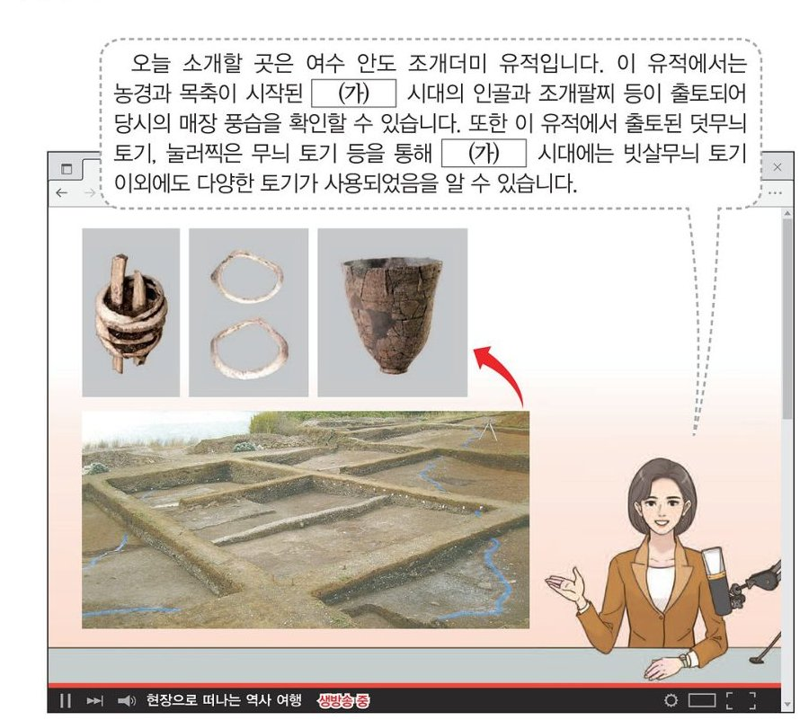
여수 안도 조개더미에서 농경·목축이 시작되고 덧무늬 토기·눌러찍은무늬 토기·빗살무늬 토기가 출토되었다는 설명에서 (가)는 신석기 시대임을 알 수 있다. 신석기 사람들은 가락바퀴로 실을 뽑고 뼈바늘로 옷과 그물을 만들어 원시 수공업이 시작되었으므로 ⑤가 옳다. ①(청동 방울)·③(거푸집·세형동검)은 청동기·철기, ②(뗀석기)는 구석기, ④(철제 농기구)는 철기 이후의 모습이다.
관련 단원 · 1.2 신석기 시대(가)~(다) 학생이 발표한 내용을 일어난 순서대로 옳게 나열한 것은?
3점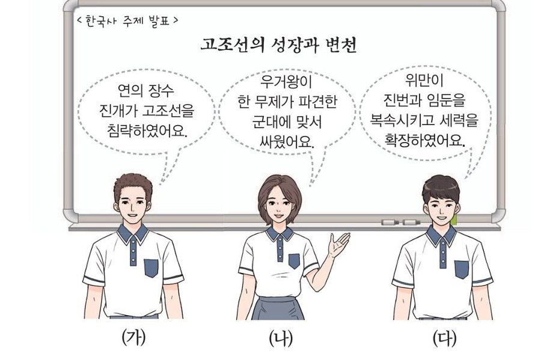
(가) 연의 장수 진개의 침략은 기원전 3세기 초, (다) 위만이 진번·임둔을 복속시키며 세력을 확장한 것은 위만 집권 직후(기원전 2세기), (나) 우거왕이 한 무제의 군대에 맞선 것은 고조선 멸망 무렵(기원전 108년)의 일이다. 따라서 일어난 순서는 (가)-(다)-(나)로 ②가 정답이다.
관련 단원 · 2.2 위만 조선과 한의 침입(가), (나) 나라에 대한 설명으로 옳은 것은?
2점(가)는 5월 씨뿌리기 후 제사, 천군과 국읍 제사가 언급되므로 삼한, (나)는 은력 정월 국중대회인 영고가 언급되므로 부여이다. 삼한에는 천군이 다스리는 신성 지역이자 죄인도 함부로 잡지 못하는 소도가 있었으므로 ①이 옳다. ②민며느리제는 옥저, ③위화부·영객부는 신라, ④상가·대로·패자는 고구려, ⑤책화는 동예의 특징이다.
관련 단원 · 2.4 옥저·동예·삼한밑줄 그은 ‘왕’에 대한 설명으로 옳은 것은?
3점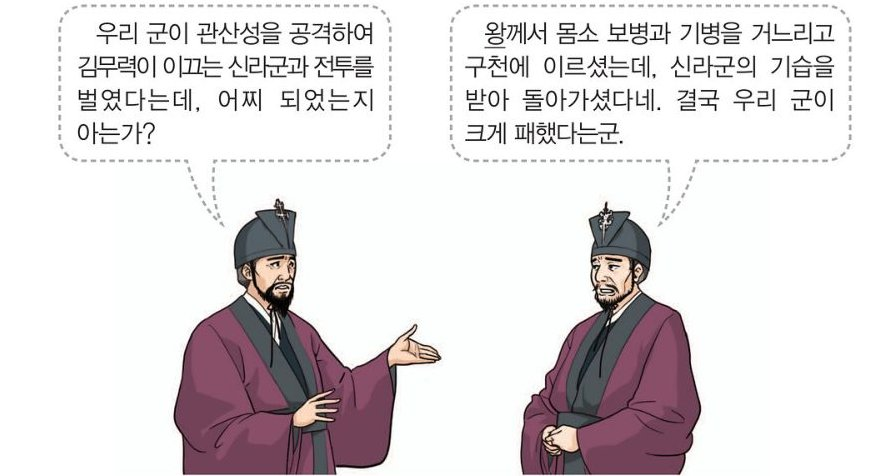
관산성을 공격하다 김무력이 이끄는 신라군의 기습을 받아 구천에서 전사한 '왕'은 백제 성왕이다(554년 관산성 전투). 성왕은 신라와 연합해 한강 유역을 되찾은 뒤 553년 신라의 배신 이전, 장수를 보내 고구려의 도살성을 점령하는 등 대외 팽창을 꾀했으므로 ⑤가 옳다. ①웅진 천도는 문주왕, ②백가의 난 평정은 무령왕, ③미륵사 창건은 무왕, ④고흥의 서기 편찬은 근초고왕의 일이다.
관련 단원 · 3.2 백제(가) 국가에 대한 설명으로 옳은 것은?
2점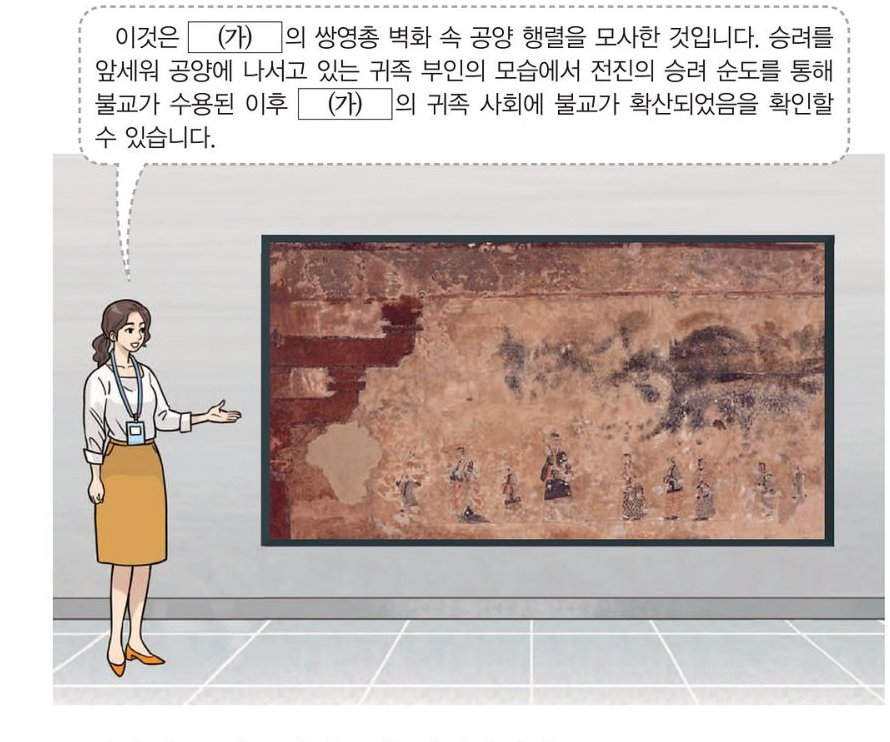
쌍영총 벽화와 전진의 승려 순도를 통한 불교 수용(372년, 소수림왕)이 언급되므로 (가)는 고구려이다. 고구려는 수도에 태학, 지방에 경당을 두어 인재를 양성했으므로 ②가 옳다. ①22담로는 백제, ③무천은 동예, ④범금 8조는 고조선, ⑤누각박사는 신라와 관련된 내용이다.
관련 단원 · 3.1 고구려밑줄 그은 ‘이 국가’의 사회 모습으로 가장 적절한 것은?
2점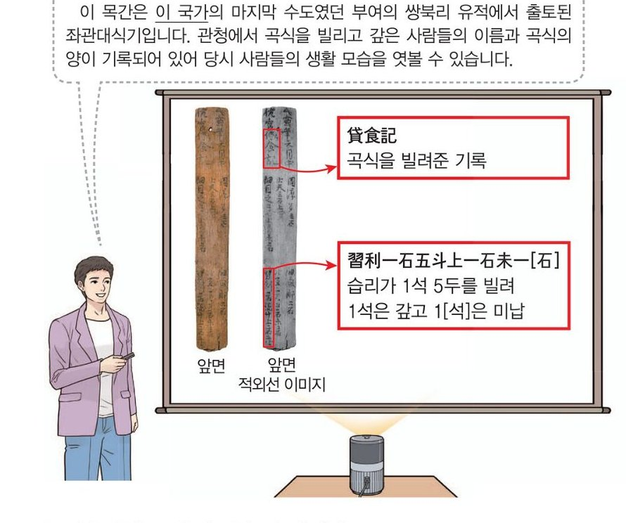
마지막 수도였던 부여(사비) 쌍북리에서 출토된 좌관대식기 목간이 언급되므로 '이 국가'는 백제이다. 백제는 6좌평을 두고 그 아래 달솔 등 16관등을 정비했으므로 ④가 옳다. ①서옥제는 고구려, ②서시·남시는 통일 신라, ③골품제는 신라, ⑤을파소 등용과 진대법은 고구려의 사실이다.
관련 단원 · 3.2 백제다음 상황 이후에 있었던 사실로 옳은 것은?
1점대야성 전투 패배(642년) 후 김춘추가 고구려에 군사를 청한 상황이다. 이후 나·당 연합군이 백제를 공격하자 계백이 이끄는 결사대가 황산벌에서 항전했으므로(660년) ④가 옳다. ①진흥왕의 대가야 병합(562), ②이사부의 우산국 복속(512), ③을지문덕의 살수 대첩(612), ⑤광개토 대왕의 왜 격퇴(400)는 모두 그 이전의 일이다.
관련 단원 · 5.2 백제와 고구려의 멸망밑줄 그은 ‘시기’에 있었던 사실로 옳은 것은?
2점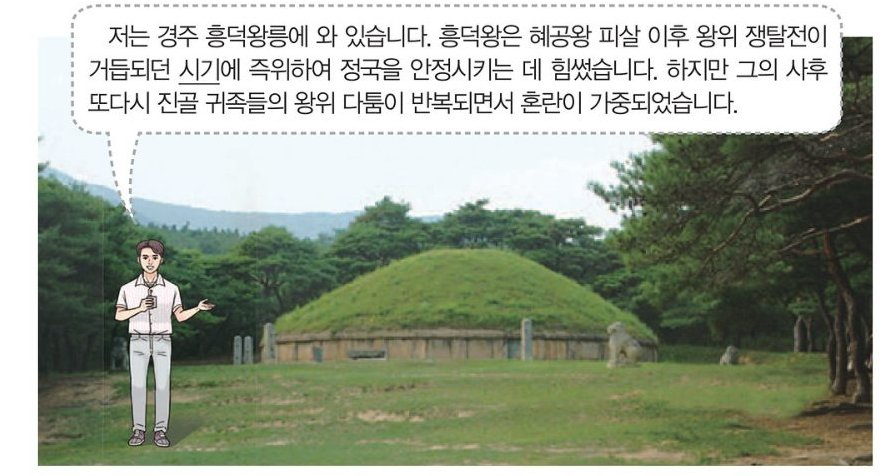
혜공왕 피살 이후 진골 귀족의 왕위 쟁탈전이 거듭되던 '시기'는 신라 하대이다. 이 시기 웅천주 도독 김헌창이 아버지 김주원이 왕위에 오르지 못한 데 불만을 품고 반란을 일으켰으므로(822년) ③이 옳다. ①비담·염종의 난(선덕여왕), ②김흠돌의 난(신문왕), ④원광의 걸사표(진평왕), ⑤이차돈의 순교(법흥왕)는 모두 신라 상대·중대의 일이다.
관련 단원 · 6.4 신라 하대의 동요(가) 국가의 문화유산으로 옳은 것은?
2점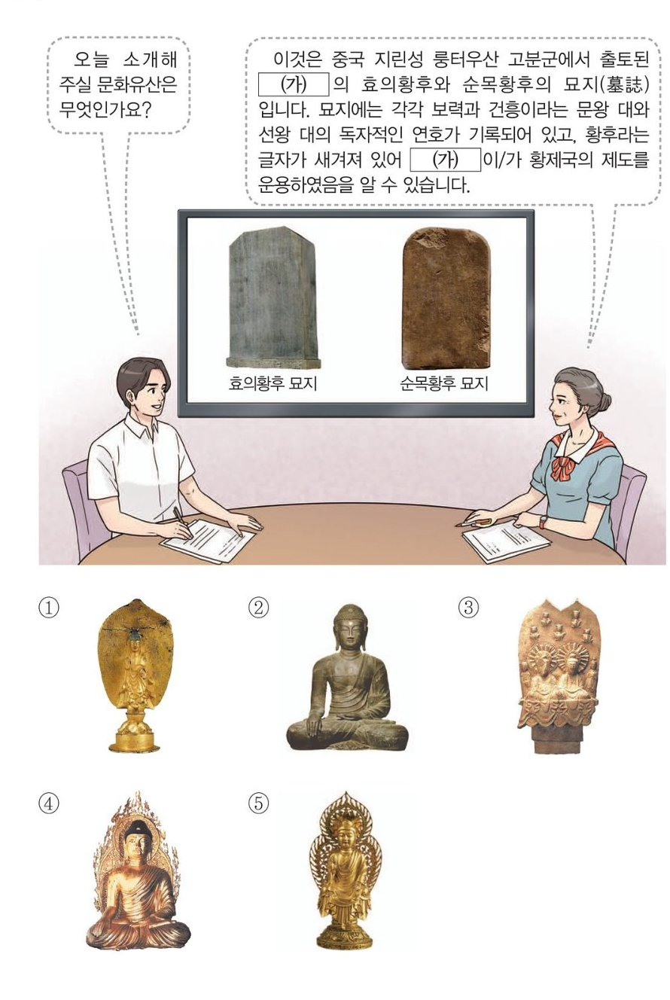
선택지는 위 이미지에서 고르세요 · 정답은 아래에서 확인
중국 지린성 룽터우산 고분군, 문왕·선왕의 독자적 연호(보력·건흥), 황후 칭호 등을 통해 (가)는 황제국 체제를 운용한 발해임을 알 수 있다. ③ 이불병좌상은 두 부처가 나란히 앉은 형태로, 고구려 양식을 계승한 대표적 발해 불상이므로 정답이다. 나머지 ①·②·④·⑤는 삼국·통일 신라 등 다른 나라의 불상이다.
관련 단원 · 7.3 발해의 문화밑줄 그은 ‘이 전투’ 이후에 전개된 사실로 옳은 것은?
2점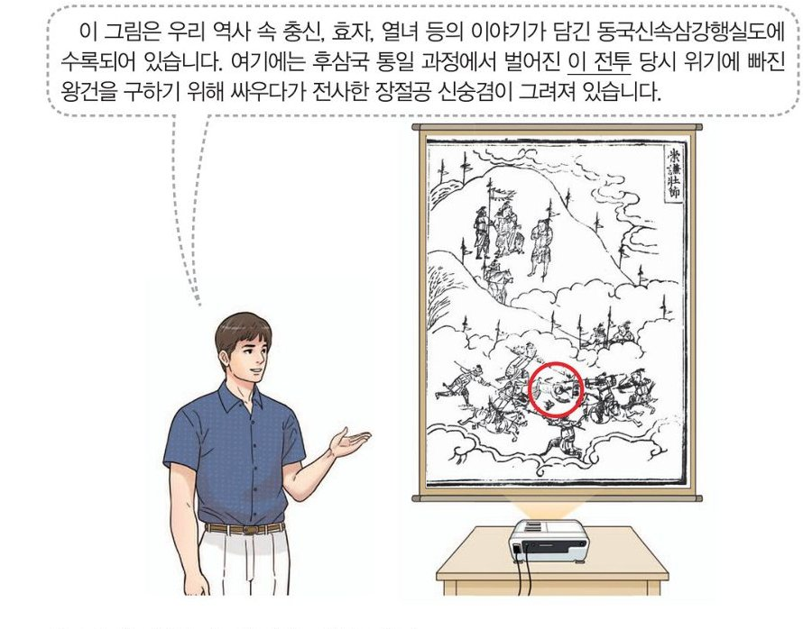
후삼국 통일 과정에서 위기에 빠진 왕건을 구하고 전사한 신숭겸이 그려져 있으므로 '이 전투'는 공산 전투(927년)이다. 이후 안동 지역 호족 김선평·권행 등이 왕건을 도와 고창 전투(930년)에서 활약하며 고려가 후백제에 승기를 잡았으므로 ④가 옳다. ①대공의 난, ②안승의 보덕국왕 임명, ③궁예의 태봉 국호 변경, ⑤대조영의 천문령 전투는 모두 그 이전의 일이다.
관련 단원 · 8.1 왕건의 통일과 태조의 정책(가) 왕에 대한 설명으로 옳은 것은?
2점'쌍기의 의견을 받아들여 과거로 관리를 선발하였다'는 내용에서 (가) 왕이 광종임을 알 수 있다. 광종은 후주 출신 쌍기의 건의로 과거제를 처음 시행하는 한편, 노비안검법을 실시해 억울하게 노비가 된 자를 양인으로 풀어 줌으로써 호족의 경제적·군사적 기반을 약화시켰으므로 ④가 옳다. ⑤ 정계와 계백료서를 지은 인물은 태조 왕건이다.
관련 단원 · 8.2 광종·성종의 체제 정비(가)에 들어갈 내용으로 가장 적절한 것은?
1점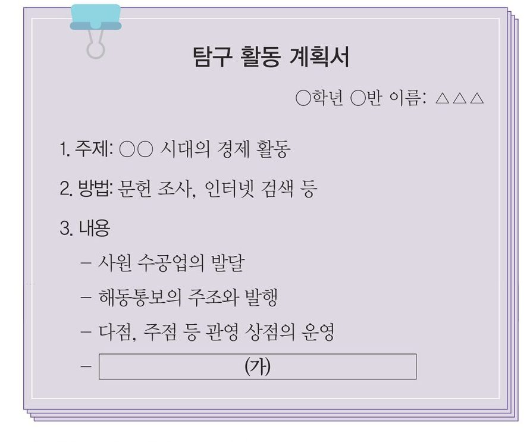
사원 수공업, 해동통보 주조, 다점·주점 등 관영 상점 운영은 모두 고려 시대의 경제 모습이다. 따라서 (가)에는 고려의 국제 무역항이었던 벽란도를 통한 대외 교류를 다룬 ③이 들어가는 것이 가장 적절하다. ④ 덩이쇠 수출과 낙랑 교역은 가야, ⑤ 청해진은 통일 신라의 사실이다.
관련 단원 · 11.1 고려의 토지 제도와 경제(가)에 대한 고려의 대응으로 옳은 것은?
1점윤관을 보내 치게 하고 숙종이 재반격을 도모하였다는 내용에서 (가)가 여진임을 알 수 있다. 고려는 윤관의 건의로 별무반을 편성해 여진을 정벌한 뒤 동북 지방에 9성을 쌓고 경계를 알리는 비석을 세웠으므로 ⑤가 옳다. ① 강화도 천도, ④ 송문주의 죽주성 전투는 모두 몽골과의 전쟁 때의 사실이다.
관련 단원 · 10.2 여진 정벌과 동북 9성(가) 국가의 문화유산으로 옳은 것은?
2점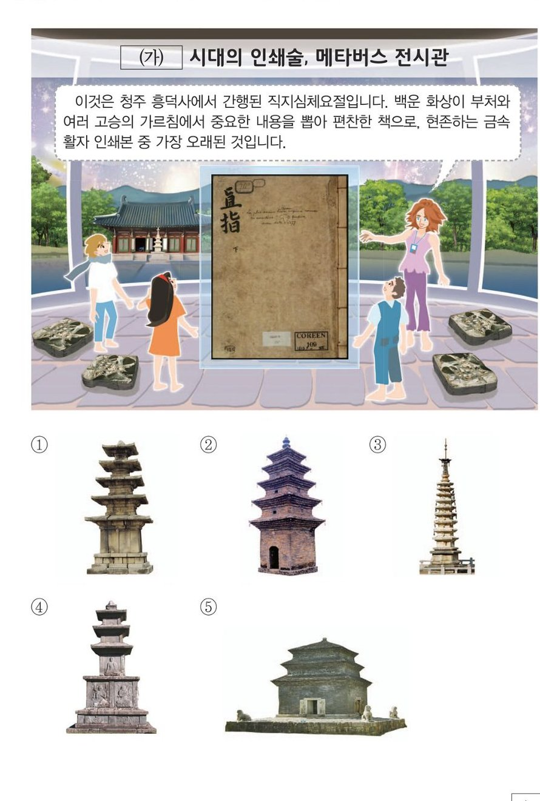
선택지는 위 이미지에서 고르세요 · 정답은 아래에서 확인
청주 흥덕사에서 간행되고 현존 최고(最古)의 금속 활자 인쇄본인 직지심체요절을 만든 (가) 국가는 고려이다. 따라서 고려의 대표적 문화유산인 ③ 개성 경천사지 10층 석탑이 옳다. 나머지는 백제·통일 신라 석탑 등 다른 시대의 유산이다.
관련 단원 · 11.5 고려의 인쇄술과 예술밑줄 그은 ‘이 국가’에서 볼 수 있는 모습으로 가장 적절한 것은?
2점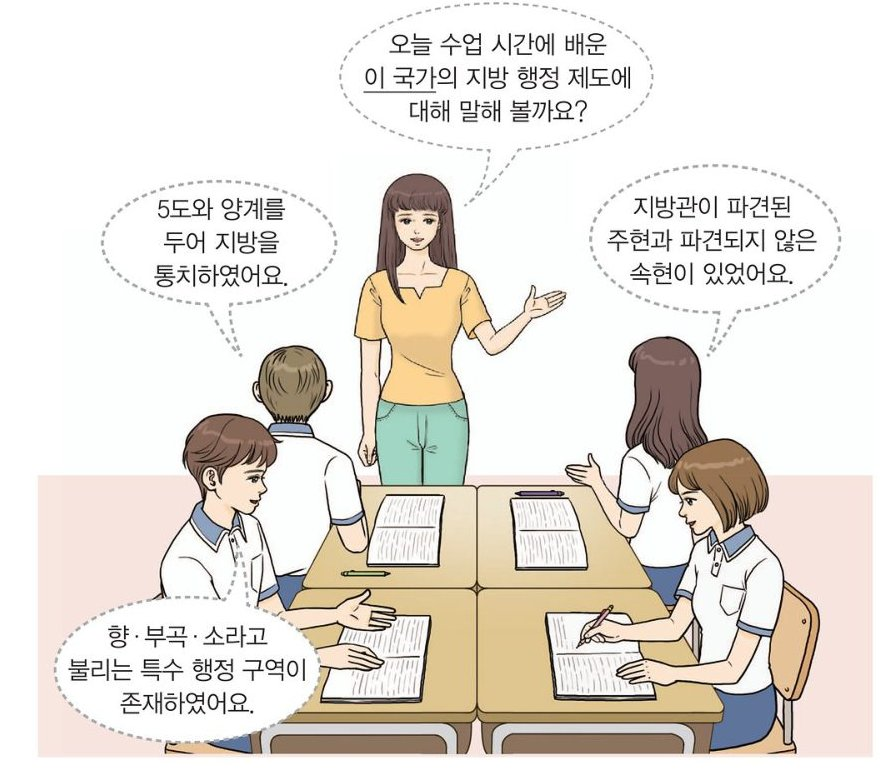
5도 양계, 지방관이 파견되지 않은 속현의 존재, 향·부곡·소라는 특수 행정 구역은 모두 고려의 지방 행정 제도이다. 따라서 고려의 서민 구제 기금인 제위보에서 곡식을 지급받는 농민을 다룬 ④가 옳다. ① 주자감은 발해, ③ 동시전은 신라, ② 구황촬요·⑤ 세책가는 조선의 모습이다.
관련 단원 · 11.2 고려의 사회 시책과 구휼밑줄 그은 ‘임금’의 재위 시기에 있었던 사실로 옳은 것은?
2점기철이 황후(기황후)의 인척으로 상국(원)의 위세를 빌려 임금을 위협하다 처단되었다는 내용에서 밑줄 친 임금이 기철 일파를 숙청한 공민왕임을 알 수 있다. 공민왕 때 유인우·이자춘 등이 쌍성총관부를 공격해 철령 이북의 땅을 되찾았으므로 ③이 옳다. ① 배중손 진도 항전, ④ 김방경의 일본 원정 참여는 모두 원 간섭기 초의 사실이다.
관련 단원 · 10.5 공민왕의 개혁밑줄 그은 ‘인물’의 활동으로 옳은 것은?
2점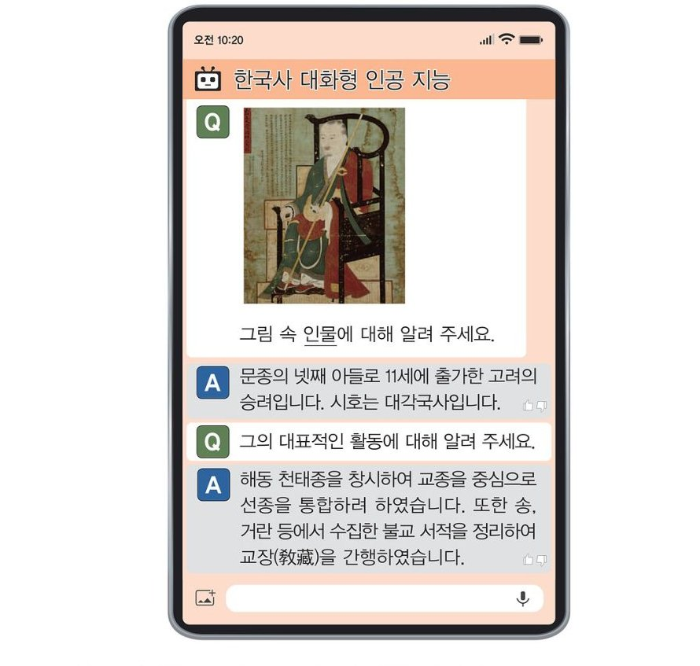
문종의 넷째 아들로 대각국사라 불리며 해동 천태종을 창시하고 교장(敎藏)을 간행한 인물은 의천이다. 의천은 교종을 중심으로 선종을 통합하려 하면서 이론(敎) 공부와 실천 수행(觀)을 함께 강조하는 교관겸수를 내세웠으므로 ⑤가 옳다. ③ 유불 일치설과 선문염송집은 혜심, ② 백련 결사는 요세의 활동이다.
관련 단원 · 11.3 고려의 불교와 사상(가), (나) 인물에 대한 설명으로 옳은 것은?
2점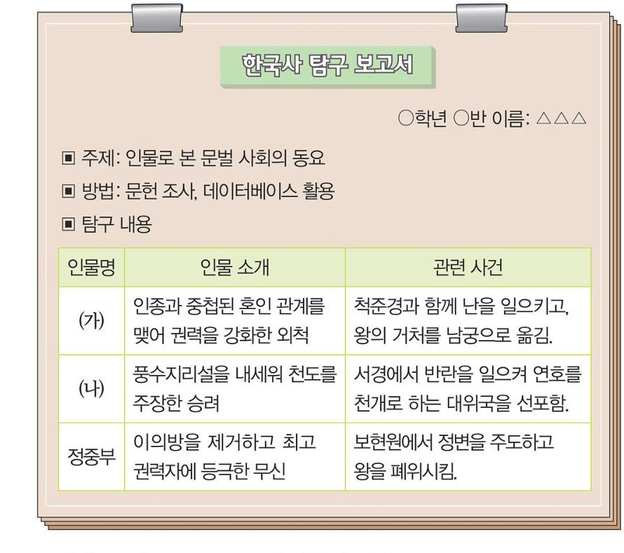
(가)는 인종과 중첩된 혼인 관계를 맺고 척준경과 함께 난을 일으킨 외척 이자겸, (나)는 풍수지리설을 내세워 서경에서 대위국을 선포한 승려 묘청이다. 묘청 세력은 황제를 칭하고 연호를 세울 것(칭제 건원)과 금국 정벌을 주장하였으므로 ④가 옳다. ① 시무 28조는 최승로, ③ 목종 폐위는 강조와 관련된 사실이다.
관련 단원 · 9.2 묘청의 서경 천도 운동(가) 왕의 재위 시기에 있었던 사실로 옳은 것은?
3점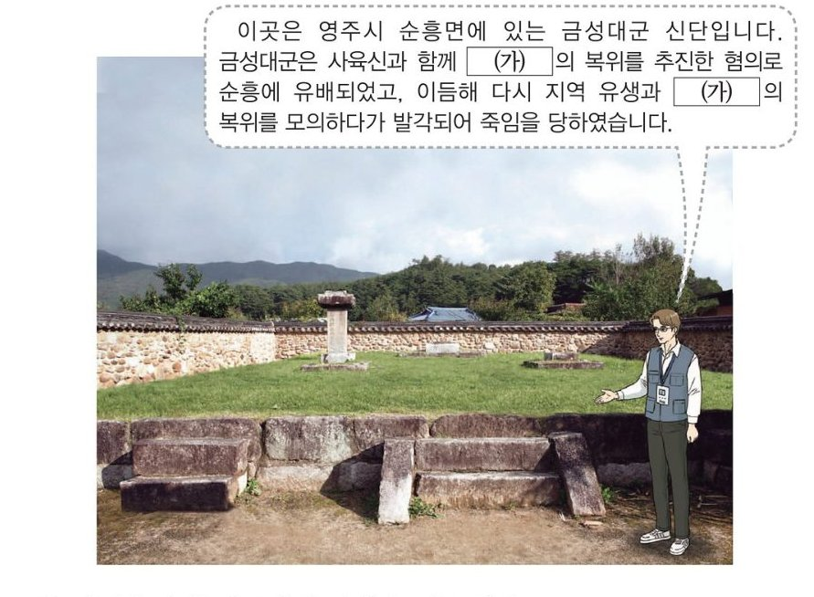
금성대군이 사육신과 함께 (가)의 복위를 추진하다 순흥에 유배되었다는 내용에서 (가) 왕이 단종임을 알 수 있다. 단종 재위 초기인 1453년 함길도에서 이징옥이 반란을 일으켰으므로 ①이 옳다. ④ 조광조 일파 제거(기묘사화), ⑤ 정여립 사건과 기축옥사는 모두 조선 중기 이후의 사실이다.
관련 단원 · 12.3 세조와 성종(가) 기구에 대한 설명으로 옳은 것은?
3점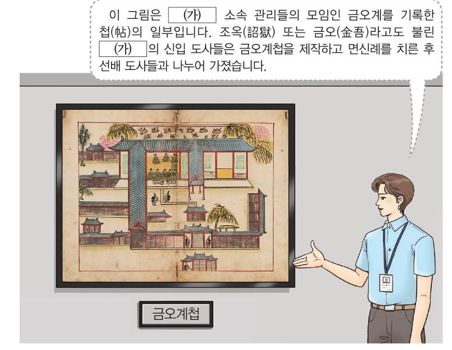
금오·조옥이라고도 불리고 소속 관리를 도사(都事)라 한 (가) 기구는 의금부이다. 의금부는 국왕 직속의 사법 기구로 반역죄·강상죄 등 국가의 중대 범죄를 담당하였으므로 ⑤가 옳다. ① 수도의 행정·치안은 한성부, ② 천문·지리는 관상감, ④ 경연 주관은 홍문관과 관련된 설명이다.
관련 단원 · 12.4 조선의 중앙 행정 조직밑줄 그은 ‘그’에 대한 설명으로 옳은 것은?
3점예조를 오래 관장하며 사대교린을 소임으로 삼고 일본에 다녀와 『해동제국기』를 지어 올린 인물은 신숙주이다. 그는 집현전 학사로서 세종 대 훈민정음 해례본 편찬에 참여하였으므로 정답은 ①이다. ②의 백운동 서원은 주세붕, ③의 기축봉사는 송시열, ⑤의 『가례집람』은 김장생의 업적이다.
관련 단원 · 12.2 세종의 문화 정치 - 훈민정음다음 상황이 벌어진 전쟁 중에 있었던 사실로 옳은 것은?
2점김시민이 1만여 명의 적을 맞아 진주성에서 싸운 상황은 임진왜란 중 진주 대첩(1592)이다. 같은 전쟁 중 권율은 행주산성에서 적을 크게 물리쳐 행주 대첩을 거두었으므로 정답은 ④이다. ①의 정봉수(용골산성)는 정묘호란, ②의 김준룡(광교산)은 병자호란, ③·⑤의 6진 개척과 대마도 정벌은 세종 대의 사실이다.
관련 단원 · 15.1 임진왜란의 전개다음 상황이 나타난 시기를 연표에서 옳게 고른 것은?
3점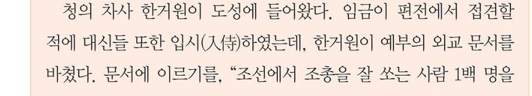
청의 요청으로 조총 부대를 보내 나선(러시아)을 정벌한 상황은 효종 대의 나선 정벌(1654·1658)이다. 이는 인조반정(1623)과 경신환국(1680) 사이에 해당하므로 연표에서 (가) 시기, 정답은 ①이다. 북벌을 추진하던 효종은 청의 파병 요청에 응해 두 차례 조총병을 파견하였다.
관련 단원 · 15.3 인조반정과 호란 - 나선 정벌밑줄 그은 ‘왕’에 대한 설명으로 옳은 것은?
1점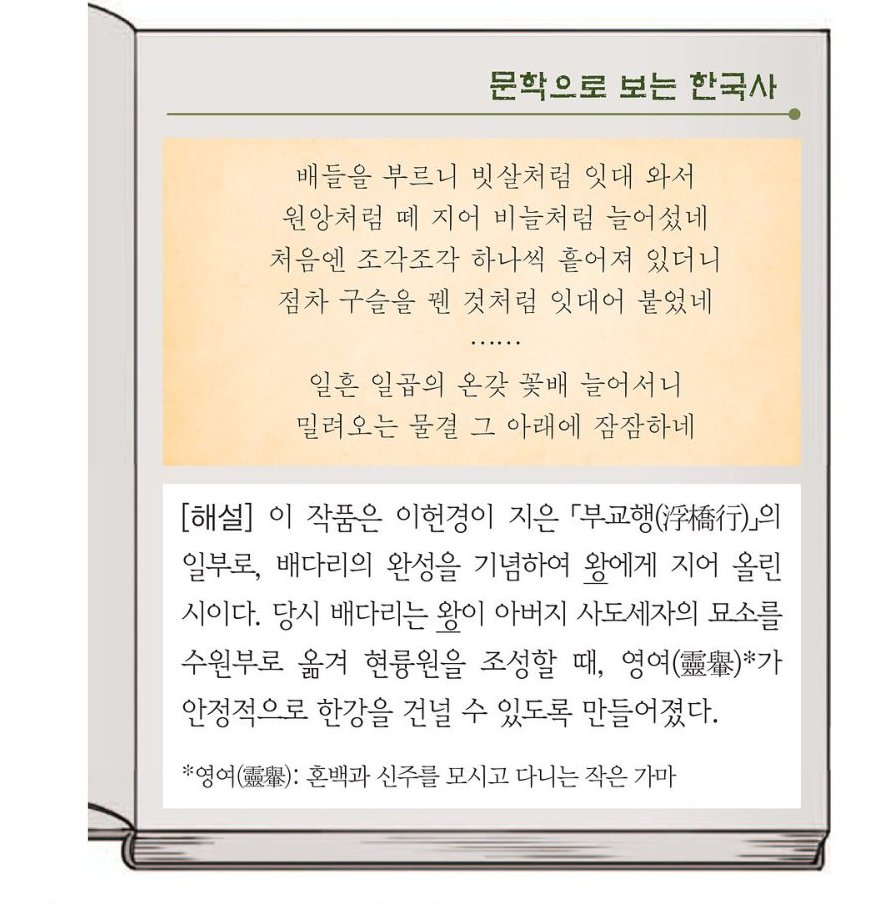
아버지 사도세자의 묘소를 수원부로 옮겨 현륭원을 조성하고 한강에 배다리를 놓은 왕은 정조이다. 정조는 젊은 문신을 재교육하는 초계문신제를 시행하였으므로 정답은 ⑤이다. ①의 왕세제 책봉은 경종, ②의 백두산정계비는 숙종, ③의 훈련도감은 선조, ④의 탕평비는 영조와 관련된 사실이다.
관련 단원 · 16.4 정조의 개혁 정치다음 대화가 이루어진 시기의 경제 상황으로 적절하지 않은 것은?
2점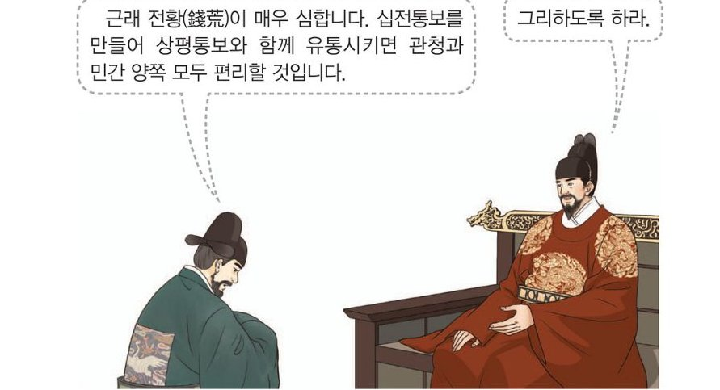
전황을 해결하기 위해 상평통보와 함께 십전통보를 유통하자는 대화는 상평통보가 널리 쓰인 조선 후기의 상황이다. 활구(은병)는 고려 시대에 주조된 화폐이므로 조선 후기 경제 상황으로 적절하지 않은 ①이 정답이다. 공인의 활동, 송상·만상의 대청 무역, 보부상의 장시 활동, 설점수세제 시행은 모두 조선 후기의 모습이다.
관련 단원 · 17.2 농업과 상공업의 발달(가) 인물의 작품으로 옳은 것은?
1점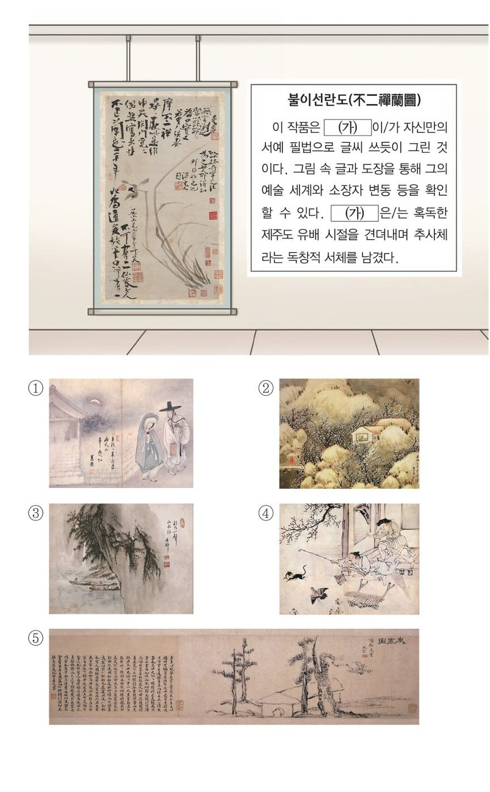
선택지는 위 이미지에서 고르세요 · 정답은 아래에서 확인
「불이선란도」를 남기고 제주도 유배 시절 추사체를 완성한 (가) 인물은 김정희이다. 그의 대표작은 제자 이상적에게 그려준 문인화 「세한도」로, 소나무와 집을 간결하게 그린 ⑤가 정답이다. ①은 신윤복의 풍속화, ④는 김득신의 「파적도」 등 다른 화가의 작품이다.
관련 단원 · 18.4 조선 후기 회화(문인화)다음 자료에 나타난 시기의 사회 모습으로 가장 적절한 것은?
2점구향과 신향이 향임의 권한을 두고 다투는 향전은 조선 후기 향촌 사회 변동을 보여 준다. 이 시기에는 서얼이 청요직 진출을 요구하는 통청 운동을 전개하였으므로 정답은 ②이다. ①의 9재 학당(최충), ③의 변발·호복(원 간섭기), ④의 망이·망소이의 난, ⑤의 『향약구급방』은 모두 고려 시대의 사실이다.
관련 단원 · 17.3 신분제의 동요(가) 조약에 대한 설명으로 옳은 것은?
2점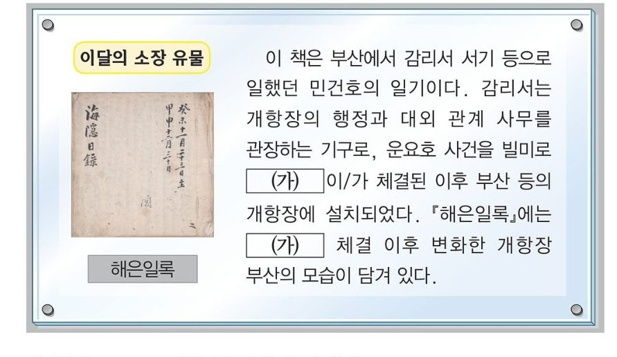
운요호 사건을 빌미로 체결되어 부산 등 개항장에 감리서 설치의 배경이 된 (가) 조약은 강화도 조약(1876)이다. 이 조약은 일본 측의 해안 측량권을 인정한 불평등 조항을 담았으므로 정답은 ②이다. ③의 최혜국 대우는 조·미 수호 통상 조약, ④의 공사관 경비병 주둔은 제물포 조약, ⑤의 내지 통상권은 조·청 상민 수륙 무역 장정과 관련된다.
관련 단원 · 19.3 강화도 조약과 개항(가) 사건에 대한 설명으로 옳은 것은?
2점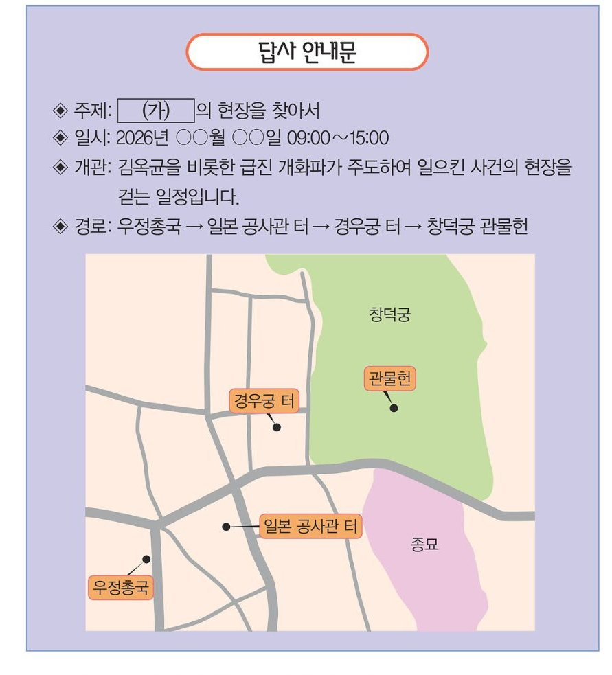
우정총국 개국 축하연에서 김옥균 등 급진 개화파가 일으킨 (가) 사건은 갑신정변(1884)이다. 정변 실패 후 일본과 배상 문제를 처리하는 한성 조약이 체결되었으므로 정답은 ①이다. ②는 병인양요, ③은 신미양요, ④는 임오군란, ⑤의 홍범 14조는 갑오개혁과 관련된 사실이다.
관련 단원 · 20.4 갑신정변(가)~(마)에 들어갈 내용으로 가장 적절한 것은?
3점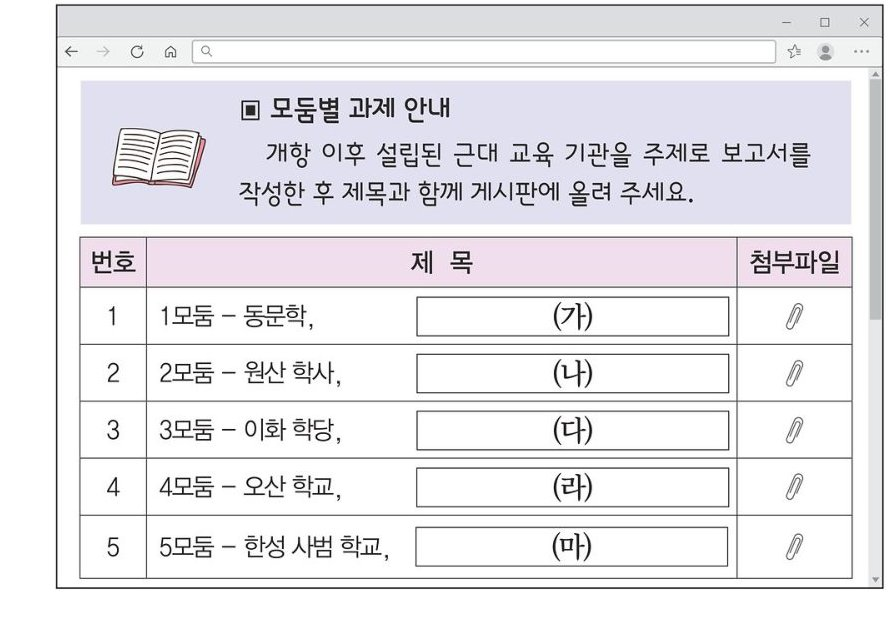
개항 이후 설립된 근대 교육 기관에 대한 문제로, 원산 학사는 함경도 덕원 지역의 관민이 합심하여 세운 최초의 근대적 사립 학교이므로 (나)에 '관민이 합심하여 세우다'가 들어가는 ②가 정답이다. ①의 신민회 학교는 오산·대성 학교, ④의 최초 여성 교육 기관은 이화 학당, ⑤의 통역관 양성 기관은 동문학이므로 나머지는 옳지 않다.
관련 단원 · 22.7 근대 문물의 수용 - 교육다음 자료를 활용한 탐구 활동으로 가장 적절한 것은?
2점광무 9년(1905) 탁지부 대신이 구 백동화를 새 화폐로 교환한다는 내용으로, 제1차 한·일 협약으로 파견된 재정 고문 메가타가 주도한 화폐 정리 사업이다. 백동화를 등급에 따라 차등 교환하여 한국 상인과 은행이 큰 타격을 입었다. 따라서 재정 고문 메가타가 주도한 정책을 찾아보는 활동(④)이 가장 적절하다.
관련 단원 · 22.3 러·일 전쟁과 국권 침탈 과정다음 자료가 작성된 이후에 전개된 사실로 옳은 것은?
2점'지난달 일본군이 경복궁을 침범'했다는 내용으로 보아 1894년 6월 일본군의 경복궁 점령 직후 작성된 집강소 관련 문서이다. 이후 일본의 내정 간섭에 맞서 동학 농민군이 다시 봉기하여 남접과 북접이 논산에 집결(③)하고 서울로 북상하였다. ①황토현 전투, ②교정청 설치, ④삼례 집회, ⑤고부 봉기는 모두 이 문서 작성 이전의 사실이다.
관련 단원 · 21.1 동학 농민 운동다음 상황의 배경으로 가장 적절한 것은?
2점이인영을 총대장, 허위를 군사장으로 삼아 48개 진 약 1만 명의 병력으로 서울 진공을 꾀한 것은 정미의병 때 결성된 13도 창의군이다. 이는 1907년 고종 강제 퇴위와 정미 7조약에 따른 대한 제국 군대 해산(②)을 배경으로 해산 군인이 합류하며 의병 전쟁이 확대된 결과이다.
관련 단원 · 22.4 항일 의병 전쟁밑줄 그은 ‘신문’에 대한 설명으로 옳은 것은?
1점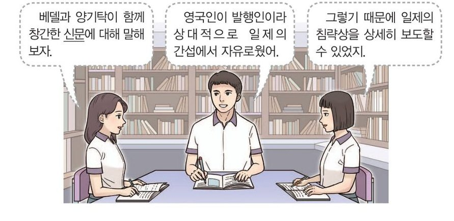
베델과 양기탁이 함께 창간하였고 영국인이 발행인이라 일제의 검열에서 비교적 자유로워 침략상을 상세히 보도한 신문은 대한매일신보이다. 이 신문은 대구에서 시작된 국채 보상 운동을 적극 보도하여 전국적으로 확산되는 데 크게 기여(④)하였다.
관련 단원 · 22.7 근대 문물의 수용과 언론(가) 인물의 활동으로 옳은 것은?
3점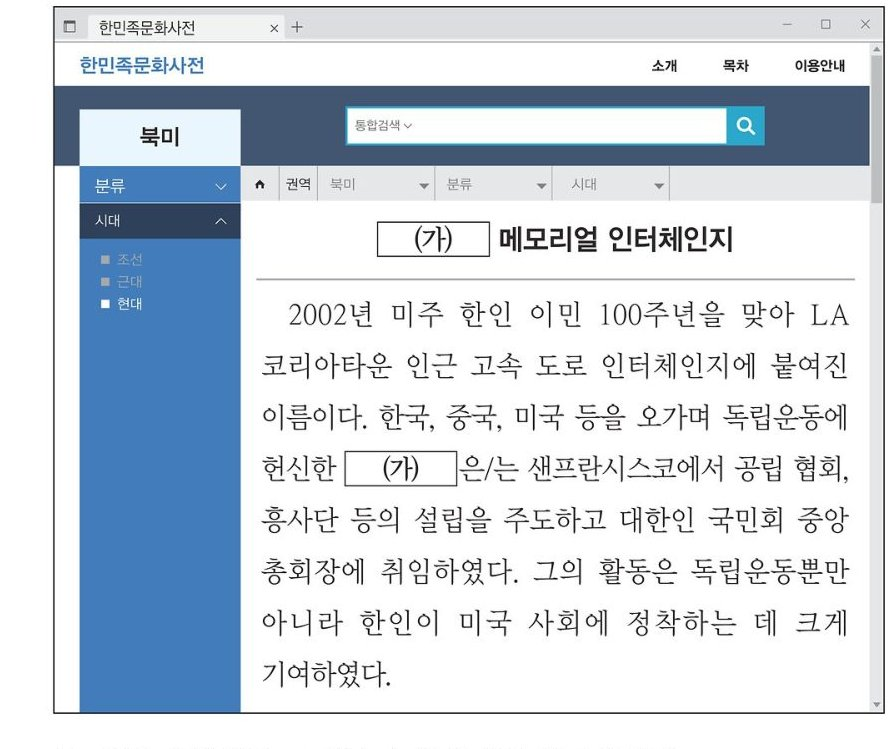
미주 한인 이민 100주년을 맞아 이름 붙여진 인터체인지의 주인공으로, 샌프란시스코에서 공립 협회와 흥사단 설립을 주도하고 대한인 국민회 중앙 총회장에 취임한 (가) 인물은 안창호이다. 안창호는 통합 대한민국 임시 정부에서 내무총장으로 활동(③)하였다. ④조선 혁명 선언은 신채호가 작성하였다.
관련 단원 · 24.3 대한민국 임시 정부밑줄 그은 ‘시기’에 있었던 사실로 옳은 것은?
1점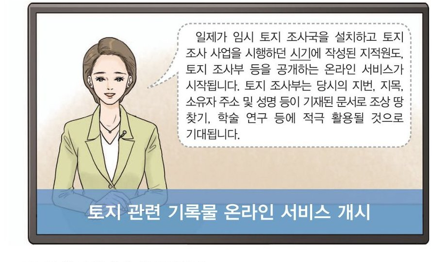
임시 토지 조사국을 설치하고 토지 조사 사업을 시행하던 시기는 1910년대 무단 통치기이다. 이 시기 일제는 헌병이 일반 경찰 업무까지 담당하는 헌병 경찰제를 실시(①)하였다. ②치안 유지법, ⑤조선 사상범 예방 구금령, ④조선 여성 동우회는 모두 1920년대 이후의 사실이다.
관련 단원 · 23.1 무단 통치와 토지 조사 사업다음 판결 이후에 있었던 사실로 옳은 것은?
3점전라남도 무안군 암태면에서 암태소작인회를 조직하고 고율 소작료 인하와 소작료 불납 동맹을 벌인 사건은 1923~1924년의 암태도 소작 쟁의이다. 이 판결 이후인 1927년 전국 단위 조직인 조선 농민 총동맹이 결성(③)되었다. ①지계아문, ②회사령, ④농광 회사, ⑤조선 물산 공진회는 모두 그 이전의 사실이다.
관련 단원 · 26.3 농민·노동 운동밑줄 그은 ‘운동’에 대한 설명으로 옳은 것은?
2점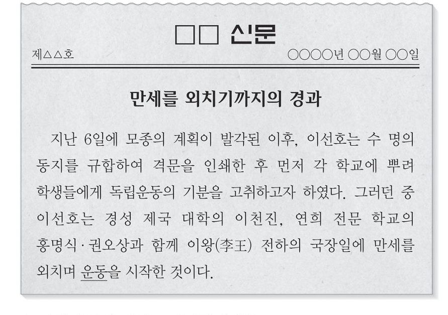
이선호 등이 경성 제국 대학·연희 전문 학교 학생들과 함께 이왕(순종) 전하의 국장일에 만세를 외친 것은 1926년 6·10 만세 운동이다. 이 운동은 사회주의 계열과 민족주의 계열의 연대 가능성을 보여 주어 민족 협동 전선인 신간회 결성에 영향(④)을 끼쳤다. ⑤한국인·일본인 학생 간 충돌에서 비롯된 것은 광주 학생 항일 운동이다.
관련 단원 · 26.2 민족 협동 전선다음 자료를 활용한 탐구 활동으로 가장 적절한 것은?
2점백정 계급이 양반뿐 아니라 모든 계급에게 압박과 착취를 당한다며 무지와 전통을 버리고 이상을 관철하자는 내용으로, 백정에 대한 사회적 차별 철폐를 주장한 형평 운동 관련 자료이다. 따라서 조선 형평사의 창립 목적을 파악하는 활동(②)이 가장 적절하다.
관련 단원 · 26.4 대중 운동(형평 운동)밑줄 그은 ‘이 시기’에 볼 수 있는 모습으로 가장 적절한 것은?
2점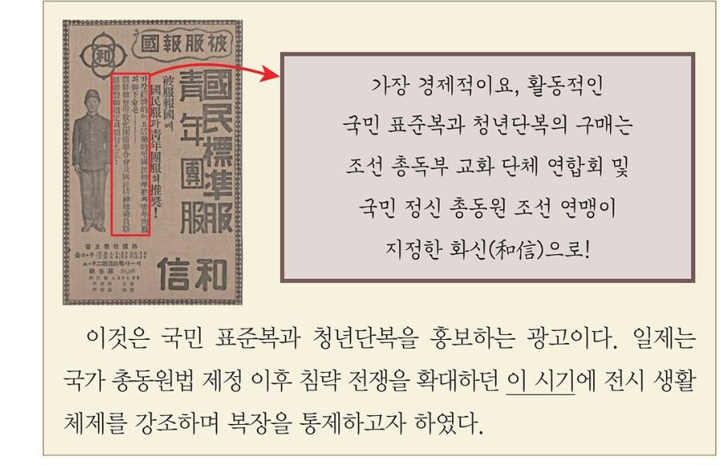
국가 총동원법 제정 이후 침략 전쟁을 확대하며 국민 표준복·청년단복 등 복장을 통제한 '이 시기'는 1930~40년대 민족 말살 통치기이다. 이 시기 일제는 황국 신민화 정책을 펴 학생들에게 황국 신민 서사 암송을 강요(④)하였다. ①원산 총파업(1929), ②105인 사건(1911), ③근우회 창립(1927), ⑤태화관 독립 선언(1919)은 모두 이 시기 이전의 모습이다.
관련 단원 · 23.3 민족 말살 통치(가) 단체의 활동으로 옳은 것은?
2점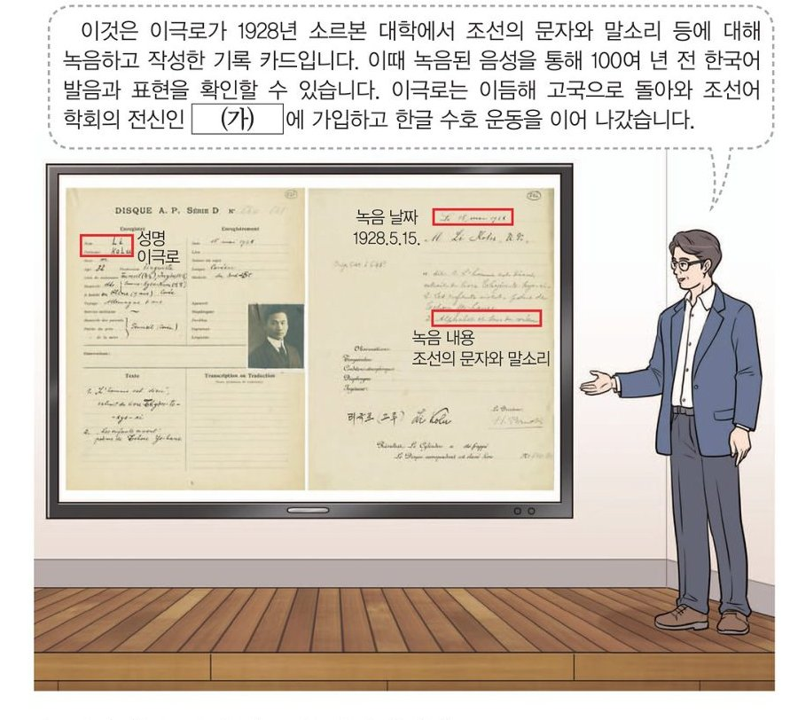
이극로가 귀국해 가입한 '조선어 학회의 전신'인 (가)는 조선어 연구회이다. 조선어 연구회는 1926년 훈민정음 반포를 기념하는 '가갸날'을 제정하고 기념식을 열어 한글 보급에 힘썼다. ①의 학술지 진단 학보 발행은 진단 학회, ④의 주시경·지석영은 국문 연구소의 활동으로 시기와 단체가 다르다.
관련 단원 · 26.5 민족 문화 수호 — 조선어 학회(가) 부대에 대한 설명으로 옳은 것은?
2점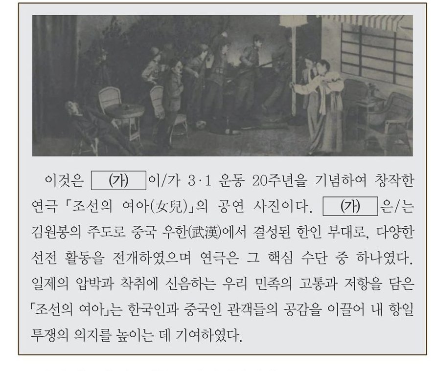
김원봉의 주도로 1938년 중국 우한에서 결성된 (가)는 조선 의용대로, 중국 관내에서 조직된 최초의 한인 무장 부대이며 연극 등 다양한 대일 선전 활동을 펼쳤다. 이후 일부 대원은 화북으로 이동해 조선 의용군이 되었고, 김원봉이 이끈 나머지 병력은 한국광복군에 합류하였다. ②의 청산리 대첩은 북로 군정서 등, ④의 대전자령 전투는 한국 독립군의 활동이다.
관련 단원 · 25.3 의열단·김원봉과 무장 독립 투쟁교사의 질문에 대한 학생의 답변으로 적절하지 않은 것은?
2점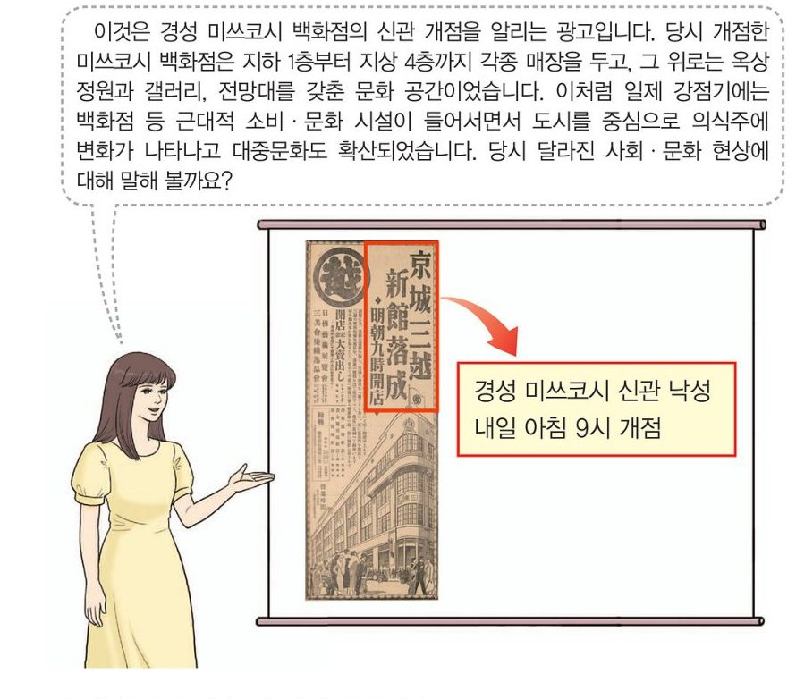
경성 미쓰코시 백화점 신관 개점 광고를 바탕으로 일제 강점기 도시의 소비·대중문화 변화를 묻는 문제이다. 정답이 '적절하지 않은 것'이므로, 텔레비전 방송이 시작된 것은 1956년으로 광복 이후의 일이어서 ①이 옳지 않다. 화학조미료 요리법 확산, 문화 주택 등장, 단성사의 영화 상영, 모던 걸·모던 보이의 등장은 모두 이 시기의 모습이다.
관련 단원 · 26.6 일제 강점기 문학과 예술, 대중문화(가) 선거에 대한 설명으로 옳은 것은?
2점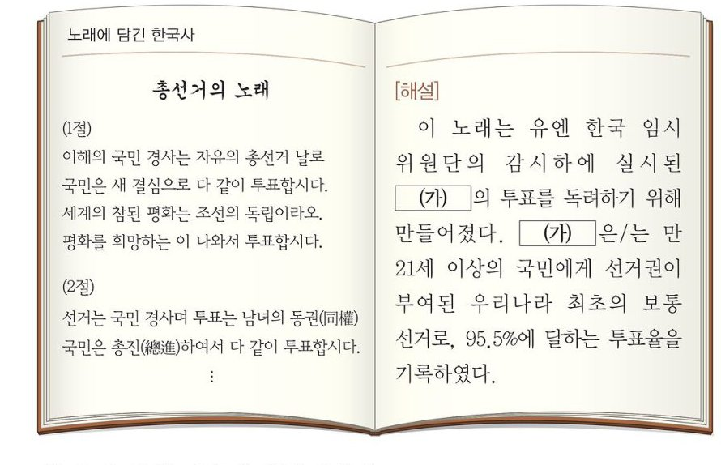
유엔 한국 임시 위원단의 감시 아래 실시되고, 만 21세 이상 국민에게 선거권이 부여된 우리나라 최초의 보통 선거인 (가)는 1948년 5·10 총선거이다. 이 선거로 제헌 국회가 구성되었으나, 남한만의 단독 정부 수립에 반대한 김구·김규식 등은 참여하지 않았으므로 ⑤가 옳다. ①의 6·3 시위(1964), ②의 발췌 개헌(1952), ④의 통일 주체 국민 회의(유신 체제)는 모두 이후 시기의 일이다.
관련 단원 · 27.4 대한민국 정부 수립과 5·10 총선거밑줄 그은 '이 전쟁' 중에 있었던 사실로 옳은 것은?
1점동해안 장사리에 상륙 작전을 전개한 학도병 부대 이야기를 통해 '이 전쟁'이 6·25 전쟁임을 알 수 있다. 전쟁 중 중국군의 개입으로 전세가 불리해지자 국군과 유엔군은 흥남에서 대규모 철수 작전을 전개했으므로 ⑤가 옳다. ①의 애치슨 라인 발표, ④의 모스크바 3국 외상 회의는 전쟁 이전의 일이며, ②의 한·미 상호 방위 조약은 정전 협정 체결 이후에 맺어졌다.
관련 단원 · 28.2 6·25 전쟁의 전개(가) 민주화 운동에 대한 설명으로 옳은 것은?
2점김주열 열사와 3·15 부정 선거에 맞서 민주주의를 지켜낸 사건을 추모하는 화면으로 보아 (가)는 4·19 혁명이다. 4·19 혁명으로 이승만이 하야하고 허정 과도 정부를 거쳐 내각 책임제의 장면 내각이 출범하는 계기가 되었으므로 ②가 옳다. ①의 긴급 조치 철폐 요구는 유신 반대 운동, ③의 신군부 계엄 확대 반발은 5·18 민주화 운동, ⑤의 5년 단임 직선제 개헌은 6월 민주 항쟁과 관련된다.
관련 단원 · 29.2 4·19 혁명(가) 정부 시기의 경제 상황으로 적절하지 않은 것은?
1점경부 고속 국도 전 구간 개통(1970) 광고로 보아 (가)는 박정희 정부이다. 정답이 '적절하지 않은 것'이므로, 국민 기초 생활 보장법은 1999년 김대중 정부 때 제정되어 시기가 다른 ②가 옳지 않다. 포항 제철소 착공, 마산 수출 자유 지역 지정, 베트남 전쟁 파병 특수, 제2차 경제 개발 5개년 계획은 모두 박정희 정부 시기의 일이다.
관련 단원 · 30.3 경제 개발 5개년 계획과 산업화밑줄 그은 '현행 헌법'에 대한 설명으로 옳은 것은?
3점'현행 헌법에 따라 정부를 이양'하겠다는 발표와 서울 올림픽 개최 명분은 1987년 전두환의 4·13 호헌 조치를 가리키며, 여기서 '현행 헌법'은 당시 유지되던 제5공화국 헌법(1980년 8차 개헌)이다. 이 헌법은 대통령 선거인단에 의한 간접 선거와 7년 단임제를 규정했으므로 ⑤가 옳다. ①의 사사오입 개헌, ②의 3선 개헌, ④의 양원제 국회 명시는 모두 다른 시기의 개헌 내용이다.
관련 단원 · 31.4 6월 민주 항쟁과 4·13 호헌 조치다음 연설문을 발표한 정부의 통일 노력으로 옳은 것은?
2점9·11 테러 이후, 금강산 관광과 햇볕 정책, 월드컵(2002)과 부산 아시안 게임을 언급한 연설문으로 보아 김대중 정부임을 알 수 있다. 김대중 정부는 2000년 평양에서 최초의 남북 정상 회담을 열어 6·15 남북 공동 선언을 발표했으므로 ②가 옳다. ①의 7·4 남북 공동 성명은 박정희 정부, ③의 남북한 유엔 동시 가입은 노태우 정부, ⑤의 평창 올림픽 남북 단일팀은 문재인 정부 시기의 일이다.
관련 단원 · 32.3 김대중 정부와 햇볕 정책(가) 지역에서 있었던 사실로 옳은 것은?
2점범어사, 동래성 전투, 초량 왜관, 안희제의 백산 상회 등 강의 주제로 보아 (가) 지역은 부산이다. 의열단원 박재혁이 부산 경찰서에 폭탄을 던지는 의거를 일으켰으므로 ⑤가 옳다. ②의 2·28 민주 운동은 대구, ①의 신립 탄금대 전투는 충주, ③의 김사미 봉기는 운문(청도)·초전 지역과 관련된다.
관련 단원 · 부록 B 지역사 특강 — 부산2026년도 시행 제77회 심화의 50문항이다. 질문과 선택지는 텍스트로, 사료·그림·사진 자료는 원본에서 필요한 영역만 따로 실었다. 각 문항 아래에서 공식 정답을 확인할 수 있다.
밑줄 그은 ‘이 시대’의 생활 모습으로 가장 적절한 것은?
1점민무늬 토기, 반달 돌칼, 탄화미와 사유 재산·계급의 발생은 청동기 시대의 특징이다. 이 시기 지배층의 무덤인 고인돌을 많은 인력을 동원해 축조했으므로 ③이 옳다. ④는 구석기, ⑤는 신석기, ①은 철기 이후의 모습이다.
관련 단원 · 1.3 청동기 시대(가) 나라에 대한 설명으로 옳은 것은?
2점우거왕과 한 무제의 전쟁이 제시되었으므로 (가)는 고조선이다. 고조선은 살인·상해·절도 등을 처벌한 범금 8조로 사회 질서를 유지했으므로 ⑤가 옳다. ①은 옥저, ②는 백제, ③은 부여, ④는 고구려의 특징이다.
관련 단원 · 2.1 고조선의 건국과 발전밑줄 그은 '이 나라'에 대한 탐구 활동으로 가장 적절한 것은?
2점단궁·과하마·반어피, 10월 무천, 호랑이 숭배는 동예의 특징이다. 동예에는 다른 읍락의 경계를 침범하면 배상하게 한 책화가 있었으므로 ②가 옳다. 진대법은 고구려, 소도는 삼한, 화백 회의는 신라와 관련된다.
관련 단원 · 2.4 옥저·동예·삼한(가) 국가의 문화유산으로 옳은 것은?
2점천마총과 금령총이 있는 경주는 신라의 수도이므로 (가)는 신라이다. ④의 금제 새 날개 모양 관장식은 신라 고분에서 출토된 대표적인 금제 장식이므로 정답이다. 나머지는 다른 국가·시기의 문화유산이다.
관련 단원 · 4.4 삼국의 고분과 예술다음 대화에 나타난 왕에 대한 설명으로 옳은 것은?
2점백가의 난을 평정하고 중국 남조 양에 국서를 보냈으며 왕릉 지석이 남은 왕은 무령왕이다. 무령왕은 지방 22담로에 왕족을 파견해 지방 통제를 강화했으므로 ③이 옳다. ①은 무왕, ②는 근초고왕, ④는 침류왕의 사실이다.
관련 단원 · 3.2 백제(가), (나) 사이의 시기에 있었던 사실로 옳은 것은?
3점(가)는 나·당 연합군의 백제 공격 직전인 660년, (나)는 나·당 전쟁의 기벌포 전투가 끝난 676년이다. 이 사이 복신과 도침이 부여풍을 왕으로 추대해 백제 부흥 운동을 전개했으므로 ②가 옳다. 나머지는 모두 660년 이전의 일이다.
관련 단원 · 5.2 백제와 고구려의 멸망다음 자료에 해당하는 국가에 대한 설명으로 옳은 것은?
1점5경 15부 62주를 두고 신라·당·일본과 교류하며 약 3백 년 존속한 국가는 발해이다. 발해는 당의 국자감을 본뜬 주자감을 설치해 인재를 양성했으므로 ②가 옳다. ①은 부여, ③은 통일 신라, ④는 고려, ⑤는 백제이다.
관련 단원 · 7.2 발해의 통치 체제(가) 국가의 경제 상황으로 가장 적절한 것은?
2점국내성의 대형 계단식 돌무지무덤과 영락 연호에서 (가)는 고구려임을 알 수 있다. 고구려 사람들은 집집마다 곡식을 저장하는 부경이라는 창고를 두었으므로 ③이 옳다. ①·④는 통일 신라, ②는 고려, ⑤는 조선의 제도이다.
관련 단원 · 3.1 고구려(가) 인물에 대한 설명으로 옳은 것은?
2점왕건을 나주에 파견하고 송악에서 철원으로 천도한 인물은 궁예이다. 궁예는 광평성 등 정치 기구를 마련하고 국호를 마진·태봉으로 바꾸었으므로 ②가 옳다. ④는 고려 태조, ⑤는 후백제 견훤의 사실이다.
관련 단원 · 7.4 후삼국의 성립다음 가상 뉴스에서 보도한 내용이 있었던 시기에 볼 수 있는 모습으로 가장 적절한 것은?
2점청해진이 폐지된 851년은 신라 하대이다. 이 시기 교종의 권위에 맞서 참선과 개인의 깨달음을 중시한 선종이 지방 호족의 후원을 받아 확산되었으므로 진전사에서 참선하는 승려인 ④가 옳다. 나머지는 고려·조선·철기 시대의 모습이다.
관련 단원 · 6.5 신라 하대의 사상과 문화(가) 국가에 대한 고려의 대응으로 옳은 것은?
2점태평 연호와 귀주 대첩에서 (가)는 거란(요)이다. 고려는 거란의 침입 때 부처의 힘으로 국난을 극복하고자 초조대장경을 조판했으므로 ④가 옳다. 별무반은 여진, 화통도감은 왜구 대응과 관련된다.
관련 단원 · 10.1 거란과의 전쟁(가)에 들어갈 내용으로 가장 적절한 것은?
3점구성은 신라 혜공왕대에서 조선 후기, 일제강점기, 현대 순으로 이어진다. 2부에는 고려 원 간섭기에 매 사냥을 위해 설치한 응방과 매 서식지 변화가 들어가야 하므로 ①이 옳다. 나머지는 현대·고구려·일제강점기의 사례이다.
관련 단원 · 10.4 원 간섭기(가) 국가의 문화유산으로 옳지 않은 것은?
1점청주 명암동 단산오명 먹과 묵소, 서긍의 기록에서 (가)는 고려이다. ④의 ‘청녕 4년’ 명문 거울은 발해의 연호가 새겨진 발해 문화유산이므로 고려의 문화유산이 아니다. 나전 칠기·청자·불화 등은 고려 문화의 대표 사례이다.
관련 단원 · 11.5 고려의 인쇄술과 예술(가)에 들어갈 내용으로 가장 적절한 것은?
2점청주 용두사지 철당간의 ‘준풍’ 연호와 황제의 관인 통천관을 쓴 태조 왕건상은 고려가 국내에서 황제국을 표방했음을 보여 준다. 따라서 탐구 주제는 외왕내제 의식인 ⑤가 가장 적절하다.
관련 단원 · 8.1 고려 태조의 정책밑줄 그은 ‘인물’이 활동한 시기에 볼 수 있는 모습으로 가장 적절한 것은?
3점충렬왕 때 원에서 주희의 저서를 들여와 성리학을 본격 소개한 인물은 안향이다. 안향이 활동한 고려 후기에는 이승휴의 『제왕운기』가 저술되어 읽힐 수 있었으므로 ①이 옳다. ②·③·⑤는 조선, ④는 통일 신라의 모습이다.
관련 단원 · 11.4 고려의 유학과 역사서(가) 인물에 대한 설명으로 옳은 것은?
2점이의민을 제거하고 교정별감이 되어 희종을 폐위한 인물은 최충헌이다. 최충헌은 명종에게 봉사 10조를 올려 시정 개혁을 건의했으므로 ④가 옳다. ③ 정방 폐지는 공민왕의 개혁이다.
관련 단원 · 9.3 무신 정권(가), (나) 인물에 대한 설명으로 옳은 것은?
2점기전체 『삼국사기』를 편찬한 (가)는 김부식, 불교 설화와 단군 이야기를 담은 『삼국유사』를 쓴 (나)는 일연이다. 김부식은 관군을 이끌고 묘청의 서경 천도 운동을 진압했으므로 ①이 옳다.
관련 단원 · 11.4 고려의 역사서다음 상황이 나타난 시기를 연표에서 옳게 고른 것은?
1점요동 공격 도중 회군을 요청한 좌·우군도통사는 이성계와 조민수이며, 자료는 1388년 위화도 회군 직전 상황이다. 이는 공민왕 즉위(1351) 뒤, 고려 멸망(1392) 전인 (마)에 해당하므로 ⑤가 정답이다.
관련 단원 · 10.6 고려 말의 혼란(가) 기구에 대한 설명으로 옳은 것은?
1점문하부의 낭사를 고쳐 설치했고 대사간이 상소한 기구는 사간원이다. 사간원은 사헌부·홍문관과 함께 언론 기능을 담당한 3사로 불렸으므로 ①이 옳다. ②는 의금부, ④는 승정원, ⑤는 승문원에 해당한다.
관련 단원 · 12.4 조선의 중앙 행정(가) 왕의 재위 시기에 있었던 사실로 옳은 것은?
3점간경도감을 설치해 불경 언해서를 간행한 왕은 세조이다. 세조는 과전법을 고쳐 현직 관리에게만 수조권을 지급하는 직전법을 실시했으므로 ⑤가 옳다. ①·③은 성종, ②는 태종, ④는 영조 때의 사실이다.
관련 단원 · 12.3 세조와 성종(가) 인물에 대한 설명으로 옳은 것은?
2점병산 서원에 위패가 봉안되고 훈련도감 설치와 대공수미법을 건의한 인물은 유성룡이다. 유성룡은 임진왜란의 전개와 교훈을 기록한 『징비록』을 저술했으므로 ④가 옳다.
관련 단원 · 15.1 임진왜란다음 시나리오의 상황 이후에 전개된 사실로 옳은 것은?
2점남한산성에서 김상헌과 최명길이 척화·주화를 논한 상황은 병자호란 때이다. 이후 효종은 이완을 어영대장으로 임명해 군사력을 정비하고 북벌을 준비했으므로 ⑤가 옳다. ①·③은 병자호란 이전의 사실이다.
관련 단원 · 15.3 병자호란과 북벌론밑줄 그은 시기에 볼 수 있는 모습으로 적절하지 않은 것은?
2점그림은 17세기 후반 이후 운영된 초량 왜관으로, 민화·세책·시사·산대놀이는 조선 후기의 모습이다. 계해약조는 세종 때인 1443년에 체결되었으므로 이 시기에 볼 수 없는 ①이 정답이다.
관련 단원 · 18.4 조선 후기의 서민 문화(가) 왕이 추진한 정책으로 옳은 것은?
3점경신환국과 갑술환국, 보사 공신이 언급되므로 (가)는 숙종이다. 숙종은 국왕 호위와 수도 방어를 위해 5군영의 하나인 금위영을 설치했으므로 ③이 옳다. ①은 정조, ②는 순조, ⑤는 영조의 정책이다.
관련 단원 · 16.2 숙종 때의 환국다음 자료에 나타난 시기의 경제 상황으로 옳은 것은?
1점상품을 독점한 도고의 폐단은 상업이 발달한 조선 후기의 상황이다. 대동법 시행 뒤 관청에 필요한 물품을 대신 조달하는 공인이 성장했으므로 ③이 옳다. ①·⑤는 고려, ②는 발해, ④는 통일 신라의 경제 모습이다.
관련 단원 · 17.1 수취 체제의 개편(가) 인물에 대한 설명으로 옳은 것은?
2점청에 다녀온 뒤 『북학의』를 쓴 인물은 박제가이다. 박제가는 규장각 검서관으로 활동하며 이덕무 등과 『무예도보통지』 편찬에 참여했으므로 ④가 옳다. ①은 정제두, ②는 정약용, ③은 김정희, ⑤는 최익현이다.
관련 단원 · 18.2 실학의 발달(가) 지역에 대한 탐구 활동으로 가장 적절한 것은?
1점충주 고구려비·탑평리 칠층 석탑·탄금대·미륵대원지가 있는 (가)는 충주이다. 몽골 침입 때 김윤후가 노비 등을 이끌고 몽골군을 격퇴한 충주성 전투를 탐구하는 ⑤가 가장 적절하다.
관련 단원 · 10.3 몽골과의 전쟁다음 자료에 나타난 상황 이후의 사실로 옳은 것은?
2점박규수가 안핵사로 파견된 진주 농민 봉기(1862)는 삼정의 문란에 대한 저항이었다. 정부는 이를 수습하고 삼정을 고치기 위해 삼정이정청을 설치했으므로 ③이 옳다.
관련 단원 · 16.5 세도 정치다음 자료에 나타난 사건의 배경으로 가장 적절한 것은?
2점양헌수가 정족산성에서 프랑스군을 격퇴한 사건은 병인양요이다. 프랑스는 병인박해로 자국 선교사들이 처형된 일을 구실로 침략했으므로 배경은 ④이다. ② 오페르트 도굴 사건은 병인양요 이후이다.
관련 단원 · 19.2 통상 수교 거부와 양요밑줄 그은 '이 개혁'의 내용으로 옳은 것은?
3점단발령, 태양력, 건양 연호는 1895년 을미개혁의 내용이다. 을미개혁에서는 중앙의 친위대와 지방의 진위대를 설치했으므로 ③이 옳다. ④는 갑오개혁, ⑤는 흥선 대원군의 정책이다.
관련 단원 · 21.3 을미사변과 을미개혁(가) 사건에 대한 설명으로 옳은 것은?
2점민겸호가 피살되고 청군이 진압한 사건은 임오군란이다. 일본은 군란 중 공사관이 습격된 책임을 물어 조선과 제물포 조약을 체결했으므로 ②가 옳다. ①은 갑신정변, ③은 갑오개혁과 관련된다.
관련 단원 · 20.3 임오군란밑줄 그은 ‘이 지역’에서 전개된 민족 운동에 대한 설명으로 옳은 것은?
2점호놀룰루와 사탕수수 농장, ‘포와’라는 명칭에서 이 지역은 하와이이다. 박용만은 하와이에서 무장 독립 투쟁을 준비하기 위해 대조선 국민군단을 조직했으므로 ③이 옳다.
관련 단원 · 24.1 국외 민족 운동다음 자료에 나타난 조약에 대한 설명으로 옳은 것은?
1점중명전에서 강제로 체결되고 민영환의 자결과 자신회 결성으로 이어진 조약은 1905년 을사늑약이다. 이 조약으로 대한 제국의 외교권이 빼앗기고 통감부가 설치되었으므로 ②가 옳다.
관련 단원 · 22.3 국권 침탈 과정(가) 단체에 대한 설명으로 옳은 것은?
2점안창호·양기탁 등이 비밀리에 결성하고 국외 독립군 기지 건설을 추진한 단체는 신민회이다. 신민회는 평양에 대성 학교, 정주에 오산 학교를 세워 민족 교육을 실시했으므로 ②가 옳다.
관련 단원 · 22.5 신민회밑줄 그은 '이 학교'에 대한 설명으로 옳은 것은?
3점헐버트가 교사로 있으면서 『사민필지』를 한글로 쓴 학교는 육영 공원이다. 육영 공원은 양반 자제인 좌원과 일반 관리 자제인 우원으로 나누어 학생을 선발했으므로 ⑤가 옳다.
관련 단원 · 22.7 근대 문물의 수용밑줄 그은 '이 단체에 대한 설명으로 옳은 것은?
2점나석주가 조선 식산 은행과 동양 척식 주식회사에 폭탄을 던진 의거를 지원한 단체는 의열단이다. 의열단은 신채호가 작성한 『조선 혁명 선언』을 활동 지침으로 삼았으므로 ④가 옳다.
관련 단원 · 25.3 의열단밑줄 그은 ‘이 정책’이 실시된 시기에 볼 수 있는 모습으로 가장 적절한 것은?
1점임시 토지 조사국이 추진한 정책은 1910년대 토지 조사 사업이다. 같은 시기 일제는 헌병 경찰제를 실시하고 조선 태형령을 적용했으므로 태형을 집행하는 헌병 경찰인 ①이 옳다.
관련 단원 · 23.1 무단 통치(가) 단체의 활동으로 옳은 것은?
2점민족 단일당 결성을 내세워 전국에 지회를 두고 약 5년 뒤 해소된 단체는 신간회이다. 신간회는 광주 학생 항일 운동이 일어나자 진상 조사단을 파견하고 민중 대회를 준비했으므로 ⑤가 옳다.
관련 단원 · 26.2 민족 협동 전선교사의 질문에 대한 학생의 답변으로 가장 적절한 것은?
2점대공황 이후 남부 지방에 면화 재배를 강요한 시기는 1930년대이다. 일제는 농촌의 궁핍을 농민 개인의 탓으로 돌리며 자력갱생을 내세운 농촌 진흥 운동을 추진했으므로 ⑤가 옳다.
관련 단원 · 23.3 민족 말살 통치(가)에 들어갈 내용으로 옳은 것은?
3점윤심덕의 「사의 찬미」는 1926년 발표되어 식민지 현실 속 염세와 허무의 정서를 담은 대표적 대중가요이다. 따라서 빈칸은 ②이다. 나머지 노래는 모두 광복 이후 발표되었다.
관련 단원 · 26.6 일제강점기의 문학과 예술밑줄 그은 '이 부대'에 대한 설명으로 옳은 것은?
2점국민부 산하에서 양세봉이 지휘하고 영릉가 전투에 참여한 부대는 조선 혁명군이다. 조선 혁명군은 중국 의용군과 연합하여 영릉가·흥경성 전투에서 일본군을 격퇴했으므로 ①이 옳다.
관련 단원 · 25.4 한중 연합 작전(가)에 들어갈 내용으로 옳은 것은?
3점대동단결 선언과 삼균주의에 기초한 대한민국 건국 강령에 참여한 인물은 조소앙이다. 조소앙은 1935년 난징에서 김원봉 등과 민족 혁명당을 결성했으므로 ⑤가 옳다.
관련 단원 · 25.3 의열 투쟁과 민족 협동(가)에 들어갈 내용으로 가장 적절한 것은?
2점어린이날·메이데이·과학 데이와 함께 일제강점기에 시작된 기념일은 가갸날이다. 조선어 연구회가 훈민정음 반포를 기념해 제정했으며 오늘날 한글날로 이어졌으므로 ②가 옳다.
관련 단원 · 26.5 민족 문화 수호밑줄 그은 '시기'에 볼 수 있는 모습으로 가장 적절한 것은?
1점국가 총동원법과 학생 강제 동원은 1930년대 후반 이후 민족 말살 통치기의 사실이다. 이때 일제는 국민학교 학생들에게 황국 신민 서사를 암송하게 했으므로 ④가 옳다. 나머지는 1900년대 또는 1920년대의 모습이다.
관련 단원 · 23.3 민족 말살 통치다음 자료를 활용한 탐구 활동으로 가장 적절한 것은?
2점농민의 상환 부담과 지주에게 지급된 지가 증권이 언급되므로 자료는 대한민국 정부 수립 뒤 시행된 농지 개혁의 상황이다. 따라서 농지 개혁의 전개 과정을 탐구하는 ①이 가장 적절하다.
관련 단원 · 27.6 농지 개혁(가) 인물에 대한 설명으로 옳은 것은?
2점좌우 합작을 주도하다 암살된 인물은 여운형이다. 여운형은 광복에 대비해 1944년 조선 건국 동맹을 결성했고, 광복 직후 조선 건국 준비 위원회를 조직했으므로 ①이 옳다.
관련 단원 · 27.2 해방 정국(가) 정부 시기에 있었던 사실로 옳은 것은?
3점수출 100억 달러 달성과 행정 수도 건설 계획을 추진한 정부는 박정희 정부이다. 이 시기인 1973년 포항 제철소 1기 설비가 준공되었으므로 ②가 옳다. ①은 전두환 정부, ③·⑤는 김영삼 정부, ④는 노무현 정부의 사실이다.
관련 단원 · 29.3 산업화와 경제 성장다음 대화에 나타난 사건 이후에 전개된 사실로 옳은 것은?
2점김영삼 의원 제명과 YH 무역 사건은 1979년 유신 체제 말기의 상황이다. 이후 부산과 마산에서 유신 철폐를 요구한 부마 민주 항쟁이 일어났으므로 ②가 옳다.
관련 단원 · 30.4 부마 민주 항쟁과 10·26밑줄 그은 '이 정부' 시기에 있었던 사실로 옳은 것은?
2점보도 지침으로 언론을 통제하고 ‘호헌·개헌’ 보도를 막은 정부는 전두환 정부이다. 이 시기인 1987년 박종철 고문 치사 사건이 발생해 6월 민주 항쟁의 도화선이 되었으므로 ②가 옳다.
관련 단원 · 31.2 6월 민주 항쟁(가)~(마)에 해당하는 왕에 대한 설명으로 옳은 것은?
2점(가)는 장수왕, (나)는 문주왕, (다)는 성왕, (라)는 고려 고종, (마)는 조선 태조이다. 성왕은 538년 사비로 천도하고 국호를 남부여로 바꾸었으므로 ③이 옳다. ①은 미천왕, ②는 동성왕, ④는 공민왕, ⑤는 성종의 업적이다.
관련 단원 · 3.2 백제2025년도 시행 제76회 심화의 50문항이다. 질문과 선택지는 텍스트로, 사료·그림·사진 자료는 원본에서 필요한 영역만 따로 실었다. 각 문항 아래에서 공식 정답을 확인할 수 있다.
밑줄 그은 ‘이 시대’의 생활 모습으로 옳은 것은?
1점연천 전곡리 주먹도끼와 찍개·찌르개는 구석기 시대의 뗀석기이다. 구석기인은 이동 생활을 하며 동굴이나 강가의 막집에 거주했으므로 ⑤가 옳다. ②는 신석기, ①은 청동기, ③·④는 철기 시대의 모습이다.
관련 단원 · 1.1 구석기 시대다음 검색창에 들어갈 국가에 대한 설명으로 가장 적절한 것은?
2점계루부 출신 왕, 상가·대로·패자, 서옥제에서 국가는 고구려이다. 고구려는 10월에 동맹이라는 제천 행사를 열었으므로 ②가 옳다. 소도는 삼한, 책화는 동예, 범금 8조는 고조선, 화백 회의는 신라의 특징이다.
관련 단원 · 2.3 부여와 고구려(가)~(다)를 일어난 순서대로 옳게 나열한 것은?
2점(나)는 근초고왕이 고국원왕을 전사시킨 평양성 전투(371), (가)는 장수왕의 한성 함락(475), (다)는 성왕이 전사한 관산성 전투(554)이다. 따라서 (나)-(가)-(다)인 ③이 정답이다.
관련 단원 · 3.2 백제의 발전(가) 국가의 문화유산으로 옳은 것은?
1점부여 능산리 금동 대향로는 백제의 대표 문화유산이다. ①의 산수무늬 벽돌도 부여 외리에서 출토된 백제 문화유산이므로 정답이다. 나머지는 다른 국가·시기의 유물이다.
관련 단원 · 4.4 삼국의 고분과 예술(가) 국가의 경제 상황으로 가장 적절한 것은?
2점서원경 부근 촌락의 인구·토지·가축·수목을 기록한 문서는 통일 신라 민정 문서이다. 통일 신라에서는 장보고가 청해진을 설치해 해상 무역을 주도했으므로 ④가 옳다. ①은 조선, ②는 발해, ⑤는 고려의 모습이다.
관련 단원 · 6.3 경제와 대외 교류다음 대화에 나타난 왕에 대한 설명으로 옳은 것은?
2점국학 설치, 9주 정비, 여러 민족으로 구성한 9서당은 신문왕의 업적이다. 신문왕은 관료전을 지급하고 귀족의 경제 기반인 녹읍을 폐지했으므로 ②가 옳다. 독서삼품과는 원성왕 때 시행되었다.
관련 단원 · 6.1 신문왕의 개혁다음 자료에 해당하는 인물에 대한 설명으로 옳은 것은?
2점당에서 불법을 배우고 낙산사·부석사를 창건한 승려는 의상이다. 의상은 화엄 사상을 간결하게 정리한 『화엄일승법계도』를 작성했으므로 ④가 옳다. ①은 균여, ②는 원광, ③은 원효, ⑤는 의천의 저술이다.
관련 단원 · 6.5 통일 신라의 사상과 문화(가) 국가에 대한 설명으로 옳은 것은?
2점발해 왕자 대봉예가 신라보다 윗자리를 요구한 사건이므로 (가)는 발해이다. 발해는 전국을 5경 15부 62주로 나누었으므로 ③이 옳다. ①은 고구려, ②는 백제, ④는 고려, ⑤는 신라에 해당한다.
관련 단원 · 7.2 발해의 통치 체제(가) 시기에 있었던 사실로 옳은 것은?
3점혜공왕 피살(780) 뒤부터 원종·애노의 난(889) 전까지인 신라 하대의 상황이다. 이 시기 김헌창이 웅천주에서 반란을 일으켰으므로 ②가 옳다. 나머지는 신라 중대 이전·고구려·고려의 사건이다.
관련 단원 · 6.4 신라 하대의 동요다음 상황 이후에 전개된 사실로 옳은 것은?
2점견훤이 금산사를 탈출해 고려에 귀부한 것은 935년이다. 이듬해 왕건은 일리천 전투에서 신검의 후백제군을 격파해 후삼국 통일을 완성했으므로 ②가 옳다. 나머지는 견훤의 귀부 이전 사건이다.
관련 단원 · 8.1 왕건의 후삼국 통일다음 장면에 등장하는 왕에 대한 설명으로 옳은 것은?
2점청연각·보문각과 양현고를 설치한 왕은 고려 예종이다. 예종은 국자감에 7재라는 전문 강좌를 두어 관학을 진흥했으므로 ①이 옳다. 만권당은 충선왕, 통문관은 충렬왕 때 설치되었다.
관련 단원 · 8.4 고려의 교육(가) 인물에 대한 설명으로 옳은 것은?
3점야별초를 좌별초·우별초로 나눈 인물은 최우이다. 최우는 인사 행정을 담당하는 정방을 설치하여 관리 임명권을 장악했으므로 ③이 옳다. ①은 임연, ②는 최충, ④는 신돈의 사실이다.
관련 단원 · 9.3 무신 정권(가) 국가의 경제 상황으로 가장 적절한 것은?
2점송·일본·동남아·아라비아 상인과 교역한 (가)는 고려이다. 고려 숙종 때 주전도감을 설치하고 해동통보 등 화폐를 주조했으므로 ⑤가 옳다. 초량 왜관과 덕대는 조선 후기, 당항성·영암은 통일 신라와 관련된다.
관련 단원 · 11.1 고려의 경제(가)~(다)를 일어난 순서대로 옳게 나열한 것은?
2점(나) 왕규의 난은 혜종 때인 945년, (다) 강조의 정변은 1009년, (가) 이자겸의 난은 1126년이다. 따라서 (나)-(다)-(가)인 ④가 정답이다.
관련 단원 · 9.1 문벌 사회의 동요(가) 지역의 탐구 활동으로 가장 적절한 것은?
3점만월대·성균관·현릉·만부교가 표시된 (가)는 고려의 수도 개경이다. 강감찬은 거란 침입 뒤 개경의 방어를 강화하기 위해 나성 축조를 건의했으므로 ③이 가장 적절하다.
관련 단원 · 10.1 거란과의 전쟁(가)에 대한 고려의 대응으로 옳은 것은?
2점김윤후가 충주산성에서 맞서 싸운 (가)는 몽골이다. 고려는 몽골의 침입에 장기 항전하기 위해 1232년 강화도로 도읍을 옮겼으므로 ①이 옳다. 광군은 거란, 별무반은 여진에 대비한 조직이다.
관련 단원 · 10.3 몽골과의 전쟁다음 특별전에 전시될 문화유산으로 가장 적절한 것은?
1점상형자기는 동물·식물 등의 형태를 본떠 만든 고려청자이다. ①의 청자 어룡 모양 주전자는 비색과 조형성이 돋보이는 대표적인 고려 상형 청자이므로 정답이다.
관련 단원 · 11.5 고려청자와 예술다음 가상 뉴스 이후에 있었던 사실로 옳은 것은?
1점원의 황녀와 혼인하고 변발을 한 왕은 충렬왕이다. 원 간섭기에는 매를 사육·훈련하고 원에 바치는 일을 맡은 응방이 설치되었으므로 ③이 옳다. ①·②는 광종·태조, ④·⑤는 원 간섭 이전의 사실이다.
관련 단원 · 10.4 원 간섭기다음 가상 대화에 등장하는 왕의 재위 시기에 있었던 사실로 옳은 것은?
3점박연이 편경을 만들고 아악을 정비한 왕은 세종이다. 세종 때 유교 윤리를 백성에게 보급하기 위해 『삼강행실도』를 편찬했으므로 ④가 옳다. 『악학궤범』은 성종, 『동의보감』은 광해군 때 완성되었다.
관련 단원 · 12.2 세종의 문화 정치(가) 왕의 재위 시기에 있었던 사실로 옳은 것은?
2점폐비 윤씨 사건을 빌미로 폭정을 벌이다 중종반정으로 폐위된 왕은 연산군이다. 연산군 때 김종직의 조의제문을 문제 삼아 김일손 등을 처벌한 무오사화가 일어났으므로 ⑤가 옳다.
관련 단원 · 13.2 무오사화와 갑자사화밑줄 그은 '전쟁' 중에 있었던 사실로 옳은 것은?
2점권율이 이치 전투에서 일본군의 전주 진격을 막은 전쟁은 임진왜란이다. 이 전쟁에서 정문부가 함경도 의병을 이끌고 일본군을 격퇴한 북관대첩을 이루었으므로 ①이 옳다. 나머지는 여진 정벌 또는 호란의 사실이다.
관련 단원 · 15.1 임진왜란(가)에 대한 설명으로 옳은 것은?
2점옥당이라 불리며 궁중 도서 관리와 왕의 자문을 담당한 관청은 홍문관이다. 홍문관은 사헌부·사간원과 함께 언론 기능을 맡은 3사로 불렸으므로 ②가 옳다. ①은 한성부, ④는 승정원, ⑤는 춘추관이다.
관련 단원 · 12.4 조선의 중앙 행정(가)에 대한 탐구 활동으로 가장 적절한 것은?
1점김육의 건의로 충청도에 먼저 시행된 (가)는 대동법이다. 대동법은 공물을 토지 결수에 따라 쌀·베·동전으로 내게 했고, 관청 물품을 조달하는 공인의 등장을 촉진했으므로 ⑤가 옳다.
관련 단원 · 17.1 대동법밑줄 그은 '이 인물'에 대한 설명으로 옳은 것은?
2점『곽우록』에서 한전론을 주장한 인물은 이익이다. 이익은 『성호사설』에서 양반 문벌·과거제 등 나라를 좀먹는 여섯 가지 폐단을 지적했으므로 ④가 옳다. ①은 홍대용, ②는 박제가, ③은 박지원, ⑤는 유수원이다.
관련 단원 · 18.2 실학의 발달다음 자료에 등장하는 왕에 대한 설명으로 옳은 것은?
2점청계천 준설을 위해 준천사를 설치하고 신문고를 복구한 왕은 영조이다. 영조는 조선의 법전을 정비한 『속대전』을 편찬했으므로 ②가 옳다. 초계문신제는 정조의 정책이다.
관련 단원 · 16.3 영조의 탕평 정치다음 가상 대화가 이루어진 시기에 볼 수 있는 모습으로 적절하지 않은 것은?
2점이승훈·정약종이 처벌된 신유박해는 1801년 순조 때이다. 계미자를 주조한 것은 1403년 태종 때이므로 당시 볼 수 없는 모습은 ③이다. 나머지는 조선 후기 상업·농업·서민 문화의 모습이다.
관련 단원 · 17.4 천주교의 전래와 박해(가)에 해당하는 작품으로 옳은 것은?
1점호가 혜원이고 「연소답청」을 그린 화가는 신윤복이다. ③은 달빛 아래 남녀의 만남을 그린 신윤복의 「월하정인」이므로 정답이다. 신윤복은 양반과 여성의 생활을 섬세하게 묘사한 풍속화로 유명하다.
관련 단원 · 18.4 조선 후기 풍속화다음 상소가 올려진 시기를 연표에서 옳게 고른 것은?
3점최익현이 일본과의 강화에 반대하며 왜양일체론을 주장한 상소는 강화도 조약 체결을 앞둔 1876년의 일이다. 이는 신미양요 이후, 임오군란 이전인 (다)에 해당하므로 ③이 정답이다.
관련 단원 · 20.2 위정척사 운동밑줄 그은 '중건' 시기에 있었던 사실로 옳은 것은?
2점원납전을 강제로 거두어 경복궁을 중건한 시기는 흥선 대원군 집권기인 1860년대이다. 이 시기 병인양요가 일어나 한성근 부대가 문수산성에서 프랑스군에 맞서 싸웠으므로 ⑤가 옳다.
관련 단원 · 19.1 흥선 대원군의 정책밑줄 그은 ‘이 장정’에 대한 설명으로 옳은 것은?
2점청 상인이 양화진과 한성에 점포를 열 수 있게 한 장정은 조·청 상민 수륙 무역 장정이다. 임오군란 뒤 청의 내정 간섭이 강화되는 가운데 1882년 체결되었으므로 ①이 옳다.
관련 단원 · 20.3 임오군란(가) 운동에 대한 설명으로 옳은 것은?
1점사발통문·갑오군정실기·전봉준 공초는 동학 농민 운동 자료이다. 농민군은 전주 화약 뒤 전라도 각지에 집강소를 설치해 폐정 개혁안을 실천했으므로 ③이 옳다.
관련 단원 · 21.1 동학 농민 운동(가) 단체의 활동으로 옳은 것은?
2점독립관에서 토론회를 열고 이상재가 위원으로 활동한 단체는 독립 협회이다. 독립 협회는 관민 공동회를 열어 자주 국권과 의회 설립 등을 담은 헌의 6조를 결의했으므로 ④가 옳다.
관련 단원 · 22.1 독립 협회밑줄 그은 '개혁'의 내용으로 옳은 것은?
2점구본신참, 원수부·무관학교 설치와 회사·공장 설립은 대한 제국의 광무개혁이다. 광무개혁에서는 양전 사업을 실시하고 토지 소유권을 확인하는 지계를 발급했으므로 ④가 옳다.
관련 단원 · 22.2 대한 제국과 광무개혁(가)~(라)에 들어갈 내용으로 옳은 것을 <보기>에서 고른 것은?
3점광혜원은 알렌의 건의로 세운 최초의 서양식 병원이므로 ㄴ이 옳고, 한성 전기 회사는 서대문~청량리 전차 운영과 관련되므로 ㄷ이 옳다. 배재 학당은 교육 입국 조서 이전, 원각사는 나운규의 영화가 아니라 신극 공연과 관련되므로 정답은 ㄴ·ㄷ인 ③이다.
관련 단원 · 22.7 근대 문물의 수용(가)에 들어갈 내용으로 가장 적절한 것은?
2점을사늑약으로 외교권을 빼앗기고 통감부가 설치된 뒤의 국권 수호 노력을 묻고 있다. 고종은 1907년 이상설·이준·이위종을 헤이그 만국 평화 회의에 특사로 파견했으므로 ⑤가 옳다.
관련 단원 · 22.3 국권 침탈 과정밑줄 그은 ‘이 시기’에 볼 수 있는 모습으로 가장 적절한 것은?
1점조선 태형령과 헌병 경찰은 1910년대 무단 통치의 특징이다. 이 시기 교사는 제복을 입고 칼을 찬 채 수업했으므로 ②가 옳다. 나머지는 주로 1920년대 이후의 사회 운동과 문화 활동이다.
관련 단원 · 23.1 무단 통치다음 법령이 발표된 이후의 사실로 옳은 것은?
3점보통학교 수업 연한을 6년으로 늘린 법령은 1922년 제2차 조선 교육령이다. 이후 1923년 조선 민립 대학 기성회 창립 총회가 열렸으므로 ⑤가 옳다. 회사령과 송죽회는 1910년대의 사실이다.
관련 단원 · 26.1 민립 대학 설립 운동(가) 단체에 대한 설명으로 옳은 것은?
2점김원봉이 1919년 지린에서 조직하고 식민 통치 기관 파괴와 요인 처단을 목표로 한 단체는 의열단이다. 의열단은 신채호가 작성한 『조선 혁명 선언』으로 이념과 활동 방침을 밝혔으므로 ④가 옳다.
관련 단원 · 25.3 의열단밑줄 그은 ‘이 운동’에 대한 설명으로 옳은 것은?
2점조만식이 평양에서 시작하고 ‘내 살림 내 것으로’를 내세운 운동은 물산 장려 운동이다. 자작회와 토산 애용 부인회 등이 국산품 애용을 확산했으므로 ③이 옳다. 자본가에게만 이익이 된다는 비판도 받았다.
관련 단원 · 26.1 물산 장려 운동(가) 단체에 대한 설명으로 옳은 것은?
2점1927년 결성되어 여성의 단결과 권익 옹호를 강령으로 삼은 단체는 근우회이다. 근우회는 신간회와 마찬가지로 민족주의와 사회주의 계열이 함께한 민족 협동 전선이므로 ③이 옳다.
관련 단원 · 26.2 민족 협동 전선(가)에 대한 설명으로 옳지 않은 것은?
2점한국광복군 창설에 기여하고 외무부에서 활동했다는 내용에서 (가)는 대한민국 임시 정부이다. 육군 주만 참의부는 만주에서 활동한 3부 중 하나로 임시 정부가 편성한 조직이 아니므로 옳지 않은 ④가 정답이다.
관련 단원 · 24.3 대한민국 임시 정부다음 일기가 작성된 이후의 사실로 옳은 것은?
1점중일 전쟁과 황국 신민 서사 암송이 언급되므로 1937년 이후의 상황이다. 이후 1944년 여자 정신 근로령이 공포되어 여성까지 강제 동원했으므로 ④가 옳다. 나머지는 1900~1920년대의 사실이다.
관련 단원 · 23.3 민족 말살 통치(가)에 들어갈 주제로 적절하지 않은 것은?
2점백화점·끽다점·라디오·모던 걸·문화 주택은 일제강점기 도시 문화와 생활 변화에 해당한다. 새마을 운동은 1970년대 박정희 정부가 추진한 농촌 근대화 운동이므로 강의 주제로 적절하지 않은 ④가 정답이다.
관련 단원 · 26.6 일제강점기의 문화(가)에 대한 설명으로 옳은 것은?
3점광복 직후 여운형이 휘문중학에서 연설하고 치안·정치범 석방 등을 추진한 단체는 조선 건국 준비 위원회이다. 이 단체는 조선 인민 공화국 수립이 선포된 뒤 해산되었으므로 ⑤가 옳다.
관련 단원 · 27.2 해방 정국밑줄 그은 이 사건에 대한 설명으로 옳은 것은?
1점남한 단독 선거 반대 세력을 진압하는 과정에서 제주 주민이 희생된 사건은 제주 4·3 사건이다. 이후 진상 규명과 희생자 명예 회복을 위한 특별법이 제정되었으므로 ⑤가 옳다.
관련 단원 · 27.5 제주 4·3 사건(가)~(마)에 대한 탐구 활동으로 적절하지 않은 것은?
3점추사 고택은 추사 김정희와 관련된 유적이다. 이황과 사단칠정 논쟁을 벌인 인물은 기대승이므로 추사 고택 탐구 활동으로 적절하지 않은 ⑤가 정답이다. 나머지는 각 유적과 관련된 사건·문화유산 설명이다.
관련 단원 · 18.3 조선 후기 국학과 예술(가)~(다) 학생이 발표한 내용을 일어난 순서대로 옳게 나열한 것은?
2점(가)는 이승만의 연임 제한을 없앤 사사오입 개헌(1954), (나)는 통일 주체 국민 회의를 둔 유신 헌법(1972), (다)는 대통령 직선제·5년 단임제의 현행 헌법(1987)이다. 따라서 (가)-(나)-(다)인 ①이 정답이다.
관련 단원 · 30.2 헌법 개정과 장기 집권밑줄 그은 '정부' 시기에 볼 수 있는 모습으로 가장 적절한 것은?
2점경부 고속 국도 준공과 최초의 개발 제한 구역 지정은 박정희 정부 시기의 사실이다. 같은 시기인 1974년 서울 지하철 1호선이 개통되었으므로 개통식을 취재하는 기자인 ①이 옳다.
관련 단원 · 29.3 산업화와 경제 성장다음 뉴스가 보도된 정부 시기의 통일 노력으로 옳은 것은?
2점서울 올림픽 뒤 헝가리를 방문하고 7·7 선언과 북방 정책을 추진한 정부는 노태우 정부이다. 이 시기인 1991년 남북한이 유엔에 동시 가입했으므로 ②가 옳다.
관련 단원 · 31.3 북방 외교와 남북 관계(가)~(마)에 대한 설명으로 옳지 않은 것은?
3점(가)는 광개토 대왕, (나)는 법흥왕, (다)는 발해 무왕, (라)는 고려 광종, (마)는 순종이다. 전제 군주제를 명문화한 대한국 국제는 광무 연호를 쓴 고종 때 반포되었으므로 순종의 설명으로 옳지 않은 ⑤가 정답이다.
관련 단원 · 22.2 대한 제국2025년도 시행 제75회 심화 50문항이다. 질문과 선택지는 텍스트로, 사료·그림·사진은 원문에서 필요한 영역만 실었다. 정답·해설과 관련 단원은 각 문항 아래에서 확인할 수 있다.
(가) 시대의 생활 모습으로 가장 적절한 것은?
1점자료에서 “초대의 글 △△ 역사 동아리 사진전 사유 재산과 계급이 발생한 송송국국리리 (가) 시대의 생활 모습을 잘 보여주는 부여 송국리 유적이 발굴 50주년을 맞이하였습니다. 우리 동아리에서는 이를 기념하여 사진전을…”라는 핵심 단서를 확인할 수 있다. 이 단서로 시대와 주체를 특정하면 이에 해당하는 내용은 “많은 인력을 동원하여 고인돌을 축조하였다.”이다. 따라서 정답은 ④이다.
관련 단원 · 청동기 시대 계급의 발생과 고인돌(가), (나) 사이의 시기에 있었던 사실로 옳은 것은?
2점자료에서 “(가) 진승과 항우가 군사를 일으켜 천하가 혼란해지자, 연(燕)·제(齊)· 조(趙)의 백성이 괴로움을 견디다 못해 점차 준왕에게 망명해 왔다. 준왕은 이들을 서쪽 지역에 거주하게 하였다. (나) 좌 장군이…”라는 핵심 단서를 확인할 수 있다. 이 단서로 시대와 주체를 특정하면 이에 해당하는 내용은 “위만이 왕위를 찬탈하였다.”이다. 따라서 정답은 ①이다.
관련 단원 · 위만 조선과 한의 침입 중계 무역과 고조선의 멸망(가) 국가의 문화유산으로 옳은 것은?
2점자료에서 “○○신문 제△△호 2025년 ◯◯월 ◯◯일 금관 특별전 개최 올해 가을 아시아 태평양 경제 협력체(APEC) 정상 회의를 맞이하여 특별한 문화 행사가 경주에서 열린다. 금관총 금관, 황남대총 금관 등 현재까지…”라는 핵심 단서를 확인할 수 있다. 이 단서로 시대와 주체를 특정하면 이에 해당하는 내용은 “신라 천마총 천마도”이다. 따라서 정답은 ⑤이다.
관련 단원 · 고분과 예술 Tombs & Art(가) 나라에 대한 설명으로 옳은 것은?
2점자료에서 “국가유산청은 (가) 의 중심지였던 경상북도 고령군을 한국의 다섯 번째 고도로 지정하였습니다. 고령에는 궁성지, 지산동 고분군, 방어성인 주산성 등 (가) 의 문화유산들이 보존되어 있어 이와 같이 지정되었습니다.…”라는 핵심 단서를 확인할 수 있다. 이 단서로 시대와 주체를 특정하면 이에 해당하는 내용은 “신라 진흥왕에 의해 복속되었다.”이다. 따라서 정답은 ①이다.
관련 단원 · 가야 연맹 Gaya Confederacy밑줄 그은 ‘그 나라’의 경제 상황으로 가장 적절한 것은?
2점자료에서 “그 나라는 관(官)을 세움에 9등이 있다. 첫 번째는 토졸이라 하며, 1품에 비견된다. 옛 이름은 대대로이며, 국정을 모두 맡는다. 3년마다 교대하는데, 직에 걸맞은 자가 있으면 연한에 구애받지 않는다. ………”라는 핵심 단서를 확인할 수 있다. 이 단서로 시대와 주체를 특정하면 이에 해당하는 내용은 “집집마다 부경이라는 창고가 있었다.”이다. 따라서 정답은 ②이다.
관련 단원 · 부여와 고구려 만주에서 일어선 나라들(가)에 들어갈 내용으로 가장 적절한 것은?
2점자료에서 “혜공왕이 피살되어 무열왕계 직계 자손의 왕위 계승이 끊긴 이후, 진골 귀족들의 왕위 다툼이 치열하게 전개되던 시기에 일어났던 양길 등 스스로 일을 말해 볼까요? 성주 또는 장군이라 칭하는 호족 세력이 (가)…”라는 핵심 단서를 확인할 수 있다. 이 단서로 시대와 주체를 특정하면 이에 해당하는 내용은 “김헌창이 웅천주에서 반란을 일으켰어요.”이다. 따라서 정답은 ④이다.
관련 단원 · 신라 하대의 동요 Decline of Late Silla다음 자료에 나타난 상황 이후에 있었던 사실로 옳은 것은?
3점자료에서 “당(唐)이 광주사마 장손사를 보내 수(隋) 병사의 해골을 묻은 곳에 와서 제사를 지내고, 당시에 [고구려가] 세운 경관(京觀)*을 허물었다. 봄 2월에 왕이 많은 사람을 동원하여 동북의 부여성에서 동남의 바다에…”라는 핵심 단서를 확인할 수 있다. 이 단서로 시대와 주체를 특정하면 이에 해당하는 내용은 “연개소문이 정변을 일으켜 권력을 장악하였다.”이다. 따라서 정답은 ④이다.
관련 단원 · 6~7세기 동아시아 국제 정세 East Asian Geopolitics다음 자료에 나타난 국가에 대한 설명으로 옳은 것은?
2점자료에서 “○ 조영이 죽으니, 시호를 고왕이라 하였다. 아들 무예가 왕위에 올라 영토를 크게 개척하니, 동북의 모든 오랑캐들이 두려워하여 신하가 되었다. 또 연호를 인안(仁安)으로 고쳤다. ○ 무 예가 죽자, 시호를…”라는 핵심 단서를 확인할 수 있다. 이 단서로 시대와 주체를 특정하면 이에 해당하는 내용은 “주자감을 설치하여 인재를 양성하였다.”이다. 따라서 정답은 ②이다.
관련 단원 · 발해의 통치 체제와 대외 관계 Government and Diplomacy(가) 지역에 대한 탐구 활동으로 가장 적절한 것은?
2점자료에서 “오전 10:40 100% 史 유네스코 세계유산 등재 10주년 백제역사유적지구 백제역사유적지구는 웅진 천도 이후의 백제 문화를 대표 하는 8개 유적으로 구성되어 있습니다. 공주·공산성 (가) ·송산리 고분군…”라는 핵심 단서를 확인할 수 있다. 이 단서로 시대와 주체를 특정하면 이에 해당하는 내용은 “성왕이 새로운 도읍지로 정한 곳을 검색한다.”이다. 따라서 정답은 ③이다.
관련 단원 · 백제의 성립과 발전 Rise of Baekje(가), (나) 사이의 시기에 있었던 사실로 옳은 것은?
3점자료에서 “(가) 견훤이 신라의 수도로 들어갔다. 포석정에서 연회를 벌이고 있던 신라 왕은 적의 병사들이 이르렀다는 말을 듣고 부인과 함께 달아나 성의 남쪽에 있는 별궁에 숨었다. 견훤은 신라 왕을 찾아내고 핍박하여…”라는 핵심 단서를 확인할 수 있다. 이 단서로 시대와 주체를 특정하면 이에 해당하는 내용은 “신숭겸이 공산 전투에서 전사하였다.”이다. 따라서 정답은 ①이다.
관련 단원 · 태조 왕건의 정책 호족 통합과 북진정책(가) 왕에 대한 설명으로 옳은 것은?
2점자료에서 “사료로 만나는 한국사 교서를 내려 말하기를, “태학조교 송승연과 나주목 (羅州牧)의 경학박사 전보인이 [학생들을] 이끌어 잘 도와서, 학문을 널리 닦으라는 공자의 뜻에 합치된다. 가르침에 게으르지 않아서 내가…”라는 핵심 단서를 확인할 수 있다. 이 단서로 시대와 주체를 특정하면 이에 해당하는 내용은 “최승로의 시무 28조를 받아들여 통치 체제를 정비하였다.”이다. 따라서 정답은 ⑤이다.
관련 단원 · 광종과 성종의 체제 정비 왕권 강화와 유교 정치(가)의 침입에 대한 고려의 대응으로 옳은 것은?
1점자료에서 “이곳은 전라남도 진도의 용장성 유적으로, 삼별초가 조성한 궁궐의 터가 남아 있습니다. 고려 정부가 (가) 와/과 강화를 맺자, 이에 반발한 삼별초는 왕족인 승화후 온을 왕으로 삼고 이곳으로 내려와 궁궐과 성을…”라는 핵심 단서를 확인할 수 있다. 이 단서로 시대와 주체를 특정하면 이에 해당하는 내용은 “대장도감을 설치하여 팔만대장경을 간행하였다.”이다. 따라서 정답은 ⑤이다.
관련 단원 · 몽골과의 전쟁 강화 천도와 삼별초(가)에 들어갈 내용으로 가장 적절한 것은?
2점자료에서 “이 초상화 속 인물은 고려의 학자인 문헌공 최충으로, 해동공자라고 불리기도 하였습니다. 거란의 침입으로 개경이 함락되어 서적들이 소실되자 역사서 편찬을 위한 수찬관에 임명 되었습니다. 유학을 보급하고 인재…”라는 핵심 단서를 확인할 수 있다. 이 단서로 시대와 주체를 특정하면 이에 해당하는 내용은 “지공거 출신으로 9재 학당을 설립하였습니다.”이다. 따라서 정답은 ③이다.
관련 단원 · 관리 등용과 교육 과거·음서와 관학·사학다음 상황이 나타난 시기를 연표에서 옳게 고른 것은?
2점자료에서 “서경 반란군이 검교첨사 최경을 개경으로 보내 표문을 올려 이르기를, “폐하께서 음양의 지극한 말을 믿으시고 도참의 비설을 고찰하시어 대화궁을 창건하시니 천제(天帝)의 도읍을 본떠 만드신 것입니다. …… 인심은…”라는 핵심 단서를 확인할 수 있다. 이 단서로 시대와 주체를 특정하면 이에 해당하는 내용은 “(다)”이다. 따라서 정답은 ③이다.
관련 단원 · 묘청의 서경 천도 운동 서경파와 개경파의 대립교사의 질문에 대한 학생의 답변으로 가장 적절한 것은?
2점자료에서 “자료는 ‘이생규장전’의 일부입니다. 이 작품은 홍건적의 침입으로 왕이 피란하고 백성이 고통을 겪는 등 전란의 참혹했던 상황을 역사적 배경으로 하고 있습니다. 이 상황 이후에 전개된 역사적 사실에 대해 말해…”라는 핵심 단서를 확인할 수 있다. 이 단서로 시대와 주체를 특정하면 이에 해당하는 내용은 “이성계가 위화도에서 회군하여 정권을 장악하였어요.”이다. 따라서 정답은 ⑤이다.
관련 단원 · 고려 말의 혼란 홍건적·왜구와 위화도 회군다음 상황이 나타난 국가의 경제 모습으로 옳은 것은?
2점자료에서 “○ 동소(銅所)·철소(鐵所)·자기소(瓷器所)·지소(紙所)·묵소(墨所) 등 여러 소에서 별공으로 바치는 물건들을 너무 과중하게 징수하여 장인들이 고통스러워 도망하고 있다. ○ 왕이 명령하기를, “이제 처음으로…”라는 핵심 단서를 확인할 수 있다. 이 단서로 시대와 주체를 특정하면 이에 해당하는 내용은 “예성강 하구의 벽란도가 국제 무역항으로 번성하였다.”이다. 따라서 정답은 ⑤이다.
관련 단원 · 토지 제도와 경제 전시과와 상업·화폐(가)에 들어갈 내용으로 가장 적절한 것은?
1점자료에서 “2025년 한국사 교양 강좌 고려의 과학 기술 우리 학회에서는 고려의 과학 기술에 대해 알아보는 교양 강좌를 마련하였습니다. 관심 있는 분들의 많은 참여를 바랍니다. ■강의 주제 [제1강] 수시력의 도입과…”라는 핵심 단서를 확인할 수 있다. 이 단서로 시대와 주체를 특정하면 이에 해당하는 내용은 “의약학의 발전과 향약집성방의 편찬”이다. 따라서 정답은 ①이다.
관련 단원 · 민족 문화의 발달 Flourishing of National Culture(가) 국가의 문화유산으로 옳은 것은?
2점자료에서 “은진 미륵이라고도 불리는 거대한 이 불상은 (가) 시대 초기에 만들어진 것으로, 논산 관촉사에 가면 볼 수 있어. 역사적, 예술적 가치가 재평가되어 보물에서 국보로 변경되었다고 해. 이번에는 탑을 만나러 가볼까?”라는 핵심 단서를 확인할 수 있다. 이 단서로 시대와 주체를 특정하면 이에 해당하는 내용은 “개성 경천사지 십층 석탑”이다. 따라서 정답은 ④이다.
관련 단원 · 인쇄술과 예술 금속활자·청자와 불교 미술다음 자료를 활용한 탐구 활동으로 가장 적절한 것은?
2점자료에서 “처음에 공신 배극렴·조준·정도전이 세자를 세울 것을 청하면서, 나이와 공로를 고려하여 정하기를 청하였다. 임금이 강씨를 중히 여겨 이방번에게 뜻이 있었으나, 공신들은 방번이 적합하지 않다고 생각하여 사적으로…”라는 핵심 단서를 확인할 수 있다. 이 단서로 시대와 주체를 특정하면 이에 해당하는 내용은 “제1차 왕자의 난이 일어난 이유를 찾아본다.”이다. 따라서 정답은 ①이다.
관련 단원 · 조선의 건국과 국가 기틀 A New Dynasty, 1392(가) 기구에 대한 설명으로 옳은 것은?
2점자료에서 “이 그림은 (가) 의 감찰인 김종한 등 23인의 계회를 기념하여 그린 이십삼상대회도입니다. ‘상대’는 백관에 대한 규찰과 탄핵 등을 관장하던 (가) 의 별칭입니다. 이 계회도의 하단에는 감찰 23인의 품계와…”라는 핵심 단서를 확인할 수 있다. 이 단서로 시대와 주체를 특정하면 이에 해당하는 내용은 “대사헌을 수장으로 집의, 장령 등의 관직을 두었다.”이다. 따라서 정답은 ⑤이다.
관련 단원 · 중앙·지방 행정 Central & Local Government(가)에 대한 조선의 대응으로 옳은 것은?
2점자료에서 “이 그림에는 1588년 북병사 장양공 이일이 변경을 침범하던 (가) 을/를 정벌하는 장면이 그려져 있습니다. 조선 초에는 (가) 을/를 회유하기 위해 경성과 경원에 무역소를 설치하기도 하였으나, 이들은 수시로…”라는 핵심 단서를 확인할 수 있다. 이 단서로 시대와 주체를 특정하면 이에 해당하는 내용은 “두만강 일대를 개척하여 6진을 설치하였다.”이다. 따라서 정답은 ②이다.
관련 단원 · 세종의 문화 정치 The Reign of Sejong(가), (나) 사이의 시기에 있었던 사실로 옳은 것은?
3점자료에서 “(가) 대신 등에게 전교하기를, “조광조 등의 일은 내가 늘 마음속에서 잊지 않았으나 선왕(先王)께서 전에 허락하지 않으셨으므로 감히 가벼이 고치지 못하였다. 이제는 내 병이 위독하여 비로소 유언하니 조광조…”라는 핵심 단서를 확인할 수 있다. 이 단서로 시대와 주체를 특정하면 이에 해당하는 내용은 “외척 간의 권력 다툼으로 윤임이 제거되었다.”이다. 따라서 정답은 ②이다.
관련 단원 · 4대 사화 The Four Literati Purges(가) 전쟁 중에 있었던 사실로 옳은 것은?
2점자료에서 “상세 정보 남한산성 무너진 날 죽었어야 할 몸인데 [해설] 초수(楚囚)*되어 아직도 못 돌아간 신하라네 이 작품은 송시열이 펴낸 『삼학사전』에 서쪽으로 오며 형 생각에 몇 번이나 수록된 시로, 오달제가 형과…”라는 핵심 단서를 확인할 수 있다. 이 단서로 시대와 주체를 특정하면 이에 해당하는 내용은 “김준룡이 광교산 전투에서 승리하였다.”이다. 따라서 정답은 ②이다.
관련 단원 · 인조반정과 호란 Coup of 1623 & the Manchu Invasions(가) 왕에 대한 설명으로 옳은 것은?
2점자료에서 “이 책은 이인좌의 난을 평정한 직후 (가) 의 명으로 송인명 등이 난의 진행 과정과 원인에 대해 여러 자료를 참고해서 편찬한 것입니다. 어제(御製) 서문에는 이인좌의 난이 일어난 원인을 붕당에서 찾고 있으며,…”라는 핵심 단서를 확인할 수 있다. 이 단서로 시대와 주체를 특정하면 이에 해당하는 내용은 “탕평 교서를 반포하고 탕평비를 건립하였다.”이다. 따라서 정답은 ③이다.
관련 단원 · 영조의 탕평 정치 탕평책과 민생 개혁밑줄 그은 ‘시기’에 볼 수 있는 모습으로 가장 적절한 것은?
1점자료에서 “이것은 장용영이 존재하던 두드러진 특징은 남쪽을 바라보며 시기 한양 도성 일대를 그린 정사를 보는 왕의 시각에 맞춰 그려, 도성도입니다. 종묘 부근에 지도의 상단이 남쪽으로 되어있다는 장용영의 위치가 표시되어…”라는 핵심 단서를 확인할 수 있다. 이 단서로 시대와 주체를 특정하면 이에 해당하는 내용은 “세책가에서 춘향전을 빌리는 부녀자”이다. 따라서 정답은 ①이다.
관련 단원 · 서민 문화 판소리·풍속화·진경산수다음 상황이 나타난 시기의 경제 모습으로 옳지 않은 것은?
2점자료에서 “비가 내리자 왕이 특별히 화성부에 이르기를, “흉년이 들었을 때 기근을 구제하는 데 서쪽 지방의 토란이나 남쪽 지방의 고구마보다 월등히 나은 것은 메밀이다. 내가 이 때문에 모내기의 시기를 놓치게 되면 반드시…”라는 핵심 단서를 확인할 수 있다. 이 단서와 비교하면 “염포의 왜관을 통해 일본과 교역하였다.”은 시대나 주체가 일치하지 않는다. 따라서 정답은 ①이다.
관련 단원 · 농업과 상공업의 발달 이앙법·사상·상평통보(가) 왕의 재위 시기에 있었던 사실로 옳은 것은?
2점자료에서 “이 그림은 세도 정치의 주요 인물이자 (가) 의 장인인 김조순의 별저 옥호정과 그 일대를 그린 옥호정도입니다. 삼청동 북악산 백련봉 일대에 위치한 별저의 모습을 통해 당시 세도가였던 안동 김씨의 위세를 짐작할…”라는 핵심 단서를 확인할 수 있다. 이 단서로 시대와 주체를 특정하면 이에 해당하는 내용은 “홍경래 등이 봉기하여 정주성을 점령하였다.”이다. 따라서 정답은 ④이다.
관련 단원 · 세도 정치 외척의 권력 독점과 농민 봉기(가) 사건에 대한 설명으로 옳은 것은?
2점자료에서 “김옥균 등은 청이 우리 자주권을 침해하는 데 분노하여 일본 공사와 을/를 일으켜 ‘일본당’으로 지목되었다. 이/가 (가) (가) 실패하자 온 나라가 그를 역적이라 하였다. 나는 조정에 몸을 담고 있어 그를…”라는 핵심 단서를 확인할 수 있다. 이 단서로 시대와 주체를 특정하면 이에 해당하는 내용은 “청일 간에 톈진 조약이 체결되는 계기가 되었다.”이다. 따라서 정답은 ⑤이다.
관련 단원 · 갑신정변 The Gapsin Coup of 1884(가) 종교에 대한 설명으로 옳은 것은?
1점자료에서 “재판 기록으로 보는 한국사 7 피 강 판 고 원 결 2 도선 세최 시 원 고 형 주 서 군 평 민 판 판 재 사 사 판 장 조 주 병 석 조 갑 면 병 직 [해설] 자료는 (가) 의 제2대 교주 최시형에 대한…”라는 핵심 단서를 확인할 수 있다. 이 단서로 시대와 주체를 특정하면 이에 해당하는 내용은 “포접제를 활용하여 교세를 확장하였다.”이다. 따라서 정답은 ①이다.
관련 단원 · 새로운 사상과 종교 천주교와 동학밑줄 그은 ‘전쟁’ 기간에 있었던 사실로 옳은 것은?
3점자료에서 “미국 잡지 ‘포퓰러 매거진’의 1912년 마지막 호에는 한반도를 둘러싼 대한 제국과 일본, 러시아 간의 암투를 다룬 첩보 소설(The cat and the king)이 실렸습니다. 베델, 민영환 등 당대…”라는 핵심 단서를 확인할 수 있다. 이 단서로 시대와 주체를 특정하면 이에 해당하는 내용은 “일본이 독도를 불법 편입하였다.”이다. 따라서 정답은 ②이다.
관련 단원 · 국권 피탈 과정 The Step-by-Step Loss of Sovereignty(가) 인물에 대한 설명으로 옳은 것은?
3점자료에서 “오전 10:50 100% 상소문으로 보는 역사 이야기 - 「지부복궐척화의소」 한국사 채널 史 조회수 250,809 자료는 위정척사 운동의 대표적 인물인 (가) 이/가 강화도 조약 체결에 반대하며 올린…”라는 핵심 단서를 확인할 수 있다. 이 단서로 시대와 주체를 특정하면 이에 해당하는 내용은 “을사늑약이 체결되자 태인에서 의병을 일으켰다.”이다. 따라서 정답은 ③이다.
관련 단원 · 항일 의병 전쟁 The Righteous Armies' War against Japan㉠~㉤에 대한 설명으로 옳은 것은?
2점자료에서 “이준 연보 1859년 함경도 북청에서 출생 1895년 법관 양성소 졸업 1898년 ㉠ 독립 협회 가입 1904년 ㉡ 보안회 조직 일제의 압력으로 황해도 철도(鐵島)로 유배 1905년 ㉢ 헌정 연구회 조직…”라는 핵심 단서를 확인할 수 있다. 이 단서로 시대와 주체를 특정하면 이에 해당하는 내용은 “㉡ - 일제의 황무지 개간권 요구를 저지시켰다.”이다. 따라서 정답은 ②이다.
관련 단원 · 애국 계몽 운동 The Patriotic Enlightenment Movement다음 자료를 작성한 인물에 대한 설명으로 옳은 것은?
1점자료에서 “‘동양 평화’와 ‘한국 독립’에 대한 문제는 이미 세계 모든 나라 사람들이 다 아는 사실이며 당연한 일로 굳게 믿었고, 한국과 청국 사람들의 마음에 깊게 새겨졌다. …… 만일 일본이 지금의 정책을 바꾸지 않고…”라는 핵심 단서를 확인할 수 있다. 이 단서로 시대와 주체를 특정하면 이에 해당하는 내용은 “초대 통감이었던 이토 히로부미를 사살하였다.”이다. 따라서 정답은 ③이다.
관련 단원 · 국권 피탈 과정 The Step-by-Step Loss of Sovereignty밑줄 그은 ‘시기’에 있었던 사실로 옳은 것은?
2점자료에서 “헌병이 일반 경찰 업무를 담당하던 시기에 일제는 범죄 즉결례를 제정하여 재판 없이 체포 또는 구금하고 벌금을 물리거나 태형에 처할 수 있게 하였습니다. 시행 이듬해 일제는 범죄 즉결례에 있는 태형 규정을…”라는 핵심 단서를 확인할 수 있다. 이 단서로 시대와 주체를 특정하면 이에 해당하는 내용은 “회사 설립 시 총독의 허가를 받도록 하는 회사령이 시행되었다.”이다. 따라서 정답은 ⑤이다.
관련 단원 · 무단 통치(1910년대) Rule by Military Force다음 기사가 보도된 시기에 볼 수 있는 모습으로 가장 적절한 것은?
2점자료에서 “○○신문 제△△호 ◯◯◯◯년 ◯◯월 ◯◯일 [사설] 대홍수의 재난에서 조선의 형제들을 구하라 대홍수로 중부 지방에 엄청난 피해가 발생하였다. 7월 18일에는 용산과 뚝섬 일대가 완전 침수되었고 이튿날은 광주군…”라는 핵심 단서를 확인할 수 있다. 이 단서로 시대와 주체를 특정하면 이에 해당하는 내용은 “경성 제국 대학에서 공부하는 학생”이다. 따라서 정답은 ②이다.
관련 단원 · 이른바 ‘문화 통치’(1920년대) The So-Called Cultural Rule(가) 운동의 배경으로 가장 적절한 것은?
1점자료에서 “파리 강화 회의가 진행되던 프랑스에서는 일제 강점기 최대 규모의 독립운동이었던 (가) 와/과 관련된 내용이 보도된 바 있습니다. 이와 관련하여 “일본 당국이 가혹한 탄압을 하고 있으며 혁명의 희생자 수가 이미…”라는 핵심 단서를 확인할 수 있다. 이 단서로 시대와 주체를 특정하면 이에 해당하는 내용은 “미국 대통령 윌슨이 민족 자결주의를 제창하였다.”이다. 따라서 정답은 ⑤이다.
관련 단원 · 3·1 운동 The March First Movement(가) 단체에 대한 설명으로 옳은 것은?
2점자료에서 “【우리 고장의 독립운동가】 김한종 일우(一宇) (1883~1921) 충청남도 예산군 광시면 출생이다. 1915년 대구에서 박상진 등이 국권 회복을 위해 조직한 (가) 의 충청도 지부장으로, 군자금 모금과 친일…”라는 핵심 단서를 확인할 수 있다. 이 단서로 시대와 주체를 특정하면 이에 해당하는 내용은 “군대식 조직을 갖춘 비밀 결사였다.”이다. 따라서 정답은 ①이다.
관련 단원 · 1910년대 국내외 민족 운동 Independence Movements of the 1910s(가)~(라)를 발표된 순서대로 옳게 나열한 것은?
3점자료에서 “(가) 제 1조 대한국은 세계 만국에 공인된 자주독립 제국이다. 제2조 대한 제국의 정치는 만세에 걸쳐 불변할 전제 정치이다. 제3조 대한국 대황제는 무한한 군권(君權)을 누린다. (나) 중추원은 아래에 열거한…”라는 핵심 단서를 확인할 수 있다. 이 단서로 시대와 주체를 특정하면 이에 해당하는 내용은 “(나) - (가) - (라) - (다)”이다. 따라서 정답은 ③이다.
관련 단원 · 대한민국 임시 정부 The Provisional Government(가) 지역에서 있었던 민족 운동으로 옳은 것은?
2점자료에서 “사진은 (가) (으)로 이주한 한인 노동자들의 모습입니다. 이민자들은 1905년 의 유카탄 반도에 도착한 뒤 에네켄 농장 20여 곳에 (가) 분산 배치되어 고된 노동에 시달렸습니다. 이들은 어려운 환경 속에서도…”라는 핵심 단서를 확인할 수 있다. 이 단서로 시대와 주체를 특정하면 이에 해당하는 내용은 “숭무 학교를 설립하여 독립군을 양성하였다.”이다. 따라서 정답은 ④이다.
관련 단원 · 1910년대 국내외 민족 운동 Independence Movements of the 1910s교사의 질문에 대한 학생의 답변으로 가장 적절한 것은?
3점자료에서 “이 자료는 전라남도 신안군(당시 무안군)의 한 섬에서 발생한 사건의 결과로, 소작인회 대표와 지주 문재철 사이에 맺어진 화해 조건입니다. 소작인들은 고율의 소작료를 징수하는 지주에게 1년여에 걸쳐 저항하여…”라는 핵심 단서를 확인할 수 있다. 이 단서로 시대와 주체를 특정하면 이에 해당하는 내용은 “전국 단위 조직인 조선 농민 총동맹이 결성되었어요.”이다. 따라서 정답은 ③이다.
관련 단원 · 농민·노동 운동 Peasant and Labor Movements(가) 단체에 대한 설명으로 옳은 것은?
3점자료에서 “읽었네. 자네 (가) 에서 최근 훈민정음 해례본의 발행한 잡지 ‘한글’ 이번 호 발견으로 한글 창제일이 명확해 보았는가? ‘한글 맞춤법 통일안’ 졌다는군. 이제 (가) 에서는 개정 신판이 발매되었다는 한글날을…”라는 핵심 단서를 확인할 수 있다. 이 단서로 시대와 주체를 특정하면 이에 해당하는 내용은 “조선말(우리말) 큰 사전 편찬을 추진하였다.”이다. 따라서 정답은 ④이다.
관련 단원 · 민족 문화 수호 Defending National Culture(가)에 들어갈 내용으로 가장 적절한 것은?
1점자료에서 “이것은 잡지 ‘별건곤’에 실린 삽화로, 서양식 복장을 한 ‘모던 걸’, ‘모던 보이’를 풍자한 것입니다. 일제 강점기에는 잡지, 라디오 등의 매체를 통해 새로운 근대 문화가 소개되었습니다. 당시 나타난 문화적…”라는 핵심 단서를 확인할 수 있다. 이 단서로 시대와 주체를 특정하면 이에 해당하는 내용은 “나운규의 영화 아리랑이 상영되었습니다.”이다. 따라서 정답은 ①이다.
관련 단원 · 문학·예술·종교 Literature, Arts, and Religion(가) 부대에 대한 설명으로 옳은 것은?
2점자료에서 “사료로 만나는 여성 독립운동사 이중 삼중의 억압에 눌려 신음하던 자매들이여! 어서 빨리 일어나 이 민족 해방 운동의 뜨거운 용광로로 뛰어오라. …… 어둠 속에서 비추는 새벽빛 같은 (가) 의 자유를 쟁취하려는…”라는 핵심 단서를 확인할 수 있다. 이 단서로 시대와 주체를 특정하면 이에 해당하는 내용은 “미국과 연계하여 국내 진공 작전을 준비하였다.”이다. 따라서 정답은 ②이다.
관련 단원 · 1940년대 건국 준비 Preparing for Liberation밑줄 그은 ‘이 시기’에 시행된 일제의 정책으로 옳은 것은?
1점자료에서 “이것은 일제가 각종 놋그릇과 맞아. 중일 전쟁을 일으키고 침략 생활용품들을 공출한 후 찍은 전쟁을 확대했던 이 시기 일제는 사진이야. 당시 금속류 회수령이 군수 물자 생산을 위해 사찰의 실시되었지. 종까지…”라는 핵심 단서를 확인할 수 있다. 이 단서로 시대와 주체를 특정하면 이에 해당하는 내용은 “언론을 통제하기 위하여 신문지법을 제정하였다.”이다. 따라서 정답은 ①이다.
관련 단원 · 근대 문물의 수용 The Adoption of Modern Civilization다음 성명이 발표된 이후의 사실로 옳은 것은?
3점자료에서 “지금 이때 나의 단일한 염원은 3천만 동포와 손을 잡고 통일된 조국, 독립된 조국의 달성을 위하여 공동 분투하는 것뿐이다. 이 육신을 조국이 요구한다면 당장에라도 제단에 바치겠다. 나는 통일된 조국을…”라는 핵심 단서를 확인할 수 있다. 이 단서로 시대와 주체를 특정하면 이에 해당하는 내용은 “우리나라 최초의 보통 선거인 5·10 총선거가 실시되었다.”이다. 따라서 정답은 ④이다.
관련 단원 · 대한민국 정부 수립 Founding of the Republic of Korea밑줄 그은 ‘정부’ 시기에 있었던 사실로 옳은 것은?
2점자료에서 “이 사진은 6·25 전쟁 중 부산 임시 국회에서 개헌안을 표결하는 장면입니다. 정부는 부산 일대에 계엄을 선포하고 야당 의원들이 탄 통근 버스를 강제로 연행하는 등 공포 분위기를 조성하였습니다. 개헌안은 군인과…”라는 핵심 단서를 확인할 수 있다. 이 단서로 시대와 주체를 특정하면 이에 해당하는 내용은 “한미 상호 방위 조약이 체결되었다.”이다. 따라서 정답은 ②이다.
관련 단원 · 6·25 전쟁의 결과와 영향 Consequences of the Korean War(가) 정부 시기에 있었던 사실로 옳은 것은?
2점자료에서 “(가) 정부 시기의 여성 노동 운동 노동조합 대의원 선거를 방해하는 임금 체불과 직장 폐쇄에 항의 어용 조합원들에 의해 인분을 하여 신민당사에서 농성하다 끌려 뒤집어 쓴 동일방직의 여성 노동자들 나가는 YH…”라는 핵심 단서를 확인할 수 있다. 이 단서로 시대와 주체를 특정하면 이에 해당하는 내용은 “긴급 조치 철폐 등을 요구하는 3·1 민주 구국 선언이 발표되었다.”이다. 따라서 정답은 ⑤이다.
관련 단원 · 유신 반대 운동과 붕괴 Resistance and Collapse of Yushin밑줄 그은 ‘민주화 운동’에 대한 설명으로 옳은 것은?
1점자료에서 “사진 속 쓰러진 인물이 대학교 맞아. 이 사건은 호헌 철폐와 정문에서 시위 도중 경찰이 쏜 독재 타도를 외친 민주화 운동이 최루탄에 피격된 이한열이지? 확산하는 데 영향을 주었어.”라는 핵심 단서를 확인할 수 있다. 이 단서로 시대와 주체를 특정하면 이에 해당하는 내용은 “5년 단임의 대통령 직선제 개헌을 이끌어냈다.”이다. 따라서 정답은 ③이다.
관련 단원 · 6월 민주 항쟁 The June Democratic Struggle다음 기사 내용이 보도된 정부 시기에 있었던 사실로 옳은 것은?
3점자료에서 “○○신문 제△△호 ◯◯◯◯년 ◯◯월 ◯◯일 군대 내 사조직 ‘하나회’ 청산 매듭 어제 단행된 군 장성 정기 인사를 통해 하나회 회원으로 알려진 중장급 이상 장성 전원이 보직 해임되었다. 이번 인사는 문민정부…”라는 핵심 단서를 확인할 수 있다. 이 단서로 시대와 주체를 특정하면 이에 해당하는 내용은 “거창 사건 등 관련자의 명예 회복에 관한 특별 조치법이 제정되었다.”이다. 따라서 정답은 ⑤이다.
관련 단원 · 김영삼 정부 The Kim Young-sam Government(가) 지역에 대한 탐구 활동으로 가장 적절한 것은?
2점자료에서 “(가) 여행 정보 안내 로그인 한국어 맞춤 여행 추천 다양한 성향을 기반으로 개인별 최적의 여행지를 추천해 드립니다. 선택해 주세요 인기순 GO 테마 휴식/힐링 역사 탐방 액티비티 끔찍한 학살의 흔적 일제…”라는 핵심 단서를 확인할 수 있다. 이 단서로 시대와 주체를 특정하면 이에 해당하는 내용은 “김만덕이 흉년에 굶주린 백성을 구제한 기록을 살펴본다.”이다. 따라서 정답은 ④이다.
관련 단원 · 신분제의 동요 양반의 증가와 신분 상승2025년도 시행 제74회 심화 50문항이다. 질문과 선택지는 텍스트로, 사료·그림·사진은 원문에서 필요한 영역만 실었다. 정답·해설과 관련 단원은 각 문항 아래에서 확인할 수 있다.
(가) 시대의 생활 모습으로 가장 적절한 것은?
1점자료에서 “올해는 서울 암사동 유적 발견 100주년입니다. 1925년 을축년 대홍수로 우연히 모습이 드러난 이 유적은 수차례 발굴 과정에서 (가) 시대의 대표적 유물인 빗살무늬 토기와 갈돌, 갈판이 출토되고, 유구인…”라는 핵심 단서를 확인할 수 있다. 이 단서로 시대와 주체를 특정하면 이에 해당하는 내용은 “농경과 목축을 통해 식량을 생산하였다.”이다. 따라서 정답은 ③이다.
관련 단원 · 신석기 시대 농경의 시작과 정착 생활밑줄 그은 '이 나라'에 대한 설명으로 옳은 것은?
2점자료에서 “이곳 강화 참성단은 단군왕검이 하늘에 제사를 올리던 제단이라고 전합니다. 우리 역사상 최초의 국가인 이 나라를 세운 것을 기념하는 개천절 행사가 매년 열리며, 전국체육대회 성화 채화식도 이곳에서 거행됩니다.”라는 핵심 단서를 확인할 수 있다. 이 단서로 시대와 주체를 특정하면 이에 해당하는 내용은 “왕 아래 상, 대부, 장군 등의 관직을 두었다.”이다. 따라서 정답은 ⑤이다.
관련 단원 · 고조선의 건국과 발전 우리 역사 최초의 국가(가) 국가에서 볼 수 있는 모습으로 가장 적절한 것은?
2점자료에서 “이번에 촉각 전시물로 새롭게 제작된 장군총은 (가) _의 대표적인 무덤입니다. 반듯하게 다듬은 돌을 계단처럼 쌓아 만든 이 무덤의 높이는 약 13미터이고, 한 변의 최대 길이는 약 31미터에 달합니다. 거대한…”라는 핵심 단서를 확인할 수 있다. 이 단서로 시대와 주체를 특정하면 이에 해당하는 내용은 “경당에서 수련하는 청년”이다. 따라서 정답은 ②이다.
관련 단원 · 고구려의 성립과 발전 Rise of Goguryeo(가), (나) 사이의 시기에 있었던 사실로 옳은 것은?
3점자료에서 “(가) 백제왕 명농이 가야와 함께 와서 관산성을 공격하였다. [신라의] 군주(1)인 각간 우덕과 이찬 탐지 등이 맞서 싸웠 으나 불리하였다. ····· 고간 도도가 급히 쳐서 백제왕을 죽였다. (나) 8월에…”라는 핵심 단서를 확인할 수 있다. 이 단서로 시대와 주체를 특정하면 이에 해당하는 내용은 “진흥왕이 대가야를 공격하여 복속시켰다.”이다. 따라서 정답은 ②이다.
관련 단원 · 가야 연맹 Gaya Confederacy(가) 국가에 대한 설명으로 옳은 것은?
2점자료에서 “(가)는 부여 능산리 고분군의 동하총과 공주 송산리 6호분에 사신도·연꽃·구름무늬 벽화를 남겼다.”라는 핵심 단서를 확인할 수 있다. 이 단서로 시대와 주체를 특정하면 이에 해당하는 내용은 “왕족인 부여씨와 8성 귀족이 지배층을 이루었다.”이다. 따라서 정답은 ⑤이다.
관련 단원 · 고분과 예술 Tombs & Art밑줄 그은 '이 왕'에 대한 설명으로 옳은 것은?
3점자료에서 “50% 오전 10:40 1시간 전 좋아요 74개 history_P 감은사지, 나홀로 역사 답사 #감은사는 삼국 통일의 위업을 달성한 이 왕이 부처의 힘을 빌어 왜구의 침입을 막고자 짓기 시작한 절이야. 그 뜻을…”라는 핵심 단서를 확인할 수 있다. 이 단서로 시대와 주체를 특정하면 이에 해당하는 내용은 “지방관을 감찰하고자 외사정을 파견하였다.”이다. 따라서 정답은 ⑤이다.
관련 단원 · 통치 체제의 정비 Administrative Reorganization(가) 국가에 대한 설명으로 옳은 것은?
2점자료에서 “이 지도는 (가) 이/가 주변 국가들과 교역하는 데 이용한 교통로를 나타낸 것입니다. 이 국가는 교통로를 통해 담비· 호랑이· 표범 · 곰 등의 가죽과 인삼·우황 등의 약재를 주요 품목으로 주변 국가들과…”라는 핵심 단서를 확인할 수 있다. 이 단서로 시대와 주체를 특정하면 이에 해당하는 내용은 “서적 관리, 주요 문서 작성 등을 위해 문적원을 두었다.”이다. 따라서 정답은 ⑤이다.
관련 단원 · 발해의 통치 체제와 대외 관계 Government and Diplomacy(가) 종파에 대한 설명으로 가장 적절한 것은?
2점자료에서 “의 9산문 중 가지산문의 대표 사찰인 보림사에 있는 이것은 (가) 철조비로자나불좌상입니다. 이 불상의 왼팔 뒤편에 헌안왕 2년 무주 장사현의 부관인 김수종이 아뢰어 만들었다는 새김글이 양각되어 있어 정확한 조성…”라는 핵심 단서를 확인할 수 있다. 이 단서로 시대와 주체를 특정하면 이에 해당하는 내용은 “참선과 수행을 통한 깨달음을 강조하였다.”이다. 따라서 정답은 ②이다.
관련 단원 · 사상과 문화 Thought and Culture(가)에 들어갈 내용으로 가장 적절한 것은?
1점자료에서 “한국사 동영상 제작 기획안 00O, 동아시아를 무대로 활약하다 A학년 A반 스모둠 0 기획 의도 신라인으로서 동아시아를 무대로 활약한 OOO의 생애를 다룬 동영상을 제작하여, 당시의 상황과 그의 활동을 살펴…”라는 핵심 단서를 확인할 수 있다. 이 단서로 시대와 주체를 특정하면 이에 해당하는 내용은 “산둥반도에 적산 법화원을 창건하다”이다. 따라서 정답은 ②이다.
관련 단원 · 경제와 대외 교류 Economy and Overseas Trade다음 가상 대화 이후에 있었던 사실로 옳은 것은?
2점자료에서 “며칠 전에 신라 왕 김부가 전해 들었네. 우리 왕께서 신라국을 우리 고려에 항복하였다는군. 없애 경주라 하고, 그에게 식읍으로 하사하셨다더군.”라는 핵심 단서를 확인할 수 있다. 이 단서로 시대와 주체를 특정하면 이에 해당하는 내용은 “왕건이 일리천에서 신검의 군대를 물리쳤다.”이다. 따라서 정답은 ④이다.
관련 단원 · 태조 왕건의 정책 호족 통합과 북진정책밑줄 그은 '이 왕'이 추진한 정책으로 옳은 것은?
1점자료에서 “[1점] { Q · CA 8 스스로 탐구하는 역사 수업 호족 세력을 숙청하고 왕권을 강화한 이 왕에 대해 조사한 내용을 올려주세요. 외교 사회 정치 후주와의 빈민을 구제하는 억울하게 노비가 된 사신 왕래로…”라는 핵심 단서를 확인할 수 있다. 이 단서로 시대와 주체를 특정하면 이에 해당하는 내용은 “광덕, 준풍이라는 독자적 연호를 사용하였다.”이다. 따라서 정답은 ②이다.
관련 단원 · 광종과 성종의 체제 정비 왕권 강화와 유교 정치(가), (나) 사이의 시기에 있었던 사실로 옳은 것은?
2점자료에서 “(가) 거란에서 사신을 파견하며 낙타 50필을 보냈다. 왕은 거란이 일찍이 발해와 지속적으로 화목하다가 갑자기 의심을 일으켜 맹약을 어기고 멸망시켰으니, 이는 매우 무도하여 친선 관계를 맺을 이웃으로 삼을 수는…”라는 핵심 단서를 확인할 수 있다. 이 단서로 시대와 주체를 특정하면 이에 해당하는 내용은 “서희의 활약으로 강동 6주를 획득하였다.”이다. 따라서 정답은 ③이다.
관련 단원 · 거란과의 전쟁 서희·강감찬과 강동 6주(가) 국가의 문화유산으로 적절하지 않은 것은?
3점자료에서 “우리 모둠은 영주 부석사 소조여래좌상을 소재로 하여 열쇠고리를 제작하고자 합니다. 〈한국사 모둠 활동> (가) 시대 문화유산 기념품 디자인 제작 발표회 . 2모둠 1모둠 3모둠 청자 모자원숭이모양 연적으로 청자…”라는 핵심 단서를 확인할 수 있다. 이 단서와 비교하면 “신라 도기 기마 인물형 명기”은 시대나 주체가 일치하지 않는다. 따라서 정답은 ①이다.
관련 단원 · 인쇄술과 예술 금속활자·청자와 불교 미술(가)~(다)를 일어난 순서대로 옳게 나열한 것은?
3점자료에서 “(가) 김보당이 정중부 · 이의방을 토벌하고 의종을 다시 세우고자 ····· 동북면지병마사 한언국과 군사를 일으켜 함께 하도록 했다. ···· 정중부· 이의방이 이 소식을 듣고 장군 이의민, 산원(#트)…”라는 핵심 단서를 확인할 수 있다. 이 단서로 시대와 주체를 특정하면 이에 해당하는 내용은 “(가) - (나) - (다)”이다. 따라서 정답은 ①이다.
관련 단원 · 원 간섭기 부마국 체제와 권문세족다음 자료에 나타난 시기의 사회 모습으로 적절한 것은?
2점자료에서 “0 7재를 설치하였다. 주역을 [공부하는 곳은] 이택재, 상서는 대빙재, 모시(E)는 경덕재, 주례는 구인재, 대례는 복응재, 춘추는 양정재, 무학은 강예재라고 하였다. · 왕이 결정하시기를 "····· 무학이…”라는 핵심 단서를 확인할 수 있다. 이 단서로 시대와 주체를 특정하면 이에 해당하는 내용은 “병자에게 약을 지급하는 혜민국이 설치되었다.”이다. 따라서 정답은 ④이다.
관련 단원 · 신분 구조와 사회 시책 신분·여성 지위·구휼(가) 인물에 대한 설명으로 옳은 것은?
2점자료에서 “이것은 '불일보조국사'라는 시호를 받은 (가) 의 행적을 담고 있는 송광사 보조 국사비입니다. 비문에는 그가 정혜결사를 조직하고, 「권수정혜결사문』을 지었다는 내용이 들어있습니다. 또한 당시 국왕이 그의 뜻을…”라는 핵심 단서를 확인할 수 있다. 이 단서로 시대와 주체를 특정하면 이에 해당하는 내용은 “돈오점수를 바탕으로 꾸준한 수행을 강조하였다.”이다. 따라서 정답은 ②이다.
관련 단원 · 불교와 사상 의천·지눌과 결사 운동밑줄 그은 '이 시기'에 볼 수 있는 모습으로 적절한 것은?
2점자료에서 “권문세족이 많은 지배층을 중심으로 도평의사사를 장악하고 여성이 공녀로 변발과 호복이 대농장을 경영한 이 시기에 끌려갔어.. 유행하였어. 대해 말해볼까?”라는 핵심 단서를 확인할 수 있다. 이 단서로 시대와 주체를 특정하면 이에 해당하는 내용은 “농상집요를 소개하는 관리”이다. 따라서 정답은 ①이다.
관련 단원 · 원 간섭기 부마국 체제와 권문세족㉠~㉣에 대한 설명으로 옳은 것을 <보기>에서 고른 것은?
2점자료에서 “[2점 당의 영향 ~도병마사 어사대 고려의 독자적 정치 기구 중앙 관제 L중추원 송의 영향 식목도감 ©삼사 〈보기> 7⑦ - 좌· 우사정이 6부를 나누어 관할하였다. L. L - 군사 기밀과 왕명 출납을…”라는 핵심 단서를 확인할 수 있다. 이 단서로 시대와 주체를 특정하면 이에 해당하는 내용은 “ㄴ, ㄹ”이다. 따라서 정답은 ④이다.
관련 단원 · 중앙·지방 통치 조직 2성 6부와 5도 양계(가)에 해당하는 문화유산으로 옳은 것은?
2점자료에서 “그신문 2025년 00월 0O일 제스스호 조선 왕실의 신위 제자리로, 155년 만에 재현된 환안제 (가) 의 보수 공사가 완료됨에 따라, 창덕궁 옛 선원전에 임시 봉안 되었던 조선 왕과 왕비, 대한 제국 황제와…”라는 핵심 단서를 확인할 수 있다. 이 단서로 시대와 주체를 특정하면 이에 해당하는 내용은 “종묘 정전”이다. 따라서 정답은 ①이다.
관련 단원 · 과학 기술과 예술 Science & Arts(가) 왕의 재위 시기에 있었던 사실로 옳은 것은?
2점자료에서 “이 그림은 무관 오자치를 그린 것으로, 현존 하는 무관 초상화 중에서 가장 이른 시기의 작품 입니다. 오자치는 (가) 이/가 호패법을 재실시하는 등 지방 세력 통제를 강화하자, 이에 반발하며 함길도에서 이시애가…”라는 핵심 단서를 확인할 수 있다. 이 단서로 시대와 주체를 특정하면 이에 해당하는 내용은 “간경도감이 설치되었다.”이다. 따라서 정답은 ①이다.
관련 단원 · 세조와 성종 Consolidating the System밑줄 그은 '이 전란' 이후에 있었던 사실로 옳은 것은?
2점자료에서 “이것은 강화 교섭 결렬 이후 일본의 재침으로 시작된 이 전란 당시 흥양(현재 고흥군) 현감 최희량이 작성한 전과 보고서의 일부입니다. 여기에는 흥양에 침입한 일본군을 격퇴한 사실과 새로 제작한 전선(fP)에…”라는 핵심 단서를 확인할 수 있다. 이 단서로 시대와 주체를 특정하면 이에 해당하는 내용은 “포로 송환을 목적으로 회답겸쇄환사가 일본에 파견되었다.”이다. 따라서 정답은 ③이다.
관련 단원 · 왜란의 영향과 광해군 Aftermath & Gwanghaegun(가) 시기에 있었던 사실로 옳은 것은?
3점자료에서 “부왕께서 승하하신 기해년에는 성상을 시해하려는 고대 중국의 예가 아닌 경국대전 연양군과 노론이 자가 있다는 목호룡의 곤경에 처하게 될 에 따라 기년복으로 정했다고 고변으로 조정이 큰 것 같군. 혼란에…”라는 핵심 단서를 확인할 수 있다. 이 단서로 시대와 주체를 특정하면 이에 해당하는 내용은 “인현 왕후가 폐위되고 남인이 권력을 차지하였다.”이다. 따라서 정답은 ④이다.
관련 단원 · 붕당 정치의 전개와 변질 예송에서 환국으로(가) 인물에 대한 설명으로 옳은 것은?
2점자료에서 “이 그림은 강세황이 그린 도산서원도입니다. 여기에는 서원의 배치와 건물 크기, 방향 등이 실제와 부합하게 묘사되어 있으며 건물 이름도 표기되어 있어 당시의 모습을 잘 보여줍니다. 도산 서원은 성학십도를 지어…”라는 핵심 단서를 확인할 수 있다. 이 단서로 시대와 주체를 특정하면 이에 해당하는 내용은 “예안 향약을 시행하여 향촌의 교화를 위해 노력하였다.”이다. 따라서 정답은 ④이다.
관련 단원 · 서원과 향약 Academies & Village Codes(가) 왕이 추진한 정책으로 옳은 것은?
1점자료에서 “고문헌으로 보는 한국사 [해설] 이것은 장용영 내영에서 수원외사 번암 채제공에게 보낸 전령(복수)입니다. 새롭게 마련된 장용영 절목의 문제점을 중앙에 아뢰어 고치도록 이/가 권한 내용을 담고 있습니다. 장용영은…”라는 핵심 단서를 확인할 수 있다. 이 단서로 시대와 주체를 특정하면 이에 해당하는 내용은 “문신을 재교육하기 위한 초계문신제를 실시하였다.”이다. 따라서 정답은 ③이다.
관련 단원 · 정조의 개혁 정치 규장각·장용영과 화성(가) 사건에 대한 설명으로 옳은 것은?
3점자료에서 “50% 오전 10:40 배론성지 전경 옹기 저장고로 위장했던 토굴 대한민국 방방곡곡 - 제천 배론성지 옷 한국사 채널 조회 수 160,514 제천 배론성지는 순조 1년(1801)에 일어난 당시 정부의 탄압을…”라는 핵심 단서를 확인할 수 있다. 이 단서로 시대와 주체를 특정하면 이에 해당하는 내용은 “전개 과정에서 이승훈, 정약용 등이 연루되어 처벌되었다.”이다. 따라서 정답은 ⑤이다.
관련 단원 · 새로운 사상과 종교 천주교와 동학밑줄 그은 '이 시기'에 볼 수 있는 모습으로 적절하지 않은 것은?
1점자료에서 “[1점] 것은? 모시는 글 초대합니다 우리 박물관에서는 전국의 주요 탈춤을 2025 탈춤 한마당 한자리에서 만날 수 있는 공연을 마련하 였습니다. 상품 화폐 경제의 발달과 서당 교육이 확대되던 이 시기에 성행한…”라는 핵심 단서를 확인할 수 있다. 이 단서와 비교하면 “주자소에서 계미자를 만드는 장인”은 시대나 주체가 일치하지 않는다. 따라서 정답은 ②이다.
관련 단원 · 과학 기술과 예술 Science & Arts밑줄 그은 '이 시기'의 경제 상황으로 옳은 것은?
1점자료에서 “이것은 한양의 모습을 그린 지도에는 종로에 위치한 시전 외에도 도성 내 이현, 남대문 밖의 칠패와 같은 난전이 수선총도입니다. 지도에서 시전의 위치를 확인할 수 있습니다. 이를 표기되어 있습니다. 이를 통해…”라는 핵심 단서를 확인할 수 있다. 이 단서로 시대와 주체를 특정하면 이에 해당하는 내용은 “초량 왜관을 통해 일본과 교역하였다.”이다. 따라서 정답은 ②이다.
관련 단원 · 농업과 상공업의 발달 이앙법·사상·상평통보다음 자료에 대한 탐구 활동으로 가장 적절한 것은?
2점자료에서 “왕명에 따라, 귀하가 조선 해관의 세무사로 임명되었음을 알려 드립니다. 이 자료는 조선 정부가 영국인 스트리플링을 인천 해관의 초대 세무사로 임명한다는 문서로, 당시 통리교섭통상사무아문 협판 묀렌도르프가 왕명을…”라는 핵심 단서를 확인할 수 있다. 이 단서로 시대와 주체를 특정하면 이에 해당하는 내용은 “조미 수호 통상 조약의 내용을 분석한다.”이다. 따라서 정답은 ④이다.
관련 단원 · 강화도 조약과 개항 The Treaty of Ganghwa and the Opening of Ports(가)~(마)에 들어갈 내용으로 적절하지 않은 것은?
2점자료에서 “[역사 다큐멘터리 기획안] 격랑의 시대, 그들이 걸어간 길 0 기획 의도 개항 전후 격변하는 시대 상황 속에서 각 인물이 마주한 고민과 선택을 중심으로 그들의 활동을 살펴본다. 0 회차별 방송 내용 (가)…”라는 핵심 단서를 확인할 수 있다. 이 단서와 비교하면 “(다) - 보빙사로 미국에 다녀와 개화 정책을 추진하다”은 시대나 주체가 일치하지 않는다. 따라서 정답은 ③이다.
관련 단원 · 개화 정책의 추진 The Push for Modernization밑줄 그은 '개혁'의 내용으로 옳은 것은?
2점자료에서 “EXPOSITION UNNERSELLE 1900 CREME EXPRESS GE. JOX COREE 이 자료는 파리 만국 박람회 당시 한국관의 모습을 담은 채색 광고 엽서이다. 고종은 황제 즉위 후 구본신참을…”라는 핵심 단서를 확인할 수 있다. 이 단서로 시대와 주체를 특정하면 이에 해당하는 내용은 “지계아문을 설치하여 지계를 발급하였다.”이다. 따라서 정답은 ①이다.
관련 단원 · 대한 제국과 광무개혁 The Korean Empire and the Gwangmu Reform(가)에 대한 탐구 활동으로 가장 적절한 것은?
1점자료에서 “50% 오전 10:40 412개 (가) 에 참여한 이름 없는 이들을 위한 위령탑. 주변 조형물에는 '농민의 얼굴'과 '죽창'도 새겨져 있음 #여기는_정읍시_고부면 2 댓글 2개 000: 이 마을에서 전봉준 등이…”라는 핵심 단서를 확인할 수 있다. 이 단서로 시대와 주체를 특정하면 이에 해당하는 내용은 “전주 화약이 체결되는 과정을 살펴본다.”이다. 따라서 정답은 ③이다.
관련 단원 · 동학 농민 운동 The Donghak Peasant Revolution of 1894다음 가상 대화 이후에 전개된 사실로 옳은 것은?
2점자료에서 “몇 달 전 한성에서 시위대 부대원들과 군대 해산 명령에 맞서 시위대 대대장 박승환이 자결한 후 전개된 일본군 사이에 시가전이 있었습니다. 애비슨 선생님께서는 이때 다친 부대원 시가전에서 부상 입은 부대원들이…”라는 핵심 단서를 확인할 수 있다. 이 단서로 시대와 주체를 특정하면 이에 해당하는 내용은 “13도 창의군이 서울 진공 작전을 전개하였다.”이다. 따라서 정답은 ④이다.
관련 단원 · 항일 의병 전쟁 The Righteous Armies' War against Japan밑줄 그은 '이곳'에서 있었던 민족 운동으로 옳은 것은?
2점자료에서 “POIL 그들을 기다린 건 사탕수수 첫 공식 이민. 1910년, 일제의 국권 침탈 백여 명의 이민자들이 대한 로 그들은 돌아갈 곳도 보호 농장의 고된 노동이었다. 제국이 발행한 여행권을 열악한 환경에서도…”라는 핵심 단서를 확인할 수 있다. 이 단서로 시대와 주체를 특정하면 이에 해당하는 내용은 “대조선 국민군단을 결성하고 군사 훈련을 실시하였다.”이다. 따라서 정답은 ⑤이다.
관련 단원 · 1910년대 국내외 민족 운동 Independence Movements of the 1910s다음 기사가 보도된 시기에 볼 수 있는 모습으로 가장 적절한 것은?
3점자료에서 “[3점] 것은? _D 신문 0000년 O0월 OO일 제스스호 정기 연락선 부산 입항, 경부선과 이어지다 시모노세키를 출발한 연락선 '잇키마루'가 어제 부산항에 도착하며 정기 운항을 시작했다. 승객 317명,…”라는 핵심 단서를 확인할 수 있다. 이 단서로 시대와 주체를 특정하면 이에 해당하는 내용은 “대한매일신보를 읽고 있는 청년”이다. 따라서 정답은 ①이다.
관련 단원 · 애국 계몽 운동 The Patriotic Enlightenment Movement다음 상황이 나타난 시기를 연표에서 옳게 고른 것은?
3점자료에서 “· 어제 러시아 공사 파블로프씨가 용천군 용암포 삼림회사의 편의를 위하여 전화와 전선을 추가로 가설할 뜻으로 외부(3) 에 조회하였으니, 외부에서 답 조회하기를 "해당 사안은 결코 인준하기 어려우니 귀 공사도…”라는 핵심 단서를 확인할 수 있다. 이 단서로 시대와 주체를 특정하면 이에 해당하는 내용은 “(라)”이다. 따라서 정답은 ④이다.
관련 단원 · 국권 피탈 과정 The Step-by-Step Loss of Sovereignty(가) 운동에 대한 설명으로 옳은 것은?
2점자료에서 “× ㅁ = 이 A C ·** 키 한국근대 독립운동 관련 판결문 사료DB 사료 상세 Q · 자료 내 검색 검색 + 목록 > 상세 내용 · 인명 검색 23세 나이 이름 장채극 2 주요 독립 활동 일제 강점기 주요…”라는 핵심 단서를 확인할 수 있다. 이 단서로 시대와 주체를 특정하면 이에 해당하는 내용은 “전개 과정에서 일제가 제암리 학살 등을 자행하였다.”이다. 따라서 정답은 ④이다.
관련 단원 · 3·1 운동 The March First Movement(가)에 대한 설명으로 옳은 것은?
1점자료에서 “저희 모둠에서는 이번 체험 학습 답사지로 백산 상회 설립자 안희제를 기념하는 백산기념관을 선정하였습니다. 백산 상회는 백산 무역 주식회사로 개편된 이후 (가) 의 연통제 조직을 통해 독립운동 지금을…”라는 핵심 단서를 확인할 수 있다. 이 단서로 시대와 주체를 특정하면 이에 해당하는 내용은 “독립운동 자금 마련을 위해 독립 공채를 발행하였다.”이다. 따라서 정답은 ④이다.
관련 단원 · 대한민국 임시 정부 The Provisional Government밑줄 그은 '이 단체'에 대한 설명으로 옳은 것은?
2점자료에서 “50% 오전 10:40 한국사 챗봇 누구의 동상인지 알려줘. 일제 강점기 독립운동가 박재혁입니다. 6T A 그의 주요 활동에 대해 알려줘. 김원봉이 조직한 이 단체의 일원으로 A 일제에 항거하기 위해 고서상으로…”라는 핵심 단서를 확인할 수 있다. 이 단서로 시대와 주체를 특정하면 이에 해당하는 내용은 “김익상, 김상옥 등이 단원으로 활동하였다.”이다. 따라서 정답은 ③이다.
관련 단원 · 의열단과 한인 애국단 Righteous Fighters and Patriots(가) 인물에 대한 설명으로 옳은 것은?
2점자료에서 “사료로 보는 한국사 조선사 연구는 과거 역사적, 사회적 발전의 변동 과정을 구체적이고 현실적으로 구명함과 동시에 실천적 동향을 이론화하는 것을 임무로 삼아야 한다. 그것을 위해서는 인류 사회의 일반적 운동…”라는 핵심 단서를 확인할 수 있다. 이 단서로 시대와 주체를 특정하면 이에 해당하는 내용은 “식민 사학의 정체성론을 반박하였다.”이다. 따라서 정답은 ②이다.
관련 단원 · 민족 문화 수호 Defending National Culture(가)에 들어갈 내용으로 적절하지 않은 것은?
1점자료에서 “한국사 웹 드라마 기획안 식민지 조선인의 삶 제목 1화 단성사, 영화 아리랑을 상영하다 2화 몸뻬, 새로운 일상복으로 강요되다 구성 내용 목포의 눈물, 나라 잃은 설움을 노래하다 3화 (가) 4화 주의 역사적…”라는 핵심 단서를 확인할 수 있다. 이 단서와 비교하면 “새마을 운동, 근면 · 자조· 협동을 기치로 내세우다”은 시대나 주체가 일치하지 않는다. 따라서 정답은 ⑤이다.
관련 단원 · 문학·예술·종교 Literature, Arts, and Religion(가)~(마)에 들어갈 내용으로 적절하지 않은 것은?
2점자료에서 “ㅁ X - a PCA 8 0 모둠별 과제 안내 일제 강점기 국외 동포들의 삶과 시련을 주제로 보고서를 작성한 후 제목과 함께 게시판에 올려주세요. ※ 과제 마감일은 5월 24일입니다. 번호 제목 첨부파일 1…”라는 핵심 단서를 확인할 수 있다. 이 단서와 비교하면 “(다) - 에네켄 농장에서 고된 노동에 시달리다”은 시대나 주체가 일치하지 않는다. 따라서 정답은 ③이다.
관련 단원 · 1910년대 국내외 민족 운동 Independence Movements of the 1910s(가) 부대에 대한 설명으로 옳은 것은?
2점자료에서 “【우리 고장의 독립운동가】 이름에 조국의 광복을 담다 오광선 (1896~1967) 경기도 용인특례시 처인구 원삼면 출생 으로 본명은 성묵이다. 1915년 중국으로 망명한 후 '조선의 광복'이라는 뜻의…”라는 핵심 단서를 확인할 수 있다. 이 단서로 시대와 주체를 특정하면 이에 해당하는 내용은 “한국 독립당의 군사 조직으로 북만주 지역에서 활약하였다.”이다. 따라서 정답은 ⑤이다.
관련 단원 · 1930년대 한·중 연합 작전 Korean-Chinese Joint Operations밑줄 그은 '시기'에 있었던 사실로 옳은 것은?
1점자료에서 “이 자료는 조선어 학회가 추진하던 조선말 사전 편찬에 보탬이 되고자 함경도의 독자가 보내온 글로 '배우리(병아리)', '고얘앙(고양이) 등 50여 개의 방언이 적혀 있습니다. 국가 총동원법이 시행되던 시기에…”라는 핵심 단서를 확인할 수 있다. 이 단서로 시대와 주체를 특정하면 이에 해당하는 내용은 “황국 신민 서사 암송이 강요되었다.”이다. 따라서 정답은 ④이다.
관련 단원 · 민족 말살 통치(1930~40년대) Erasing the Korean Nation(가) 사건에 대한 설명으로 가장 적절한 것은?
2점자료에서 “2점 (가) 사건에 대한 기록물이 마침내 유네스코 세계 기록 유산으로 등재 되었습니다. 이 사건은 당시 남한의 단독 선거에 반대하는 무장대와 이를 진압하는 토벌대 간의 무력 충돌, 그 뒤 토벌대의 진압 과정에서…”라는 핵심 단서를 확인할 수 있다. 이 단서로 시대와 주체를 특정하면 이에 해당하는 내용은 “진상 규명 및 희생자 명예 회복에 관한 특별법이 제정되었다”이다. 따라서 정답은 ⑤이다.
관련 단원 · 제주 4·3과 여수·순천 10·19 Jeju and Yeosu–Suncheon Incidents밑줄 그은 '이 전쟁' 중에 있었던 사실로 옳은 것은?
2점자료에서 “사진은 이 전쟁 당시 부산의 천막 교실 중 하나입니다. 임시 수도였던 부산에는 서울을 비롯한 각지의 학교가 피란해 와 천막 교실에서 수업이 진행되었습니다. 힘든 생활 중에서도 배움이 멈추지 않았다는 사실을…”라는 핵심 단서를 확인할 수 있다. 이 단서로 시대와 주체를 특정하면 이에 해당하는 내용은 “발췌 개헌안이 통과되었다.”이다. 따라서 정답은 ①이다.
관련 단원 · 6·25 전쟁의 전개 Course of the Korean War(가)에 들어갈 민주화 운동에 대한 설명으로 옳은 것은?
2점자료에서 “이것은 2·28 민주 운동을 기념하는 탑입니다. 이 운동은 이승만 독재 정권이 선거를 앞두고 야당 부통령 후보 연설에 참석하는 것을 막기 위해 일요일 등교 조치를 내리자, 이에 반발한 대구 지역의 고등학생들이…”라는 핵심 단서를 확인할 수 있다. 이 단서로 시대와 주체를 특정하면 이에 해당하는 내용은 “허정 과도 정부가 출범하는 계기가 되었다.”이다. 따라서 정답은 ③이다.
관련 단원 · 4·19 혁명 The April Revolution교사의 질문에 대한 학생의 답변으로 가장 적절한 것은?
3점자료에서 “이 자료는 종교계와 재야 인사들이 명동 성당에서 독재 정권을 비판 하며 발표한 3·1 민주 구국 선언의 일부입니다. 이 선언이 발표된 이후에 있었던 사실에 대해 말해 볼까요?”라는 핵심 단서를 확인할 수 있다. 이 단서로 시대와 주체를 특정하면 이에 해당하는 내용은 “YH 무역 노동자들이 야당 당사에서 농성하였습니다.”이다. 따라서 정답은 ③이다.
관련 단원 · 유신 반대 운동과 붕괴 Resistance and Collapse of Yushin다음 기사가 보도된 정부 시기의 경제 상황으로 적절한 것은?
2점자료에서 “[2점 [그신문 제스스호 0000년 00월 0O일 IMF 구제 금융 조기 상환 오늘 정부는 외환 위기 당시 국제 통화 기금(IMF)으로부터 빌린 돈을 모두 갚았다고 밝혔다. 구제 금융을 신청한 지 3년 8개월…”라는 핵심 단서를 확인할 수 있다. 이 단서로 시대와 주체를 특정하면 이에 해당하는 내용은 “대통령 직속 자문 기구로 노사정 위원회가 출범하였다.”이다. 따라서 정답은 ⑤이다.
관련 단원 · 김대중 정부 The Kim Dae-jung Government다음 연설문을 발표한 정부 시기의 통일 노력으로 옳은 것은?
2점자료에서 “[2점] 6·15 공동 선언은 한반도의 운명을 바꾸어 놓은 역사적 전환점이었습니다. ····· 남북 당국 간 회담이 100여 차례 이상 열리고, 인적· 물적 교류도 크게 늘어났습니다. ···· 참여 정부는 햇볕…”라는 핵심 단서를 확인할 수 있다. 이 단서로 시대와 주체를 특정하면 이에 해당하는 내용은 “남북 간 경제 교류 활성화를 위한 개성 공단 착공식을 열었다.”이다. 따라서 정답은 ⑤이다.
관련 단원 · 남북 관계의 흐름 Inter-Korean Relations㉠~㉤에 대한 설명으로 적절하지 않은 것은?
3점자료에서 “한국사 톺아보기 역사 속 관리 선발 방식 신라는 국학 학생 등을 대상으로 유교 경전에 대한 이해 정도를 평가하여 관리로 선발하는 독서삼품과를 마련 하였다. 하지만 골품제 때문에 관료제 운영에 큰 기능을 발휘하지…”라는 핵심 단서를 확인할 수 있다. 이 단서와 비교하면 “ㅁ - 대한 제국 수립 이후 개혁의 일환으로 처음 단행되었다.”은 시대나 주체가 일치하지 않는다. 따라서 정답은 ⑤이다.
관련 단원 · 관리 등용과 교육 Examinations & Schools이 페이지는 이론 영역과 기출문제에 사용한 사진·도판·문서 이미지의 출처와 이용 조건을 한곳에 기록한다. 본 사이트는 개인 학습과 비상업적 교육 활용을 목적으로 제작되었으며, 각 자료의 권리는 원저작자와 소장 기관에 있다.
저작권 보호 기간이 끝났거나 권리자가 권리를 포기한 자료다. 가능한 경우에도 정확한 출처와 소장처를 함께 기록한다.
출처 표시, 변경 여부, 상업적 이용 가능 여부 등 각 유형의 조건을 확인하고 그대로 준수한다.
| 번호 | 사용 단원 | 자료명 | 출처·소장처 | 이용 조건 | 원문 |
|---|---|---|---|---|---|
| T01 | s11 | 구석기 시대 주먹도끼 | Ismoon · Wikimedia Commons | CC BY-SA 4.0 | 원문 |
| T02 | s12 | 빗살무늬 토기 | 고려 · Wikimedia Commons | CC BY 4.0 | 원문 |
| T03 | s21 | 고창 고인돌 | Lance Vanlewen · Wikimedia Commons | CC BY-SA 4.0 | 원문 |
| T04 | s3-2 | 백제 금동대향로 | Gary Todd · Wikimedia Commons | CC0 | 원문 |
| T05 | s3-3 | 경주 첨성대 | Zsinj · Wikimedia Commons | CC BY-SA 4.0 | 원문 |
| T06 | s3-4 | 가야 금동관 | Gary Lee Todd · Wikimedia Commons | CC0 | 원문 |
| T07 | s6-5 | 불국사 | Basile Morin · Wikimedia Commons | CC BY-SA 4.0 | 원문 |
| T08 | s11-5 | 팔만대장경 | Lauren Heckler · Wikimedia Commons | CC BY 2.0 | 원문 |
| T09 | s12-2 | 훈민정음 해례본 | 세종 · Wikimedia Commons | 퍼블릭 도메인 | 원문 |
| T10 | s15-1 | 거북선 모형 | Steve46814 · Wikimedia Commons | CC BY-SA 3.0 | 원문 |
| T11 | s18-4 | 김홍도, 「씨름」 | 김홍도 · Wikimedia Commons | 퍼블릭 도메인 | 원문 |
| T12 | s22-4 | 안중근 | 작자 미상 · Wikimedia Commons | 퍼블릭 도메인 | 원문 |
| T13 | s8-1 | 고려 태조 왕건 | Ebadollah · Wikimedia Commons | CC BY-SA 4.0 | 원문 |
| T14 | s14-4 | 앙부일구 | Steve46814 · Wikimedia Commons | CC BY-SA 3.0 | 원문 |
| T15 | s16-4 | 수원 화성 | Bernard Gagnon · Wikimedia Commons | CC0 | 원문 |
| T16 | s18-2 | 정약용 | 작자 미상 · Wikimedia Commons | 퍼블릭 도메인 | 원문 |
| T17 | s22-2 | 고종 황제 | Hubert Vos · Wikimedia Commons | 퍼블릭 도메인 | 원문 |
| T18 | s28-2 | 6·25 전쟁 피란민 | Claude Rudolph Holzheimer · Wikimedia Commons | 퍼블릭 도메인 | 원문 |
| T19 | s31-2 | 5·18 기념공원 | 이강철 · Wikimedia Commons | CC BY-SA 4.0 | 원문 |
| 범위 | 자료 | 출처·권리자 | 비고 | 원문 |
|---|---|---|---|---|
| 제78회 심화 | 문제·정답 및 문제 내 사료·도판 | 국사편찬위원회 | 공식 문제지에서 학습에 필요한 영역을 발췌 | 한국사능력검정시험 |
| 제77회 심화 | 문제·정답 및 문제 내 사료·도판 | 국사편찬위원회 | 공식 문제지에서 학습에 필요한 영역을 발췌 | 한국사능력검정시험 |
| 제75·74회 심화 | 문제·정답 및 문제 내 사료·도판 | 국사편찬위원회 | 공식 문제지에서 학습에 필요한 영역을 발췌 | 한국사능력검정시험 |
| 제76회 심화 | 문제·정답 및 문제 내 사료·도판 | 국사편찬위원회 | 공식 문제지에서 학습에 필요한 영역을 발췌 | 한국사능력검정시험 |
기출문제의 저작권은 국사편찬위원회에 있다. 향후 공개 배포, 상업적 이용 또는 이용 범위 변경 시에는 관련 이용 정책과 허용 범위를 다시 확인한다.